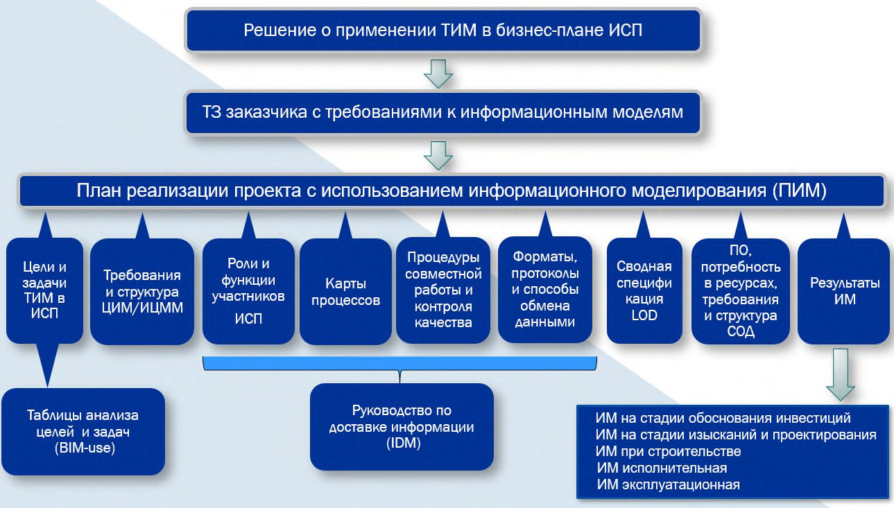

СП 333.1325800.2020 «Информационное моделирование в строительстве. Правила форми»
О документе: разработчики, утверждение, регистрация, ключевые слова
СВОД ПРАВИЛ СП 333.1325800.2020
Правила формирования информационной модели объектов на различных стадиях жизненного цикла
Издание официальное
СП 333.1325800.2020
1 ИСПОЛНИТЕЛИ -Федеральное государственное бюджетное образовательное учреждение высшего образования «Национальный исследовательский Московский государственный строительный университет» (НИУ МГСУ), ЧУ ГК «Росатом» «ОЦКС»
2 ВНЕСЕН Техническим комитетом по стандартизации ТК 465 «Строительство»
3 ПОДГОТОВЛЕН к утверждению Департаментом градостроительной деятельности и архитектуры Министерства строительства и жилищнокоммунального хозяйства Российской Федерации (Минстрой России)
4 УТВЕРЖДЕН приказом Министерства строительства и жилищнокоммунального хозяйства Российской Федерации от 31 декабря 2020 г. № 928/пр и введен в действие с 1 июля 2021 г.
5 ЗАРЕГИСТРИРОВАН Федеральным агентством по техническому регулированию и метрологии (Росстандарт). Пересмотр СП 333.1325800.2017 Информационное моделирование в строительстве. Правила формирования информационной модели объектов на различных стадиях жизненного цикла
В случае пересмотра (замены) или отмены настоящего свода правил соответствующее уведомление будет опубликовано в установленном порядке. Соответствующая информация, уведомление и тексты размещаются также в информационной системе общего пользования - на официальном сайте разработчика (Минстрой России) в сети Интернет
© Минcтрой России, 2020
Настоящий нормативный документ не может быть полностью или частично воспроизведен, тиражирован и распространен в качестве официального издания на территории Российской Федерации без разрешения Минстроя России
СП 333.1325800.2020
Дата введения - 2021-07-01
УДК 658.51 ОКС 35.240.99
Ключевые слова: технологии информационного моделирования, жизненный цикл, управление жизненным циклом, объект капитального строительства, информационная модель, цифровая информационная модель объекта капитального строительства, цифровая информационная модель местности
Руководитель разработки Зав. кафедрой АиЭ НИУ МГСУ, \_\_\_\_\_\_\_\_\_\_\_\_\_\_\_\_\_\_П.Д. Челышков д.т.н., доц.
Исполнитель
Научный руководитель НОЦ «Умный город» \_\_\_\_\_\_\_\_\_\_\_\_\_\_\_\_\_\_А.А. Волков НИУ МГСУ, д.т.н., проф.
Исполнитель Зам. директора НОЦ «Умный город» НИУ МГСУ \_\_\_\_\_\_\_\_\_\_\_\_\_\_\_\_\_\_Д.А. Лысенко
Исполнитель Доцент кафедры АиЭ НИУ МГСУ, к.т.н. \_\_\_\_\_\_\_\_\_\_\_\_\_\_\_\_\_\_Т.В. Хрипко
Исполнитель
Мл. научный сотрудник НОЦ «Умный город» \_\_\_\_\_\_\_\_\_\_\_\_\_\_\_\_\_\_П.А. Бражников НИУ МГСУ
Консультант
Главный менеджер Частного учреждения \_\_\_\_\_\_\_\_\_\_\_\_\_\_\_\_\_\_С.А. Волков
Госкорпорации «Росатом»
«Отраслевого Центра капитального строительства»
Введение
Настоящий свод правил разработан с учетом обязательных требований, установленных в федеральных законах от 27 декабря 2002 г. № 184-ФЗ «О техническом регулировании», от 30 декабря 2009 г. № 384-ФЗ «Технический регламент о безопасности зданий и сооружений».
Свод правил разработан авторским коллективом Федерального государственного бюджетного образовательного учреждения высшего образования «Национальный исследовательский Московский государственный строительный университет» (д-р техн. наук П.Д. Челышков , д-р техн. наук А.А. Волков , Д.А. Лысенко , канд. техн. наук Т.В. Хрипко , П.А. Бражников ) при участии ЧУ ГК «Росатом» «ОЦКС» ( С.А. Волков )
ИНФОРМАЦИОННОЕ МОДЕЛИРОВАНИЕ В СТРОИТЕЛЬСТВЕ Правила формирования информационной модели объектов на различных стадиях жизненного цикла
Building information modeling. Modeling guidelines for various project life cycle stages
1Область применения
\_\_\_\_\_\_\_\_\_\_\_\_\_\_\_\_\_\_\_\_\_\_\_\_\_\_\_\_\_\_\_\_\_\_\_\_\_\_\_\_\_\_\_\_\_\_\_\_\_\_\_\_\_\_\_\_
Издание официальное
2Нормативные ссылки
В настоящем своде правил использованы нормативные ссылки на следующие документы:
ГОСТ 12.2.063-2015 Арматура трубопроводная. Общие требования безопасности
ГОСТ 21.301-2014 Система проектной документации для строительства. Основные требования к оформлению отчетной документации по инженерным изысканиям
ГОСТ 21.408-2013 Система проектной документации для строительства. Правила выполнения рабочей документации автоматизации технологических процессов
ГОСТ 21.709-2011 Система проектной документации для строительства. Правила выполнения рабочей документации линейных сооружений гидромелиоративных систем
ГОСТ 379-2015 Кирпич, камни, блоки и плиты перегородочные силикатные. Общие технические условия
ГОСТ 475-2016 Блоки дверные деревянные и комбинированные. Общие технические условия
ГОСТ 530-2012 Кирпич и камень керамические. Общие технические условия
ГОСТ 4001-2013 Камни стеновые из горных пород. Технические условия
ГОСТ 5172-63 Газгольдеры стальные постоянного объема цилиндрические. Параметры и основные размеры
ГОСТ 5746-2015 (ISO 4190-1:2010) Лифты пассажирские. Основные параметры и размеры
ГОСТ 6133-2019 Камни бетонные стеновые. Технические условия
ГОСТ 6428-2018 Плиты гипсовые пазогребневые для перегородок. Технические условия
ГОСТ 8468-81 Воздуховоды систем вентиляции и кондиционирования воздуха судов. Основные размеры
ГОСТ 9098-78 Выключатели автоматические низковольтные. Общие технические условия
[ГОСТ 9818-2015 Марши и площадки лестниц железобетонные. Общие технические условия](https://internet-law.ru/gosts/gost/60479/)
ГОСТ 10616-2015 Вентиляторы радиальные и осевые. Размеры и параметры
ГОСТ 11024-2012 Панели стеновые наружные бетонные и железобетонные для жилых и общественных зданий. Общие технические условия
ГОСТ 13781.0-86 (СТ СЭВ 4449-83) Муфты для силовых кабелей на напряжение до 35 кВ включительно. Общие технические условия
ГОСТ 14254-2015 (IEC 60529:2013) Степени защиты, обеспечиваемые оболочками (Код IP)
ГОСТ 14695-80 (СТ СЭВ 1127-78) Подстанции трансформаторные комплектные мощностью от 25 до 2500 кВ·А на напряжение до 10 кВ. Общие технические условия
ГОСТ 14919-83 Электроплиты, электроплитки и жарочные электрошкафы бытовые. Общие технические условия
[ГОСТ 18105-2018 Бетоны. Правила контроля и оценки прочности](https://internet-law.ru/gosts/gost/70860/)
ГОСТ 18853-73 Ворота деревянные распашные для производственных зданий и сооружений. Технические условия
ГОСТ 19010-82 Блоки стеновые бетонные и железобетонные для зданий. Общие технические условия
ГОСТ 23166-99 Блоки оконные. Общие технические условия
ГОСТ 23747-2015 Блоки дверные из алюминиевых сплавов.
Технические условия
СП 333.1325800.2020
ГОСТ 24570-81 (СТ СЭВ 1711-79) Клапаны предохранительные паровых и водогрейных котлов. Технические требования
ГОСТ 24728-81 Ветер. Пространственное и временное распределение характеристик
ГОСТ 24856-2014 Арматура трубопроводная. Термины и определения
[ГОСТ 25100-2011 Грунты. Классификация](https://internet-law.ru/gosts/gost/52227/)
ГОСТ 25192-2012 Бетоны. Классификация и общие технические требования
ГОСТ 25449-82 (СТ СЭВ 3033-81) Теплообменники водо-водяные и пароводяные. Типы, основные параметры и размеры
ГОСТ 25772-83 Ограждения лестниц, балконов и крыш стальные. Общие технические условия
[ГОСТ 26349-84 Соединения трубопроводов и арматура. Давления номинальные (условные). Ряды](https://internet-law.ru/gosts/gost/29378/)
ГОСТ 27020-86 Изоляторы. Классификация и условные обозначения ГОСТ 28338-89 Соединения трубопроводов и арматура. Проходы
[условные (размеры номинальные). Ряды](https://internet-law.ru/gosts/gost/2511/)
ГОСТ 30528-97 Системы вентиляционные. Фильтры воздушные. Типы и основные параметры
ГОСТ 30735-2001 Котлы отопительные водогрейные теплопроизводительностью от 0,1 до 4,0 МВт. Общие технические условия
ГОСТ 30826-2014 Стекло многослойное. Технические условия ГОСТ 30970-2014 Блоки дверные из поливинилхлоридных профилей.
Общие технические условия
ГОСТ 31173-2016 Блоки дверные стальные. Технические условия ГОСТ 31174-2017 Ворота металлические. Общие технические условия
СП 333.1325800.2020
ГОСТ 31311-2005 Приборы отопительные. Общие технические условия
ГОСТ 31603-2012 (IEC 61540:1997) Устройства защитного отключения переносные бытового и аналогичного назначения, управляемые дифференциальным током, без встроенной защиты от сверхтоков (УЗО-ДП). Общие требования и методы испытаний
ГОСТ 31938-2012 Арматура композитная полимерная для армирования бетонных конструкций. Общие технические условия
ГОСТ 31947-2012 Провода и кабели для электрических установок на номинальное напряжение до 450/750 В включительно. Общие технические условия
ГОСТ 32397-2013 Щитки распределительные для производственных и общественных зданий. Общие технические условия
ГОСТ 32548-2013 Вентиляция зданий. Воздухораспределительные устройства. Общие технические условия
ГОСТ 32947-2014 Дороги автомобильные общего пользования. Опоры стационарного электрического освещения. Технические требования
ГОСТ 33079-2014 Конструкции фасадные светопрозрачные навесные. Классификация. Термины и определения
ГОСТ 33115-2014 Установки электрогенераторные с дизельными и газовыми двигателями внутреннего сгорания. Общие технические условия
ГОСТ 33984.1-2016 (EN 81-20:2014) Лифты. Общие требования безопасности к устройству и установке. Лифты для транспортирования людей или людей и грузов
ГОСТ 33998-2016 (EN 30-1-1+A3:2013, EN 30-2-1:2015) Приборы газовые бытовые для приготовления пищи. Общие технические требования, методы испытаний и рациональное использование энергии
СП 333.1325800.2020
ГОСТ ISO 2531-2012 Трубы, фитинги, арматура и их соединения из чугуна с шаровидным графитом для водо- и газоснабжения. Технические условия
ГОСТ Р 10.0.03-2019/ИСО 29481-1:2016 Система стандартов информационного моделирования зданий и сооружений. Информационное моделирование в строительстве. Справочник по обмену информацией. Часть 1. Методология и формат
ГОСТ Р 21.1101-2013 Система проектной документации для строительства. Основные требования к проектной и рабочей документации
ГОСТ Р 21.1703-2000 Система проектной документации для строительства. Правила выполнения рабочей документации проводных средств связи
[ГОСТ Р 50193.1-92 Измерение расхода воды в закрытых каналах. Счетчики холодной питьевой воды. Технические требования](https://internet-law.ru/gosts/gost/10049/)
ГОСТ Р 50571.5.54-2013/МЭК 60364-5-54:2011 Электроустановки низковольтные. Часть 5-54. Заземляющие устройства, защитные проводники и защитные проводники уравнивания потенциалов
ГОСТ Р 50867-96 Антенны радиорелейных линий связи. Классификация и общие технические требования
ГОСТ Р 51086-97 Датчики и преобразователи физических величин электронные. Термины и определения
ГОСТ Р 51558-2014 Средства и системы охранные телевизионные. Классификация. Общие технические требования. Методы испытаний
ГОСТ Р 51597-2000 Нетрадиционная энергетика. Модули солнечные фотоэлектрические. Типы и основные параметры
ГОСТ Р 52868-2007 (МЭК 61537:2006) Системы кабельных лотков и системы кабельных лестниц для прокладки кабелей. Общие технические требования и методы испытаний
ГОСТ Р 53566-2009 Микрофоны. Общие технические условия
СП 333.1325800.2020
ГОСТ Р 53780-2010 (ЕН 81-1:1998, ЕН 81-2:1998) Лифты. Общие требования безопасности к устройству и установке
ГОСТ Р 54806-2011 (ИСО 9905:1994) Насосы центробежные. Технические требования. Класс I
ГОСТ Р 55149-2012 Техника пожарная. Оповещатели пожарные индивидуальные. Общие технические требования и методы испытаний
ГОСТ Р 55617.1-2013 (ЕН 12975-1:2006) Возобновляемая энергетика. Установки солнечные термические и их компоненты. Солнечные коллекторы. Часть 1. Общие требования
ГОСТ Р 55968-2014 (ЕН 115-2:2010) Эскалаторы и пассажирские конвейеры. Повышение безопасности находящихся в эксплуатации эскалаторов и пассажирских конвейеров
ГОСТ Р 56744-2015 (МЭК 61921:2003) Конденсаторы силовые. Установки конденсаторные низковольтные для повышения коэффициента мощности
ГОСТ Р 56926-2016 Конструкции оконные и балконные различного функционального назначения для жилых зданий. Общие технические условия
ГОСТ Р 56943-2016 Лифты. Общие требования безопасности к устройству и установке. Лифты для транспортирования грузов
ГОСТ Р 56978-2016 (IEC/TS 62548:2013) Батареи фотоэлектрические. Технические условия
[ГОСТ Р 57190-2016 Заземлители и заземляющие устройства различного назначения. Термины и определения](https://internet-law.ru/gosts/gost/63764/)
ГОСТ Р 57311-2016 Моделирование информационное в строительстве. Требования к эксплуатационной документации объектов завершенного строительства
СП 333.1325800.2020
ГОСТ Р 57997-2017 Арматурные и закладные изделия сварные, соединения сварные арматуры и закладных изделий железобетонных конструкций. Общие технические условия
ГОСТ Р 58018-2017 Опоры промежуточные композитные полимерные для воздушных линий электропередачи напряжением 35-220 кВ. Общие технические условия
ГОСТ Р 58021-2017 Опоры композитные полимерные для воздушных линий электропередачи напряжением 6-20 кВ. Общие технические условия
ГОСТ Р 58033-2017 Здания и сооружения. Словарь. Часть 1. Общие термины
ГОСТ Р 58087-2018 Единая энергетическая система и изолированно работающие энергосистемы. Электрические сети. Паспорт воздушных линий электропередачи напряжением 35 кВ и выше
ГОСТ Р МЭК 61386.1-2014 Трубные системы для прокладки кабелей. Часть 1. Общие требования
ГОСТ Р МЭК 62561.2-2014 Компоненты системы молниезащиты. Часть 2. Требования к проводникам и заземляющим электродам
СП 15.13330.2012 «СНиП II-22-81* Каменные и армокаменные конструкции» (с изменениями № 1, № 2, № 3)
СП 16.13330.2017 «СНиП II-23-81* Стальные конструкции» (с изменениями № 1, № 2)
СП 17.13330.2017 «СНиП II-26-76 Кровли» (с изменением № 1)
СП 20.13330.2016 «СНиП 2.01.07-85* Нагрузки и воздействия» (с изменениями № 1, № 2)
СП 22.13330.2016 «СНиП 2.02.01-83* Основания зданий и сооружений» (с изменениями № 1, № 2, № 3)
СП 24.13330.2011 «СНиП 2.02.03-85 Свайные фундаменты» (с изменениями № 1, № 2, № 3)
СП 29.13330.2011 «СНиП 2.03.13-88 Полы» (с изменением № 1)
СП 333.1325800.2020
СП 30.13330.2016 «СНиП 2.04.01-85* Внутренний водопровод и канализация зданий» (с изменением № 1)
СП 31.13330.2012 «СНиП 2.04.02-84* Водоснабжение. Наружные сети и сооружения» (с изменениями № 1, № 2, № 3, № 4, № 5)
СП 34.13330.2012 «СНиП 2.05.02-85* Автомобильные дороги» (с изменениями № 1, № 2)
СП 47.13330.2016 «СНиП 11-02-96 Инженерные изыскания для строительства. Основные положения»
СП 52.13330.2016 «СНиП 23-05-95* Естественное и искусственное освещение» (с изменением № 1)
СП 60.13330.2016 «СНиП 41-01-2003 Отопление, вентиляция и кондиционирование воздуха» (с изменением № 1)
СП 61.13330.2012 «СНиП 41-03-2003 Тепловая изоляция оборудования и трубопроводов» (с изменением № 1)
СП 63.13330.2018 «СНиП 52-01-2003 Бетонные и железобетонные конструкции. Основные положения» (с изменением № 1)
СП 64.13330.2017 «СНиП II-25-80 Деревянные конструкции» (с изменениями № 1, № 2)
СП 68.13330.2017 «СНиП 3.01.04-87 Приемка в эксплуатацию законченных строительством объектов. Основные положения» (с изменением № 1)
СП 71.13330.2017 «СНиП 3.04.01-87 Изоляционные и отделочные покрытия» (с изменением № 1)
СП 118.13330.2012 «СНиП 31-06-2009 Общественные здания и сооружения» (с изменениями № 1, № 2, № 3, № 4)
СП 119.13330.2017 «СНиП 32-01-95 Железные дороги колеи 1520 мм» (с изменением № 1)
СП 124.13330.2012 «СНиП 41-02-2003 Тепловые сети» (с изменением № 1)
СП 333.1325800.2020
СП 128.13330.2016 «СНиП 2.03.06-85 Алюминиевые конструкции»
СП 163.1325800.2014 Конструкции с применением гипсокартонных и гипсоволокнистых листов. Правила проектирования и монтажа
СП 240.1311500.2015 Хранилища сжиженного природного газа. Требования пожарной безопасности
СП 255.1325800.2016 Здания и сооружения. Правила эксплуатации. Основные положения (с изменениями № 1, № 2)
СП 266.1325800.2016 Конструкции сталежелезобетонные. Правила проектирования (с изменением № 1)
СП 271.1325800.2016 Системы шумоглушения воздушного отопления, вентиляции и кондиционирования воздуха. Правила проектирования
СП 280.1325800.2016 Системы подачи воздуха на горение и удаление продуктов сгорания для теплогенераторов на газовом топливе. Правила проектирования и устройства
СП 301.1325800.2017 Информационное моделирование в строительстве. Правила организации работ производственно-техническими отделами
СП 328.1325800.2020 Информационное моделирование в строительстве. Правила описания компонентов информационной модели
СП 331.1325800.2017 Информационное моделирование в строительстве. Правила обмена между информационными моделями объектов и моделями, используемыми в программных комплексах
СП 404.1325800.2018 Информационное моделирование в строительстве. Правила разработки планов проектов, реализуемых с применением технологии информационного моделирования
СП 446.1325800.2019 Инженерно-геологические изыскания для строительства. Общие правила производства работ
СП 333.1325800.2020
СП 471.1325800.2019 Информационное моделирование в строительстве. Контроль качества производства строительных работ
СанПиН 2.1.3.2630-10 Санитарно-эпидемиологические требования к организациям, осуществляющим медицинскую деятельность
СанПиН 2.1.4.1074-01 Питьевая вода. Гигиенические требования к качеству воды централизованных систем питьевого водоснабжения. Контроль качества. Гигиенические требования к обеспечению безопасности систем горячего водоснабжения
СанПиН 2.1.4.1110-02 Зоны санитарной охраны источников водоснабжения и водопроводов питьевого назначения
СН 2.2.4/2.1.8.562-96 Шум на рабочих местах, в помещениях жилых, общественных зданий и на территории жилой застройки
Примечание - При пользовании настоящим сводом правил целесообразно проверить действие ссылочных документов в информационной системе общего пользования - на официальном сайте федерального органа исполнительной власти в сфере стандартизации в сети Интернет или по ежегодному информационному указателю «Национальные стандарты», который опубликован по состоянию на 1 января текущего года, и по выпускам ежемесячного информационного указателя «Национальные стандарты» за текущий год. Если заменен ссылочный документ, на который дана недатированная ссылка, то рекомендуется использовать действующую версию этого документа с учетом всех внесенных в данную версию изменений. Если заменен ссылочный документ, на который дана датированная ссылка, то рекомендуется использовать версию этого документа с указанным выше годом утверждения (принятия). Если после утверждения настоящего свода правил в ссылочный документ, на который дана датированная ссылка, внесено изменение, затрагивающее положение, на которое дана ссылка, то это положение рекомендуется применять без учета данного изменения. Если ссылочный документ отменен без замены, то положение, в котором дана ссылка на него, рекомендуется применять в части, не затрагивающей эту ссылку. Сведения о действии сводов правил целесообразно проверить в Федеральном информационном фонде стандартов.
3Термины, определения и сокращения
В настоящем своде правил применены следующие термины с соответствующими определениями:
- 3.1.1жизненный цикл здания или сооружения
- Период, в течение которого осуществляются инженерные изыскания, проектирование, строительство (в том числе консервация), эксплуатация (в том числе текущие ремонты), реконструкция, капитальный ремонт, снос здания или сооружения.Источник: 10, статья 2, часть 2, пункт 5
- 3.1.2 этапы жизненного цикла объекта капитального строительства
- Временные периоды, в течение которых осуществляются инженерные изыскания, архитектурно-строительное проектирование (включая прохождение экспертизы), строительство (включая ввод в эксплуатацию), эксплуатация (включая текущие ремонты), реконструкция, капитальный ремонт, снос и утилизация объекта капитального строительства (ликвидация - для производственных объектов).
- 3.1.3 информационная модель объекта капитального строительства
- Совокупность взаимосвязанных сведений, документов и материалов об объекте капитального строительства, формируемых в электронном виде на этапах выполнения инженерных изысканий, осуществления архитектурностроительного проектирования, строительства, реконструкции, капитального ремонта, эксплуатации и (или) сноса объекта капитального строительства.Источник: 7, статья 1, пункт 10.3)
- 3.1.4 цифровая информационная модель объекта капитального строительства
- Совокупность взаимосвязанных инженерно-технических и инженерно-технологических данных об объекте капитального строительства, представленных в цифровом объектно-пространственном виде.
- 3.1.5 инженерная цифровая модель местности
- Совокупность взаимосвязанных инженерно-геодезических, инженерно-геологических, инженерно-гидрометеорологических, инженерно-экологических данных, инженерно-геотехнических данных и данных о территории объекта капитального строительства, представленных в цифровом виде для автоматизированного решения задач управления процессами на жизненном цикле объектов капитального строительства.
- 3.1.6 цифровая информационная модель (трехмерная модель)
- Электронный документ в составе информационной модели объекта капитального строительства (ИМ ОКС), представленный в цифровом объектно-пространственном виде. Примечание - Примерами цифровой информационной модели (ЦИМ) являются цифровая информационная модель объекта капитального строительства (ЦИМ ОКС), инженерная цифровая модель местности (ИЦММ) и другие виды цифровых информационных моделей, применяемых для различных целей.
- 3.1.7 элемент цифровой информационной модели
- Цифровое представление части объекта капитального строительства или территории, характеризуемое атрибутивными и геометрическими данными.
- 3.1.8 коллизия
- Дефект, содержащийся в цифровой информационной модели и заключающийся в пространственном или ином пересечении двух или более элементов цифровой информационной модели.
- 3.1.9 атрибутивные данные
- Существенные свойства элемента цифровой информационной модели, определяющие его характеристики, представленные в виде алфавитно-цифровых символов.
- 3.1.10 геометрические данные
- Данные, определяющие размеры, форму и пространственное расположение элемента цифровой информационной модели.
- 3.1.11 валидация цифровой информационной модели
- Процесс установления соответствия содержания включенных в цифровую информационную модель атрибутивных и геометрических данных определенному набору требований.
- 3.1.12 верификация цифровой информационной модели
- Процесс установления соответствия состава включенных в цифровую информационную модель атрибутивных и геометрических данных определенному набору требований.
- 3.1.13информационная система
- Совокупность содержащейся в базах данных информации и обеспечивающих ее обработку информационных технологий и технических средств.Источник: 5, статья 2, пункт 3)
- 3.1.14 уровень проработки модели
- Набор требований, определяющий полноту проработки элемента цифровой информационной модели. Уровень проработки задает минимальный объем геометрических, пространственных, количественных, а также любых атрибутивных данных, необходимых для решения задач информационного моделирования на конкретной стадии жизненного цикла объекта.
- 3.1.15 усиленная квалифицированная электронная подпись
- Электронная подпись, обладающая дополнительными признаками защищенности: ключом проверки и подтвержденными средствами электронной подписи.
- 3.1.16электронная подпись
- Информация в электронной форме, которая присоединена к другой информации в электронной форме (подписываемой информации) или иным образом связана с такой информацией и которая используется для определения лица, подписывающего информацию.Источник: 2, статья 2, пункт 1
- 3.1.17электронный документ
- Документированная информация, представленная в электронной форме, то есть в виде, пригодном для восприятия человеком с использованием электронных вычислительных машин, а также для передачи по информационнотелекоммуникационным сетям или обработки в информационных системах. В настоящем своде правил применены следующие сокращения: АИС - автоматизированная информационная система; АС - автоматизированная система; ИС - информационная система; ДЭ - документ электронный; ЖЦ - жизненный цикл объекта капитального строительства; ИМ ОКС -информационная модель объекта капитального строительства; ИЦММ - инженерная цифровая модель местности; ОКС - объект капитального строительства; ПСС - проводные средства связи; САПР - система (системы) автоматизированного проектирования; ТЭП - технико-экономические показатели проекта; ФОИВ - федеральный орган исполнительной власти; ЦИМ - цифровая информационная модель; ЦИМ ОКС - цифровая информационная модель объекта капитального строительства.Источник: 5, статья 2, пункт 11.1)
4Общие положения
СП 333.1325800.2020 схем, утвержденных уполномоченным ФОИВ и размещенных на официальной странице данного ФОИВ в информационнотелекоммуникационной сети Интернет. Если XML-схема не утверждена уполномоченным ФОИВ и (или) не размещена на официальной странице данного ФОИВ в информационно-телекоммуникационной сети Интернет, необходимо руководствоваться временным регламентом предоставления ИМ ОКС, разрабатываемым лицом, ответственным за прием и хранение ИМ ОКС.
5Требования к уровням проработки цифровых информационных моделей
СП 333.1325800.2020
Таблица 5.1 Уровни проработки цифровых информационных моделей
| Наименование этапа жизненного цикла | Тип модели | Уровень проработкиЦИМ | Уровень проработкиЦИМ | Уровень проработкиЦИМ | Исходная информация |
|---|---|---|---|---|---|
| Наименование этапа жизненного цикла | Тип модели | Наименование | Обозначение | Описание | Исходная информация |
| Инженерные изыскания | ИЦММ | Модель инженерных изысканий | A | ЦИМсодержит взаимосвязанные графические и атрибутивные данные, представляющие результаты инженерных изысканий, а именно: результаты инженерно-геодезических изысканий, результаты инженерно-геологических изысканий, результаты инженерно- гидрометеорологических изысканий, результаты инженерно-экологических изысканий, результаты инженерно- геотехнических изысканий | Результаты инженерных изысканий |
| Архитектурно- строительное проектирова- ние (проектирова- ние) | ИЦММ | Проектная модель | B | ЦИМсодержит взаимосвязанные графические и атрибутивные данные, представляющие результаты проектирования ОКС, а именно: архитектурные, технические и технологические проектные решения ОКС | ИЦММуровня «А» |
| Архитектурно- строительное проектирова- ние (проектирова- ние) | ЦИМ ОКС | Проектная модель | B | ЦИМсодержит взаимосвязанные графические и атрибутивные данные, представляющие результаты проектирования ОКС, а именно: архитектурные, технические и технологические проектные решения ОКС | - |
| Наименование этапа жизненного цикла | Тип модели | Уровень проработкиЦИМ | Уровень проработкиЦИМ | Уровень проработкиЦИМ | Исходная информация |
|---|---|---|---|---|---|
| Наименование этапа жизненного цикла | Тип модели | Наименование | Обозначение | Описание | Исходная информация |
| Строительство, реконструкция, капитальный | ИЦММ | Строительная модель | C1 | ЦИМсодержит взаимосвязанные графические и атрибутивные данные, обеспечивающие выполнение строительно-монтажных работ, а именно: архитектурные, технические и технологические проектные решения ОКС, включающие проект производства работ с применением конкретного материально- технического обеспечения | ИЦММуровня В |
| Строительство, реконструкция, капитальный | ЦИМ ОКС | Строительная модель | C1 | ЦИМсодержит взаимосвязанные графические и атрибутивные данные, обеспечивающие выполнение строительно-монтажных работ, а именно: архитектурные, технические и технологические проектные решения ОКС, включающие проект производства работ с применением конкретного материально- технического обеспечения | ЦИМОКСуровня В |
| Строительство, реконструкция, капитальный | ИЦММ | Исполнительная модель | C2 | ЦИМсодержит взаимосвязанные графические и атрибутивные данные, обеспечивающие выполнение строительного контроля и государственного строительного надзора, а именно: архитектурные, технические и технологические параметры объекта капитального строительства по результатам выполнения строительно- монтажных работ | ИЦММуровня В, ИЦММуровня C1 |
| Строительство, реконструкция, капитальный | ЦИМ ОКС | Исполнительная модель | C2 | ЦИМсодержит взаимосвязанные графические и атрибутивные данные, обеспечивающие выполнение строительного контроля и государственного строительного надзора, а именно: архитектурные, технические и технологические параметры объекта капитального строительства по результатам выполнения строительно- монтажных работ | ЦИМОКСуровня В, ЦИМОКСуровня C1 |
| Наименование этапа жизненного цикла | Тип модели | Уровень проработкиЦИМ | Уровень проработкиЦИМ | Уровень проработкиЦИМ | Исходная информация |
|---|---|---|---|---|---|
| Наименование этапа жизненного цикла | Тип модели | Наименование | Обозначение | Описание | Исходная информация |
| Эксплуатация | ИЦММ | Эксплуатационная модель | D | ЦИМсодержит взаимосвязанные графические и атрибутивные данные, обеспечивающие выполнение работ по эксплуатации ОКС, а именно: архитектурные, технические и технологические параметры объекта капитального строительства, включающие регламенты и технологические карты технического обслуживания | ИЦММуровня C2 |
| Эксплуатация | ЦИМ ОКС | Эксплуатационная модель | D | ЦИМсодержит взаимосвязанные графические и атрибутивные данные, обеспечивающие выполнение работ по эксплуатации ОКС, а именно: архитектурные, технические и технологические параметры объекта капитального строительства, включающие регламенты и технологические карты технического обслуживания | ЦИМОКСуровня C2 |
| Снос и утилизация (ликвидация) | ИЦММ | Модель сноса и демонтажа | G | ЦИМсодержит взаимосвязанные | ИЦММуровня D |
| Снос и утилизация (ликвидация) | ЦИМ ОКС | Модель сноса и демонтажа | G | графические и атрибутивные данные, обеспечивающие выполнение работ по сносу и утилизации ОКС, а именно: архитектурные, технические и технологические проектные решения по сносу ОКС, включающие проект производства работ с применением конкретного материально-технического обеспечения | ЦИМОКСуровня D |
6Требования к составу информационной модели объекта капитального строительства на различных этапах жизненного цикла
7Требования к атрибутивному составу элементов инженерной цифровой модели местности
8Требования к геометрической детализации элементов инженерной цифровой модели местности
Геометрическое представление элементов ИЦММ должно обеспечивать определение границ элемента.
9Требования к атрибутивному составу элементов цифровой информационной модели объекта капитального строительства
10Требования к геометрической детализации элементов цифровой информационной модели объекта капитального строительства
Таблица 10.1Требования к геометрической детализации ЦИМ ОКС
| Обязательные требования | Уровни проработкиЦИМ | Уровни проработкиЦИМ | Уровни проработкиЦИМ | Уровни проработкиЦИМ | Уровни проработкиЦИМ |
|---|---|---|---|---|---|
| A | B | C | D | G | |
| Определение границ элемента | Х | Х | Х | Х | Х |
| Границы материалов в структуре элемента 1) | Х | Х | Х | Х | |
| Узлы сопряжения с другими элементами | Х | Х | Х |
СП 333.1325800.2020
11Правила именования файлов информационной модели
Таблица 11.1 Правила наименования файлов модели
| Производственная группа | Производственная группа | Производственная группа | Производственная группа | Контрольно-надзорная группа | Контрольно-надзорная группа | Контрольно-надзорная группа | Базовая группа | Базовая группа | Базовая группа | Базовая группа | Базовая группа |
|---|---|---|---|---|---|---|---|---|---|---|---|
| Блок 11 | Блок 10 | Блок 9 | Блок 8 | Блок 7 | Блок 6 | Блок 5 | Блок 4 | Блок 3 | Блок 2 | Блок 1 | Блок 0 |
| Базовое обозначение | Уровень (высотная отметка) | Автор | Уровень проработки ЦИМ | Корпус | Секция | Код типа объекта по КОКС | Краткое наименование или код объекта | Шифр ИМпо разделу ПД | Номер подмодели раздела | Обозначение наименования и версии САПР | Обозначение версии IFC файла (опционально) |
| ОООО | E + 2 | FIO | A | K01 | C1 | 7.4.1.7 | ХХХХХХ | AR | 1 | AR20 | I4020 |
| ОООО | E1 | FIO | B | K02 | C1-3 | 28.3.3.4 | ХХХХХХ | ENN | 1.1 | GA22 | I4200C2 |
| ОООО | E00 | FIO | C | K03 | 25.1.1.30 | ХХХХХХ | FS | 2 | I2301C2 | ||
| ОООО | E-1 | FIO | D | K04 | 25.2.1.1 | ХХХХХХ | BS | LXM20 | |||
| ОООО | FIO | G | K05 | 3.1.2.23 | ХХХХХХ | CGM30 | |||||
| ОООО | FIO | K05 | C1 | 1.1.1.1 | ХХХХХХ | BS |
Примечание - Примеры наименования файлов моделей объекта промышленности удобрений, имеющего название Skolkovo, для здания цеха огневой или вакуумной упарки аммофосной пульпы для производства аммофоса (код 7.4.1.7) первая секция первого корпуса.
В общеобменном формате IFC версии 2х3 Coordination View 2.0, разработанного в системе информационного моделирования Autodesk Revit 2020, подмодели 1, раздела АР, для передачи заказчику (PUBLICATION):
В общеобменном формате IFC версии 2х3 Coordination View 2.0, разработанного в системе информационного моделирования Autodesk Revit 2020, подмодели 1, раздела АР, для передачи государственным органам:
В общеобменном формате IFC версии 2х3 Coordination View 2.0, разработанного в системе информационного моделирования Autodesk Revit 2020, подмодели 1, раздела АР, для координации с другими разделами (SHARED), первая секция первого корпуса, разработанного пользователем с ФИО В.А.С., имеющий концептуальный уровень проработки, для первого этажа с базовым обозначением проекта K123:
K123\_E1\_VAS\_B\_Skolkovo\_AR\_1\_R20.rvt и в нативном формате:
Таблица 11.2 Правила наименования файлов модели Блок 0
| Блок 0 Код ХХХХХХХ | Расшифровка/пояснение кода |
|---|---|
| I2300 | IFC2x3 версии 2.3.0.0 |
| I2301 | IFC2x3 версии 2.3.0.1 (IFC2x3 TC1, ISO/PAS 16739:2005) |
| I2301C2 | IFC2x3 версии 2.3.0.1 Coordination View версии 2.0 |
| I4000 | IFC4 версии 4.0.0.0 (ISO 16739:2013) |
| I4010 | IFC4 версии 4.0.1.0 (IFC4 ADD1) |
| I4020 | IFC4 версии 4.0.2.0 (IFC4 ADD2) |
| I4021 | IFC4 версии 4.0.2.1 (IFC4 ADD2 TC1, ISO 16739-1:2018) |
| I4100 | IFC4 версии 4.1.0.0 (IFC4.1) |
| I4200 | IFC4 версии 4.2.0.0 (IFC4.2) |
| I4200C2 | IFC4.2 версии 4.2.0.0 Coordination View версии 2.0 |
| I4200DT | IFC4.2 версии 4.2.0.0 Design Transfer View |
| I4200R | IFC4.2 версии 4.2.0.0 Reference View |
| I4200SA | IFC4.2 версии 4.2.0.0 Structural Analysis View |
| I4200FH | IFC4.2 версии 4.2.0.0 FM Handover View |
| I43R1 | IFC4 версии 4.3.rc.1 (IFC4.3 RC1) |
| I43R2 | IFC4 версии 4.3.rc.2 (IFC4.3 RC2) |
| I5x0 | IFC перспективной версии 5 |
| LXM10 | LandXML-1.0 |
| LXM11 | LandXML-1.1 |
| LXM12 | LandXML-1.2 |
| LXM20 | LandXML-2.0 |
| CGM10 | CityGML Versions 1.0 |
| CGM20 | CityGML Versions 2.0 |
| CGM30 | CityGML Versions 3.0 |
Примечания
1 Справочные сведения по версии стандарта общеобменного формата IFC приведены в соответствии с обновленной системой версий спецификаций IFC (https://technical.buildingsmart.org/standards/ifc/ifc-schema-specifications/).
2 Также для обеспечения отражения информации о примененном способе формирования выгрузки (Model View Definition) к номеру версии добавляется либо один, либо два символа от названия типа сценария выгрузки без использования слова «View».
Примечание - Код состоит из сокращения наименования компании производителя программного обеспечения до первой буквы, сокращения наименования программного продукта и сокращенного номера версии программного продукта.
Таблица 11.3 Правила наименования файлов модели Блок 1
Блок 1
Версия и ПО/формат представления информации
Код состоит из сокращения наименования компании - производителя программного обеспечения до первой буквы, сокращения наименования программного продукта и сокращенного номера версии программного продукта, либо если используется универсальный общеобменный формат, то используется обозначение «I» и номер версии стандарта в формате «Базовый номер версии» х «младший номер версии стандарта»
| Код | Наименование |
|---|---|
| AR16 | Autodesk Revit 2016 |
| AR17 | Autodesk Revit 2017 |
| AR18 | Autodesk Revit 2018 |
| AR19 | Autodesk Revit 2019 |
| AR20 | Autodesk Revit 2020 |
| AN16 | Autodesk Navisworks 2016 |
| AA | Autodesk Autocad |
| AM | Autodesk 3DMax |
| BIMX | BIMx |
| C4D | Cinema 4D |
| GA22 | GRAPHISOFT Archicad |
| NK | Nanosoft nanoCAD Конструкторский BIM |
| NE | Nanosoft nanoCAD Инженерный BIM |
| NL | Nanosoft nanoCAD Электро |
| NA | Nemetschek AllPlan |
| NS | Nemetschek SCIA |
| ND | Nemetschek Data Design System CAD |
| RA212 | Renga Architecture 2.12.xxxxx |
| RS212 | Renga Structure 2.12.xxxxx |
| RM | Renga MEP |
| TT | Trimble Tekla |
| TS | Trimble SketchUp |
| OF | Open Source FreeCAD |
| OB | Open Source Blender |
| AE3D | AVEVA E3D Design |
|---|---|
| AEL | AVEVA Electrical |
| BC | BricsCAD |
| BCB | BricsCAD BIM |
| CWPID | CADWorx® P&ID |
| CWPLT | CADWorx® Plant |
| CWSTR | CADWorx® Structure |
| IS3D | Intergraph Smart® 3D |
| ISEL | Intergraph Smart Electrical |
Таблица 11.4 Правила наименования файлов модели Блок 3
| Блок 3 Код | Шифр раздела/ Марка (русский) | Код информационной модели в соответствии с разделом проектной документации в соответствии с [12] (предметная область) |
|---|---|---|
| Общие коды информационных моделей для всех типов объектов | Общие коды информационных моделей для всех типов объектов | Общие коды информационных моделей для всех типов объектов |
| FM | Сводная модель по всем разделам ( F ederated M odel) | |
| BS | Базовый файл ( B ase) | |
| EN | ПЗ | Пояснительная записка |
| CT | ТР | Сооружения транспорта |
| BSOS | ПОС | Проект организации строительства |
| BSDW | ПОД | Проект организации работ по сносу или демонтажу объектов капитального строительства |
| EPM | ООС | Перечень мероприятий по охране окружающей среды |
| FSM | ПБ | Мероприятия по обеспечению пожарной безопасности |
| ADP | ОДИ | Мероприятия по обеспечению доступа инвалидов |
| SCFM | ТБЭ | Требования к обеспечению безопасной эксплуатации объекта капитального строительства |
| SCE | СМ | Смета на строительство объектов капитального строительства |
|---|---|---|
| EER | ЭЭ | Мероприятия по обеспечению соблюдения требований энергетической эффективности и требований оснащенности зданий, строений и сооружений приборами учета используемых энергетических ресурсов |
| CPDA | ГОЧС | Перечень мероприятий по гражданской обороне, мероприятий по предупреждению чрезвычайных ситуаций природного и техногенного характера, мероприятий по противодействию терроризму |
| OSHA | ДПБ | Декларация промышленной безопасности опасных производственных объектов |
| DSHS | ДБГ | Декларация безопасности гидротехнических сооружений |
| X12 | X12 | Иная документация в случаях, предусмотренных федеральными законами, в том числе: |
| Код информационных моделей для инженерных изысканий | Код информационных моделей для инженерных изысканий | Код информационных моделей для инженерных изысканий |
| EGS | ИГДИ | Инженерно-геодезические изыскания |
| GES | ИГИ | Инженерно-геологические изыскания |
| EHS | ИГМИ | Инженерно-гидрометеорологические изыскания |
| EGPS | ИГТИ | Инженерно-геотехнические изыскания |
| EES | ИЭИ | Инженерно-экологические изыскания |
| Код информационных моделей для раздела проектной документации для объектов капитального строительства производственного и непроизводственного назначения | Код информационных моделей для раздела проектной документации для объектов капитального строительства производственного и непроизводственного назначения | Код информационных моделей для раздела проектной документации для объектов капитального строительства производственного и непроизводственного назначения |
| PP | ПЗУ | Схема планировочной организации земельного участка |
| AR | АР | Архитектурные решения ( Ar chitecture) |
| ST | КР | Конструктивные и объемно-планировочные решения ( St ructural) |
| SC | КЖ | Конструкции железобетонные ( S tructural C oncrete) |
| SS | КМ | Конструкции металлические ( S tructural S teel) |
| SSD | КМД | Конструкции металлические деталировочные |
| EEN | ИОС | Сведения об инженерном оборудовании, о сетях инженерно- технического обеспечения, перечень инженерно-технических мероприятий, содержание технологических решений |
| HVC | ОВ | Отопление, Вентиляция, Кондиционирование |
| RS | XC | Холодоснабжение |
| OWS | НВК | Наружные сети водоснабжения и канализации |
| WS | ВК | Внутренние системы водоснабжения и канализации ( W ater supply, S ewerage) |
| ES | ЭС | Электроснабжение ( E lectrical S ystem) |
| OEL | ЭН | Наружное электроосвещение |
| PE | ЭМ | Силовое электрооборудование |
| EL | ЭО | Электрическое освещение (внутреннее) |
| RBT | РТ | Радиосвязь, радиовещание и телевидение |
| FA | ПС | Пожарная сигнализация |
| SAS | ОС | Охранная и охранно-пожарная сигнализация |
| CA | АК | Автоматизация комплексная |
|---|---|---|
| ASTP | АТХ | Системы автоматизации технологических процессов. (контроль и регулирование технологических параметров, автоматизированной системы управления технологическим процессом (АСУ ТП), диспетчеризация технологического процесса, автоматизация узла, установки) |
| ADS | АПУ | Автоматизация систем пылеудаления |
| AHVC | АОВ | Автоматизация систем отопления и вентиляции |
| AWS | АВК | Автоматизация систем водоснабжения и канализации |
| AOWP | АНВ | Автоматизация наружных систем водоснабжения (насосные станции, системы оборотного водоснабжения) |
| AOWS | АНВК | Автоматизация наружных систем водоснабжения и канализации |
| AGDD | АГСВ | Автоматизация газораспределительных устройств (ГРУ) |
| AGDP | АГСН | Автоматизация газораспределительных пунктов (ГРП) |
| AHSD | АТС | Автоматизация устройств теплоснабжения (тепловых пунктов) |
| ATMS | АТМ | Автоматизация тепломеханических решений котельных |
| AFS | АПТ | Автоматизация систем пожаротушения, дымоудаления |
| ARS | АХС | Автоматизация холодильной установки |
| ACS | АВС | Автоматизация компрессорной станции (установки воздухоснабжения) |
| DE | ПУ | Пылеудаление |
| FS | ПТ | Пожаротушение ( F ire S ystem) |
| TG | Коллектор | |
| В0 | В0 | Водопровод, общее обозначение |
| В1 | В1 | Водопровод хозяйственно-питьевой |
| В2 | В2 | Водопровод противопожарный |
| В3 | В3 | Водопровод производственный, общее обозначение |
| В4 | В4 | Водопровод производственный оборотной воды, подающей |
| В5 | В5 | Водопровод производственный оборотной воды, обратный |
| В6 | В6 | Водопровод производственный умягченной воды |
| В7 | В7 | Водопровод производственный речной воды |
| В8 | В8 | Водопровод производственный речной осветленной воды |
| В9 | В9 | Водопровод производственный подземной воды |
| К0 | К0 | Канализация, общее обозначение |
| К1 | К1 | Канализация бытовая |
| К2 | К2 | Канализация дождевая |
| К3 | К3 | Канализация производственная, общее обозначение |
| К4 | К4 | Канализация производственная механически загрязненных вод |
| К5 | К5 | Канализация производственная иловая |
| К6 | К6 | Канализация производственная шламосодержащих вод |
| К7 | К7 | Канализация производственная химических загрязненных вод |
| К8 | К8 | Канализация производственная кислых вод |
| К9 | К9 | Канализация производственная щелочных вод |
|---|---|---|
| К10 | К10 | Канализация производственная кислотощелочных вод |
| К11 | К11 | Канализация производственная цианосодержащих вод |
| К12 | К12 | Канализация производственная хромосодержащих вод |
| MF | ТХ | Технология производства |
| TMS | ТМ | Тепломеханические решения |
| HMS | ТС | Тепломеханические решения тепловых сетей |
| Т0 | Т0 | Теплопровод, общее обозначение |
| Т1 | Т1 | Теплопровод горячей воды для отопления и вентиляции, подающий |
| Т2 | Т2 | Теплопровод горячей воды для отопления и вентиляции, обратный |
| Т3 | Т3 | Теплопровод горячей воды для горячего водоснабжения, подающий |
| Т4 | Т4 | Теплопровод горячей воды для горячего водоснабжения, циркуляционный |
| Т5 | Т5 | Теплопровод горячей воды для технологических процессов, подающий |
| Т6 | Т6 | Теплопровод горячей воды для технологических процессов, обратный |
| Т7 | Т7 | Трубопровод пара (паропровод) |
| Т8 | Т8 | Трубопровод конденсата (конденсатопровод) |
| G0 | Г0 | Газопровод, общее обозначение |
| G1 | Г1 | Газопровод низкого давления до 0,005 МПа |
| G2 | Г2 | Газопровод среднего давления свыше 0,005 до 0,3 МПа включительно |
| G3 | Г3 | Газопровод высокого давления свыше 0,3 до 0,6 МПа включительно |
| G4 | Г4 | Газопровод высокого давления свыше 0,6 до 1,2 МПа включительно |
| G5 | Г5 | Газопровод продувочный |
| G6 | Г6 | Газопровод на разряжение |
| G7 | Г7 | Газопровод (трубопровод) безопасности |
| MPN | ЛМ | ПСС линейных сооружений магистральной первичной сети |
| ZPN | ЛЗ | ПСС линейных сооружений внутризоновой первичной сети |
| UPN | ЛГ | ПСС линейных сооружений городской первичной сети |
| RPN | ЛС | ПСС линейных сооружений сельской первичной сети |
| LDTE | МС | ПСС коммутационных цехов телефонных станций междугородных |
| CTS | СГ | ПСС коммутационных цехов телефонных станций городских |
| RTS | ССТ | ПСС коммутационных цехов телефонных станций сельских |
| ITE | СУ | ПСС коммутационных цехов телефонных станций учрежденческих |
| TSN | СТ | ПСС телеграфных станций и узлов |
| DTN | ПД | ПСС сетей передачи данных |
| LHSN | ЛА | ПСС линейно-аппаратных цехов станций и узлов |
| MFAP | НП | ПСС необслуживаемых регенерационных (усилительных) пунктов |
| LAN | СС | ПСС внутренних сетей предприятий и организаций |
| Код информационных моделей для раздела проектной документации для линейных объектов | Код информационных моделей для раздела проектной документации для линейных объектов | Код информационных моделей для раздела проектной документации для линейных объектов |
|---|---|---|
| RoW | ППО | Проект полосы отвода |
| TLO | ТКР | Технологические и конструктивные решения линейного объекта. Искусственные сооружения |
| Примечание - При формировании кодов настоящей таблицы разработчики ориентировались на «Шифрраздела» и (или) «Марку чертежа» по ГОСТ 21.301,ГОСТ Р 21.1101, ГОСТ 21.709, ГОСТ Р 21.1703, ГОСТ 21.408. При формировании наименования файлов линейного объекта модели раздела «Здания, строения и сооружения, входящие в инфраструктуру линейного объекта» формируются в соответствии с разделом «Коды информационных моделей для раздела проектной документации для объектов капитального строительства производственного и непроизводственного назначения». | Примечание - При формировании кодов настоящей таблицы разработчики ориентировались на «Шифрраздела» и (или) «Марку чертежа» по ГОСТ 21.301,ГОСТ Р 21.1101, ГОСТ 21.709, ГОСТ Р 21.1703, ГОСТ 21.408. При формировании наименования файлов линейного объекта модели раздела «Здания, строения и сооружения, входящие в инфраструктуру линейного объекта» формируются в соответствии с разделом «Коды информационных моделей для раздела проектной документации для объектов капитального строительства производственного и непроизводственного назначения». | Примечание - При формировании кодов настоящей таблицы разработчики ориентировались на «Шифрраздела» и (или) «Марку чертежа» по ГОСТ 21.301,ГОСТ Р 21.1101, ГОСТ 21.709, ГОСТ Р 21.1703, ГОСТ 21.408. При формировании наименования файлов линейного объекта модели раздела «Здания, строения и сооружения, входящие в инфраструктуру линейного объекта» формируются в соответствии с разделом «Коды информационных моделей для раздела проектной документации для объектов капитального строительства производственного и непроизводственного назначения». |
«ХХ».
Таблица 11.5 Правила наименования файлов модели Блок 10
| Блок 11. Код | Уровень. Наименование |
|---|---|
| ALL | Полная сборка |
| E-N | -N-й этаж / Elevation -N |
| … | |
| E-1 | -1-й этаж / Elevation -1 |
| FF | План фундамента /Footing, Foundation |
| BF | Подземный этаж / Basement |
| E1 | 1-й этаж / Elevation 1 |
| … | |
| EM | N-й этаж / Elevation N |
| NRF | План кровли на уровне N / Roof Elevation N |
| EENN-YY | Указание блока этажей с NN по YY |
12Методы верификации и валидации цифровой информационной модели объекта капитального строительства
Таблица 12.1 Параметры валидации цифровой информационной модели
| Этап жизненного цикла | Параметры валидации |
|---|---|
| Инженерные изыскания | Полнота ЦИМ в соответствии с требованиями разделов 9 и 10 настоящего свода правил и требованиям к уровню проработки информационной модели. ЦИМ проверяется на отсутствие коллизий и на соответствие обязательным нормативно-техническим документам |
| Архитектурно- строительное проектирование (проектирование) | Полнота ЦИМ в соответствии с требованиями разделов 9 и 10 настоящего свода правил и требованиям к уровню проработки информационной модели. ЦИМ проверяется на отсутствие пространственных коллизий и на соответствие обязательным нормативно-техническим документам |
| Строительство | Полнота ЦИМ в соответствии с требованиями разделов 9 и 10 настоящего свода правил и требованиям к уровню проработки информационной модели. ЦИМ проверяется на отсутствие пространственных коллизий и на соответствие обязательным нормативным документам и технической документации |
| Эксплуатация | Полнота ЦИМ в соответствии с требованиями разделов 9 и 10 настоящего свода правил и требованиям к уровню проработки информационной |
| модели. ЦИМ проверяется на соответствие обязательным н нормативным документам и технической документации | |
|---|---|
| Реконструкция | Полнота ЦИМ в соответствии с требованиями разделов 9 и 10 настоящего свода правил и требованиям к уровню проработки информационной модели. ЦИМ проверяется на отсутствие пространственных коллизий и на соответствие обязательным нормативным документам и технической |
| Капитальный ремонт | Полнота ЦИМ в соответствии с требованиями разделов 9 и 10 настоящего свода правил и требованиям к уровню проработки информационной модели. ЦИМ проверяется на отсутствие пространственных коллизий и на соответствие обязательным нормативным документам и технической документации |
| Снос и утилизация (ликвидация) | Полнота ЦИМ в соответствии с требованиями разделов 9 и 10 настоящего свода правил и требованиям к уровню проработки информационной модели. ЦИМ проверяется на отсутствие пространственных коллизий и на соответствие обязательным нормативным документам и технической документации |
СП 333.1325800.2020
АПриложение А. Обязательные атрибуты электронных документов, не относящихся к цифровым информационным моделям
Таблица А.1
| Наименование электронного документа | Наименование атрибута | Тип данных | Ссылка на нормативный источник |
|---|---|---|---|
| Договор на выполнение инженерных изысканий | Предмет договора | Текст | [7, статья 47] |
| Договор на выполнение инженерных изысканий | УИН договора | Текст | [7, статья 47] |
| Договор на выполнение инженерных изысканий | Номер договора | Текст | [7, статья 47] |
| Договор на выполнение инженерных изысканий | Город заключения договора | Текст | [7, статья 47] |
| Договор на выполнение инженерных изысканий | Дата договора | Текст | [7, статья 47] |
| Договор на выполнение инженерных изысканий | Участник 1 | Текст | [7, статья 47] |
| Договор на выполнение инженерных изысканий | Участник 2 | Текст | [7, статья 47] |
| Договор на выполнение инженерных изысканий | Сумма договора | Ден. | [7, статья 47] |
| Договор на выполнение инженерных изысканий | Текст договора | Url | |
| Задание на выполнение инженерных изысканий | Наименование объекта | Строковый | СП 47.13330.2016, пункт 4.15 |
| Задание на выполнение инженерных изысканий | Местоположение объекта | Строковый | СП 47.13330.2016, пункт 4.15 |
| Задание на выполнение инженерных изысканий | Основание для выполнения работ | Строковый | СП 47.13330.2016, пункт 4.15 |
| Задание на выполнение инженерных изысканий | Вид градостроительной деятельности | Строковый | СП 47.13330.2016, пункт 4.15 |
| Задание на выполнение инженерных изысканий | Этап выполнения инженерных изысканий | Строковый | СП 47.13330.2016, пункт 4.15 |
| Задание на выполнение инженерных изысканий | Виды инженерных изысканий | Строковый | СП 47.13330.2016, пункт 4.15 |
| Задание на выполнение инженерных изысканий | Задание на выполнение инженерных изысканий | Url |
| Программа инженерных изысканий | Состав и виды работ | ||
|---|---|---|---|
| Программа инженерных изысканий | Вид работ по инженерным изысканиям | Текст | [11] |
| Программа инженерных изысканий | Планируемый объем работ по инженерным изысканиям | Строковый | [11] |
| Программа инженерных изысканий | Обоснование состава и объемов работ | Строковый | [11] |
| Программа инженерных изысканий | Организация выполнения работ | ||
| Программа инженерных изысканий | Мероприятия по соблюдению требований к точности и обеспеченности данных и характеристик получаемых по результатам инженерных изысканий | Строковый | СП 47.13330.2016, пункт 4.19 |
| Программа инженерных изысканий | Порядок выполнения работ на территории со «специальным режимом», на земельных участках (объектах недвижимости), не принадлежащих заказчику на праве собственности или ином законном основании, использования и передачи материалов и данных ограниченного пользования | Строковый | СП 47.13330.2016, пункт 4.19 |
| Программа инженерных изысканий | Организация выполнения полевых работ, в том числе обеспеченность транспортом, проживанием, связью и организация камеральных работ | Строковый | СП 47.13330.2016, пункт 4.19 |
| Программа инженерных изысканий | Мероприятия по обеспечению безопасных условий труда | Строковый | СП 47.13330.2016, пункт 4.19 |
| Программа инженерных изысканий | Мероприятия по охране окружающей среды | Строковый | СП 47.13330.2016, пункт 4.19 |
| Программа инженерных изысканий | Программа инженерных изысканий | Url | |
| Заключение экспертизы результатов инженерных изысканий | Дата заключения экспертизы результатов инженерных изысканий | Текст | [26, пункт 5] |
| Заключение экспертизы результатов инженерных изысканий | Наименование ОКС | Текст | [26, пункт 5] |
| Заключение экспертизы результатов инженерных изысканий | Краткое изложение результатов выполненных инженерных изысканий | Строковый | [26, пункт 5] |
| Заключение экспертизы результатов инженерных изысканий | Сведения о полноте и качестве выполненных инженерных изысканий | Строковый | [26, пункт 5] |
| Правоустанавливающие документы на ОКС/ЗУ | Документы, подтверждающие право собственности и другие вещные права на земельный участок и объект недвижимости | Текст | [8, часть 2, статья 14] |
|---|---|---|---|
| Правоустанавливающие документы на ОКС/ЗУ | Дата выдачи документа, подтверждающего право собственности и другие вещные права на земельный участок и объект недвижимости | Дата | [8, часть 2, статья 14] |
| Правоустанавливающие документы на ОКС/ЗУ | Наименование органа, выдавшего документы, подтверждающие право собственности и другие вещные права на земельный участок и объект недвижимости | Текст | [8, часть 2, статья 14] |
| Правоустанавливающие документы на ОКС/ЗУ | Схема размещения земельного участка на публичной кадастровой карте | Url | [8, часть 2, статья 14] |
| Правоустанавливающие документы на ОКС/ЗУ | АИС | Логический | |
| Решение о заключении контракта, предметом которых является одновременно выполнение работ по проектированию, строительству и вводу в эксплуатацию ОКС | Наименование органа, принявшего решение о заключении контракта, предметом которых является одновременно выполнение работ по проектированию, строительству и вводу в эксплуатацию ОКС | Текст | [16, пункт 3] |
| Решение о заключении контракта, предметом которых является одновременно выполнение работ по проектированию, строительству и вводу в эксплуатацию ОКС | Дата принятия решения о заключении контракта, предметом которых является одновременно выполнение работ по проектированию, строительству и вводу в эксплуатацию ОКС | Дата | [16, пункт 3] |
| Решение о заключении контракта, предметом которых является одновременно выполнение работ по проектированию, строительству и вводу в эксплуатацию ОКС | Наименование объекта капитального строительства | Текст | [16, пункт 3] |
| Решение о заключении контракта, предметом которых является одновременно выполнение работ по проектированию, строительству и вводу в эксплуатацию ОКС | Мощность объекта капитального строительства | Текст | [16, пункт 3] |
| Решение о заключении контракта, предметом которых является одновременно выполнение работ по проектированию, строительству и вводу в эксплуатацию ОКС | Предполагаемая (предельная) стоимость строительства объекта капитального строительства | Текст | [16, пункт 3] |
| Градостроительный план земельного участка | Реквизиты проекта планировки территории и (или) проекта межевания территории в случае, если земельный участок расположен в границах территории, в отношении которой утверждены проект планировки территории и (или) проект межевания территории | Строковый | [7, статья 57.3, пункт 3] |
| Градостроительный план земельного участка | Основные, условно разрешенные и вспомогательные виды разрешенного использования земельного участка | Строковый | [7, статья 57.3, пункт 3] |
| Предельные параметры разрешенного строительства, реконструкции объекта капитального строительства, установленных градостроительным регламентом для территориальной зоны, в которой расположен земельный участок, за исключением случаев выдачи градостроительного плана земельного участка в отношении земельного участка, на который действие градостроительного регламента не распространяется или для которого градостроительный регламент не устанавливается | Строковый | [7, статья 57.3, пункт 3] |
|---|---|---|
| Требования к назначению, параметрам и размещению объекта капитального строительства на указанном земельном участке | Строковый | [7, статья 57.3, пункт 3] |
| Предельные параметры разрешенного строительства, реконструкции объекта капитального строительства, установленных положением об особо охраняемых природных территориях, в случае выдачи градостроительного плана земельного участка в отношении земельного участка, расположенного в границах особо охраняемой природной территории | Строковый | [7 статья 57.3, пункт 3] |
| Расчетные показатели минимально допустимого уровня обеспеченности территории объектами коммунальной, транспортной, социальной инфраструктур и расчетных показателях максимально допустимого уровня территориальной доступности указанных объектов для населения в случае, если земельный участок расположен в границах территории, в отношении которой предусматривается осуществление деятельности по комплексному и устойчивому развитию территории | Строковый | [7, статья 57.3, пункт 3] |
| Ограничения использования земельного участка, в том числе если земельный участок полностью или частично | Строковый | [7, статья 57.3, пункт 3] |
| расположен в границах зон с особыми условиями использования территорий | |||
|---|---|---|---|
| Номер и (или) наименовании элемента планировочной структуры, в границах которого расположен земельный участок | [7, статья 57.3, пункт 3] | ||
| Реквизиты нормативных правовых актов субъекта Российской Федерации, муниципальных правовых актов, устанавливающих требования к благоустройству территории | [7, статья 57.3, пункт 3] | ||
| Номер градостроительного плана земельного участка | Строковый | [7, статья 57.3, пункт 9] | |
| Кадастровый номер земельного участка | Строковый | [7, статья 57.3, пункт 9] | |
| Местонахождение земельного участка | Строковый | [7, статья 57.3, пункт 9] | |
| Площадь земельного участка | Строковый | [7, статья 57.3, пункт 9] | |
| Основания подготовки Градостроительного плана земельного участка | Строковый | [7, статья 57.3, пункт 9] | |
| Градостроительный план земельного участка | Url | ||
| Договор на выполнение архитектурно-строительного проектирования, включая задание на проектирование | Предмет договора | Текст | [7, статья 48] |
| Договор на выполнение архитектурно-строительного проектирования, включая задание на проектирование | УИН договора | Текст | [7, статья 48] |
| Договор на выполнение архитектурно-строительного проектирования, включая задание на проектирование | Номер договора | Текст | [7, статья 48] |
| Договор на выполнение архитектурно-строительного проектирования, включая задание на проектирование | Город заключения договора | Текст | [7, статья 48] |
| Договор на выполнение архитектурно-строительного проектирования, включая задание на проектирование | Дата договора | Текст | [7, статья 48] |
| Договор на выполнение архитектурно-строительного проектирования, включая задание на проектирование | Участник 1 | Текст | [7, статья 48] |
| Договор на выполнение архитектурно-строительного проектирования, включая задание на проектирование | Участник 2 | Текст | [7, статья 48] |
| Договор на выполнение архитектурно-строительного проектирования, включая задание на проектирование | Сумма договора | Ден. | [7, статья 48] |
| Договор на выполнение архитектурно-строительного проектирования, включая задание на проектирование | Текст договора | Url | |
| Договор на выполнение архитектурно-строительного проектирования, включая задание на проектирование | Состав и виды работ |
| Задание на проведение сохранению объектов культурного наследия федерального значения | Наименование и категория историко-культурного значения объекта культурного наследия, включенного в единый государственный реестр объектов культурного наследия (памятников истории и культуры) народов Российской Федерации (далее - реестр), или наименование выявленного объекта культурного наследия | Текст | [27, приложение 1] |
|---|---|---|---|
| Задание на проведение сохранению объектов культурного наследия федерального значения | Адрес места нахождения объекта культурного наследия, включенного в реестр, или выявленного объекта культурного наследия по данным органов технической инвентаризации | Текст | [27, приложение 1] |
| Задание на проведение сохранению объектов культурного наследия федерального значения | Сведения о собственнике либо ином законном владельце объекта культурного наследия, включенного в реестр, или выявленного объекта культурного наследия | Текст | [27, приложение 1] |
| Задание на проведение сохранению объектов культурного наследия федерального значения | Организация выполнения работ | [27, приложение 1] | |
| Задание на проведение сохранению объектов культурного наследия федерального значения | Сведения об охранном обязательстве собственника или иного законного владельца объекта культурного наследия | Строковый | [27, приложение 1] |
| Задание на проведение сохранению объектов культурного наследия федерального значения | Реквизиты документов об утверждении границы территории объекта культурного наследия, включенного в реестр, или выявленного объекта культурного наследия | Строковый | [27, приложение 1] |
| Задание на проведение сохранению объектов культурного наследия федерального значения | Реквизиты документов об утверждении предмета охраны объекта культурного наследия, включенного в реестр, или выявленного объекта культурного наследия, описание предмета охраны | Строковый | [27, приложение 1] |
| Задание на проведение сохранению объектов культурного наследия федерального значения | Реквизиты документов о согласовании органом охраны объектов культурного наследия ранее выполненной проектной документации на проведение работ по сохранению объекта культурного наследия, возможность ее использования при проведении работ по сохранению объекта культурного наследия | Строковый | [27, приложение 1] |
| Состав и содержание проектной документации на проведение работ по сохранению объекта культурного наследия | Текст | [27, приложение 1] | |
|---|---|---|---|
| Порядок и условия согласования проектной документации на проведение работ по сохранению объекта культурного наследия | Текст | [27, приложение 1] | |
| Требования по научному руководству, авторскому и техническому надзору | Текст | [27, приложение 1] | |
| Дополнительные требования и условия | Строковый | [27, приложение 1] | |
| Договор на разработку специальных технических условий (СТУ) | Предмет договора | Текст | [7, статья 48] |
| Договор на разработку специальных технических условий (СТУ) | УИН договора | Текст | [7, статья 48] |
| Договор на разработку специальных технических условий (СТУ) | Номер договора | Текст | [7, статья 48] |
| Договор на разработку специальных технических условий (СТУ) | Город заключения договора | Текст | [7, статья 48] |
| Договор на разработку специальных технических условий (СТУ) | Дата договора | Текст | [7, статья 48] |
| Договор на разработку специальных технических условий (СТУ) | Участник 1 | Текст | [7, статья 48] |
| Договор на разработку специальных технических условий (СТУ) | Участник 2 | Текст | [7, статья 48] |
| Договор на разработку специальных технических условий (СТУ) | Сумма договора | Ден. | [7, статья 48] |
| Договор на разработку специальных технических условий (СТУ) | Текст договора | Url | |
| СТУ | Сведения о наличии разработанных и согласованных СТУ | Заголовок группы | [25] |
| СТУ | Вид СТУ | Текст | [25] |
| СТУ | Разработчик СТУ | Заголовок подгруппы | [25] |
| СТУ | Наименование организации | Текст | [25] |
| СТУ | Организационно-правовая форма | Текст | [25] |
| СТУ | Место нахождения | Текст | [25] |
| СТУ | ИНН | Текст | [25] |
| СТУ | Ф.И.О. руководителя | Текст | [25] |
| СТУ | Телефон | Текст | [25] |
| СТУ | Дата согласования СТУ | Дата | [25] |
| СТУ | Наименование СТУ | Текст | [25] |
| СТУ | Пояснительная записка к СТУ | Файл | [25] |
| Техническое задание на разработку СТУ | Файл | [25] | |
|---|---|---|---|
| Документ о согласовании СТУ с МЧС России | Файл | [25] | |
| Технические условия | Водоснабжение | Заголовок группы | [18] |
| ТУ | Заголовок подгруппы | [18] | |
| Наименование ТУ | Текст | [18] | |
| Кем выданы ТУ | Текст | [18] | |
| Номер ТУ | Текст | [18] | |
| Дата выдачи | Дата | [18] | |
| Срок действия | Дата | [18] | |
| Расход, м³ /сут | Вещественный | [18] | |
| Расход, л/с | Вещественный | [18] | |
| Гарантированный уровень давления холодной воды, м вод. ст. | Вещественный | [18] | |
| Расход на нужды пожаротушения, м³ /сут | Вещественный | [18] | |
| Расход на нужды пожаротушения, л/с | Вещественный | [18] | |
| подключения ОКС инженерно-технического | Гарантированный уровень давления на нужды пожаротушения, м вод. ст. | Вещественный | [18] |
| обеспечения | Договор на технологическое присоединение | Заголовок подгруппы | [18] |
| Наименование договора | Текст | [18] | |
| Дата договора | Дата | [18] | |
| Номер договора | Текст | [18] | |
| Документы о согласовании отступлений от положений ТУ | Заголовок подгруппы | [18] | |
| Наименование документа | Текст | [18] | |
| Дата выдачи | Дата | [18] | |
| Водоотведение | Заголовок группы | [18] | |
| ТУ | Заголовок подгруппы | [18] | |
| Наименование ТУ | Текст | [18] |
| Кем выданы ТУ | Текст | [18] |
|---|---|---|
| Номер ТУ | Текст | [18] |
| Дата выдачи | Дата | [18] |
| Срок действия | Дата | [18] |
| Нагрузка в точке подключения, л/с | Вещественный | [18] |
| Нагрузка в точке подключения, м³ /сут | Вещественный | [18] |
| Договор на технологическое присоединение | Заголовок подгруппы | [18] |
| Наименование договора | Текст | [18] |
| Дата договора | Дата | [18] |
| Номер договора | Текст | [18] |
| Документы о согласовании отступлений от положений ТУ | Заголовок подгруппы | [18] |
| Наименование документа | Текст | [18] |
| Дата выдачи | Дата | [18] |
| Теплоснабжение | Заголовок группы | [19] |
| ТУ | Заголовок подгруппы | [19] |
| Наименование ТУ | Текст | [19] |
| Кем выданы ТУ | Текст | [19] |
| Номер ТУ | Текст | [19] |
| Дата выдачи | Дата | [19] |
| Срок действия | Дата | [19] |
| Максимальная тепловая нагрузка, Гкал/ч | Вещественный | [19] |
| Температурный график | Url | [19] |
| Давление в подающем трубопроводе, м вод. ст. | Вещественный | [19] |
| Давление в обратном трубопроводе, м вод. ст. | Вещественный | [19] |
| Договор на технологическое присоединение | Заголовок подгруппы | [19] |
| Наименование договора | Текст | [19] |
| Дата договора | Дата | [19] |
| Номер договора | Текст | [19] |
|---|---|---|
| Документы о согласовании отступлений от положений ТУ | Заголовок подгруппы | [19] |
| Наименование документа | Текст | [19] |
| Дата выдачи | Дата | [19] |
| Электроснабжение | Заголовок группы | [20] |
| ТУ | Заголовок подгруппы | [20] |
| Наименование ТУ | Текст | [20] |
| Кем выданы ТУ | Текст | [20] |
| Номер ТУ | Текст | [20] |
| Дата выдачи | Дата | [20] |
| Срок действия | Дата | [20] |
| Максимальная мощность присоединяемых устройств, кВт | Вещественный | [20] |
| Договор на технологическое присоединение | Заголовок подгруппы | [20] |
| Наименование договора | Текст | [20] |
| Дата договора | Дата | [20] |
| Номер договора | Текст | [20] |
| Документы о согласовании отступлений от положений ТУ | Заголовок подгруппы | [20] |
| Наименование документа | Текст | [20] |
| Дата выдачи | Дата | [20] |
| Телефонизация | Заголовок группы | |
| ТУ | Заголовок подгруппы | |
| Наименование ТУ | Текст | |
| Кем выданы ТУ | Текст | |
| Номер ТУ | Текст | |
| Дата выдачи | Дата | |
| Срок действия | Дата |
| Номерная емкость, шт. | Вещественный |
|---|---|
| Договор на технологическое присоединение | Заголовок подгруппы |
| Наименование договора | Текст |
| Дата договора | Дата |
| Номер договора | Текст |
| Документы о согласовании отступлений от положений ТУ | Заголовок подгруппы |
| Наименование документа | Текст |
| Дата выдачи | Дата |
| Телевидение | Заголовок группы |
| ТУ | Заголовок подгруппы |
| Наименование ТУ | Текст |
| Кем выданы ТУ | Текст |
| Номер ТУ | Текст |
| Дата выдачи | Дата |
| Срок действия | Дата |
| Договор на технологическое присоединение | Заголовок подгруппы |
| Наименование договора | Текст |
| Дата договора | Дата |
| Номер договора | Текст |
| Документы о согласовании отступлений от положений ТУ | Заголовок подгруппы |
| Наименование документа | Текст |
| Дата выдачи | Дата |
| Радиофикация | Заголовок группы |
| ТУ | Заголовок подгруппы |
| Наименование ТУ | Текст |
| Кем выданы ТУ | Текст |
|---|---|
| Номер ТУ | Текст |
| Дата выдачи | Дата |
| Срок действия | Дата |
| Требуемое количество радиоточек | Целое |
| Договор на технологическое присоединение | Заголовок подгруппы |
| Наименование договора | Текст |
| Дата договора | Дата |
| Номер договора | Текст |
| Документы о согласовании отступлений от положений ТУ | Заголовок подгруппы |
| Наименование документа | Текст |
| Дата выдачи | Дата |
| Сеть Интернет | Заголовок группы |
| ТУ | Заголовок подгруппы |
| Наименование ТУ | Текст |
| Кем выданы ТУ | Текст |
| Номер ТУ | Текст |
| Дата выдачи | Дата |
| Срок действия | Дата |
| Договор на технологическое присоединение | Заголовок подгруппы |
| Наименование договора | Текст |
| Дата договора | Дата |
| Номер договора | Текст |
| Документы о согласовании отступлений от положений ТУ | Заголовок подгруппы |
| Наименование документа | Текст |
| Дата выдачи | Дата |
| Газоснабжение | Заголовок группы | [21] |
|---|---|---|
| ТУ | Заголовок подгруппы | [21] |
| Наименование ТУ | Текст | [21] |
| Кем выданы ТУ | Текст | [21] |
| Номер ТУ | Текст | [21] |
| Дата выдачи | Дата | [21] |
| Срок действия | Дата | [21] |
| Договор на технологическое присоединение | Заголовок подгруппы | [21] |
| Наименование договора | Текст | [21] |
| Дата договора | Дата | [21] |
| Номер договора | Текст | [21] |
| Документы о согласовании отступлений от положений ТУ | Заголовок подгруппы | [21] |
| Наименование документа | Текст | [21] |
| Дата выдачи | Дата | [21] |
| Автоматизация и диспетчеризация | Заголовок группы | |
| ТУ | Заголовок подгруппы | |
| Наименование ТУ | Текст | |
| Кем выданы ТУ | Текст | |
| Номер ТУ | Текст | |
| Дата выдачи | Дата | |
| Срок действия | Дата | |
| Договор на технологическое присоединение | Заголовок подгруппы | |
| Наименование договора | Текст | |
| Дата договора | Дата | |
| Номер договора | Текст |
| Документы о согласовании отступлений от положений ТУ | Заголовок подгруппы |
|---|---|
| Наименование документа | Текст |
| Дата выдачи | Дата |
| Система видеонаблюдения | Заголовок группы |
| ТУ | Заголовок подгруппы |
| Наименование ТУ | Текст |
| Кем выданы ТУ | Текст |
| Номер ТУ | Текст |
| Дата выдачи | Дата |
| Срок действия | Дата |
| Договор на технологическое присоединение | Заголовок подгруппы |
| Наименование договора | Текст |
| Дата договора | Дата |
| Номер договора | Текст |
| Документы о согласовании отступлений от положений ТУ | Заголовок подгруппы |
| Наименование документа | Текст |
| Дата выдачи | Дата |
| Система оповещения о чрезвычайных ситуациях | Заголовок группы |
| ТУ | Заголовок подгруппы |
| Наименование ТУ | Текст |
| Кем выданы ТУ | Текст |
| Номер ТУ | Текст |
| Дата выдачи | Дата |
| Срок действия | Дата |
| Договор на технологическое присоединение | Заголовок подгруппы |
| Наименование договора | Текст | ||
|---|---|---|---|
| Дата договора | Дата | ||
| Номер договора | Текст | ||
| Документы о согласовании отступлений от положений ТУ | Заголовок подгруппы | ||
| Наименование документа | Текст | ||
| Дата выдачи | Дата | ||
| Прочее | Заголовок группы | ||
| Декларация промышленной безопасности | Данные об организации - разработчике декларации | Текст | [3, статья 14] |
| Декларация промышленной безопасности | Регистрационный номер декларации | Текст | [3, статья 14] |
| Декларация промышленной безопасности | Наименование декларации с указанием наименования декларируемого объекта и наименование эксплуатирующей организации (или заказчика проекта) | Текст | [3, статья 14] |
| Декларация промышленной безопасности | Регистрационный номер декларируемого объекта в государственном реестре опасных производственных объектов (для действующих объектов) | Текст | [3, статья 14] |
| Декларация промышленной безопасности | Местонахождение декларируемого объекта и год разработки декларации | Текст | [3, статья 14] |
| Положительное сводное заключение о проведении публичного технологического аудита крупного инвестиционного проекта с государственным участием | Дата положительного сводного заключения о проведении публичного технологического аудита крупного инвестиционного проекта с государственным участием | Дата | [14] |
| Положительное сводное заключение о проведении публичного технологического аудита крупного инвестиционного проекта с государственным участием | Наименование ОКС | Текст | [14] |
| Положительное сводное заключение о проведении публичного технологического аудита крупного инвестиционного проекта с государственным участием | Текст положительного сводного заключения о проведении публичного технологического аудита крупного инвестиционного проекта с государственным участием | Url | [14] |
| Заключение государственной экологической экспертизы | Дата заключения государственной экологической экспертизы | Дата | [6, статья 18], [29] |
| Заключение государственной экологической экспертизы | Полное наименование объекта экспертизы | Текст | [6, статья 18], [29] |
| Заключение государственной экологической экспертизы | Краткое содержание представленных материалов | Строковый | [6, статья 18], [29] |
| Заключение государственной экологической экспертизы | Замечания и предложения | Строковый | [6, статья 18], [29] |
| Заключение государственной экологической экспертизы | Выводы и рекомендации | Строковый | [6, статья 18], [29] |
| Заключение государственной историко-культурной экспертизы | Дата заключения государственной историко-культурной экспертизы | Дата | [17, статья 19] |
|---|---|---|---|
| Заключение государственной историко-культурной экспертизы | Наименование ОКС | Текст | [17, статья 19] |
| Заключение государственной историко-культурной экспертизы | Текст заключения государственной историко-культурной экспертизы | Url | [17, статья 19] |
| Заключение экспертизы промышленной безопасности | Дата заключения экспертизы промышленной безопасности | Дата | [3, статья 13] |
| Заключение экспертизы промышленной безопасности | Наименование ОКС | Текст | [3, статья 13] |
| Заключение экспертизы промышленной безопасности | Текст заключения экспертизы промышленной безопасности | Url | [3, статья 13] |
| Акты (решения) собственника здания (сооружения, строения) выведении из эксплуатации ликвидации объекта капитального строительства | Наименование собственника ОКС | Текст | [15] |
| Акты (решения) собственника здания (сооружения, строения) выведении из эксплуатации ликвидации объекта капитального строительства | Дата акта (решения) собственника здания (сооружения, | Текст | [15] |
| Акты (решения) собственника здания (сооружения, строения) выведении из эксплуатации ликвидации объекта капитального строительства | строения) о выведении из эксплуатации и ликвидации ОКС | Дата | [15] |
| Акты (решения) собственника здания (сооружения, строения) выведении из эксплуатации ликвидации объекта капитального строительства | Наименование ОКС, подлежащего выведению из эксплуатации и ликвидации | Текст | [15] |
| Акты (решения) собственника здания (сооружения, строения) выведении из эксплуатации ликвидации объекта капитального строительства | Акт (решения) собственника здания (сооружения, строения) о выведении из эксплуатации и ликвидации объекта капитального строительства | Url | [15] |
| Решение органа местного самоуправления о признании жилого дома аварийным подлежащим сносу | Наименование органа местного самоуправления | Текст | [15] |
| Решение органа местного самоуправления о признании жилого дома аварийным подлежащим сносу | Наименование ОКС, подлежащего выведению из эксплуатации и ликвидации | Текст | [15] |
| Решение органа местного самоуправления о признании жилого дома аварийным подлежащим сносу | Наименование собственника ОКС | Текст | [15] |
| Решение органа местного самоуправления о признании жилого дома аварийным подлежащим сносу | Дата акта (решения) органа местного самоуправления о | Текст | [15] |
| Решение органа местного самоуправления о признании жилого дома аварийным подлежащим сносу | признании жилого дома аварийным и подлежащим сносу | Дата | [15] |
| Решение органа местного самоуправления о признании жилого дома аварийным подлежащим сносу | Акт (решения) собственника здания (сооружения, строения) о выведении из эксплуатации и ликвидации объекта капитального строительства | Url | [15] |
| Пояснительная записка | Реквизиты документа, на основании которого принято решение о разработке документации | Текст | |
| Пояснительная записка | Исходные данные и условия для подготовки проектной документации на объект капитального строительства | Текст | |
| Пояснительная записка | Сведения о функциональном назначении объекта капитального строительства, состав и характеристику | Текст |
| производства, номенклатуру выпускаемой продукции (работ, услуг) | |
|---|---|
| Сведения о потребности объекта капитального строительства в топливе, газе, воде и электрической энергии | Текст |
| Данные о проектной мощности объекта капитального строительства - для объектов производственного назначения | Текст |
| Сведения о сырьевой базе, потребности производства в воде, топливно-энергетических ресурсах - для объектов производственного назначения | Текст |
| Сведения о комплексном использовании сырья, вторичных энергоресурсов, отходов производства - для объектов производственного назначения | Текст |
| Сведения об использовании возобновляемых источников энергии и вторичных энергетических ресурсов | Текст |
| Сведения о земельных участках, изымаемых для государственных или муниципальных нужд, о земельных участках, в отношении которых устанавливается сервитут, публичный сервитут, обоснование их размеров, если такие размеры не установлены нормами отвода земель для конкретных видов деятельности, или правилами землепользования и застройки, или проектами планировки, проектами межевания территории, - при необходимости изъятия земельного участка для государственных или муниципальных нужд, установления сервитута, публичного сервитута | Текст |
| Сведения о категории земель, на которых располагается (будет располагаться) объект капитального строительства | Текст |
| Сведения о размере средств, требующихся для возмещения правообладателям земельных участков и (или) расположенных на таких земельных участках объектов | Текст |
| недвижимого имущества, - в случае их изъятия для государственных или муниципальных нужд | ||
|---|---|---|
| Сведения о размере средств, требующихся для возмещения правообладателям земельных участков и (или) расположенных на таких земельных участках объектов недвижимого имущества убытков и (или) в качестве платы правообладателям земельных участков, - в случае установления сервитута, публичного сервитута в отношении таких земельных участков | Текст | [12, раздел II, пункт 10] |
| Сведения об использованных в проекте изобретениях, результатах проведенных патентных исследований | Текст | [12, раздел II, пункт 10] |
| ТЭП проектируемых ОКС | Текст | [12, раздел II, пункт 10] |
| Сведения о наличии разработанных и согласованных СТУ - в случае необходимости разработки СТУ | Текст | [12, раздел II, пункт 10] |
| Данные о проектной мощности ОКС, значимости ОКС для поселений (муниципального образования), а также о численности работников и их профессионально- квалификационном составе, числе рабочих мест (кроме жилых зданий) и другие данные, характеризующие ОКС, - для объектов непроизводственного назначения | Текст | [12, раздел II, пункт 10] |
| Сведения о программном обеспечении, которое использовалось при выполнении расчетов конструктивных элементов зданий, строений и сооружений | Текст | [12, раздел II, пункт 10] |
| Обоснование возможности осуществления строительства ОКС по этапам строительства с выделением этих этапов (при необходимости) | Текст | [12, раздел II, пункт 10] |
| Сведения о предполагаемых затратах, связанных со сносом зданий и сооружений, переселением людей, переносом сетей инженерно-технического обеспечения (при необходимости) | Текст | [12, раздел II, пункт 10] |
| Заверение проектной организации о том, что проектная документация разработана в соответствии с градостроительным планом земельного участка, заданием на проектирование, градостроительным регламентом, документами об использовании земельного участка для строительства (в случае если на земельный участок не распространяется действие градостроительного регламента или в отношении его не устанавливается градостроительный регламент), техническими регламентами, в том числе устанавливающими требования по обеспечению безопасной эксплуатации зданий, строений, сооружений и безопасного использования прилегающих к ним территорий, и с соблюдением ТУ | Текст | [12, раздел II, пункт 10] | |
|---|---|---|---|
| Расчетная модель конструкций ОКС | Расчетная модель конструкций ОКС | Заголовок группы | |
| Расчетная модель конструкций ОКС | Наименование документа | Текст | |
| Расчетная модель конструкций ОКС | Номер | Текст | |
| Расчетная модель конструкций ОКС | Дата | Дата | |
| Расчетная модель конструкций ОКС | Расчетная модель конструкций ОКС | Файл | |
| Заключение экспертизы проектной документации | Заключение государственной экспертизы проектных решений | Заголовок группы | [26, пункт 5] |
| Заключение экспертизы проектной документации | Наименование документа | Текст | [26, пункт 5] |
| Заключение экспертизы проектной документации | Номер | Текст | [26, пункт 5] |
| Заключение экспертизы проектной документации | Кем выдан | Текст | [26, пункт 5] |
| Заключение экспертизы проектной документации | Когда выдан | Дата | [26, пункт 5] |
| Заключение экспертизы проектной документации | АИС | Логический | [24, приложение 1] |
| Сведения о разрешении строительство | Разрешение на строительство | Заголовок группы | [24, приложение 1] |
| Сведения о разрешении строительство | Наименование документа | Текст | [24, приложение 1] |
| Сведения о разрешении строительство | Номер | Текст | [24, приложение 1] |
| Сведения о разрешении строительство | Кем выдан | Текст | [24, приложение 1] |
| Сведения о разрешении строительство | Когда выдан | Дата | [24, приложение 1] |
| Сведения о разрешении строительство | Срок действия | Дата | [24, приложение 1] |
| АИС | Логический | [24, приложение 1] | |
|---|---|---|---|
| Сведения о решении уполномоченных на выдачу разрешений на строительство ФОИВ, органа исполнительной власти субъекта Российской Федерации, органа местного самоуправления, Государственной корпорации атомной энергии «Росатом» или Государственной корпорации космической деятельности «Роскосмос» о прекращении | Разрешение на строительство ФОИВ, органа исполнительной власти субъекта Российской Федерации, органа местного самоуправления, Государственной корпорации по атомной энергии «Росатом» или Государственной корпорации по космической деятельности «Роскосмос» о прекращении действия разрешения на строительство, о внесении изменений в разрешение на строительство | Заголовок группы | [7, статья 51] |
| по по действия разрешения на строительство, о внесении изменений в разрешение на строительство | Наименование документа | Текст | [7, статья 51] |
| по по действия разрешения на строительство, о внесении изменений в разрешение на строительство | Номер | Текст | [7, статья 51] |
| по по действия разрешения на строительство, о внесении изменений в разрешение на строительство | Кем выдан | Текст | [7, статья 51] |
| по по действия разрешения на строительство, о внесении изменений в разрешение на строительство | Когда выдан | Дата | [7, статья 51] |
| по по действия разрешения на строительство, о внесении изменений в разрешение на строительство | АИС | Логический | |
| Сведения о вынесении на местность линий отступа от красных линий | Акт разбивки осей объекта капитального строительства на местности | [7, статья 52, пункт 5] | |
| Сведения о вынесении на местность линий отступа от красных линий | Номер | Текст | [7, статья 52, пункт 5] |
| Сведения о вынесении на местность линий отступа от красных линий | Кем выдан | Текст | [7, статья 52, пункт 5] |
| Сведения о вынесении на местность линий отступа от красных линий | Когда выдан | Дата | [7, статья 52, пункт 5] |
| Акт приемки ОКС | Дата акта приемки ОКС | Дата | СП 68.13330.2017, приложение Г |
| Акт приемки ОКС | Номер акта | СП 68.13330.2017, приложение Г | |
| Акт приемки ОКС | Адрес ОКС | Текст | СП 68.13330.2017, приложение Г |
| Состав комиссии | Текст | СП 68.13330.2017, приложение Г | |
|---|---|---|---|
| Наименование застройщика | Текст | СП 68.13330.2017, приложение Г | |
| Перечень сторон, принимавших участие в строительстве, а также выполнявших проектно-сметную документацию | Текст | СП 68.13330.2017, приложение Г | |
| Разрешение на строительство | Текст | СП 68.13330.2017, приложение Г | |
| Сроки строительных работ | Дата | СП 68.13330.2017, приложение Г | |
| Заключение | Текст | СП 68.13330.2017, приложение Г | |
| Акт, подтверждающий соответствие параметров построенного, реконструированного проектной документации | Дата акта о соответствии параметров построенного, реконструированного ОКС проектной документации | Дата | СП 68.13330 |
| Акт, подтверждающий соответствие параметров построенного, реконструированного проектной документации | Адрес ОКС | Текст | СП 68.13330 |
| Акт, подтверждающий соответствие параметров построенного, реконструированного проектной документации | Состав комиссии | Текст | СП 68.13330 |
| Акт, подтверждающий соответствие параметров построенного, реконструированного проектной документации | Наименование застройщика | Текст | СП 68.13330 |
| Акт, подтверждающий соответствие параметров построенного, реконструированного проектной документации | Наименование разработчика проектно-сметной документации | Текст | СП 68.13330 |
| Акт, подтверждающий соответствие параметров построенного, реконструированного проектной документации | Разрешение на строительство | Текст | СП 68.13330 |
| Акт, подтверждающий соответствие параметров построенного, реконструированного проектной документации | Сроки строительных работ | Дата | СП 68.13330 |
| Акт, подтверждающий соответствие параметров построенного, реконструированного проектной документации | Параметры ОКС по проекту | Текст | СП 68.13330 |
| Акт, подтверждающий соответствие параметров построенного, реконструированного проектной документации | Параметры ОКС фактически | Текст | СП 68.13330 |
| Акт, подтверждающий соответствие параметров построенного, реконструированного проектной документации | Заключение | Текст | СП 68.13330 |
| Договор обязательного страхования гражданской ответственности об обязательном страховании гражданской ответственности владельца опасного объекта за причинение | Номер договора | Текст | [3, статья 15] |
| Договор обязательного страхования гражданской ответственности об обязательном страховании гражданской ответственности владельца опасного объекта за причинение | Дата договора | Текст | [3, статья 15] |
| Договор обязательного страхования гражданской ответственности об обязательном страховании гражданской ответственности владельца опасного объекта за причинение | Наименование страховой организации | Текст | [3, статья 15] |
| Договор обязательного страхования гражданской ответственности об обязательном страховании гражданской ответственности владельца опасного объекта за причинение | Страховая сумма и предельные размеры страховой выплаты потерпевшему | Текст | [3, статья 15] |
| Договор обязательного страхования гражданской ответственности об обязательном страховании гражданской ответственности владельца опасного объекта за причинение | Наименование объекта страхования | Текст | [3, статья 15] |
| вреда в результате аварии на опасном объекте | |||
|---|---|---|---|
| Документы, подтверждающие соответствие построенного, реконструированного ОКС ТУ и подписанные представителями организаций, осуществляющих эксплуатацию сетей инженерно- технического обеспечения | Акт о соответствии построенного, реконструированного, отремонтированного ОКС требованиям ТУ по водоснабжению | Url | СП 68.13330 |
| Документы, подтверждающие соответствие построенного, реконструированного ОКС ТУ и подписанные представителями организаций, осуществляющих эксплуатацию сетей инженерно- технического обеспечения | Дата акта о соответствии построенного, реконструированного, отремонтированного ОКС требованиям ТУ по водоснабжению | Дата | СП 68.13330 |
| Документы, подтверждающие соответствие построенного, реконструированного ОКС ТУ и подписанные представителями организаций, осуществляющих эксплуатацию сетей инженерно- технического обеспечения | Адрес ОКС | Текст | СП 68.13330 |
| Документы, подтверждающие соответствие построенного, реконструированного ОКС ТУ и подписанные представителями организаций, осуществляющих эксплуатацию сетей инженерно- технического обеспечения | Состав комиссии | Текст | СП 68.13330 |
| Документы, подтверждающие соответствие построенного, реконструированного ОКС ТУ и подписанные представителями организаций, осуществляющих эксплуатацию сетей инженерно- технического обеспечения | Наименование застройщика | Текст | СП 68.13330 |
| Документы, подтверждающие соответствие построенного, реконструированного ОКС ТУ и подписанные представителями организаций, осуществляющих эксплуатацию сетей инженерно- технического обеспечения | Заключение | Текст | СП 68.13330 |
| Документы, подтверждающие соответствие построенного, реконструированного ОКС ТУ и подписанные представителями организаций, осуществляющих эксплуатацию сетей инженерно- технического обеспечения | Акт о соответствии построенного, реконструированного, отремонтированного ОКС требованиям ТУ по водоотведению | Url | СП 68.13330 |
| Документы, подтверждающие соответствие построенного, реконструированного ОКС ТУ и подписанные представителями организаций, осуществляющих эксплуатацию сетей инженерно- технического обеспечения | Дата акта о соответствии построенного, реконструированного, отремонтированного ОКС требованиям ТУ по водоотведению | Дата | СП 68.13330 |
| Документы, подтверждающие соответствие построенного, реконструированного ОКС ТУ и подписанные представителями организаций, осуществляющих эксплуатацию сетей инженерно- технического обеспечения | Адрес ОКС | Текст | СП 68.13330 |
| Документы, подтверждающие соответствие построенного, реконструированного ОКС ТУ и подписанные представителями организаций, осуществляющих эксплуатацию сетей инженерно- технического обеспечения | Состав комиссии | Текст | СП 68.13330 |
| Документы, подтверждающие соответствие построенного, реконструированного ОКС ТУ и подписанные представителями организаций, осуществляющих эксплуатацию сетей инженерно- технического обеспечения | Наименование застройщика | Текст | СП 68.13330 |
| Документы, подтверждающие соответствие построенного, реконструированного ОКС ТУ и подписанные представителями организаций, осуществляющих эксплуатацию сетей инженерно- технического обеспечения | Заключение | Текст | СП 68.13330 |
| Документы, подтверждающие соответствие построенного, реконструированного ОКС ТУ и подписанные представителями организаций, осуществляющих эксплуатацию сетей инженерно- технического обеспечения | Дата акта о соответствии построенного, реконструированного, отремонтированного ОКС требованиям ТУ по теплоснабжению | Дата | СП 68.13330 |
| Документы, подтверждающие соответствие построенного, реконструированного ОКС ТУ и подписанные представителями организаций, осуществляющих эксплуатацию сетей инженерно- технического обеспечения | Адрес ОКС | Текст | СП 68.13330 |
| Документы, подтверждающие соответствие построенного, реконструированного ОКС ТУ и подписанные представителями организаций, осуществляющих эксплуатацию сетей инженерно- технического обеспечения | Состав комиссии | Текст | СП 68.13330 |
| Документы, подтверждающие соответствие построенного, реконструированного ОКС ТУ и подписанные представителями организаций, осуществляющих эксплуатацию сетей инженерно- технического обеспечения | Наименование застройщика | Текст | СП 68.13330 |
| Документы, подтверждающие соответствие построенного, реконструированного ОКС ТУ и подписанные представителями организаций, осуществляющих эксплуатацию сетей инженерно- технического обеспечения | Заключение | Текст | СП 68.13330 |
| Дата акта о соответствии построенного, реконструированного, отремонтированного ОКС требованиям ТУ по электроснабжению | Дата | СП 68.13330 |
|---|---|---|
| Адрес ОКС | Текст | СП 68.13330 |
| Состав комиссии | Текст | СП 68.13330 |
| Наименование застройщика | Текст | СП 68.13330 |
| Заключение | Текст | СП 68.13330 |
| Дата акта о соответствии построенного, реконструированного, отремонтированного ОКС требованиям ТУ по телефонизации | Дата | СП 68.13330 |
| Адрес ОКС | Текст | СП 68.13330 |
| Состав комиссии | Текст | СП 68.13330 |
| Наименование застройщика | Текст | СП 68.13330 |
| Заключение | Текст | СП 68.13330 |
| Дата акта о соответствии построенного, реконструированного, отремонтированного ОКС требованиям ТУ по телевидению | Дата | СП 68.13330 |
| Адрес ОКС | Текст | СП 68.13330 |
| Состав комиссии | Текст | СП 68.13330 |
| Наименование застройщика | Текст | СП 68.13330 |
| Заключение | Текст | СП 68.13330 |
| Дата акта о соответствии построенного, реконструированного, отремонтированного ОКС требованиям ТУ по радиофикации | Дата | СП 68.13330 |
| Адрес ОКС | Текст | СП 68.13330 |
| Состав комиссии | Текст | СП 68.13330 |
| Наименование застройщика | Текст | СП 68.13330 |
| Заключение | Текст | СП 68.13330 |
| Дата акта о соответствии построенного, реконструированного, отремонтированного ОКС | Дата | СП 68.13330 |
| требованиям ТУ по информационно- телекоммуникационной сети Интернет | ||
|---|---|---|
| Адрес ОКС | Текст | СП 68.13330 |
| Состав комиссии | Текст | СП 68.13330 |
| Наименование застройщика | Текст | СП 68.13330 |
| Заключение | Текст | СП 68.13330 |
| Дата акта о соответствии построенного, реконструированного, отремонтированного ОКС требованиям ТУ по газоснабжению | Дата | СП 68.13330 |
| Адрес ОКС | Текст | СП 68.13330 |
| Состав комиссии | Текст | СП 68.13330 |
| Наименование застройщика | Текст | СП 68.13330 |
| Заключение | Текст | СП 68.13330 |
| Дата акта о соответствии построенного, реконструированного, отремонтированного ОКС требованиям ТУ по автоматизации и диспетчеризации | Дата | СП 68.13330 |
| Адрес ОКС | Текст | СП 68.13330 |
| Состав комиссии | Текст | СП 68.13330 |
| Наименование застройщика | Текст | СП 68.13330 |
| Заключение | Текст | СП 68.13330 |
| Дата акта о соответствии построенного, реконструированного, отремонтированного ОКС требованиям ТУ по видеонаблюдению | Дата | СП 68.13330 |
| Адрес ОКС | Текст | СП 68.13330 |
| Состав комиссии | Текст | СП 68.13330 |
| Наименование застройщика | Текст | СП 68.13330 |
| Заключение | Текст | СП 68.13330 |
| Дата акта о соответствии построенного, реконструированного, отремонтированного ОКС требованиям ТУ по системе оповещения о чрезвычайных ситуациях | Дата | СП 68.13330 |
| Адрес ОКС | Текст | СП 68.13330 | |
|---|---|---|---|
| Состав комиссии | Текст | СП 68.13330 | |
| Наименование застройщика | Текст | СП 68.13330 | |
| Заключение | Текст | СП 68.13330 | |
| Заключение о соответствии построенного (реконструированного) объекта капитального строительства требованиям проектной документации, в том числе | Заключение органа государственного строительного надзора | Заголовок группы | [30, приложение 10] |
| Заключение о соответствии построенного (реконструированного) объекта капитального строительства требованиям проектной документации, в том числе | Наименование документа | Текст | [30, приложение 10] |
| Заключение о соответствии построенного (реконструированного) объекта капитального строительства требованиям проектной документации, в том числе | Номер | Текст | [30, приложение 10] |
| Заключение о соответствии построенного (реконструированного) объекта капитального строительства требованиям проектной документации, в том числе | Кем выдан | Текст | [30, приложение 10] |
| Заключение о соответствии построенного (реконструированного) объекта капитального строительства требованиям проектной документации, в том числе | Когда выдан | Дата | [30, приложение 10] |
| требованиям энергетической эффективности и требованиям оснащенности ОКС приборами учета используемых энергетических ресурсов | АИС | Логический | |
| Документ, подтверждающий заключение договора обязательного страхования гражданской ответственности владельца опасного объекта за причинение вреда в результате аварии на опасном объекте в соответствии с законодательством Российской Федерации об обязательном страховании гражданской ответственности владельца опасного объекта за | Предмет договора | Текст | [9] |
| Документ, подтверждающий заключение договора обязательного страхования гражданской ответственности владельца опасного объекта за причинение вреда в результате аварии на опасном объекте в соответствии с законодательством Российской Федерации об обязательном страховании гражданской ответственности владельца опасного объекта за | УИН договора | Текст | [9] |
| Документ, подтверждающий заключение договора обязательного страхования гражданской ответственности владельца опасного объекта за причинение вреда в результате аварии на опасном объекте в соответствии с законодательством Российской Федерации об обязательном страховании гражданской ответственности владельца опасного объекта за | Номер договора | Текст | [9] |
| Документ, подтверждающий заключение договора обязательного страхования гражданской ответственности владельца опасного объекта за причинение вреда в результате аварии на опасном объекте в соответствии с законодательством Российской Федерации об обязательном страховании гражданской ответственности владельца опасного объекта за | Город заключения договора | Текст | [9] |
| Документ, подтверждающий заключение договора обязательного страхования гражданской ответственности владельца опасного объекта за причинение вреда в результате аварии на опасном объекте в соответствии с законодательством Российской Федерации об обязательном страховании гражданской ответственности владельца опасного объекта за | Дата договора | Текст | [9] |
| Документ, подтверждающий заключение договора обязательного страхования гражданской ответственности владельца опасного объекта за причинение вреда в результате аварии на опасном объекте в соответствии с законодательством Российской Федерации об обязательном страховании гражданской ответственности владельца опасного объекта за | Участник 1 | Текст | [9] |
| Документ, подтверждающий заключение договора обязательного страхования гражданской ответственности владельца опасного объекта за причинение вреда в результате аварии на опасном объекте в соответствии с законодательством Российской Федерации об обязательном страховании гражданской ответственности владельца опасного объекта за | Участник 2 | Текст | [9] |
| Документ, подтверждающий заключение договора обязательного страхования гражданской ответственности владельца опасного объекта за причинение вреда в результате аварии на опасном объекте в соответствии с законодательством Российской Федерации об обязательном страховании гражданской ответственности владельца опасного объекта за | Сумма договора | Ден. | [9] |
| причинение вреда в результате аварии на опасном объекте | Текст договора | Url | [9] |
| Дата акта приемки выполненных работ по сохранению объекта культурного наследия | Дата | [28, приложение 4] |
| Акт приемки выполненных по сохранению объекта культурного наследия | Адрес ОКС | Текст | [28, приложение 4] |
|---|---|---|---|
| Акт приемки выполненных по сохранению объекта культурного наследия | Состав комиссии | Текст | [28, приложение 4] |
| Акт приемки выполненных по сохранению объекта культурного наследия | Наименование застройщика | Текст | [28, приложение 4] |
| Акт приемки выполненных по сохранению объекта культурного наследия | Заключение | Текст | [28, приложение 4] |
| Документ на право ограниченного пользования соседними земельными участками | Документ на право ограниченного пользования соседними земельными участками | Заголовок группы | [4, статья 23] |
| Документ на право ограниченного пользования соседними земельными участками | Наименование документа | Текст | [4, статья 23] |
| Документ на право ограниченного пользования соседними земельными участками | Номер | Текст | [4, статья 23] |
| Документ на право ограниченного пользования соседними земельными участками | Кем выдан | Текст | [4, статья 23] |
| Документ на право ограниченного пользования соседними земельными участками | Когда выдан | Дата | [4, статья 23] |
| Документ на право ограниченного пользования соседними земельными участками | АИС | Логический | |
| Договор строительного включая техническое задание | Предмет договора | Текст | [7, статья 52] |
| Договор строительного включая техническое задание | УИН договора | Текст | [7, статья 52] |
| Договор строительного включая техническое задание | Номер договора | Текст | [7, статья 52] |
| Договор строительного включая техническое задание | Город заключения договора | Текст | [7, статья 52] |
| Договор строительного включая техническое задание | Дата договора | Текст | [7, статья 52] |
| Договор строительного включая техническое задание | Участник 1 | Текст | [7, статья 52] |
| Договор строительного включая техническое задание | Участник 2 | Текст | [7, статья 52] |
| Договор строительного включая техническое задание | Сумма договора | Ден. | [7, статья 52] |
| Договор строительного включая техническое задание | Текст договора | Url | [7, статья 52] |
| Предмет договора | Текст | [7, статья 49] | |
| Договор на экспертное сопровождение | УИН договора | Текст | [7, статья 49] |
| Договор на экспертное сопровождение | Номер договора | Текст | [7, статья 49] |
| Договор на экспертное сопровождение | Город заключения договора | Текст | [7, статья 49] |
| Договор на экспертное сопровождение | Дата договора | Текст | [7, статья 49] |
| Договор на экспертное сопровождение | Участник 1 | Текст | [7, статья 49] |
| Договор на экспертное сопровождение | Участник 2 | Текст | [7, статья 49] |
| Договор на экспертное сопровождение | Сумма договора | Ден. | [7, статья 49] |
| Договор на экспертное сопровождение | Текст договора | Url | [7, статья 49] |
| Сведения о разрешении | Заключение о разрешении на ввод объекта в эксплуатацию | Заголовок группы | [24, приложение 2] |
| объекта в эксплуатацию | Наименование документа | Текст | [24, приложение 2] |
| Номер | Текст | [24, приложение 2] | |
|---|---|---|---|
| Кем выдан | Текст | [24, приложение 2] | |
| Когда выдан | Дата | [24, приложение 2] | |
| АИС | Логический | ||
| Предмет договора | Текст | [1, статья 740] | |
| УИН договора | Текст | [1, статья 740] | |
| Номер договора | Текст | [1, статья 740] | |
| Договор на выполнение | Город заключения договора | Текст | [1, статья 740] |
| капитальному ремонту, | Дата договора | Текст | [1, статья 740] |
| техническое задание | Участник 1 | Текст | [1, статья 740] |
| Участник 2 | Текст | [1, статья 740] | |
| Сумма договора | Ден. | [1, статья 740] | |
| Текст договора | Url | [1, статья 740] | |
| Предмет договора | Текст | [1, статья 702] | |
| УИН договора | Текст | [1, статья 702] | |
| Договор на выполнение | Номер договора | Текст | [1, статья 702] |
| эксплуатации и техническом | Город заключения договора | Текст | [1, статья 702] |
| обслуживании объекта | Дата договора | Текст | [1, статья 702] |
| капитального строительства, | Участник 1 | Текст | [1, статья 702] |
| включая техническое задание | Участник 2 | Текст | [1, статья 702] |
| Сумма договора | Ден. | [1, статья 702] | |
| Текст договора | Url | [1, статья 702] | |
| Предмет договора | Текст | [1, статья 702] | |
| УИН договора | Текст | [1, статья 702] | |
| Номер договора | Текст | [1, статья 702] | |
| Договор на выполнение | Город заключения договора | Текст | [1, статья 702] |
| оценке технического состояния, | Дата договора | Текст | [1, статья 702] |
| включая техническое задание | Участник 1 | Текст | [1, статья 702] |
| Участник 2 | Текст | [1, статья 702] | |
| Сумма договора | Ден. | [1, статья 702] | |
| Текст договора | Url | [1, статья 702] |
| Сведения об акте, подтверждающем отключение ОКС, подлежащего сносу, от сетей инженерно-технического обеспечения, подписанном организацией, осуществляющей эксплуатацию соответствующих сетей инженерно-технического обеспечения | Дата акта, подтверждающего отключение ОКС, подлежащего сносу, от сетей инженерно-технического обеспечения, подписанного организацией, осуществляющей эксплуатацию соответствующих сетей инженерно- технического обеспечения | Дата | [15] |
|---|---|---|---|
| Сведения об акте, подтверждающем отключение ОКС, подлежащего сносу, от сетей инженерно-технического обеспечения, подписанном организацией, осуществляющей эксплуатацию соответствующих сетей инженерно-технического обеспечения | Адрес ОКС | Текст | [15] |
| Сведения об акте, подтверждающем отключение ОКС, подлежащего сносу, от сетей инженерно-технического обеспечения, подписанном организацией, осуществляющей эксплуатацию соответствующих сетей инженерно-технического обеспечения | Состав комиссии | Текст | [15] |
| Сведения об акте, подтверждающем отключение ОКС, подлежащего сносу, от сетей инженерно-технического обеспечения, подписанном организацией, осуществляющей эксплуатацию соответствующих сетей инженерно-технического обеспечения | Наименование обслуживающей организации | Текст | [15] |
| Сведения об акте, подтверждающем отключение ОКС, подлежащего сносу, от сетей инженерно-технического обеспечения, подписанном организацией, осуществляющей эксплуатацию соответствующих сетей инженерно-технического обеспечения | Заключение | Текст | [15] |
| Сведения о документе ФОИВ, осуществляющего функции по охране культурного наследия, подтверждающем отсутствие сведений об ОКС, подлежащем сносу, в едином государственном реестре объектов культурного наследия (памятников истории и культуры) народов Российской Федерации, и документе, подтверждающем, что объект капитального строительства, подлежащий сносу, не является выявленным объектом культурного наследия либо объектом, обладающим признаками объекта культурного наследия, выдаваемых в порядке, предусмотренном указанным ФОИВ | Заключение ФОИВ, осуществляющего функции по охране культурного наследия, подтверждающее отсутствие сведений об ОКС, подлежащем сносу, в едином государственном реестре объектов культурного наследия (памятников истории и культуры) народов Российской Федерации, и документе, подтверждающем, что объект капитального строительства, подлежащий сносу, не является выявленным объектом культурного наследия либо объектом, обладающим признаками объекта культурного наследия, выдаваемых в порядке, предусмотренном указанным ФОИВ | Заголовок группы | [15] |
| Сведения о документе ФОИВ, осуществляющего функции по охране культурного наследия, подтверждающем отсутствие сведений об ОКС, подлежащем сносу, в едином государственном реестре объектов культурного наследия (памятников истории и культуры) народов Российской Федерации, и документе, подтверждающем, что объект капитального строительства, подлежащий сносу, не является выявленным объектом культурного наследия либо объектом, обладающим признаками объекта культурного наследия, выдаваемых в порядке, предусмотренном указанным ФОИВ | Наименование документа | Текст | [15] |
| Сведения о документе ФОИВ, осуществляющего функции по охране культурного наследия, подтверждающем отсутствие сведений об ОКС, подлежащем сносу, в едином государственном реестре объектов культурного наследия (памятников истории и культуры) народов Российской Федерации, и документе, подтверждающем, что объект капитального строительства, подлежащий сносу, не является выявленным объектом культурного наследия либо объектом, обладающим признаками объекта культурного наследия, выдаваемых в порядке, предусмотренном указанным ФОИВ | Номер | Текст | [15] |
| Сведения о документе ФОИВ, осуществляющего функции по охране культурного наследия, подтверждающем отсутствие сведений об ОКС, подлежащем сносу, в едином государственном реестре объектов культурного наследия (памятников истории и культуры) народов Российской Федерации, и документе, подтверждающем, что объект капитального строительства, подлежащий сносу, не является выявленным объектом культурного наследия либо объектом, обладающим признаками объекта культурного наследия, выдаваемых в порядке, предусмотренном указанным ФОИВ | Кем выдан | Текст | [15] |
| Сведения о документе ФОИВ, осуществляющего функции по охране культурного наследия, подтверждающем отсутствие сведений об ОКС, подлежащем сносу, в едином государственном реестре объектов культурного наследия (памятников истории и культуры) народов Российской Федерации, и документе, подтверждающем, что объект капитального строительства, подлежащий сносу, не является выявленным объектом культурного наследия либо объектом, обладающим признаками объекта культурного наследия, выдаваемых в порядке, предусмотренном указанным ФОИВ | Когда выдан | Дата | [15] |
| Сведения о документе ФОИВ, осуществляющего функции по охране культурного наследия, подтверждающем отсутствие сведений об ОКС, подлежащем сносу, в едином государственном реестре объектов культурного наследия (памятников истории и культуры) народов Российской Федерации, и документе, подтверждающем, что объект капитального строительства, подлежащий сносу, не является выявленным объектом культурного наследия либо объектом, обладающим признаками объекта культурного наследия, выдаваемых в порядке, предусмотренном указанным ФОИВ | АИС | Логический | [15] |
| Сведения о наличии согласования с | Заключение о согласования с соответствующими государственными органами, в том числе органами | Заголовок группы | [15] |
| соответствующими государственными органами, в том числе органами государственного надзора, способа сноса ОКС путем взрыва, сжигания или иным потенциально опасным способом, перечень дополнительных мер безопасности при использовании потенциально опасных способов | государственного надзора, способа сноса ОКС путем взрыва, сжигания или иным потенциально опасным способом, перечень дополнительных мер безопасности при использовании потенциально опасных способов сноса | ||
|---|---|---|---|
| соответствующими государственными органами, в том числе органами государственного надзора, способа сноса ОКС путем взрыва, сжигания или иным потенциально опасным способом, перечень дополнительных мер безопасности при использовании потенциально опасных способов | Наименование документа | Текст | [15] |
| соответствующими государственными органами, в том числе органами государственного надзора, способа сноса ОКС путем взрыва, сжигания или иным потенциально опасным способом, перечень дополнительных мер безопасности при использовании потенциально опасных способов | Номер | Текст | [15] |
| соответствующими государственными органами, в том числе органами государственного надзора, способа сноса ОКС путем взрыва, сжигания или иным потенциально опасным способом, перечень дополнительных мер безопасности при использовании потенциально опасных способов | Кем выдан | Текст | [15] |
| соответствующими государственными органами, в том числе органами государственного надзора, способа сноса ОКС путем взрыва, сжигания или иным потенциально опасным способом, перечень дополнительных мер безопасности при использовании потенциально опасных способов | Когда выдан | Дата | [15] |
| соответствующими государственными органами, в том числе органами государственного надзора, способа сноса ОКС путем взрыва, сжигания или иным потенциально опасным способом, перечень дополнительных мер безопасности при использовании потенциально опасных способов | АИС | Логический | |
| сноса Сведения об остающихся после сноса ОКС в земле и в водных объектах коммуникациях, конструкциях и сооружениях, сведения о наличии разрешений органов государственного надзора на сохранение этих коммуникаций, конструкций и сооружений в земле и в водных объектах в случае, если наличие такого разрешения предусмотрено законодательством Российской Федерации | Сведения об остающихся после сноса ОКС в земле и в водных объектах коммуникациях, конструкциях и сооружениях | Текст | [15] |
| сноса Сведения об остающихся после сноса ОКС в земле и в водных объектах коммуникациях, конструкциях и сооружениях, сведения о наличии разрешений органов государственного надзора на сохранение этих коммуникаций, конструкций и сооружений в земле и в водных объектах в случае, если наличие такого разрешения предусмотрено законодательством Российской Федерации | Дата | Дата | [15] |
| сноса Сведения об остающихся после сноса ОКС в земле и в водных объектах коммуникациях, конструкциях и сооружениях, сведения о наличии разрешений органов государственного надзора на сохранение этих коммуникаций, конструкций и сооружений в земле и в водных объектах в случае, если наличие такого разрешения предусмотрено законодательством Российской Федерации | Сведения о наличии разрешений органов государственного надзора на сохранение этих коммуникаций, конструкций и сооружений в земле и в водных объектах | [15] | |
| сноса Сведения об остающихся после сноса ОКС в земле и в водных объектах коммуникациях, конструкциях и сооружениях, сведения о наличии разрешений органов государственного надзора на сохранение этих коммуникаций, конструкций и сооружений в земле и в водных объектах в случае, если наличие такого разрешения предусмотрено законодательством Российской Федерации | Дата | Дата | [15] |
| Сведения о заключении государственной или негосударственной экспертизы проектной документации ОКС, подлежащего сносу | Заключение государственной или негосударственной экспертизы проектной документации ОКС, подлежащего сносу | Заголовок группы | [13] |
| Сведения о заключении государственной или негосударственной экспертизы проектной документации ОКС, подлежащего сносу | Наименование документа | Текст | [13] |
| Сведения о заключении государственной или негосударственной экспертизы проектной документации ОКС, подлежащего сносу | Номер | Текст | [13] |
| Сведения о заключении государственной или негосударственной экспертизы проектной документации ОКС, подлежащего сносу | Кем выдан | Текст | [13] |
| Когда выдан | Дата | [13] | |
|---|---|---|---|
| АИС | Логический | ||
| Договор на выполнение сносу и утилизации, включая техническое задание | Предмет договора | Текст | [1, статья 702] |
| Договор на выполнение сносу и утилизации, включая техническое задание | УИН договора | Текст | [1, статья 702] |
| Договор на выполнение сносу и утилизации, включая техническое задание | Номер договора | Текст | [1, статья 702] |
| Договор на выполнение сносу и утилизации, включая техническое задание | Город заключения договора | Текст | [1, статья 702] |
| Договор на выполнение сносу и утилизации, включая техническое задание | Дата договора | Текст | [1, статья 702] |
| Договор на выполнение сносу и утилизации, включая техническое задание | Участник 1 | Текст | [1, статья 702] |
| Договор на выполнение сносу и утилизации, включая техническое задание | Участник 2 | Текст | [1, статья 702] |
| Договор на выполнение сносу и утилизации, включая техническое задание | Сумма договора | Ден. | [1, статья 702] |
| Договор на выполнение сносу и утилизации, включая техническое задание | Текст договора | Url | |
| Уведомление о завершении работ по сносу и утилизации | Дата уведомления о завершении работ по сносу и утилизации | Дата | [23, приложение 2] |
| Уведомление о завершении работ по сносу и утилизации | Сведения о земельном участке | Текст | [23, приложение 2] |
| Уведомление о завершении работ по сносу и утилизации | Сведения о застройщике, техническом заказчике | Текст | [23, приложение 2] |
| Уведомление о завершении работ по сносу и утилизации | Наименование объекта капитального строительства | Текст | [23, приложение 2] |
| Уведомление о завершении работ по сносу и утилизации | Кадастровый номер объекта капитального строительства | Текст | [23, приложение 2] |
Таблица Б.1
| РазделИЦММ | Тип элементов | Группа атрибутов | Номер таблицы атрибутов (по прил. В) | Примечание |
|---|---|---|---|---|
| Инженерно- геологическая цифровая модель местности | Точечные объекты геодезической сети | Характеристики точечных объектов | Таблица В.1 | |
| Инженерно- геологическая цифровая модель местности | Трубопроводы | Характеристики линейных объектов | Таблица В.2 | |
| Инженерно- геологическая цифровая модель местности | Трубопроводы | Характеристики трубопроводов | Таблица В.3 | |
| Инженерно- геологическая цифровая модель местности | Электрические и кабельные сети | Характеристики линейных объектов | Таблица В.2 | |
| Инженерно- геологическая цифровая модель местности | Электрические и кабельные сети | Характеристики электрических и кабельных сетей | Таблица В.4 | |
| Инженерно- геологическая цифровая модель местности | Осевые линии автомобильных дорог | Характеристики линейных объектов | Таблица В.2 | |
| Инженерно- геологическая цифровая модель местности | Осевые линии автомобильных дорог | Характеристики осевых линий автомобильных дорог | Таблица В.5 | |
| Инженерно- геологическая цифровая модель местности | Осевые линии железных дорог | Характеристики линейных объектов | Таблица В.2 | |
| Инженерно- геологическая цифровая модель местности | Осевые линии железных дорог | Характеристики осевых линий железный дорог | Таблица В.6 | |
| Инженерно- геологическая цифровая модель местности | Линейные объекты других типов | Характеристики линейных объектов | Таблица В.2 | |
| Инженерно- геологическая цифровая модель местности | Площадные объекты | Характеристики площадных объектов | Таблица В.7 | |
| Инженерно- геологическая цифровая модель местности | Водные объекты | Характеристики водных объектов | Таблица В.8 | |
| Инженерно- геологическая цифровая модель местности | Здания и сооружения | Характеристики зданий и сооружений | Таблица В.9 | |
| Инженерно- геологическая цифровая модель местности | Участок строительства | Характеристики геологических данных | Таблица В.10 | |
| Инженерно- гидрометеорологическая | Участок строительства | Характеристики гидрометеорологических данных | Таблица В.11 |
БПриложение Б. Описываемые типы элементов инженерной цифровой модели местности
| цифровая модель местности | Реки | Характеристики данных гидрологического режима рек | Таблица В.12 | |
|---|---|---|---|---|
| цифровая модель местности | Прибрежные зоны морей | Характеристики данных режима прибрежной зоны морей | Таблица В.13 | |
| цифровая модель местности | Берега озер, водохранилищ и абразия морских берегов | Характеристики данных о переработке берегов озер, водохранилищ и абразии морских берегов | Таблица В.14 | |
| цифровая модель местности | Участки строительства с вероятностью селей | Характеристики данных о селях | Таблица В.15 | |
| цифровая модель местности | Участки строительства с вероятностью снежных лавинах | Характеристики данных о снежных лавинах | Таблица В.16 | |
| цифровая модель местности | Источники водоснабжения на базе поверхностных вод | Характеристики данных об источниках водоснабжения на базе поверхностных вод | Таблица В.17 | |
| Инженерно- экологическая цифровая модель местности | Участок строительства | Характеристики экологических данных | Таблица В.18 | |
| Инженерно- экологическая цифровая модель местности | Источники водоснабжения | Характеристики данных об источниках водоснабжения на базе поверхностных вод | Таблица В.23 | Если применимо |
| Инженерно- экологическая цифровая модель местности | Источники водоснабжения | Характеристики данных об источниках водоснабжения на базе подземных вод | Таблица В.24 | Если применимо |
| Цифровая модель участка объекта капитального строительства | Временные постройки (в том числе площадки для складирования) | Характеристики объектов территории | Таблица В.19 | |
| Цифровая модель участка объекта капитального строительства | Земляные массы | Характеристики объектов территории | Таблица В.19 | |
| Цифровая модель участка объекта капитального строительства | Защитные устройства инженерной инфраструктуры | Характеристики подземных объектов территории | Таблица В.19 | |
| Цифровая модель участка объекта капитального строительства | Внутриобъектовая дорожная сеть | Характеристики объектов территории | Таблица В.19 | |
| Цифровая модель участка объекта капитального строительства | Внутриобъектовая дорожная сеть | Характеристики подземных объектов территории | Таблица В.20 | |
| Цифровая модель участка объекта капитального строительства | Внутриобъектовые инженерные сети (сносимые) | Характеристики объектов территории | Таблица В.19 | |
| Цифровая модель участка объекта капитального строительства | Внутриобъектовые инженерные сети (сносимые) | Характеристики подземных объектов территории | Таблица В.20 | |
| Цифровая модель участка объекта капитального строительства | Внутриобъектовые инженерные сети (сносимые) | Характеристики объектов территории | Таблица В.19 |
| Внутриобъектовые инженерные сети (временные) | Характеристики подземных объектов территории | Таблица В.20 |
|---|---|---|
| Внутриобъектовые инженерные сети (сооружаемые) | Характеристики объектов территории | Таблица В.19 |
| Внутриобъектовые инженерные сети (сооружаемые) | Характеристики подземных объектов территории | Таблица В.20 |
| Пожарные резервуары | Характеристики объектов территории | Таблица В.19 |
| Пожарные резервуары | Характеристики пожарных резервуаров | Таблица В.21 |
| Границы мест обитания животных и растений, занесенных в Красную книгу Российской Федерации и красные книги субъектов Российской Федерации | Характеристики границ | Таблица В.22 |
| Границы зон экологического риска и возможного загрязнения окружающей природной среды вследствие аварии на линейном объекте | Характеристики границ | Таблица В.22 |
ВПриложение В. Обязательные атрибуты описываемых типов элементов инженерной цифровой модели местности
Таблица В.1 Характеристики точечных объектов
| Наименование атрибута | Единица измерения | Описание |
|---|---|---|
| Наименование | - | Указывается наименование точки съемки (например: г. Высокая) |
| Основная система координат | - | Указывается основная система координат (например: СК МГГТ) |
| Широта | град | Указывается координата широта в метрах в используемой системе координат |
| Долгота | град | Указывается координата долготы в метрах в используемой системе координат |
| Отметка земли | мм | Указывается отметка земли в точке съемки |
| Отметка точки | мм | Указывается верхняя отметка в точки съемки (например, для столба - это отметка верха столба) |
| Дата съёмки | день_месяц | Указывается дата проведения съемки |
| Время съёмки | часы_минуты | Указывается время в формате ЧАСОВ_МИНУТ |
| Диаметр (сечение) столба (для столбов, опор, стоек и других подобных сооружении) | мм | Указывается диаметр (сечение) опоры различного назначения |
Таблица В.2 Характеристики линейных объектов
| Наименование атрибута | Единица измерения | Описание |
|---|---|---|
| Наименование | - | Указывается наименование точки съемки (например: г. Высокая) |
| Длина | мм | Указывается длина линейного объекта |
| Отметка земли максимальная | мм | Указывается максимальная отметка линейного объекта (для горизонталей, изобат максимальная и минимальная отметка будут одинаковыми) |
| Отметка земли минимальная | мм | Указывается минимальная отметка линейного объекта (обязательна только для линейных объектов, которые отличаются в плане по высоте в начале и в конце отрезка) |
|---|---|---|
| Уклон отрезка | мм/м | Обязателен только для линейных объектов, которые отличаются в плане по высоте в начале и в конце отрезка |
Таблица В.3 Характеристики электрических и кабельных сетей
| Наименование атрибута | Единица измерения | Описание |
|---|---|---|
| Напряжение | кВ | Указывается номинальное электрическое напряжение линии (только для электрических воздушных и кабельных сетей) |
| Отметка в начале | мм | Указывается отметка провода в начале линейного отрезка (для электрических сетей и воздушных сетей связи) |
| Отметка в конце | мм | Указывается отметка провода в конце линейного отрезка (для электрических сетей и воздушных сетей связи) |
| Провес | мм | Указывается минимальное расстояние от земли до провода (применяется только для воздушных сетей) |
| Глубина заложения кабеля в начале | мм | Указывается глубина до кабеля в начале линейного отрезка (только для кабельных сетей - электрических и связи) |
| Глубина заложения кабеля в конце | мм | Указывается глубина до кабеля в конце линейного отрезка (только для кабельных сетей - электрических и связи) |
| Состояние | - | Указывается состояние кабельной сети (действующая, бездействующая, строящаяся, проектируемая) |
Таблица В.4 Характеристики трубопроводов
| Наименование атрибута | Единица измерения | Описание |
|---|---|---|
| Материал | - | Указывается материал трубы |
| Диаметр трубы | мм | Указывается диаметр трубы |
| Отметка в начале | мм | Указывается отметка трубы в начале линейного отрезка |
| Отметка в конце | мм | Указывается отметка трубы в конце линейного отрезка |
| Состояние | - | Указывается состояние трубопровода (действующий, бездействующий, строящейся, проектируемый) |
|---|---|---|
| Толщина стенки | мм | Указывается толщина стенки трубопровода |
| Наличие изоляции | - | Указывается наличие изоляции трубопровода |
| Тип транспортируемового продукта | - | Указывается тип продукта, транспортируемого по трубопроводу |
| Давление | Па | Указывается давление на трубопроводе |
Таблица В.5 Характеристики осевых линий автомобильных дорог
| Наименование атрибута | Единица измерения | Описание |
|---|---|---|
| Наименование улицы | - | Указывается наименование улицы (например: улица Строителей) |
| Максимальная разрешённая скорость движения | км/ч | Указывается максимальная разрешённая скорость движения, согласно СП 34.13330 |
| Материал покрытия | - | Указывается материал покрытия дороги, согласно СП 34.13330 |
| Категория автодороги | - | Указывается категория автодороги, согласно СП 34.13330 |
| Высота туннеля | мм | Указывается высота проезда на участке дороги, проходящему через туннель |
| Число полос движения | шт | Указывается число полос движения, согласно СП 34.13330 |
| Интенсивность движения | шт | Указывается количество транспортных средств, проходящих через поперечное сечение автомобильной дороги в единицу времени, согласно СП 34.13330 |
| Ширина проезжей части | мм | Указывается ширина проезжей части |
| Ширина полосы движения | мм | Указывается ширина полосы движения, согласно СП 34.13330 |
| Ширина обочины | мм | Указывается ширина обочины, согласно СП 34.13330 |
| Ширина разделительной полосы | мм | Указывается ширина разделительной полосы, согласно СП 34.13330 |
| Тип пересечения | - | Указывается класс транспортного пересечения, согласно СП 34.13330 |
Таблица В.6 Характеристики осевых линий железный дорог
| Наименование атрибута | Единица измерения | Описание |
| Номер пути | - | Указывается номер железнодорожного пути |
|---|---|---|
| Ширина колеи | мм | Указывается ширина колеи железной дороги |
| Максимальная разрешённая скорость движения | км/ч | Указывается максимальная разрешённая скорость движения, согласно СП 119.13330 |
Таблица В.7 Характеристики площадных объектов
| Наименование атрибута | Единица измерения | Описание |
|---|---|---|
| Наименование | - | Указывается наименование точки съемки (например: г. Высокая) |
| Площадь | м² | Указывается площадь данного объекта (площадь рассчитывается по границе территории проведения инженерных изыскании (при наличии площадных объектов, продолжающихся за пределами участка, например, водохранилища)) |
| Периметр | м | Указывается периметр данного площадного объекта (периметр рассчитывается по границе территории проведения инженерных изыскании (в периметр входят отрезки сторон площадного объекта, ограничивающего территорию проведения инженерных изыскании)) |
| Отметка верха | мм | Указывается максимальная отметка объекта |
| Отметка низа | мм | Указывается минимальная отметка объекта |
Таблица В.8 Характеристики водных объектов
| Наименование атрибута | Единица измерения | Описание |
|---|---|---|
| Отметка уреза воды | мм | Указывается отметка уреза воды |
| Глубина | мм | Указывается максимальная глубина на данном участке |
| Дата ледостава | день_месяц | Указывается дата начала ледостава |
| Дата ледотаяния | день_месяц | Указывается дата начала ледотаяния |
| Период навигации | день_месяц - день_месяц | Указывается период навигации для судоходных водоемов |
| Тип водного объекта | - | Указывается тип водного объекта |
|---|---|---|
| Ширина в межень | м | Указывается ширина водного объекта в межень |
Таблица В.9 Характеристики зданий и сооружений
| Наименование атрибута | Единица измерения | Описание |
|---|---|---|
| Кадастровый номер (при наличии) | - | Указывается кадастровый номер, согласно данным Федеральной службы государственной регистрации, кадастра и картографии (Росреестр) |
| Материал | - | Указывается основной материал, характеризующий сооружение (дерево, кирпич, железобетон и проч.) |
| Этажность надземная | шт | Указывается количество надземных этажей здания (сооружения) |
| Этажность подземная | шт | Указывается количество подземных этажей здания (сооружения) |
| Высота здания (сооружения) | мм | Указывается высота здания (сооружения) |
| Отметка низа подземной части | мм | Указывается отметка подземной части здания |
| Глубина заложения | мм | Указывается глубина заложения фундамента здания (сооружения) |
| Функциональное назначение | - | Указывается функциональное назначение, согласно Классификатору строительной информации |
| Состояние объекта | - | Указывается состояние объекта (эксплуатируется, сроится, реконструкция, разрушено) |
| Адрес | - | Указывается адрес здания (сооружения) (например: ул. Строителей 29А ст.1) |
| Высота устоя (опоры) моста | мм | Указывается высота устоя либо опоры моста |
| Отметка въезда (выезда) на (с) паркинг(а) | мм | Указывается отметка въезда (выезда) на (с) паркинг(а) |
Таблица В.10 Характеристики геологических данных
| Наименование атрибута | Единица измерения | Описание |
|---|---|---|
| Вид инженерно-геологических выработок | закопушки / расчистки / канавы | Указывается вид инженерно-геологических выработок, согласно СП 446.1325800 |
| / траншеи / шурфы и дудки / шахты / штольни / инженерно- геологические скважины | ||
|---|---|---|
| Линия | мм | Указывается положение границы слоев |
| Точечный | - | Указывается цвет условного знака (для типа выработки) |
| Дата бурения геологической скважины | дд.мм.гг. | Указывается дата бурения геологической скважины, согласно СП 446.1325800 |
| Глубина бурения геологической скважины | мм | Указывается глубина бурения геологической скважины, согласно СП 446.1325800 |
| Диаметр геологической скважины | мм | Указывается диаметр геологической скважины, согласно СП 446.1325800 |
| Отметка устья геологической скважины | мм | Указывается отметка устья геологической скважины, согласно СП 446.1325800 |
| Отметка основания геологической скважины | мм | Указывается отметка основания геологической скважины, согласно СП 446.1325800 |
| Глубина подошвы геологического слоя | мм | Указывается глубина подошвы геологического слоя, согласно СП 446.1325800 |
| Мощность геологического слоя | - | Указывается мощность геологического слоя, согласно СП 446.1325800 |
| Тип геологического слоя | - | Указывается тип геологического слоя, согласно СП 446.1325800 |
| Категория сложности инженерно-геологических условий | I / II / III | Указывается категория сложности инженерно-геологических условий, согласно СП 446.1325800 |
| Вид специфических грунтов | - | Указывается вид специфических грунтов, согласно СП 446.1325800 |
| Класс (подкласс) грунтов | - | Указывается класс (подкласс) грунтов по природе структурных связей, согласно ГОСТ 25100 |
| Тип (подтип) грунтов | - | Указывается тип (подтип) грунтов по генезису, согласно ГОСТ 25100 |
| Вид (подвид) грунтов | - | Указывается вид (подвид) грунтов по вещественному, петрографическому или литологическому составу, согласно ГОСТ 25100 |
|---|---|---|
| Разновидность грунтов | - | Указывается разновидность грунтов по количественным показателям состава, строения, состояния и свойств грунтов, согласно ГОСТ 25100 |
| Тип подземных вод по происхождению | - | Указывается тип подземных вод по происхождению |
| Тип подземных вод по степени минерализации | - | Указывается тип подземных вод по степени минерализации |
| Тип подземных вод по химическому составу | - | Указывается тип подземных вод по химическому составу |
| Тип подземных вод по условиям залегания | - | Указывается тип подземных вод по условиям залегания |
| Геолого-литологическое строение | - | Указывается геолого-литологическое строение |
| Природная влажность | % | Указывается природная влажность |
| Влажность на границе текучести | % | Указывается влажность на границе текучести |
| Влажность на границе раскатывания | % | Указывается влажность на границе раскатывания |
| Число пластичности | % | Указывается число пластичности |
| Плотность (нормативное значение) | г/см³ | Указывается плотность (нормативное значение) |
| Плотность (расчетное значение) | г/см³ | Указывается плотность (расчетное значение) |
| Показатель текучести | д.е. | Указывается показатель текучести |
| Плотность сухого грунта | г/см³ | Указывается плотность сухого грунта |
| Плотность частиц грунта | г/см³ | Указывается плотность частиц грунта |
| Коэффициент пористости | - | Указывается коэффициент пористости |
| Удельное сцепление (нормативное значение) | кПа | Указывается удельное сцепление (нормативное значение) |
| Удельное сцепление (расчетное значение) | кПа | Указывается удельное сцепление (расчетное значение) |
| Угол внутреннего трения (нормативное значение) | град | Указывается угол внутреннего трения (нормативное значение) |
| Угол внутреннего трения (расчетное значение) | град | Указывается угол внутреннего трения (расчетное значение) |
| Модуль общей деформации | МПа | Указывается модуль общей деформации |
Таблица В.11 Характеристики гидрометеорологических данных
| Наименование атрибута | Единица измерения | Описание |
| Ветровая нагрузка при гололеде (для участков строительства линий электропередач) | - | Указывается значение ветровых нагрузок согласно СП 20.13330 |
|---|---|---|
| Глубина промерзания грунта | мм | Указывается глубина промерзания грунта |
| Дата появления снежного покрова | день_месяц | Указывается дата появления снежного покрова |
| Дата разрушения снежного покрова | день_месяц | Указывается дата разрушения снежного покрова |
| Дата схода снежного покрова | день_месяц | Указывается дата схода снежного покрова |
| Дата установления снежного покрова | день_месяц | Указывается дата установления снежного покрова |
| Даты перехода средней суточной температуры воздуха через заданные значения | день_месяц | Указываются даты перехода средней суточной температуры воздуха через заданные значения |
| Количество жидких осадков (в процентах от общего количества) в январе (для участков строительства линий электропередач) | % | Указывается количество жидких осадков (в процентах от общего количества) в январе |
| Количество жидких осадков (в процентах от общего количества) в феврале (для участков строительства линий электропередач) | % | Указывается количество жидких осадков (в процентах от общего количества) в феврале |
| Количество жидких осадков (в процентах от общего количества) в марте (для участков строительства линий электропередач) | % | Указывается количество жидких осадков (в процентах от общего количества) в марте |
| Количество жидких осадков (в процентах от общего количества) в апреле (для участков строительства линий электропередач) | % | Указывается количество жидких осадков (в процентах от общего количества) в апреле |
| Количество жидких осадков (в процентах от общего количества) в мае (для участков строительства линий электропередач) | % | Указывается количество жидких осадков (в процентах от общего количества) в мае |
| Количество жидких осадков (в процентах от общего количества) в июне (для участков строительства линий электропередач) | % | Указывается количество жидких осадков (в процентах от общего количества) в июне |
| Количество жидких осадков (в процентах от общего количества) в июле (для участков строительства линий электропередач) | % | Указывается количество жидких осадков (в процентах от общего количества) в июле |
| Количество жидких осадков (в процентах от общего количества) в августе (для участков строительства линий электропередач) | % | Указывается количество жидких осадков (в процентах от общего количества) в августе |
|---|---|---|
| Количество жидких осадков (в процентах от общего количества) в сентябре (для участков строительства линий электропередач) | % | Указывается количество жидких осадков (в процентах от общего количества) в сентябре |
| Количество жидких осадков (в процентах от общего количества) в октябре (для участков строительства линий электропередач) | % | Указывается количество жидких осадков (в процентах от общего количества) в октябре |
| Количество жидких осадков (в процентах от общего количества) в ноябре (для участков строительства линий электропередач) | % | Указывается количество жидких осадков (в процентах от общего количества) в ноябре |
| Количество жидких осадков (в процентах от общего количества) в декабре (для участков строительства линий электропередач) | % | Указывается количество жидких осадков (в процентах от общего количества) в декабре |
| Количество жидких осадков (в процентах от общего количества) за год (для участков строительства линий электропередач) | % | Указывается количество жидких осадков (в процентах от общего количества) по месяцам и за год |
| Количество смешанных осадков (в процентах от общего количества) в январе (для участков строительства линий электропередач) | % | Указывается количество смешанных осадков (в процентах от общего количества) в январе |
| Количество смешанных осадков (в процентах от общего количества) в феврале (для участков строительства линий электропередач) | % | Указывается количество смешанных осадков (в процентах от общего количества) в феврале |
| Количество смешанных осадков (в процентах от общего количества) в марте (для участков строительства линий электропередач) | % | Указывается количество смешанных осадков (в процентах от общего количества) в марте |
| Количество смешанных осадков (в процентах от общего количества) в апреле (для участков строительства линий электропередач) | % | Указывается количество смешанных осадков (в процентах от общего количества) в апреле |
| Количество смешанных осадков (в процентах от общего количества) в мае (для участков строительства линий электропередач) | % | Указывается количество смешанных осадков (в процентах от общего количества) в мае |
|---|---|---|
| Количество смешанных осадков (в процентах от общего количества) в июне (для участков строительства линий электропередач) | % | Указывается количество смешанных осадков (в процентах от общего количества) в июне |
| Количество смешанных осадков (в процентах от общего количества) в июле (для участков строительства линий электропередач) | % | Указывается количество смешанных осадков (в процентах от общего количества) в июле |
| Количество смешанных осадков (в процентах от общего количества) в августе (для участков строительства линий электропередач) | % | Указывается количество смешанных осадков (в процентах от общего количества) в августе |
| Количество смешанных осадков (в процентах от общего количества) в сентябре (для участков строительства линий электропередач) | % | Указывается количество смешанных осадков (в процентах от общего количества) в сентябре |
| Количество смешанных осадков (в процентах от общего количества) в октябре (для участков строительства линий электропередач) | % | Указывается количество смешанных осадков (в процентах от общего количества) в октябре |
| Количество смешанных осадков (в процентах от общего количества) в ноябре (для участков строительства линий электропередач) | % | Указывается количество смешанных осадков (в процентах от общего количества) в ноябре |
| Количество смешанных осадков (в процентах от общего количества) в декабре (для участков строительства линий электропередач) | % | Указывается количество смешанных осадков (в процентах от общего количества) в декабре |
| Количество смешанных осадков (в процентах от общего количества) за год (для участков строительства линий электропередач) | % | Указывается количество смешанных осадков (в процентах от общего количества) по месяцам и за год |
| Количество твердых осадков (в процентах от общего количества) в январе (для участков строительства линий электропередач) | % | Указывается количество твердых осадков (в процентах от общего количества) в январе |
| Количество твердых осадков (в процентах от общего количества) в феврале (для участков строительства линий электропередач) | % | Указывается количество твердых осадков (в процентах от общего количества) в феврале |
|---|---|---|
| Количество твердых осадков (в процентах от общего количества) в марте (для участков строительства линий электропередач) | % | Указывается количество твердых осадков (в процентах от общего количества) в марте |
| Количество твердых осадков (в процентах от общего количества) в апреле (для участков строительства линий электропередач) | % | Указывается количество твердых осадков (в процентах от общего количества) в апреле |
| Количество твердых осадков (в процентах от общего количества) в мае (для участков строительства линий электропередач) | % | Указывается количество твердых осадков (в процентах от общего количества) в мае |
| Количество твердых осадков (в процентах от общего количества) в июне (для участков строительства линий электропередач) | % | Указывается количество твердых осадков (в процентах от общего количества) в июне |
| Количество твердых осадков (в процентах от общего количества) в июле (для участков строительства линий электропередач) | % | Указывается количество твердых осадков (в процентах от общего количества) в июле |
| Количество твердых осадков (в процентах от общего количества) в августе (для участков строительства линий электропередач) | % | Указывается количество твердых осадков (в процентах от общего количества) в августе |
| Количество твердых осадков (в процентах от общего количества) в сентябре (для участков строительства линий электропередач) | % | Указывается количество твердых осадков (в процентах от общего количества) в сентябре |
| Количество твердых осадков (в процентах от общего количества) в октябре (для участков строительства линий электропередач) | % | Указывается количество твердых осадков (в процентах от общего количества) в октябре |
| Количество твердых осадков (в процентах от общего количества) в ноябре (для участков строительства линий электропередач) | % | Указывается количество твердых осадков (в процентах от общего количества) в ноябре |
| Количество твердых осадков (в процентах от общего количества) в декабре (для участков строительства линий электропередач) | % | Указывается количество твердых осадков (в процентах от общего количества) в декабре |
|---|---|---|
| Количество твердых осадков (в процентах от общего количества) за год (для участков строительства линий электропередач) | % | Указывается количество твердых осадков (в процентах от общего количества) по месяцам и за год |
| Максимальная наблюдаемая скорость ветра (для участков строительства линий электропередач) | м/с | Указывается максимальная наблюдаемая скорость ветра |
| Максимальная расчетная с заданной повторяемостью скорость ветра (для участков строительства линий электропередач) | м/с | Указывается максимальная расчетная с заданной повторяемостью скорость ветра |
| Максимальная толщина стенки гололеда | мм | Указывается максимальная толщина стенки гололеда |
| Максимальное значение влажности воздуха | г/м³ | Указывается максимальное значение влажности воздуха |
| Максимальное значение интенсивности атмосферных осадков | мм/сут | Указывается максимальное значение интенсивности атмосферных осадков |
| Максимальное значение количества атмосферных осадков | мм/сут | Указывается максимальное значение количества атмосферных осадков |
| Максимальное значение скорости ветра | м/с | Указывается максимальное значение скорости ветра |
| Максимальное значение температуры | °С | Указывается максимальное значение температуры |
| Минимальное значение влажности воздуха | г/м³ | Указывается минимальное значение влажности воздуха |
| Минимальное значение интенсивности атмосферных осадков | мм/сут | Указывается минимальное значение интенсивности атмосферных осадков |
| Минимальное значение количества атмосферных осадков | мм/сут | Указывается минимальное значение количества атмосферных осадков |
| Минимальное значение скорости ветра | м/с | Указывается минимальное значение скорости ветра |
| Минимальное значение температуры | °С | Указывается минимальное значение температуры воздуха |
| Наибольшая высота снежного покрова | мм | Указывается наибольшая высота снежного покрова |
| Плотность снежного покрова (для участков строительства линий электропередач) | кг/м³ | Указывается плотность снежного покрова |
| Продолжительность периода с температурой воздуха выше заданных значений | сут | Указывается продолжительность периода с температурой воздуха выше заданных значений |
| Продолжительность периода с температурой воздуха ниже заданных значений | сут | Указывается продолжительность периода с температурой воздуха ниже заданных значений |
|---|---|---|
| Продолжительность теплого периода | сут | Указывается продолжительность теплого периода |
| Продолжительность холодного периода | сут | Указывается продолжительность холодного периода |
| Средняя зональная составляющая результирующего вектора скорости ветра | - | Указывается значение средней зональной составляющей результирующего вектора скорости ветра по ГОСТ 24728 |
| Средняя меридиональная составляющая результирующего вектора скорости ветра | м/с | Указывается значение средней меридиональной составляющей результирующего вектора скорости ветра по ГОСТ 24728 |
| Модуль результирующего вектора скорости ветра | м/с | Указывается значение модуля результирующего вектора скорости ветра по ГОСТ 24728 |
| Средняя скалярная скорость ветра по фактическим наблюдениям | м/с | Указывается значение средней скалярной скорости ветра по фактическим наблюдениям по ГОСТ 24728 |
| Средняя скалярная скорость ветра, рассчитанная по закону нормального кругового закона распределения | м/с | Указывается значение средней скалярной скорости ветра, рассчитанной по закону нормального кругового закона распределения по ГОСТ 24728 |
| Среднее квадратическое отклонение векторов скорости ветра | - | Указывается значение по ГОСТ 24728 |
| Максимальная скорость ветра, наблюдаемая один раз в десять лет | м/с | Указывается значение максимальной скорости ветра, наблюдаемой один раз в десять лет по ГОСТ 24728 |
| Направление результирующего вектора скорости ветра, отсчитываемое от севера по часовой стрелке | - | Указывается значение направления результирующего вектора скорости ветра, отсчитываемое от севера по часовой стрелке по ГОСТ 24728 |
| Среднее квадратическое отклонение зональной составляющей результирующего вектора скорости ветра | - | Указывается значение среднего квадратического отклонения зональной составляющей результирующего вектора скорости ветра по ГОСТ 24728 |
| Среднее квадратическое отклонение меридиональной составляющей результирующего вектора скорости ветра | - | Указывается значение среднего квадратического отклонения меридиональной составляющей результирующего вектора скорости ветра по ГОСТ 24728 |
| Расчетные скорости ветра на высотах | м/с | Указываются расчетные скорости ветра на высотах |
| Расчетные скорости ветра на уровне земной поверхности | м/с | Указываются расчетные скорости ветра на уровне земной поверхности |
| Расчетный суточный минимум осадков | мм/сут | Указывается расчетный суточный минимум осадков |
|---|---|---|
| Сведения о закрытости гололедного станка (для участков строительства линий электропередач) | - | Указывается сведения о закрытости гололедного станка |
| Среднегодовая продолжительность гроз (для участков строительства линий электропередач) | ч | Указывается среднегодовая продолжительность гроз |
| Среднее значение влажности воздуха | г/м³ | Указывается среднее значение влажности воздуха |
| Среднее значение интенсивности атмосферных осадков | мм/сут | Указывается среднее значение интенсивности атмосферных осадков |
| Среднее значение количества атмосферных осадков | мм/сут | Указывается среднее значение количества атмосферных осадков |
| Среднее значение скорости ветра (годовое и месячное) | м/с | Указывается среднее значение скорости ветра (годовое и месячное) |
| Среднее значение температуры | °С | Указывается среднее значение температуры |
| Среднее и наибольшее число дней с сильным ветром (для участков строительства линий электропередач) | - | Указывается среднее и наибольшее число дней с сильным ветром |
| Среднее и наибольшее число дней с туманами и росами за январь (для участков строительства линий электропередач) | - | Указывается среднее и наибольшее число дней (через точку с запятой) с туманами и росами за январь |
| Среднее и наибольшее число дней с туманами и росами за февраль (для участков строительства линий электропередач) | - | Указывается среднее и наибольшее число дней (через точку с запятой) с туманами и росами за февраль |
| Среднее и наибольшее число дней с туманами и росами за март (для участков строительства линий электропередач) | - | Указывается среднее и наибольшее число дней (через точку с запятой) с туманами и росами за март |
| Среднее и наибольшее число дней с туманами и росами за апрель (для участков строительства линий электропередач) | - | Указывается среднее и наибольшее число дней (через точку с запятой) с туманами и росами за апрель |
| Среднее и наибольшее число дней с туманами и росами за май (для участков строительства линий электропередач) | - | Указывается среднее и наибольшее число дней (через точку с запятой) с туманами и росами за май |
| Среднее и наибольшее число дней с туманами и росами за июнь (для участков строительства линий электропередач) | - | Указывается среднее и наибольшее число дней (через точку с запятой) с туманами и росами за июнь |
|---|---|---|
| Среднее и наибольшее число дней с туманами и росами за июль (для участков строительства линий электропередач) | - | Указывается среднее и наибольшее число дней (через точку с запятой) с туманами и росами за июль |
| Среднее и наибольшее число дней с туманами и росами за август (для участков строительства линий электропередач) | - | Указывается среднее и наибольшее число дней (через точку с запятой) с туманами и росами за август |
| Среднее и наибольшее число дней с туманами и росами за сентябрь (для участков строительства линий электропередач) | - | Указывается среднее и наибольшее число дней (через точку с запятой) с туманами и росами за сентябрь |
| Среднее и наибольшее число дней с туманами и росами за октябрь (для участков строительства линий электропередач) | - | Указывается среднее и наибольшее число дней (через точку с запятой) с туманами и росами за октябрь |
| Среднее и наибольшее число дней с туманами и росами за ноябрь (для участков строительства линий электропередач) | - | Указывается среднее и наибольшее число дней (через точку с запятой) с туманами и росами за ноябрь |
| Среднее и наибольшее число дней с туманами и росами за декабрь (для участков строительства линий электропередач) | - | Указывается среднее и наибольшее число дней (через точку с запятой) с туманами и росами за декабрь |
| Среднее и наибольшее число дней с туманами и росами за год (для участков строительства линий электропередач) | - | Указывается среднее и наибольшее число дней (через точку с запятой) с туманами и росами за год |
| Средние суммы атмосферных осадков за год (для участков строительства линий электропередач) | мм | Указываются средние суммы атмосферных осадков за год |
| Средние суммы атмосферных осадков по месяцам теплого периода (для участков строительства линий электропередач) | мм | Указываются средние суммы атмосферных осадков по месяцам теплого периода |
| Средние суммы атмосферных осадков по месяцам холодного периода (для участков строительства линий электропередач) | мм | Указываются средние суммы атмосферных осадков по месяцам холодного периода |
|---|---|---|
| Средняя декадная высота снежного покрова (для участков строительства линий электропередач) | мм | Указывается средняя декадная высота снежного покрова |
| Средняя за январь температура почвы на поверхности и распределение по глубине (для участков строительства трасс магистральных трубопроводов) | °С | Указывается средняя за январь температура почвы н поверхности и распределение по глубине |
| Средняя за февраль температура почвы на поверхности и распределение по глубине (для участков строительства трасс магистральных трубопроводов) | °С | Указывается средняя за февраль температура почвы н поверхности и распределение по глубине |
| Средняя за март температура почвы на поверхности и распределение по глубине (для участков строительства трасс магистральных трубопроводов) | °С | Указывается средняя за март температура почвы н поверхности и распределение по глубине |
| Средняя за апрель температура почвы на поверхности и распределение по глубине (для участков строительства трасс магистральных трубопроводов) | °С | Указывается средняя за апрель температура почвы н поверхности и распределение по глубине |
| Средняя за май температура почвы на поверхности и распределение по глубине (для участков строительства трасс магистральных трубопроводов) | °С | Указывается средняя за май температура почвы н поверхности и распределение по глубине |
| Средняя за июнь температура почвы на поверхности и распределение по глубине (для участков строительства трасс магистральных трубопроводов) | °С | Указывается средняя за июнь температура почвы н поверхности и распределение по глубине |
| Средняя за июль температура почвы на поверхности и распределение по глубине (для | °С | Указывается средняя за июль температура почвы н поверхности и распределение по глубине |
| участков строительства трасс магистральных трубопроводов) | ||
|---|---|---|
| Средняя за август температура почвы на поверхности и распределение по глубине (для участков строительства трасс магистральных трубопроводов) | °С | Указывается средняя за август температура почвы н поверхности и распределение по глубине |
| Средняя за сентябрь температура почвы на поверхности и распределение по глубине (для участков строительства трасс магистральных трубопроводов) | °С | Указывается средняя за сентябрь температура почвы н поверхности и распределение по глубине |
| Средняя за октябрь температура почвы на поверхности и распределение по глубине (для участков строительства трасс магистральных трубопроводов) | °С | Указывается средняя за октябрь температура почвы н поверхности и распределение по глубине |
| Средняя за ноябрь температура почвы на поверхности и распределение по глубине (для участков строительства трасс магистральных трубопроводов) | °С | Указывается средняя за ноябрь температура почвы н поверхности и распределение по глубине |
| Средняя за декабрь температура почвы на поверхности и распределение по глубине (для участков строительства трасс магистральных трубопроводов) | °С | Указывается средняя за декабрь температура почвы н поверхности и распределение по глубине |
| Средняя за год температура почвы на поверхности и распределение по глубине (для участков строительства трасс магистральных трубопроводов) | °С | Указывается средняя за год температура почвы н поверхности и распределение по глубине |
| Средняя, максимальная и минимальная из наибольших высот снежного покрова (по постоянной рейке) за год (для участков строительства линий электропередач) | мм | Указывается средняя, максимальная и минимальная из наибольших высот снежного покрова (по постоянной рейке) за год |
| Число дней с грозой по месяцам и за год (для участков строительства линий электропередач) | шт | Указывается число дней с грозой по месяцам и за год |
|---|---|---|
| Число дней с метелями и пыльными бурями по месяцам и за год (для участков строительства линий электропередач) | шт | Указывается число дней с метелями и пыльными бурями по месяцам и за год |
| Число разрядов молний в землю между облаками в горных районах (для участков строительства линий электропередач) | шт | Указывается число разрядов молний в землю между облаками в горных районах |
| Эквивалентная толщина стенки гололеда (для участков строительства линий электропередач) | мм | Указывается эквивалентная толщина стенки гололеда |
Таблица В.12 Характеристики данных гидрологического режима рек
| Наименование атрибута | Единица измерения | Описание |
|---|---|---|
| Выдающийся уровень высоких вод (для участков строительства линий электропередач) | мм | Указывается выдающийся уровень высоких вод или высший из числа известных, год его наступления и примерная обеспеченность по аналогу, согласно [36] |
| Высший наблюденный уровень (для участков строительства линий электропередач) | мм | Указывается высший наблюденный уровень воды в реке на данном участке, согласно [36] |
| Уровень воды | - | Указывается уровень воды |
| Участок водного объекта | Русло/пойма | Указывается участок водного объекта |
| Глубина (для участков строительства линий электропередач) | мм | Указывается максимальная глубина на данном участке, согласно [36] |
| Граница зоны деформации берега к концу прогнозируемого периода | мм | Указывается расчетная граница зоны деформации берега к концу прогнозируемого периода, согласно [36] |
| Границы затопления | мм | Указывается граница затопления по статистике наблюдений, согласно [36] |
| Границы затопления при расчетных уровнях | мм | Указывается граница затопления при расчетных уровнях половодья, согласно [36] |
|---|---|---|
| График связи расходов воды с мутностью (для участков строительства объектов речного транспорта) | - | Указывается зависимость расходов воды и мутности в табличной форме, согласно [36] |
| График связи расходов воды с расходами наносов (для участков строительства объектов речного транспорта) | - | Указывается зависимость расходов воды и расходов наносов в табличной форме |
| График связи расходов воды с уровнями (для участков строительства объектов речного транспорта) | - | Указывается зависимость расходов воды и уровней в табличной форме |
| Дата вскрытия | день_месяц | Указывается дата вскрытия льда |
| Дата замерзания | день_месяц | Указывается дата замерзания льда |
| Дата начала ледохода (средние и крайние даты) | день_месяц | Указываются средние и крайние даты начала ледохода |
| Дата окончания ледохода (средние и крайние даты) | день_месяц | Указываются средние и крайние даты окончания ледохода |
| Зоны ледохода на пойме | мм | Указывается граница зоны ледохода на пойме |
| Интенсивность подъема (для участков строительства линий электропередач) | мм/сут | Указывается интенсивность подъема |
| Интенсивность спада (для участков строительства линий электропередач) | мм/сут | Указывается интенсивность спада |
| Максимальный сток с бассейнов малых рек (для участков строительства трасс автомобильных и железных дорог) | м³ | Указывается максимальный сток с бассейнов малых рек |
| Максимальный сток с бассейнов средних и больших рек (для участков строительства трасс автомобильных и железных дорог) | м³ | Указывается максимальный сток с бассейнов средних и больших рек |
| Навалы льда (для участков строительства линий электропередач) | - | Указываются места образования, высота, ширина, протяженность |
| Наибольшие размеры льдин руслового и старичного происхождения | мм | Указываются наибольшие размеры льдин руслового и старичного происхождения |
| Наивысший уровень ледохода | мм | Указывается наивысший уровень ледохода |
|---|---|---|
| Наличие внутриводного льда | - | Указывается факт наличия внутриводного льда (да/нет) |
| Наличие зажоров при ледоходе | - | Указывается факт наличия зажоров при ледоходе (да/нет) |
| Наличие заторов при ледоходе | - | Указывается факт наличия заторов при ледоходе (да/нет) |
| Наличие шуги у льда | - | Указывается факт наличия внутриводного льда (да/нет) |
| Начало возможной ледовой переправы (для участков строительства линий электропередач) | день_месяц | Указывается дата начала возможной ледовой переправы |
| Продолжительность стояния высоких уровней (для участков строительства линий электропередач) | сут | Указывается продолжительность стояния высоких уровней |
| Расчетные максимальные расходы воды | м³ /сут | Указываются расчетные максимальные расходы воды |
| Расчетные максимальные уровни воды | мм | Указываются расчетные максимальные уровни воды |
| Расчетные минимальные расходы воды | м³ /сут | Указывается расчетные минимальные расходы воды |
| Расчетные минимальные уровни воды | мм | Указывается расчетные минимальные уровни воды |
| Расчетные скорости течений | м/с | Указываются расчетные скорости течений |
| Режим руслового процесса | - | Указывается тип руслового процесса, интенсивность и степень его развития, характеристика деформации берегов |
| Режим уровней (наивысшие уровни воды) | мм | Указываются наивысшие уровни воды |
| Содержание основных нормируемых ингредиентов химического состава (для участков строительства объектов речного транспорта) | мг/см³ | Указывается содержание основных нормируемых ингредиентов химического состава согласно СанПиН 2.1.4.1074 |
| Средние и крайние даты начала и окончания весеннего половодья (для участков строительства линий электропередач) | день_месяц | Указываются средние и крайние даты начала и окончания весеннего половодья |
| Средняя скорость планового смещения русла | мм/г | Указывается средняя скорость планового смещения русла |
| Средняя скорость течения по участкам профиля перехода при расчетных условиях (для участков строительства линий электропередач) | м/с | Указывается средняя скорость течения по участкам профиля перехода при расчетных условиях |
| Сроки наступления основных фаз ледового режима | день_месяц | Указывается сроки наступления основных фаз ледового режима |
| Схема направления движения льдин (для участков строительства линий электропередач) | мм | Указываются координаты векторов направления движения льдин |
|---|---|---|
| Толщина льда наибольшая наблюденная и в предледоходный период (для участков строительства линий электропередач) | мм | Указывается толщина льда наибольшая наблюденная и в предледоходный период |
| Угол подхода льдин к трассе в местах установки пойменных опор (для участков строительства линий электропередач) | град | Указывается угол подхода льдин к трассе в местах установки пойменных опор |
| Уровень воды низкой межени. (для участков строительства линий электропередач) | мм | Указывается уровень воды низкой межени |
| Уровень воды средней межени | мм | Указывается уровень воды средней межени |
| Характеристика литодинамических процессов | - | Указывается характеристика литодинамических процессов |
| Ширина (для участков строительства линий электропередач) | мм | Указывается максимальная ширина на данном участке |
Таблица В.13 Характеристики данных режима прибрежной зоны морей
| Наименование атрибута | Единица измерения | Описание |
|---|---|---|
| Волнение | баллы | Указывается максимальная величина волнения |
| Дата вскрытия | день_месяц | Указывается дата вскрытия льда |
| Дата замерзания | день_месяц | Указывается дата замерзания льда |
| Дата начала ледохода | день_месяц | Указываются средние и крайние даты начала ледохода |
| Дата окончания ледохода | день_месяц | Указываются средние и крайние даты окончания ледохода |
| Наивысшие уровни воды | мм | Указываются расчетные наивысшие уровни воды |
| Наличие внутриводного льда | - | Указывается факт наличия внутриводного льда (да/нет) |
| Наличие зажоров при ледоходе | - | Указывается факт наличия зажоров при ледоходе (да/нет) |
| Наличие заторов при ледоходе | - | Указывается факт наличия заторов при ледоходе (да/нет) |
|---|---|---|
| Наличие шуги у льда | - | Указывается факт наличия внутриводного льда (да/нет) |
| Приливно-отливные колебания уровней воды | мм | Указываются приливно-отливные колебания уровней воды |
| Расчетная амплитуда вертикальных деформаций пляжа к концу прогнозируемого периода | мм | Указывается расчетная амплитуда вертикальных деформаций пляжа к концу прогнозируемого периода |
| Расчетная амплитуда вертикальных деформаций подводного склона к концу прогнозируемого периода | мм | Указывается расчетная амплитуда вертикальных деформаций подводного склона к концу прогнозируемого периода |
| Расчетная амплитуда плановых деформаций пляжа к концу прогнозируемого периода | мм | Указывается расчетная амплитуда плановых деформаций пляжа к концу прогнозируемого периода |
| Расчетная амплитуда плановых деформаций подводного склона к концу прогнозируемого периода | мм | Указывается расчетная амплитуда плановых деформаций подводного склона к концу прогнозируемого периода |
| Расчетная высота волн | мм | Указывается расчетная высота волн |
| Расчетная интенсивность вертикальных деформаций пляжа к концу прогнозируемого периода | мм/г | Указывается расчетная интенсивность вертикальных деформаций пляжа к концу прогнозируемого периода |
| Расчетная интенсивность вертикальных деформаций подводного склона к концу прогнозируемого периода | мм/г | Указывается расчетная интенсивность вертикальных деформаций подводного склона к концу прогнозируемого периода |
| Расчетная интенсивность плановых деформаций пляжа к концу прогнозируемого периода | мм/г | Указывается расчетная интенсивность плановых деформаций пляжа к концу прогнозируемого периода |
| Расчетная интенсивность плановых деформаций подводного склона к концу прогнозируемого периода | мм/г | Указывается расчетная интенсивность плановых деформаций подводного склона к концу прогнозируемого периода |
| Расчетные наивысшие уровни воды | мм | Указываются расчетные наивысшие уровни воды |
| Сгоны и нагоны | мм | Указывается наличие сгонов и нагонов и колебания уровня воды |
| Характеристика литодинамических процессов | - | Указывается характеристика литодинамических процессов |
Таблица В.14 Характеристики данных о переработке берегов озер, водохранилищ и абразию морских берегов
| Наименование атрибута | Описание |
| Единица измерения | ||
|---|---|---|
| Интенсивность процесса | мм/г | Указывается интенсивность процесса, согласно [33] |
| Направленность процесса | - | Указывается направленность процесса переработки берегов, согласно [33] |
| Положение границ зоны переработки (абразии) берега к концу прогнозируемого периода | мм | Указываются расчетные границы зоны переработки (абразии) берега к концу прогнозируемого периода, согласно [33] |
| Расчетный профиль берега к концу прогнозируемого периода | мм | Указываются координаты расчетного профиля берега к концу прогнозируемого периода, согласно [33] |
| Степень развития процесса | - | Указывается степень развития процесса переработки берегов, согласно [33] |
| Тип процесса | - | Указывается тип процесса переработки, согласно [33] |
Таблица В.15 Характеристики данных о селях
| Наименование атрибута | Единица измерения | Описание |
|---|---|---|
| Границы распространения селевых потоков | мм | Указываются границы распространения селевых потоков |
| Максимальные объемы селевого стока | м³ | Указывается максимальные объемы селевого стока |
| Максимальные расходы селевого стока | м³ /с | Указывается максимальные расходы селевого стока |
| Максимальный объем выноса за один паводок | м³ | Указывается максимальный объем выноса за один паводок |
| Продолжительность селеопасного периода | сут | Указывается продолжительность селеопасного периода |
| Расчетные суточные максимумы осадков | мм/сут | Указываются расчетные суточные максимумы осадков |
| Скорость движения селевого потока | м/с | Указывается скорость движения селевого потока |
| Частота схода селей | шт/г | Указывается частота схода селей |
| Ширина зоны прохождения селевого потока | мм | Указывается ширина зоны прохождения селевого потока |
Таблица В.16 Характеристики данных о снежных лавинах
| Наименование атрибута | Единица измерения | Описание |
| Границы распространения лавин и действия воздушной волны | мм | Указываются границы распространения лавин и действия воздушной волны |
|---|---|---|
| Объем лавины | м³ | Указывается объем лавины |
| Плотность лавины | кг/ м³ | Указывается плотность лавины |
| Продолжительность лавиноопасного периода | сут | Указывается продолжительность лавиноопасного периода |
| Сила удара лавины и воздушной волны | Н | Указывается сила удара лавины и воздушной волны |
| Скорость движения лавины | м/с | Указывается скорость движения лавины |
| Толщина отложения лавины | мм | Указывается толщина отложения лавины |
| Частота схода лавин | шт/г | Указывается частота схода лавин |
Таблица В.17 Характеристики данных об источниках водоснабжения на базе поверхностных вод
| Наименование атрибута | Единица измерения | Описание |
|---|---|---|
| Внутригодовое распределение мутности воды | мг/ дм³ | Указывается внутригодовое распределение мутности воды |
| Волнение на период изысканий | баллы | Указывается величина волнения в период изысканий |
| Гранулометрический состав взвешенных наносов мутности воды | мг/ дм³ | Указывается гранулометрический состав взвешенных наносов мутности воды |
| Дата вскрытия льда | день_месяц | Указывается дата вскрытия льда |
| Дата замерзания льда | день_месяц | Указывается дата замерзания льда |
| Дата начала ледохода | день_месяц | Указываются средние и крайние даты начала ледохода |
| Дата окончания ледохода | день_месяц | Указываются средние и крайние даты окончания ледохода |
| Максимальная температура воды | °С | Указывается максимальная температура воды |
| Минимальная температура воды | °С | Указывается минимальная температура воды |
| Мутность воды ежедневная | мг/ дм³ | Указывается мутность воды ежедневная, согласно СП 31.13330 |
| Мутность воды максимальная | мг/ дм³ | Указывается мутность воды максимальная, согласно СП 31.13330 |
| Мутность воды средняя за годы | мг/ дм³ | Указывается мутность воды средняя за год, согласно СП 31.13330 |
| Мутность воды средняя за месяцы | мг/ дм³ | Указывается мутность воды средняя за месяцы, согласно СП 31.13330 |
| Наличие биообрастания | - | Указывается факт наличия биообрастания (да/нет) |
| Наличие внутриводного льда | - | Указывается факт наличия внутриводного льда (да/нет) |
| Наличие зажоров при ледоходе | - | Указывается факт наличия зажоров при ледоходе (да/нет) |
| Наличие заторов при ледоходе | - | Указывается факт наличия заторов при ледоходе (да/нет) |
|---|---|---|
| Наличие зоопланктона | - | Указывается факт наличия зоопланктона (да/нет) |
| Наличие фитопланктона | - | Указывается факт наличия фитопланктона (да/нет) |
| Наличие шуги у льда | - | Указывается факт наличия внутриводного льда (да/нет) |
| Направленность процесса деформации русла | - | Указывается направленность процесса деформации русла |
| Расчётный максимальный уровень воды | мм | Указывается расчётный максимальный уровень воды |
| Расчётный минимальный уровень воды | мм | Указывается расчётный минимальный уровень воды |
| Санитарное состояние воды | - | Указывается соответствие воды санитарным требованиям |
| Скорость течения на глубине | м/с | Указывается скорость течения на глубине |
| Скорость течения поверхностная | м/с | Указывается скорость течения поверхностная |
| Тип процесса деформации русла | - | Указывается тип процесса |
| Характерные признаки процесса деформации русла | - | Указываются характерные признаки процесса деформации русла |
Таблица В.18 Характеристики экологических данных
| Наименование атрибута | Единица измерения | Описание |
|---|---|---|
| Оценка состояния компонентов природной среды до начала строительства объекта | - | Указывается оценка состояния компонентов природной среды до начала строительства объекта, согласно [32] |
| Фоновые характеристики загрязнения | - | Указываются фоновые характеристики загрязнения, согласно [32] |
| Оценку состояния экосистем | - | Указывается оценка состояния экосистем, согласно [32] |
| Оценка устойчивости экосистем к воздействиям и способности к восстановлению | - | Указывается оценка устойчивости экосистем к воздействиям и способности к восстановлению, согласно [32] |
| Границы зоны воздействия по основным компонентам природных условий, чувствительным к предполагаемым воздействиям | мм | Указываются координаты границы зоны воздействия по основным компонентам природных условий, чувствительным к предполагаемым воздействиям |
| Прогноз возможных изменений природной среды в зоне влияния сооружения при его строительстве и эксплуатации | - | Указывается прогноз возможных изменений природной среды в зоне влияния сооружения при его строительстве и эксплуатации, согласно [32] |
| Рекомендации по организации природоохранных мероприятий, а также по восстановлению и оздоровлению природной среды | - | Указываются рекомендации по организации природоохранных мероприятий, а также по восстановлению и оздоровлению природной среды, согласно [32] |
|---|---|---|
| Предложения к программе локального экологического мониторинга | - | Указываются предложения к программе локального экологического мониторинга, согласно [32] |
Таблица В.19 Характеристики объектов территории
| Наименование атрибута | Единица измерения | Описание |
|---|---|---|
| Тип | - | Указывается тип объектов территории |
| Назначение | - | Указывается назначение объектов территории |
| Маркировка | - | Указывается маркировка объектов территории |
| Стоимость | руб | Указывается стоимость объектов территории |
| Срок выполнения | раб. дн | Указывается время выполнения работ |
Таблица В.20 Характеристики подземных объектов территории
| Наименование атрибута | Единица измерения | Описание |
|---|---|---|
| Глубина заложения | м | Указывается глубина заложения подземного объекта территории |
Таблица В.21 Характеристики пожарных резервуаров
| Наименование атрибута | Единица измерения | Описание |
|---|---|---|
| Ёмкость | м³ | Указывается объем емкости пожарного резервуара |
Таблица В.22 Характеристики границ
| Наименование атрибута | Единица измерения | Описание |
|---|---|---|
| Наименование | - | Указывается наименование границы (при необходимости) |
Таблица В.23 Характеристики данных об источниках водоснабжения на базе поверхностных вод
| Наименование атрибута | Единица измерения | Описание |
|---|---|---|
| Органолептические показатели воды | Органолептические показатели воды | Органолептические показатели воды |
| Температура воды в момент взятия пробы | °С | Указывается зафиксированное значение температуры воды |
| Запах при 20°С | - | Указывается качественная характеристика по СанПиН 2.1.4.1110 |
| Запах при 20°С | балл | Указывается значение в баллах по СанПиН 2.1.4.1110 |
| Запах при 60°С | - | Указывается качественная характеристика по СанПиН 2.1.4.1110 |
| Запах при 60°С | балл | Указывается значение в баллах по СанПиН 2.1.4.1110 |
| Привкус при 20°С | - | Указывается качественная характеристика по СанПиН 2.1.4.1110 |
| Привкус при 20°С | балл | Указывается значение в баллах по СанПиН 2.1.4.1110 |
| Цветность | градусы | Указывается значение согласно СанПиН 2.1.4.1110 |
| Мутность | мг/дм³ | Указывается зафиксированное значение мутности |
| Показатели химического состава воды | Показатели химического состава воды | Показатели химического состава воды |
| Водородный показатель (рН) | - | Указывается зафиксированное значение водородного показателя (рН) |
| Взвешенные вещества | мг/дм³ | Указывается зафиксированное значение концентрации взвешенных веществ |
| Железо | мг/дм³ | Указывается зафиксированное значение концентрации железа |
| Марганец | мг/дм³ | Указывается зафиксированное значение концентрации марганца |
| Общая жесткость | ммоль/дм³ | Указывается зафиксированное значение общей жесткости |
| Сульфаты | мг/дм³ | Указывается зафиксированное значение концентрации сульфатов |
| Сухой остаток | мг/дм³ | Указывается зафиксированное значение концентрации сухого остатка |
| Углекислота свободная | мг/дм³ | Указывается зафиксированное значение концентрации углекислоты свободной |
| Фтор | мг/дм³ | Указывается зафиксированное значение концентрации фтора |
| Хлориды | мг/дм³ | Указывается зафиксированное значение концентрации хлоридов |
| Щелочность | мг-экв/ дм³ | Указывается зафиксированное значение щелочности |
| Промышленные, сельскохозяйственные и бытовые загрязнения | - | Согласно перечню, согласованному с центром государственного санитарно-эпидемиологического надзора |
|---|---|---|
| Биологические показатели воды | Биологические показатели воды | Биологические показатели воды |
| Число сапрофитных бактерий в 1 см³ | ед./см³ | Указывается зафиксированное число сапрофитных бактерий в 1 см³ |
| Число лактозоположительных кишечных палочек в 1 дм³ | ед./дм³ | Указывается зафиксированное число лактозоположительных кишечных палочек в 1 дм³ |
| Возбудитель кишечных инфекций (сальмонеллы, шигеллы, энтеровирусы) в 1 дм³ | ед./дм³ | Указывается зафиксированное число возбудителей кишечных инфекций (сальмонеллы, шигеллы, энтеровирусы) в 1 дм³ |
| Число колифагов в 1 дм³ | ед./дм³ | Указывается зафиксированное число колифагов в 1 дм³ |
| Число энтерококков в 1 дм³ | ед./дм³ | Указывается зафиксированное число энтерококков в 1 дм³ |
| Фитопланктон | мг/дм³ | Указывается зафиксированное значение концентрации фитопланктона |
| Фитопланктон | кл/дм³ | Указывается зафиксированное значение концентрации фитопланктона |
Таблица В.24 Характеристики данных об источниках водоснабжения на базе подземных вод
| Наименование атрибута | Единица измерения | Описание |
|---|---|---|
| Органолептические показатели воды | Органолептические показатели воды | Органолептические показатели воды |
| Температура воды в момент взятия пробы | °С | Указывается зафиксированное значение температуры воды |
| Запах при 20°С | - | Указывается качественная характеристика по СанПиН 2.1.4.1110 |
| Запах при 20°С | балл | Указывается значение в баллах по СанПиН 2.1.4.1110 |
| Запах при 60°С | - | Указывается качественная характеристика по СанПиН 2.1.4.1110 |
| Запах при 60°С | балл | Указывается значение в баллах по СанПиН 2.1.4.1110 |
| Привкус при 20°С | - | Указывается качественная характеристика по СанПиН 2.1.4.1110 |
| Привкус при 20°С | балл | Указывается значение в баллах по СанПиН 2.1.4.1110 |
| Цветность | градусы | Указывается значение согласно СанПиН 2.1.4.1110 |
| Мутность | мг/дм³ | Указывается зафиксированное значение мутности |
| Показатели химического состава воды | Показатели химического состава воды | Показатели химического состава воды |
| Водородный показатель (рН) | - | Указывается зафиксированное значение водородного показателя (рН) |
|---|---|---|
| Бериллий | мг/дм³ | Указывается зафиксированное значение концентрации бериллия |
| Бор | мг/дм³ | Указывается зафиксированное значение концентрации бора |
| Железо | мг/дм³ | Указывается зафиксированное значение концентрации железа |
| Марганец | мг/дм³ | Указывается зафиксированное значение концентрации марганца |
| Медь | мг/дм³ | Указывается зафиксированное значение концентрации меди |
| Молибден | мг/дм³ | Указывается зафиксированное значение концентрации молибдена |
| Мышьяк | мг/дм³ | Указывается зафиксированное значение концентрации мышьяка |
| Нитраты | мг/дм³ | Указывается зафиксированное значение концентрации нитратов |
| Свинец | мг/дм³ | Указывается зафиксированное значение концентрации свинца |
| Селен | мг/дм³ | Указывается зафиксированное значение концентрации селена |
| Сероводород | мг/дм³ | Указывается зафиксированное значение концентрации сероводорода |
| Стронций | мг/дм³ | Указывается зафиксированное значение концентрации сронция |
| Сульфаты | мг/дм³ | Указывается зафиксированное значение концентрации сульфатов |
| Фтор | мг/дм³ | Указывается зафиксированное значение концентрации фтора |
| Хлориды | мг/дм³ | |
| Цинк | мг/дм³ | Указывается зафиксированное значение концентрации хлоридов |
| Общая жесткость | ммоль/дм | Указывается зафиксированное значение общей жесткости |
| Окисляемость перманганатная | мгО/дм³ | Указывается зафиксированное значение окисляемости перманганатной |
| ХПК | мгО/дм³ | Указывается зафиксированное значение ХПК |
| Сухой остаток | мг/дм³ | Указывается зафиксированное значение концентрации сухого остатка |
| Углекислота свободная | мг/дм³ | Указывается зафиксированное значение концентрации углекислоты свободной |
| Промышленные, сельскохозяйственные и бытовые загрязнения | - | Согласно перечню, согласованному с центром государственного санитарно-эпидемиологического надзора |
| Биологические показатели воды | Биологические показатели воды | Биологические показатели воды |
| Число сапрофитных бактерий в 1 см³ | ед./см³ | Указывается зафиксированное число сапрофитных бактерий в 1 см³ |
|---|---|---|
| Число лактозоположительных кишечных палочек в 1 дм³ | ед./дм³ | Указывается зафиксированное число лактозоположительных кишечных палочек в 1 дм³ |
| Возбудитель кишечных инфекций (сальмонеллы, шигеллы, энтеровирусы) в 1 дм³ | ед./дм³ | Указывается зафиксированное число возбудителей кишечных инфекций (сальмонеллы, шигеллы, энтеровирусы) в 1 дм³ |
| Число колифагов в 1 дм³ | ед./дм³ | Указывается зафиксированное число колифагов в 1 дм³ |
| Число энтерококков в 1 дм³ | ед./дм³ | Указывается зафиксированное число энтерококков в 1 дм³ |
| Фитопланктон | мг/дм³ | Указывается зафиксированное значение концентрации фитопланктона |
| Фитопланктон | кл/дм³ | Указывается зафиксированное значение концентрации фитопланктона |
ГПриложение Г. Описываемые типы элементов цифровой информационной модели объекта капитального строительства
Таблица Г.1
| Тип класса элементов | Тип элементов | Группа атрибутов | Номер таблицы атрибутов (по Прил. Д) | Примечание |
|---|---|---|---|---|
| Архитектурно- конструктивные решения | Здание | Характеристики здания | Таблица Д.121 | |
| Архитектурно- конструктивные решения | Корпус | Характеристики части здания | Таблица Д.1 | |
| Архитектурно- конструктивные решения | Этаж | Характеристики части здания | Таблица Д.1 | |
| Архитектурно- конструктивные решения | Этаж | Характеристики этажа | Таблица Д.131 | |
| Архитектурно- конструктивные решения | Подъезд | Характеристики части здания | Таблица Д.1 | |
| Архитектурно- конструктивные решения | Блок | Характеристики части здания | Таблица Д.1 | |
| Архитектурно- конструктивные решения | Помещение | Характеристики части здания | Таблица Д.1 | |
| Архитектурно- конструктивные решения | Балкон | Характеристики части здания | Таблица Д.1 | |
| Архитектурно- конструктивные решения | Крыша | Характеристики части здания | Таблица Д.1 | |
| Архитектурно- конструктивные решения | Паркинг | Характеристики части здания | Таблица Д.1 | |
| Архитектурно- конструктивные решения | Фундамент | Характеристики конструкций | Таблица Д.2 | |
| Архитектурно- конструктивные решения | Фундамент | Характеристики фундаментов | Таблица Д.3 | |
| Архитектурно- конструктивные решения | Фундамент | Характеристики армирования | Таблица Д.7 | если применимо |
| Архитектурно- конструктивные решения | Фундамент | Характеристики бетонных и железобетонных конструкций | Таблица Д.8 | если применимо |
| Архитектурно- конструктивные решения | Фундамент | Характеристики стальных конструкций | Таблица Д.9 | если применимо |
| Архитектурно- конструктивные решения | Фундамент | Характеристика кирпича | Таблица Д.91 | если применимо |
| Архитектурно- конструктивные решения | Фундамент | Характеристики каменных и армокаменных конструкций | Таблица Д.84 | если применимо |
| Архитектурно- конструктивные решения | Фундамент | Характеристики бетона | Таблица Д.10 | если применимо |
| Архитектурно- конструктивные решения | Каркас | Характеристики конструкций | Таблица Д.2 | |
| Архитектурно- конструктивные решения | Каркас | Характеристики каркаса | Таблица Д.4 |
| Характеристики деревянных конструкций | Таблица Д.85 | если применимо | |
|---|---|---|---|
| Характеристики стальных конструкций | Таблица Д.9 | если применимо | |
| Характеристики бетонных и железобетонных конструкций | Таблица Д.8 | Если применимо | |
| Характеристики армирования | Таблица Д.7 | Если применимо | |
| Характеристики бетона | Таблица Д.10 | если применимо | |
| Балка перекрытий и покрытий (ригели, капители, перемычки и пр.) | Характеристики конструкций | Таблица Д.2 | |
| Характеристики армирования | Таблица Д.7 | если применимо | |
| Характеристики бетонных и железобетонных конструкций | Таблица Д.8 | если применимо | |
| Характеристики стальных конструкций | Таблица Д.9 | если применимо | |
| Характеристики бетона | Таблица Д.10 | если применимо | |
| Характеристики деревянных конструкций | Таблица Д.85 | если применимо | |
| Свая | Характеристики конструкций | Таблица Д.2 | |
| Характеристики свай | Таблица Д.5 | ||
| Характеристики армирования | Таблица Д.7 | если применимо | |
| Характеристики бетонных и железобетонных конструкций | Таблица Д.8 | если применимо | |
| Характеристики деревянных конструкций | Таблица Д.85 | если применимо | |
| Характеристики стальных конструкций | Таблица Д.9 | если применимо | |
| Характеристики бетона | Таблица Д.10 | если применимо | |
| Связи, раскосы | Характеристики конструкций | Таблица Д.2 | |
| Характеристики стальных конструкций | Таблица Д.9 | если применимо | |
| Характеристики деревянных конструкций | Таблица Д.85 | если применимо | |
| Рама | Характеристики конструкций | Таблица Д.2 | |
| Характеристики рам | Таблица Д.77 | ||
| Характеристики армирования | Таблица Д.7 | если применимо | |
| Характеристики бетонных и железобетонных конструкций | Таблица Д.8 | если применимо | |
| Характеристики стальных конструкций | Таблица Д.9 | если применимо | |
| Характеристики бетона | Таблица Д.10 | если применимо |
| Характеристики деревянных конструкций | Таблица Д.85 | если применимо | |
|---|---|---|---|
| Колонна (базы, капители, пилоны и пр.) | Характеристики конструкций | Таблица Д.2 | |
| Характеристики армирования | Таблица Д.7 | если применимо | |
| Характеристики бетонных и железобетонных конструкций | Таблица Д.8 | если применимо | |
| Характеристики стальных конструкций | Таблица Д.9 | если применимо | |
| Характеристики бетона | Таблица Д.10 | если применимо | |
| Характеристики деревянных конструкций | Таблица Д.85 | если применимо | |
| Характеристики каменных и армокаменных конструкций | Таблица Д.84 | если применимо | |
| Характеристика кирпича | Таблица Д.91 | если применимо | |
| Стойка | Характеристики конструкций | Таблица Д.2 | |
| Характеристики армирования | Таблица Д.7 | если применимо | |
| Характеристики бетонных и железобетонных конструкций | Таблица Д.8 | если применимо | |
| Характеристики стальных конструкций | Таблица Д.9 | если применимо | |
| Характеристики бетона | Таблица Д.10 | если применимо | |
| Характеристики деревянных конструкций | Таблица Д.85 | если применимо | |
| Характеристики каменных и армокаменных конструкций | Таблица Д.84 | если применимо | |
| Характеристика кирпича | Таблица Д.91 | если применимо | |
| Ограждения котлована | Характеристики конструкций | Таблица Д.2 | |
| Характеристики армирования | Таблица Д.7 | если применимо | |
| Характеристики бетонных и железобетонных конструкций | Таблица Д.8 | если применимо | |
| Характеристики стальных конструкций | Таблица Д.9 | если применимо | |
| Характеристики бетона | Таблица Д.10 | если применимо | |
| Характеристики деревянных конструкций | Таблица Д.85 | если применимо | |
| Стена | Характеристики конструкций | Таблица Д.2 | |
| Характеристики стен | Таблица Д.72 | ||
| Характеристики армирования | Таблица Д.7 | если применимо |
| Характеристики бетонных и железобетонных конструкций | Таблица Д.8 | если применимо | |
|---|---|---|---|
| Характеристики стальных конструкций | Таблица Д.9 | если применимо | |
| Характеристики бетона | Таблица Д.10 | если применимо | |
| Характеристики деревянных конструкций | Таблица Д.85 | если применимо | |
| Характеристики каменных и армокаменных конструкций | Таблица Д.84 | если применимо | |
| Характеристика кирпича | Таблица Д.91 | если применимо | |
| Характеристики блоков перегородочных и стеновых | Таблица Д.126 | если применимо | |
| Характеристики панелей перегородочных и стеновых | Таблица Д.127 | если применимо | |
| Характеристика камня стенового | Таблица Д.92 | если применимо | |
| Плита | Характеристики конструкций | Таблица Д.2 | |
| Характеристики плит | Таблица Д.73 | ||
| Характеристики армирования | Таблица Д.7 | если применимо | |
| Характеристики бетонных и железобетонных конструкций | Таблица Д.8 | если применимо | |
| Характеристики стальных конструкций | Таблица Д.9 | если применимо | |
| Характеристики сталежелезобетонных конструкций | Таблица Д.125 | если применимо | |
| Характеристики бетона | Таблица Д.10 | если применимо | |
| Лестничный марш | Характеристики конструкций | Таблица Д.2 | |
| Характеристики лестничных маршей | Таблица Д.74 | ||
| Характеристики армирования | Таблица Д.7 | если применимо | |
| Характеристики бетонных и железобетонных конструкций | Таблица Д.8 | если применимо | |
| Характеристики стальных конструкций | Таблица Д.9 | если применимо | |
| Характеристики бетона | Таблица Д.10 | если применимо | |
| Характеристики деревянных конструкций | Таблица Д.85 | если применимо | |
| Лестничная площадка | Характеристики конструкций | Таблица Д.2 |
| Характеристики лестничных площадок | Таблица Д.75 | ||
|---|---|---|---|
| Характеристики армирования | Таблица Д.7 | если применимо | |
| Характеристики бетонных и железобетонных конструкций | Таблица Д.8 | если применимо | |
| Характеристики стальных конструкций | Таблица Д.9 | если применимо | |
| Характеристики бетона | Таблица Д.10 | если применимо | |
| Характеристики деревянных конструкций | Таблица Д.85 | если применимо | |
| Пандус (рампа) | Характеристики конструкций | Таблица Д.2 | |
| Характеристики пандуса | Таблица Д.133 | ||
| Характеристики лестничных площадок | Таблица Д.75 | если применимо | |
| Характеристики ограждения | Таблица Д.121 | ||
| Характеристики армирования | Таблица Д.7 | если применимо | |
| Характеристики бетонных и железобетонных конструкций | Таблица Д.8 | если применимо | |
| Характеристики стальных конструкций | Таблица Д.9 | если применимо | |
| Характеристики бетона | Таблица Д.10 | если применимо | |
| Характеристики деревянных конструкций | Таблица Д.85 | если применимо | |
| Ограждение | Характеристики конструкций | Таблица Д.2 | |
| Характеристики ограждения | Таблица Д.121 | если применимо | |
| Ворота | Характеристики конструкций | Таблица Д.2 | |
| Характеристики ворот | Таблица Д.125 | если применимо | |
| Настил | Характеристики конструкций | Таблица Д.2 | |
| Характеристики стальных конструкций | Таблица Д.9 | если применимо | |
| Характеристики алюминиевых конструкций | Таблица Д.129 | если применимо | |
| Характеристики деревянных конструкций | Таблица Д.85 | если применимо | |
| Парапет | Характеристики армирования | Таблица Д.7 | если применимо |
| Характеристики бетонных и железобетонных конструкций | Таблица Д.8 | если применимо | |
| Характеристики стальных конструкций | Таблица Д.9 | если применимо | |
| Характеристики бетона | Таблица Д.10 | если применимо |
| Характеристики деревянных конструкций | Таблица Д.85 | если применимо | |
|---|---|---|---|
| Характеристики каменных и армокаменных конструкций | Таблица Д.84 | если применимо | |
| Характеристика кирпича | Таблица Д.91 | если применимо | |
| Характеристика камня стенового | Таблица Д.92 | если применимо | |
| Ферма | Характеристики конструкций | Таблица Д.2 | |
| Характеристики ферм | Таблица Д.76 | ||
| Характеристики бетонных и железобетонных конструкций | Таблица Д.8 | если применимо | |
| Характеристики бетона | Таблица Д.10 | если применимо | |
| Характеристики деревянных конструкций | Таблица Д.85 | если применимо | |
| Характеристики алюминиевых конструкций | Таблица Д.129 | если применимо | |
| Характеристики стальных конструкций | Таблица Д.9 | если применимо | |
| Крыша | Характеристики конструкций | Таблица Д.2 | |
| Характеристики крыши | Таблица Д.6 | ||
| Характеристики деревянных конструкций | Таблица Д.85 | если применимо | |
| Характеристики стальных конструкций | Таблица Д.9 | если применимо | |
| Кровля | Характеристики конструкций | Таблица Д.2 | |
| Характеристики кровли | Таблица Д.88 | ||
| Окно | Характеристики конструкций | Таблица Д.2 | |
| Характеристики окон | Таблица Д.86 | ||
| Дверь | Характеристики конструкций | Таблица Д.2 | |
| Характеристики дверей | Таблица Д.87 | ||
| Внутренняя отделка | Характеристики внутренней отделки | Таблица Д.89 | |
| Наружная отделка | Характеристики наружной отделки | Таблица Д.90 | |
| Фасад | Характеристики фасада | Таблица Д.128 | |
| Характеристики деревянных конструкций | Таблица Д.85 | если применимо | |
| Характеристики стальных конструкций | Таблица Д.9 | если применимо | |
| Характеристики алюминиевых конструкций | Таблица Д.129 | если применимо |
| Характеристики стекла | Таблица Д.130 | если применимо | ||
|---|---|---|---|---|
| Электроснабжение | Генератор | Характеристики инженерного оборудования | Таблица Д.11 | |
| Электроснабжение | Характеристики генератора | Таблица Д.12 | ||
| Электроснабжение | Солнечная батарея | Характеристики инженерного оборудования | Таблица Д.11 | |
| Электроснабжение | Характеристики солнечной батареи | Таблица Д.13 | ||
| Электроснабжение | Характеристики электроприбора | Таблица Д.37 | если применимо | |
| Электроснабжение | Аккумулятор | Характеристики инженерного оборудования | Таблица Д.11 | |
| Электроснабжение | Характеристики аккумулятора | Таблица Д.16 | ||
| Электроснабжение | Стабилизатор | Характеристики инженерного оборудования | Таблица Д.11 | |
| Электроснабжение | Характеристики стабилизатора | Таблица Д.17 | ||
| Электроснабжение | Выпрямитель | Характеристики инженерного оборудования | Таблица Д.11 | |
| Электроснабжение | Характеристики выпрямителя | Таблица Д.18 | ||
| Электроснабжение | Осветительные приборы | Характеристики инженерного оборудования | Таблица Д.11 | |
| Электроснабжение | Характеристики осветительных приборов | Таблица Д.19 | ||
| Электроснабжение | Розетка электрическая | Характеристики инженерного оборудования | Таблица Д.11 | |
| Электроснабжение | Характеристики розеток электрических | Таблица Д.20 | ||
| Электроснабжение | Разъём электрический | Характеристики инженерного оборудования | Таблица Д.11 | |
| Электроснабжение | Характеристики разъёмов электрических | Таблица Д.21 | ||
| Электроснабжение | Плита электрическая | Характеристики инженерного оборудования | Таблица Д.11 | |
| Электроснабжение | Характеристики плит электрических | Таблица Д.22 | ||
| Электроснабжение | Датчик | Характеристики инженерного оборудования | Таблица Д.11 |
| Характеристики датчиков | Таблица Д.23 | |
|---|---|---|
| Характеристики электроприбора | Таблица Д.37 | |
| Счётчик | Характеристики инженерного оборудования | Таблица Д.11 |
| Характеристики счётчиков | Таблица Д.24 | |
| Характеристики электроприбора | Таблица Д.37 | |
| Защитный автомат | Характеристики инженерного оборудования | Таблица Д.11 |
| Характеристики защитного автомата | Таблица Д.25 | |
| Устройство защитного отключения | Характеристики инженерного оборудования | Таблица Д.11 |
| Характеристики устройства защитного отключения | Таблица Д.26 | |
| Устройство защиты от перегрузок | Характеристики инженерного оборудования | Таблица Д.11 |
| Характеристики устройства защиты от перегрузок | Таблица Д.27 | |
| Предохранитель | Характеристики инженерного оборудования | Таблица Д.11 |
| Характеристики предохранителя | Таблица Д.28 | |
| Кабель | Характеристики инженерного оборудования | Таблица Д.11 |
| Характеристики кабеля | Таблица Д.29 | |
| Коммутационные устройства | Характеристики инженерного оборудования | Таблица Д.11 |
| Характеристики коммутационного устройства | Таблица Д.30 | |
| Лоток для кабеля | Характеристики инженерного оборудования | Таблица Д.11 |
| Характеристики лотка для кабеля | Таблица Д.31 |
| Колодец | Характеристики инженерного оборудования | Таблица Д.11 | ||
|---|---|---|---|---|
| Колодец | Характеристики колодца | Таблица Д.32 | ||
| Шкаф | Характеристики инженерного оборудования | Таблица Д.11 | ||
| Шкаф | Характеристики электрического шкафа | Таблица Д.33 | ||
| Щит | Характеристики инженерного оборудования | Таблица Д.11 | ||
| Щит | Характеристики электрического щита | Таблица Д.33 | ||
| Коммутационная коробка | Характеристики инженерного оборудования | Таблица Д.11 | ||
| Коммутационная коробка | Характеристики коммутационной коробки | Таблица Д.33 | ||
| Комплектующие | Характеристики инженерного оборудования | Таблица Д.11 | ||
| Комплектующие | Характеристики комплектующих | Таблица Д.34 | ||
| Водоснабжение | Скважинный насос | Характеристики инженерного оборудования | Таблица Д.11 | |
| Водоснабжение | Скважинный насос | Характеристики насоса/компрессора | Таблица Д.35 | |
| Водоснабжение | Скважинный насос | Характеристики электроприбора | Таблица Д.37 | |
| Водоснабжение | Фильтр | Характеристики инженерного оборудования | Таблица Д.11 | |
| Водоснабжение | Фильтр | Характеристики фильтра | Таблица Д.36 | |
| Водоснабжение | Фильтр | Характеристики электроприбора | Таблица Д.37 | если применимо |
| Водоснабжение | Санитарно-технические изделия | Характеристики инженерного оборудования | Таблица Д.11 | |
| Водоснабжение | Санитарно-технические изделия | Характеристики санитарно-технических изделий | Таблица Д.38 | |
| Водоснабжение | Санитарно-технические изделия | Характеристики электроприбора | Таблица Д.37 | если применимо |
| Водоснабжение | Датчик | Характеристики инженерного оборудования | Таблица Д.11 | |
| Водоснабжение | Датчик | Характеристики датчиков | Таблица Д.23 |
| Характеристики электроприбора | Таблица Д.37 | если применимо | |
|---|---|---|---|
| Счётчик | Характеристики инженерного оборудования | Таблица Д.11 | |
| Характеристики счётчиков | Таблица Д.137 | ||
| Характеристики электроприбора | Таблица Д.37 | если применимо | |
| Трубопроводная арматура | Характеристики трубопроводной арматуры | Таблица Д.40 | |
| Характеристики электроприбора | Таблица Д.37 | если применимо | |
| Насос | Характеристики инженерного оборудования | Таблица Д.11 | |
| Характеристики насоса/компрессора | Таблица Д.35 | ||
| Характеристики электроприбора | Таблица Д.37 | ||
| Водовод | Характеристики инженерного оборудования | Таблица Д.11 | |
| Характеристики трубопровода | Таблица Д.41 | ||
| Рукав | Характеристики инженерного оборудования | Таблица Д.11 | |
| Характеристики рукава | Таблица Д.41 | ||
| Шланг | Характеристики инженерного оборудования | Таблица Д.11 | |
| Характеристики шланга | Таблица Д.41 | ||
| Колодец | Характеристики инженерного оборудования | Таблица Д.11 | |
| Характеристики колодца | Таблица Д.32 | ||
| Шкаф | Характеристики инженерного оборудования | Таблица Д.11 | |
| Характеристики шкафа для инженерного оборудования | Таблица Д.42 | ||
| Комплектующие | Характеристики инженерного оборудования | Таблица Д.11 | |
| Характеристики крепежных элементов | Таблица Д.103 |
| Водоотведение | Санитарно-технические изделия | Характеристики инженерного оборудования | Таблица Д.11 | |
|---|---|---|---|---|
| Санитарно-технические изделия | Характеристики санитарно-технических изделий | Таблица Д.38 | ||
| Санитарно-технические изделия | Характеристики электроприбора | Таблица Д.37 | если применимо | |
| Фильтр | Характеристики инженерного оборудования | Таблица Д.11 | ||
| Фильтр | Характеристики фильтра | Таблица Д.36 | ||
| Фильтр | Характеристики электроприбора | Таблица Д.37 | если применимо | |
| Септик | Характеристики инженерного оборудования | Таблица Д.11 | ||
| Септик | Характеристика септика | Таблица Д.43 | ||
| Септик | Характеристики электроприбора | Таблица Д.37 | если применимо | |
| Датчик | Характеристики инженерного оборудования | Таблица Д.11 | ||
| Датчик | Характеристики датчиков | Таблица Д.23 | ||
| Датчик | Характеристики электроприбора | Таблица Д.37 | если применимо | |
| Трубопроводная арматура | Характеристики трубопроводной арматуры | Таблица Д.40 | ||
| Трубопроводная арматура | Характеристики электроприбора | Таблица Д.37 | если применимо | |
| Фекальный насос | Характеристики инженерного оборудования | Таблица Д.11 | ||
| Фекальный насос | Характеристики насоса/компрессора | Таблица Д.35 | ||
| Фекальный насос | Характеристики электроприбора | Таблица Д.37 | ||
| Коллектор | Характеристики инженерного оборудования | Таблица Д.11 | ||
| Коллектор | Характеристики трубопровода | Таблица Д.41 | ||
| Рукав | Характеристики инженерного оборудования | Таблица Д.11 | ||
| Рукав | Характеристики трубопровода | Таблица Д.41 |
| Шланг | Характеристики инженерного оборудования | Таблица Д.11 | ||
|---|---|---|---|---|
| Шланг | Характеристики трубопровода | Таблица Д.41 | ||
| Колодец | Характеристики инженерного оборудования | Таблица Д.11 | ||
| Колодец | Характеристики колодца | Таблица Д.32 | ||
| Шкаф | Характеристики инженерного оборудования | Таблица Д.11 | ||
| Шкаф | Характеристики шкафа для инженерного оборудования | Таблица Д.42 | ||
| Комплектующие | Характеристики инженерного оборудования | Таблица Д.11 | ||
| Комплектующие | Характеристики крепежных элементов | Таблица Д.103 | ||
| Отопление, вентиляция, кондиционирование, теплоcнабжение | Котёл | Характеристики инженерного оборудования | Таблица Д.11 | |
| Отопление, вентиляция, кондиционирование, теплоcнабжение | Котёл | Характеристики котла/бойлера | Таблица Д.39 | |
| Отопление, вентиляция, кондиционирование, теплоcнабжение | Котёл | Характеристики электроприбора | Таблица Д.37 | если применимо |
| Отопление, вентиляция, кондиционирование, теплоcнабжение | Теплогенератор | Характеристики инженерного оборудования | Таблица Д.11 | |
| Отопление, вентиляция, кондиционирование, теплоcнабжение | Теплогенератор | Характеристики теплогенератора | Таблица Д.132 | |
| Отопление, вентиляция, кондиционирование, теплоcнабжение | Теплогенератор | Характеристики электроприбора | Таблица Д.37 | если применимо |
| Отопление, вентиляция, кондиционирование, теплоcнабжение | Чиллер | Характеристики инженерного оборудования | Таблица Д.11 | |
| Отопление, вентиляция, кондиционирование, теплоcнабжение | Чиллер | Характеристики холодильного оборудования | Таблица Д.70 | |
| Отопление, вентиляция, кондиционирование, теплоcнабжение | Чиллер | Характеристики электроприбора | Таблица Д.37 | |
| Отопление, вентиляция, кондиционирование, теплоcнабжение | Тепловой насос | Характеристики инженерного оборудования | Таблица Д.11 | |
| Отопление, вентиляция, кондиционирование, теплоcнабжение | Тепловой насос | Характеристики теплового насоса | Таблица Д.14 | |
| Отопление, вентиляция, кондиционирование, теплоcнабжение | Тепловой насос | Характеристики электроприбора | Таблица Д.37 |
| Солнечный коллектор | Характеристики инженерного оборудования | Таблица Д.11 | |
|---|---|---|---|
| Солнечный коллектор | Характеристики солнечного коллектора | Таблица Д.71 | |
| Солнечный коллектор | Характеристики электроприбора | Таблица Д.37 | если применимо |
| Фильтр | Характеристики инженерного оборудования | Таблица Д.11 | |
| Характеристики фильтра | Таблица Д.36 | ||
| Характеристики электроприбора | Таблица Д.37 | если применимо | |
| Элеватор | Характеристики инженерного оборудования | Таблица Д.11 | |
| Характеристики элеватора | Таблица Д.49 | ||
| Теплообменник | Характеристики инженерного оборудования | Таблица Д.11 | |
| Характеристики теплообменника | Таблица Д.50 | ||
| Отопительный прибор | Характеристики инженерного оборудования | Таблица Д.11 | |
| Характеристики отопительного прибора | Таблица Д.44 | ||
| Характеристики электроприбора | Таблица Д.37 | если применимо | |
| Диффузор | Характеристики инженерного оборудования | Таблица Д.11 | |
| Характеристики диффузоров, решеток | Таблица Д.45 | ||
| Решётка | Характеристики инженерного оборудования | Таблица Д.11 | |
| Характеристики диффузоров, решёток | Таблица Д.45 | ||
| Зонт | Характеристики инженерного оборудования | Таблица Д.11 | |
| Характеристики вентиляционных зонтов | Таблица Д.46 | ||
| Отсос | Характеристики инженерного оборудования | Таблица Д.11 | |
| Характеристики вентиляционных отсосов | Таблица Д.47 |
| Фанкойл | Характеристики инженерного оборудования | Таблица Д.11 | |
|---|---|---|---|
| Фанкойл | Характеристики фанкойлов | Таблица Д.48 | |
| Фанкойл | Характеристики электроприбора | Таблица Д.37 | |
| Датчик | Характеристики инженерного оборудования | Таблица Д.11 | |
| Характеристики датчиков | Таблица Д.23 | ||
| Характеристики электроприбора | Таблица Д.37 | если применимо | |
| Счётчик | Характеристики инженерного оборудования | Таблица Д.11 | |
| Счётчик | Характеристики счётчиков | Таблица Д.24 | |
| Счётчик | Характеристики трубопроводной арматуры | Таблица Д.40 | |
| Характеристики электроприбора | Таблица Д.37 | если применимо | |
| Трубопроводная арматура | Характеристики инженерного оборудования | Таблица Д.11 | |
| Характеристики электроприбора | Таблица Д.37 | если применимо | |
| Заслонка | Характеристики инженерного оборудования | Таблица Д.11 | |
| Характеристики электроприбора | Таблица Д.37 | если применимо | |
| Клапан | Характеристики инженерного оборудования | Таблица Д.11 | |
| Характеристики электроприбора | Таблица Д.37 | если применимо | |
| Насос | Характеристики инженерного оборудования | Таблица Д.11 | |
| Характеристики насоса/компрессора | Таблица Д.35 | ||
| Характеристики электроприбора | Таблица Д.37 | ||
| Компрессор | Характеристики инженерного оборудования | Таблица Д.11 | |
| Характеристики насоса/компрессора | Таблица Д.35 | ||
| Характеристики электроприбора | Таблица Д.37 |
| Трубопровод | Характеристики инженерного оборудования | Таблица Д.11 |
|---|---|---|
| Трубопровод | Характеристики трубопровода | Таблица Д.41 |
| Конденсатоотводчик | Характеристики инженерного оборудования | Таблица Д.11 |
| Конденсатоотводчик | Характеристики конденсатоотводчика | Таблица Д.69 |
| Коллектор | Характеристики инженерного оборудования | Таблица Д.11 |
| Коллектор | Характеристики коллектора | Таблица Д.51 |
| Бак расширительный | Характеристики инженерного оборудования | Таблица Д.11 |
| Бак расширительный | Характеристики бака расширительного | Таблица Д.52 |
| Воздуховод | Характеристики гидравлических ёмкостей | Таблица Д.11 |
| Дефлектор | Характеристики воздуховода Характеристики инженерного оборудования | Таблица Д.93 Таблица Д.11 |
| Характеристики дефлектора | Таблица Д.53 | |
| Виброизолятор | Характеристики инженерного оборудования | Таблица Д.11 |
| Характеристики виброизолятора | Таблица Д.54 | |
| Шумоглушитель | Характеристики инженерного оборудования | Таблица Д.11 |
| Характеристики шумоглушителя | Таблица Д.55 | |
| Рукав | Характеристики инженерного оборудования | Таблица Д.11 |
| Характеристики трубопровода | Таблица Д.41 | |
| Шланг | Характеристики инженерного оборудования | Таблица Д.11 |
| Характеристики трубопровода | Таблица Д.41 | |
| Колодец | Характеристики инженерного | Таблица Д.11 |
| Характеристики колодца | Таблица Д.32 | |||
|---|---|---|---|---|
| Шкаф | Характеристики инженерного оборудования | Таблица Д.11 | ||
| Характеристики шкафа для инженерного оборудования | Таблица Д.42 | |||
| Комплектующие | Характеристики инженерного оборудования | Таблица Д.11 | ||
| Характеристики крепежных элементов | Таблица Д.103 | |||
| Воздухонагреватель (калорифер) | Характеристики инженерного оборудования | Таблица Д.11 | ||
| Характеристики воздухонагревателя (калорифера) | Таблица Д.133 | |||
| Характеристики электроприбора | Таблица Д.37 | если применимо | ||
| Камера орошения | Характеристики инженерного оборудования | Таблица Д.11 | ||
| Характеристики камеры орошения | Таблица Д.134 | |||
| Характеристики электроприбора | Таблица Д.37 | если применимо | ||
| Пароувлажнитель | Характеристики инженерного оборудования | Таблица Д.11 | ||
| Характеристики пароувлажнителя | Таблица Д.135 | |||
| Характеристики электроприбора | Таблица Д.37 | если применимо | ||
| Камера смешивания воздуха | Характеристики инженерного оборудования | Таблица Д.11 | ||
| Характеристики камеры смешивания воздуха | Таблица Д.136 | |||
| Автоматизация и связь | Видеокамера | Характеристики инженерного оборудования | Таблица Д.11 | |
| Характеристики видеокамеры | Таблица Д.60 | |||
| Характеристики электроприбора | Таблица Д.37 | |||
| Микрофон | Характеристики инженерного оборудования | Таблица Д.11 |
| Характеристики микрофона | Таблица Д.61 | |
|---|---|---|
| Характеристики электроприбора | Таблица Д.37 | |
| Автоматизированное рабочее место | Характеристики инженерного оборудования | Таблица Д.11 |
| Характеристики автоматизированного рабочего места | Таблица Д.62 | |
| Характеристики электроприбора | Таблица Д.37 | |
| Антенна | Характеристики инженерного оборудования | Таблица Д.11 |
| Характеристики антенны | Таблица Д.56 | |
| Характеристики электроприбора | Таблица Д.37 | |
| Роутер | Характеристики инженерного оборудования | Таблица Д.11 |
| Характеристики роутера | Таблица Д.57 | |
| Характеристики электроприбора | Таблица Д.37 | |
| Извещатель | Характеристики инженерного оборудования | Таблица Д.11 |
| Характеристики извещателя | Таблица Д.63 | |
| Характеристики электроприбора | Таблица Д.37 | |
| Фильтр сигнала | Характеристики инженерного оборудования | Таблица Д.11 |
| Характеристики фильтра сигнала | Таблица Д.58 | |
| Характеристики электроприбора | Таблица Д.37 | |
| Контроллер | Характеристики инженерного оборудования | Таблица Д.11 |
| Характеристики контроллера | Таблица Д.59 | |
| Характеристики электроприбора | Таблица Д.37 | |
| Частотный преобразователь | Характеристики инженерного оборудования | Таблица Д.11 |
| Характеристики частотного преобразователя | Таблица Д.15 |
| Характеристики электроприбора | Таблица Д.37 | |
|---|---|---|
| Датчик | Характеристики инженерного оборудования | Таблица Д.11 |
| Характеристики датчиков | Таблица Д.23 | |
| Характеристики электроприбора | Таблица Д.37 | |
| Счётчик | Характеристики инженерного оборудования | Таблица Д.11 |
| Характеристики счётчиков | Таблица Д.24 | |
| Характеристики электроприбора | Таблица Д.37 | |
| Кабель | Характеристики инженерного оборудования | Таблица Д.11 |
| Характеристики кабеля | Таблица Д.29 | |
| Коммутационные устройства | Характеристики инженерного оборудования | Таблица Д.11 |
| Характеристики коммутационного устройства | Таблица Д.30 | |
| Лоток для кабеля | Характеристики инженерного оборудования | Таблица Д.11 |
| Характеристики лотка для кабеля | Таблица Д.31 | |
| Колодец | Характеристики инженерного оборудования | Таблица Д.11 |
| Характеристики колодца | Таблица Д.32 | |
| Шкаф | Характеристики инженерного оборудования | Таблица Д.11 |
| Характеристики электрического шкафа | Таблица Д.33 | |
| Щит | Характеристики инженерного оборудования | Таблица Д.11 |
| Характеристики электрического щита | Таблица Д.33 | |
| Коммутационная коробка | Характеристики инженерного оборудования | Таблица Д.11 |
| Характеристики электрического щита | Таблица Д.33 |
| Предохранитель | Характеристики инженерного оборудования | Таблица Д.11 | ||
|---|---|---|---|---|
| Предохранитель | Характеристики предохранителя | Таблица Д.28 | ||
| Комплектующие | Характеристики инженерного оборудования | Таблица Д.11 | ||
| Комплектующие | Характеристики комплектующих | Таблица Д.34 | ||
| Газоснабжение | Газгольдер | Характеристики инженерного оборудования | Таблица Д.11 | |
| Газоснабжение | Газгольдер | Характеристики ёмкости хранения газа | Таблица Д.64 | |
| Газоснабжение | Газовый баллон | Характеристики инженерного оборудования | Таблица Д.11 | |
| Газоснабжение | Газовый баллон | Характеристики ёмкости хранения газа | Таблица Д.64 | |
| Газоснабжение | Фильтр | Характеристики инженерного оборудования | Таблица Д.11 | |
| Газоснабжение | Фильтр | Характеристики фильтра | Таблица Д.36 | |
| Газоснабжение | Фильтр | Характеристики электроприбора | Таблица Д.37 | если применимо |
| Газоснабжение | Газовая плита | Характеристики инженерного оборудования | Таблица Д.11 | |
| Газоснабжение | Газовая плита | Характеристики газовой плиты | Таблица Д.65 | |
| Газоснабжение | Газовая плита | Характеристики электроприбора | Таблица Д.37 | если применимо |
| Газоснабжение | Датчик | Характеристики инженерного оборудования | Таблица Д.11 | |
| Газоснабжение | Датчик | Характеристики датчиков | Таблица Д.23 | |
| Газоснабжение | Счётчик | Характеристики инженерного оборудования | Таблица Д.11 | |
| Газоснабжение | Счётчик | Характеристики счётчиков | Таблица Д.24 | |
| Газоснабжение | Трубопроводная арматура | Характеристики трубопроводной арматуры | Таблица Д.40 | |
| Газоснабжение | Трубопроводная арматура | Характеристики электроприбора | Таблица Д.37 | если применимо |
| Газоснабжение | Протектор | Характеристики инженерного оборудования | Таблица Д.11 |
| Характеристики протектора | Таблица Д.66 | ||
|---|---|---|---|
| Характеристики электроприбора | Таблица Д.37 | ||
| Компрессор | Характеристики инженерного оборудования | Таблица Д.11 | |
| Характеристики насоса/компрессора | Таблица Д.35 | ||
| Характеристики электроприбора | Таблица Д.37 | ||
| Газопровод | Характеристики инженерного оборудования | Таблица Д.11 | |
| Характеристики трубопровода | Таблица Д.41 | ||
| Рукав | Характеристики инженерного оборудования | Таблица Д.11 | |
| Характеристики трубопровода | Таблица Д.41 | ||
| Шланг | Характеристики инженерного оборудования | Таблица Д.11 | |
| Характеристики трубопровода | Таблица Д.41 | ||
| Колодец | Характеристики инженерного оборудования | Таблица Д.11 | |
| Характеристики колодца | Таблица Д.32 | ||
| Шкаф | Характеристики инженерного оборудования | Таблица Д.11 | |
| Характеристики шкафа для инженерного оборудования | Таблица Д.42 | ||
| Комплектующие | Характеристики инженерного оборудования | Таблица Д.11 | |
| Характеристики комплектующих | Таблица Д.34 | ||
| Вертикальный транспорт | Лифт | Характеристики инженерного оборудования | Таблица Д.11 |
| Вертикальный транспорт | Характеристики лифтов | Таблица Д.67 | |
| Вертикальный транспорт | Эскалатор | Характеристики инженерного оборудования | Таблица Д.11 |
| Вертикальный транспорт | Характеристики эскалаторов | Таблица Д.68 |
| Траволатор | Характеристики инженерного оборудования | Таблица Д.11 | |
|---|---|---|---|
| Характеристики траволаторов | Таблица Д.68 | ||
| Полоса отвода | Граница административно- территориальных образований, по территории которых планируется провести трассу линейного объекта | Характеристики границ, пикетов и точек пересечения | Таблица Д.78 |
| Пикеты | Характеристики границ, пикетов и точек пересечения | Таблица Д.78 | |
| Точки пересечения | Характеристики границ, пикетов и точек пересечения | Таблица Д.78 | |
| Трасса | Характеристики трасс | Таблица Д.79 | |
| Здания существующие | Характеристики зданий и сооружений на полосе отвода | Таблица Д.80 | |
| Здания сносимые | Характеристики зданий и сооружений на полосе отвода | Таблица Д.80 | |
| Здания проектируемые | Характеристики зданий и сооружений на полосе отвода | Таблица Д.80 | |
| Сооружения существующие | Характеристики зданий и сооружений на полосе отвода | Таблица Д.80 | |
| Сооружения сносимые | Характеристики зданий и сооружений на полосе отвода | Таблица Д.80 | |
| Сооружения проектируемые | Характеристики зданий и сооружений на полосе отвода | Таблица Д.80 | |
| Трасса сетей инженерно- технического обеспечения | Характеристики подземных искусственных сооружений | Таблица Д.81 | |
| Сопутствующие коммуникации | Характеристики подземных искусственных сооружений | Таблица Д.81 |
| Пересекаемые коммуникации | Характеристики подземных искусственных сооружений | Таблица Д.81 |
|---|---|---|
| Запорная арматура | Характеристики подземных искусственных сооружений | Таблица Д.81 |
| Станция электрохимической защиты | Характеристики искусственных сооружений | Таблица Д.82 |
| Магистральные линии связи и электроснабжения для средств катодной защиты и приводов электрических задвижек | Характеристики подземных искусственных сооружений | Таблица Д.81 |
| Головная перекачивающая станция | Характеристики искусственных сооружений | Таблица Д.82 |
| Промежуточная перекачивающая станция | Характеристики искусственных сооружений | Таблица Д.82 |
| Потребители | Характеристики искусственных сооружений | Таблица Д.82 |
| Опоры | Характеристики искусственных сооружений | Таблица Д.82 |
| Участок кабельной связи | Характеристики подземных искусственных сооружений | Таблица Д.81 |
| Наземные линейно- кабельные сооружения | Характеристики искусственных сооружений | Таблица Д.82 |
| Подземные линейно- кабельные сооружения | Характеристики подземных искусственных сооружений | Таблица Д.81 |
| Проектируемые посты дорожно-патрульной службы | Характеристики искусственных сооружений | Таблица Д.82 |
| Пункты весового контроля | Характеристики искусственных сооружений | Таблица Д.82 |
| Посты учёта движения | Характеристики искусственных сооружений | Таблица Д.82 | |
|---|---|---|---|
| Посты метеорологического наблюдения | Характеристики искусственных сооружений | Таблица Д.82 | |
| Остановки общественного транспорта | Характеристики искусственных сооружений | Таблица Д.82 | |
| Искусственные сооружения | Технологическое оборудование | Характеристики искусственных сооружений | Таблица Д.82 |
| Искусственные сооружения | Несущие конструкции | Характеристики искусственных сооружений | Таблица Д.82 |
| Искусственные сооружения | Основные элементы, конструкции | Характеристики искусственных сооружений | Таблица Д.82 |
| Автомобильные дороги | Земляное полотно | ЦИМсодержит только геометрическое представление | |
| Автомобильные дороги | Характерный профиль | ЦИМсодержит только геометрическое представление | |
| Автомобильные дороги | Насыпь | Характеристики искусственных сооружений непромышленного изготовления | Таблица Д.83 |
| Автомобильные дороги | Выемка | Характеристики искусственных сооружений непромышленного изготовления | Таблица Д.83 |
| Автомобильные дороги | Дорожная одежда | Характеристики трасс | Таблица Д.79 |
| Автомобильные дороги | Дорожная одежда | Характеристики искусственных сооружений непромышленного изготовления | Таблица Д.83 |
| Автомобильные дороги | Дорожные устройства (знаки, сигналы, устройства воздействия на транспортные средства, | Характеристики искусственных сооружений | Таблица Д.82 |
| средства организации движения) | |||
|---|---|---|---|
| Железные дороги | Земляное полотно | ЦИМсодержит только геометрическое представление | |
| Подрельсовое основание | ЦИМсодержит только геометрическое представление | ||
| Характерный профиль | ЦИМсодержит только геометрическое представление | ||
| Насыпь | Характеристики искусственных сооружений непромышленного изготовления | Таблица Д.83 | |
| Выемка | Характеристики искусственных сооружений непромышленного изготовления | Таблица Д.83 | |
| Верхнее строение пути | Характеристики трасс | Таблица Д.79 | |
| Характеристики искусственных сооружений непромышленного изготовления | Таблица Д.83 | ||
| Сети связи | Кабельные переходы через автомобильные дороги, железные дороги, водные преграды | Характеристики искусственных сооружений | Таблица Д.82 |
| Узел крепления опор и матч оттяжками | Характеристики искусственных сооружений | Таблица Д.82 | |
| Узел перехода с подземной линии на воздушную линию | Характеристики искусственных сооружений | Таблица Д.82 | |
| Оборудование связи | Характеристики искусственных сооружений | Таблица Д.82 | |
| Магистральные трубопроводы | Основное оборудование | Характеристики искусственных сооружений | Таблица Д.82 |
| Вспомогательное оборудование | Характеристики искусственных сооружений | Таблица Д.82 |
|---|---|---|
| Защитный футляр | Характеристики искусственных сооружений | Таблица Д.82 |
| Тепловая изоляция | Характеристики искусственных сооружений | Таблица Д.82 |
| Опоры | Характеристики искусственных сооружений | Таблица Д.82 |
| Арматура | Характеристики искусственных сооружений | Таблица Д.82 |
ДПриложение Д. Обязательные атрибуты описываемых типов элементов цифровой информационной модели объекта капитального строительства
Таблица Д.1 Характеристики части здания
| Наименование атрибута | Единица измерения | Описание | Уровни проработки | Уровни проработки | Уровни проработки | Уровни проработки | Уровни проработки | Уровни проработки |
|---|---|---|---|---|---|---|---|---|
| A | B | C1 | C2 | D | G | |||
| Номер помещения | - | Указывается номер помещения | Х | Х | Х | Х | Х | |
| Функциональное назначение | - | Указывается функциональное назначение здания, согласно СП 255.1325800 | Х | Х | Х | Х | Х | |
| Принадлежность к помещениям с постоянными рабочими местами | да/нет | Указывается принадлежность к помещениям с постоянными рабочими местами, согласно СП 118.13330 | Х | Х | Х | Х | Х | |
| Принадлежность к помещениям с массовым пребыванием людей | да/нет | Указывается принадлежность к помещениям с массовым пребыванием людей, согласно СП 118.13330 | Х | Х | Х | Х | Х | |
| Вместимость | мест (коек) | Указывается вместимость | Х | Х | Х | Х | Х | |
| Категория помещения | - | Указывается категория помещения | Х | Х | Х | Х | Х | |
| Класс функциональной пожарной опасности | - | Указывается класс функциональной пожарной опасности | Х | Х | Х | Х | Х | |
| Категория помещения по пожарной опасности | Указывается категория помещения по пожарной опасности | Х | Х | Х | Х | Х | ||
| Этап строительства | - | Указывается этап строительства | Х |
| Лицо, ответственное за выполнение работ | - | Указывается лицо, ответственное за выполнение работ | Х | |
|---|---|---|---|---|
| Отметка о соблюдении проектных решений | - | Указывается отметка о соблюдении проектных решений | Х | |
| Лицо, ответственное за эксплуатацию | - | Указывается лицо, ответственное за эксплуатацию | Х |
Таблица Д.2 Характеристики конструкций
| Наименование атрибута | Единица измерения | Описание | Уровни проработки | Уровни проработки | Уровни проработки | Уровни проработки | Уровни проработки | Уровни проработки |
|---|---|---|---|---|---|---|---|---|
| A | B | C1 | C2 | D | G | |||
| Код элемента | - | Указывается код по КСИ | Х | Х | Х | Х | Х | |
| Описание | - | Указывается описание элемента | Х | Х | Х | Х | Х | |
| Марка элемента | - | Указывается марка элемента, для занесения или группировки в спецификацию | Х | Х | Х | Х | Х | |
| Обозначение | - | Указывается нормативный документ на изделие (ГОСТ, ТУ и пр.) | Х | Х | Х | Х | Х | |
| Код материала | - | Указывается код материала по КСИ | Х | Х | Х | Х | Х | |
| Масса | кг | Указывается масса элемента | Х | Х | Х | Х | Х | |
| Тип по восприятию нагрузки | несущая/ не несущая/ самонесущая/ поэтажно несущая/- | Указывается тип конструкции по восприятию нагрузки | Х | Х | Х | Х | Х | |
| Стоимость | руб | Указывается стоимость конструкции | Х | Х | Х | |||
| Класс пожарной опасности конструкций | - | Указывается класс пожарной опасности конструкций | Х | Х | Х | Х | Х | |
| Стоимость работ | руб | Указывается стоимость работ | Х | Х | Х |
| Срок выполнения | дн | Указывается срок выполнения | Х | Х | Х | ||
|---|---|---|---|---|---|---|---|
| Ответственный исполнитель | - | Указывается ответственный исполнитель | Х | ||||
| Отметка о соблюдении проектных решений | - | Указывается отметка о соблюдении проектных решений | Х | ||||
| Фото/видео фиксация скрытых работ | - | Указывается фото/видео фиксация скрытых работ | Х | ||||
| Физический износ | % | Указывается физический износ | Х | ||||
| Предписания уполномоченных лиц | - | Указывается предписания уполномоченных лиц | Х | ||||
| Отчет о выполнении предписаний уполномоченных лиц | - | Указывается отчет о выполнении предписаний уполномоченных лиц | Х |
Таблица Д.3 Характеристики фундаментов
| Наименование атрибута | Единица измерения | Описание | Уровни проработки | Уровни проработки | Уровни проработки | Уровни проработки | Уровни проработки | Уровни проработки |
|---|---|---|---|---|---|---|---|---|
| A | B | C1 | C2 | D | G | |||
| Конструкция фундамента | Ленточный/ столбчатый/ фундаментная плита/ стилобат/ свайный/ комбинированный | Указывается конструкция фундамента, согласно СП 22.13330 | Х | Х | Х | Х | Х | |
| Тип фундамента | мелкое / глубокое заложение | Указывается тип фундамента, согласно СП 22.13330 | Х | Х | Х | Х | Х | |
| Тип основания | естественное/ искусственное | Указывается тип основания, согласно СП 22.13330 | Х | Х | Х | Х | Х | |
| Способ возведения | - | Указывается способ возведения, согласно СП 22.13330 | Х | Х | Х | Х | Х |
| Мероприятия по гидроизоляции | - | Указываются мероприятия по гидроизоляции, согласно СП 22.13330 | Х | Х | Х | Х | Х |
|---|---|---|---|---|---|---|---|
| Мероприятия по теплоизоляции | - | Указываются мероприятия по теплоизоляции, согласно СП 22.13330 | Х | Х | Х | Х | Х |
Таблица Д.4 Характеристики каркаса
| Описание | Уровни проработки | Уровни проработки | Уровни проработки | Уровни проработки | Уровни проработки | Уровни проработки | ||
|---|---|---|---|---|---|---|---|---|
| Наименование атрибута | Единица измерения | A | B | C1 | C2 | D | G | |
| Вид | составная/ не составная | Указывается вид | Х | Х | Х | Х | Х | |
| Состав сборки | - | Указывается состав сборки (стойка, балка, пластины, раскосы, подкосы, пояса, крепежные элементы) | Х | Х | Х | Х | Х | |
| Тип крепежных элементов | - | Указывается тип крепежных элементов | Х | Х | Х | Х | Х |
Таблица Д.5 Характеристики свай
| Наименование атрибута | Единица измерения | Описание | Уровни проработки | Уровни проработки | Уровни проработки | Уровни проработки | Уровни проработки | Уровни проработки |
|---|---|---|---|---|---|---|---|---|
| A | B | C1 | C2 | D | G | |||
| Вид свай по способу заглубления в грунт | - | Указывается вид свай по способу заглубления в грунт, согласно СП 24.13330 | Х | Х | Х | Х | Х | |
| Вид свай по условиям взаимодействия с грунтом | - | Указывается вид свай по условиям взаимодействия с грунтом, согласно СП 24.13330 | Х | Х | Х | Х | Х | |
| Виды забивных и вдавливаемых железобетонных свай размером поперечного сечения 0,8 м включительно и железобетонных свай-оболочек | - | Указывается вид забивных и вдавливаемых железобетонных свай размером поперечного сечения 0,8 м включительно и | Х | Х | Х | Х | Х |
| железобетонных свай-оболочек, согласно СП 24.13330 | ||||||||
|---|---|---|---|---|---|---|---|---|
| Виды набивных свай по способу устройства | - | Указывается вид набивных свай по способу устройства, согласно СП 24.13330 | Х | Х | Х | Х | Х | |
| Виды буровых свай по способу устройства | - | Указывается вид буровых свай по способу устройства, согласно СП 24.13330 | Х | Х | Х | Х | Х |
Таблица Д.6 Характеристики крыши
| Уровни проработки | Уровни проработки | Уровни проработки | Уровни проработки | Уровни проработки | Уровни проработки | |||
|---|---|---|---|---|---|---|---|---|
| Наименование атрибута | Единица измерения | Описание | A | B | C1 | C2 | D | G |
| Состав сборки | - | Указывается состав сборки (перекрытия, мауэрлат, стойки, стропила, прогоны и другие элементы крыши) | Х | Х | Х | Х | Х |
Таблица Д.7 Характеристики армирования
| Наименование атрибута | Единица измерения | Описание | Уровни проработки | Уровни проработки | Уровни проработки | Уровни проработки | Уровни проработки | Уровни проработки |
|---|---|---|---|---|---|---|---|---|
| A | B | C1 | C2 | D | G | |||
| Тип элемента | армирующий стержень / армирующая сетка / предварительно напряжённая арматура / арматурный анкер | Указывается тип элемента | Х | Х | Х | Х | Х | |
| Вид арматуры | стальная/композитная | Указывается вид арматуры, согласно СП 63.13330 | Х | Х | Х | Х | Х | |
| Вид арматурной стали | - | Указывается вид арматурной стали, согласно СП 63.13330 | Х | Х | Х | Х | Х | |
| Марка арматурной стали | - | Указывается марка арматурной стали, согласно СП 63.13330 | Х | Х | Х | Х | Х |
| Класс арматурной стали | - | Указывается класс арматурной стали, согласно СП 63.13330 | Х | Х | Х | Х | Х |
|---|---|---|---|---|---|---|---|
| Тип сортамента металлопроката | - | Указывается тип сортамента металлопроката, согласно СП 266.1325800 | Х | Х | Х | Х | Х |
| Марка стали металлопроката | - | Указывается марка стали металлопроката, согласно СП 266.1325800 | Х | Х | Х | Х | Х |
| Тип непрерывного армирующего наполнителя | - | Указывается тип непрерывного армирующего наполнителя, согласно ГОСТ 31938 | Х | Х | Х | Х | Х |
| Вид сварного арматурного изделия | - | Указывается вид сварного арматурного изделия, согласно ГОСТ Р 57997 | Х | Х | Х | Х | Х |
| Тип сварного арматурного изделия | - | Указывается тип сварного арматурного изделия, согласно ГОСТ Р 57997 | Х | Х | Х | Х | Х |
| Диаметр арматуры | мм | Указывается диаметр арматуры | Х | Х | Х | Х | Х |
| Вид хомута | - | Указывается вид хомута | Х | Х | Х | Х | |
| Материал хомута | - | Указывается материал хомута | Х | Х | Х | Х |
Таблица Д.8 Характеристики бетонных и железобетонных конструкций
| Описание | Уровни проработки | Уровни проработки | Уровни проработки | Уровни проработки | Уровни проработки | Уровни проработки | ||
|---|---|---|---|---|---|---|---|---|
| Наименование атрибута | Единица измерения | A | B | C1 | C2 | D | G | |
| Место производства | - | Указывается место производства конструкции, согласно СП 63.13330 | Х | Х | Х | Х | Х | |
| Толщина защитного слоя бетона | мм | Указывается толщина защитного слоя бетона, согласно СП 63.13330 | Х | Х | Х | Х | Х | |
| Требования к защите конструкций от коррозии | - | Указываются требования к защите конструкций от коррозии, согласно СП 63.13330 | Х | Х | Х | Х | Х |
| Коэффициент армирования | - | Указывается коэффициент армирования, согласно СП 63.13330 | Х | Х | Х | Х | Х |
|---|---|---|---|---|---|---|---|
| Расход арматуры | - | Указывается расход арматуры | Х | Х | Х | Х | Х |
Таблица Д.9 Характеристики стальных конструкций
| Наименование атрибута | Единица измерения | Описание | Уровни проработки | Уровни проработки | Уровни проработки | Уровни проработки | Уровни проработки | Уровни проработки |
|---|---|---|---|---|---|---|---|---|
| Наименование атрибута | Единица измерения | Описание | A | B | C1 | C2 | D | G |
| Вид | составная/ не составная | Указывается вид элемента, в случае составной конструкции указывается перечень ее элементов | Х | Х | Х | Х | Х | |
| Тип сечения | - | Указывается тип сечения, согласно СП 16.13330 | Х | Х | Х | Х | Х | |
| Марка стали | - | Указывается марка стали, согласно СП 16.13330 | Х | Х | Х | Х | Х | |
| Класс прочности стали | - | Указывается марка стали, согласно СП 16.13330 | Х | Х | Х | Х | Х | |
| Марка проволоки | - | Указывается марка проволоки, согласно СП 16.13330 | Х | Х | Х | Х | Х | |
| Вид проката | листовой (тонколистовой, толстолистовой)/ широкополосный универсальный/ фасонный (уголки, двутавры, швеллеры)/ гнутые профили/ | Указывается вид проката, согласно СП 16.13330 | Х | Х | Х | Х | Х | |
| Сортамент | - | Указывается сортамент, согласно СП 16.13330 | Х | Х | Х | Х | Х |
| Требования к защите конструкций от коррозии | - | Указываются требования к защите конструкций от коррозии, согласно СП 16.13330 | Х | Х | Х | Х | Х |
|---|---|---|---|---|---|---|---|
| Место сборки | - | Указывается место сборки | Х | Х | Х | Х | Х |
| Требования к огнезащите конструкций | - | Указываются требования к огнезащите конструкций, согласно СП 16.13330 | Х | Х | Х | Х | Х |
Таблица Д.10 Характеристики бетона
| Наименование атрибута | Единица измерения | Описание | Уровни проработки | Уровни проработки | Уровни проработки | Уровни проработки | Уровни проработки | Уровни проработки |
|---|---|---|---|---|---|---|---|---|
| A | B | C1 | C2 | D | G | |||
| Вид бетона по основному назначению | - | Указывается вид бетона по основному назначению, согласно ГОСТ 25192 | Х | Х | Х | Х | Х | |
| Вид бетона по стойкости к видам коррозии | - | Указывается вид бетона по стойкости к видам коррозии, согласно ГОСТ 25192 | Х | Х | Х | Х | Х | |
| Вид бетона по виду вяжущего | - | Указывается вид бетона по виду вяжущего, согласно ГОСТ 25192 | Х | Х | Х | Х | Х | |
| Вид бетона по виду заполнителей | - | Указывается вид бетона по виду заполнителей, согласно ГОСТ 25192 | Х | Х | Х | Х | Х | |
| Вид бетона по структуре | - | Указывается вид бетона по структуре, согласно ГОСТ 25192 | Х | Х | Х | Х | Х | |
| Вид бетона по условиям твердения | - | Указывается вид бетона по условиям твердения, согласно ГОСТ 25192 | Х | Х | Х | Х | Х | |
| Класс бетона прочности при сжатии | - | Указывается класс бетона прочности при сжатии, согласно ГОСТ 25192 | Х | Х | Х | Х | Х |
| Класс бетона по прочности на осевое растяжение | - | Указывается класс бетона прочности на осевое растяжение, согласно СП 63.13330 | Х | Х | Х | Х | |
|---|---|---|---|---|---|---|---|
| Вид бетона по скорости набора прочности в нормальных условиях | - | Указывается вид бетона по скорости набора прочности в нормальных условиях, согласно ГОСТ 25192 | Х | Х | Х | Х | Х |
| Марка бетона по средней плотности | - | Указывается марка по средней плотности, согласно ГОСТ | Х | Х | Х | Х | Х |
| Марка бетона по морозостойкости | - | Указывается марка бетона по морозостойкости, согласно ГОСТ 25192 | Х | Х | Х | Х | Х |
| Марка бетона по водонепроницаемости | - | Указывается марка бетона по водонепроницаемости, согласно ГОСТ 25192 | Х | Х | Х | Х | Х |
| Марка бетона по истираемости | - | Указывается марка бетона по истираемости, согласно ГОСТ 25192 | Х | Х | Х | Х | Х |
| Марка бетона по самонапряжению | - | Указывается марка бетона по самонапряжению, согласно СП 63.13330 | Х | Х | Х | Х | Х |
| Фактический класс бетона по прочности | МПа | Указывается фактический класс бетона по прочности, согласно ГОСТ 18105 | Х |
Таблица Д.11 Характеристики инженерного оборудования
| Уровни проработки | Уровни проработки | Уровни проработки | Уровни проработки | Уровни проработки | Уровни проработки | |||
|---|---|---|---|---|---|---|---|---|
| Наименование атрибута | Единица измерения | Описание | A | B | C1 | C2 | D | G |
| Код элемента | - | Указывается код элемента по КСИ | Х | Х | Х | Х | Х | |
| Описание | - | Указывается описание элемента | Х | Х | Х | Х | Х | |
| Марка элемента | - | Указывается марка элемента | Х | Х | Х | Х | Х |
| Обозначение | - | Указывается нормативный документ на изделие (ГОСТ, ТУ и пр.) | Х | Х | Х | Х | Х |
|---|---|---|---|---|---|---|---|
| Рабочая температура от | °С | Указывается нижняя граница рабочей температуры в соответствии с Паспортом изделия | Х | Х | Х | Х | Х |
| Рабочая температура до | °С | Указывается верхняя граница рабочей температуры в соответствии с Паспортом изделия | Х | Х | Х | Х | Х |
| Стоимость | руб | Указывается стоимость | Х | Х | |||
| Производитель | - | Указывается производитель | Х | Х | Х | Х | |
| Срок службы | лет | Указывается срок службы | Х | Х | Х | Х | |
| Тип исполнения | - | Указывается тип исполнения | Х | Х | Х | ||
| Стоимость работ по монтажу/демонтажу | руб | Указывается стоимость работ по монтажу/демонтажу | Х | Х | Х | ||
| Срок выполнения | дн | Указывается срок выполнения | Х | Х | Х | ||
| Ответственный исполнитель | - | Указывается ответственный исполнитель | Х | ||||
| Отметка о соблюдении проектных решений | - | Указывается отметка о соблюдении проектных решений | Х | ||||
| Фото/видео фиксация скрытых работ | - | Указывается фото/видео фиксация скрытых работ | Х | ||||
| Лицо, ответственное за эксплуатацию | - | Указывается лицо, ответственное за эксплуатацию | Х | ||||
| Лицо, ответственное за гарантийное обслуживание | - | Указывается лицо, ответственное за гарантийное обслуживание | Х | ||||
| График сервисного обслуживания | - | Указывается график сервисного обслуживания | Х | ||||
| Отметка о соблюдении графика сервисного обслуживания | - | Указывается отметка о соблюдении графика сервисного обслуживания |
| Физический износ | % | Указывается физический износ | Х |
|---|---|---|---|
| Предписания уполномоченных лиц | - | Указывается предписания уполномоченных лиц | Х |
| Отчет о выполнении предписаний уполномоченных лиц | - | Указывается отчет о выполнении предписаний уполномоченных лиц | Х |
Таблица Д.12 Характеристики генератора
| Наименование атрибута | Единица измерения | Описание | Уровни проработки | Уровни проработки | Уровни проработки | Уровни проработки | Уровни проработки | Уровни проработки |
|---|---|---|---|---|---|---|---|---|
| A | B | C1 | C2 | D | G | |||
| Выходное напряжение | В | Указывается выходное напряжение в соответствии с Паспортом изделия, согласно ГОСТ 33115 | Х | Х | Х | Х | Х | |
| Выходной ток | А | Указывается сила выходного тока в соответствии с Паспортом изделия, согласно ГОСТ 33115 | Х | Х | Х | Х | Х | |
| Выходная мощность | Вт | Указывается выходная мощность в соответствии с Паспортом изделия, согласно ГОСТ 33115 | Х | Х | Х | Х | Х | |
| Автоматический запуск | - | Указывается возможность автоматического запуска в соответствии с Паспортом изделия, согласно ГОСТ 33115 | Х | Х | Х | Х | Х | |
| Вид топлива | - | Указывается вид топлива для работы в соответствии с Паспортом изделия | Х | Х | Х | Х | Х |
| Уровень шума | дБ | Указывается уровень шума при работе в соответствии с Паспортом изделия | Х | Х | Х | Х | Х |
|---|---|---|---|---|---|---|---|
| Объем топливного бака | л | Указывается объем топливного бака в соответствии с Паспортом изделия, согласно ГОСТ 33115 | Х | Х | Х | Х | Х |
| Время работы | ч | Указывается время работы от одного полного топливного бака в соответствии с Паспортом изделия, согласно ГОСТ 33115 | Х | Х | Х | Х | Х |
| Объем масляного бака | л | Указывается объем масляного бака в соответствии с Паспортом изделия | Х | Х | Х | Х | Х |
Таблица Д.13 Характеристики солнечной батареи
| Единиц а | Уровни проработки | Уровни проработки | Уровни проработки | Уровни проработки | Уровни проработки | ||
|---|---|---|---|---|---|---|---|
| Наименование атрибута | измерен | Описание | A | B | C 1 | C 2 | D G |
| Выходное напряжение | В | Указывается выходное напряжение в соответствии с Паспортом изделия, согласно ГОСТ Р 51597 | Х | Х | Х | Х Х | |
| Выходной ток | А | Указывается сила выходного тока в соответствии с Паспортом изделия, согласно ГОСТ Р 56978 | Х | Х | Х | Х Х | |
| Выходная мощность | Вт | Указывается выходная мощность в соответствии с Паспортом изделия, согласно ГОСТ Р 51597 | Х | Х | Х | Х Х | |
| Тип фотоэлементов | - | Указывается тип фотоэлементов в соответствии с Паспортом изделия, согласно ГОСТ Р 56978 | Х | Х | Х | Х Х | |
| КПД | % | Указывается КПД солнечной батареи в соответствии с Паспортом изделия | Х | Х | Х | Х Х | |
| Наличие поворотнорго механизма | - | Указывается наличие поворотного механизма в соответствии с Паспортом изделия | Х | Х | Х | Х Х |
Таблица Д.14 Характеристики теплового насоса
| Наименование атрибута | Еди- ница изме | Описание | Уровни проработки | Уровни проработки | Уровни проработки | Уровни проработки | Уровни проработки |
|---|---|---|---|---|---|---|---|
| ре- ния | A | B | C 1 | C 2 | D G | ||
| Назначение | - | Указывается назначение в соответствии с Паспортом изделия | Х | Х | Х | Х Х | |
| Тепловая мощность | Вт | Указывается тепловая мощность в соответствии с Паспортом изделия | Х | Х | Х | Х Х | |
| Расход воды | л/ч | Указывается расход воды в соответствии с Паспортом изделия | Х | Х | Х | Х Х | |
| Тип теплоносителя | - | Указывается тип теплоносителя в соответствии с Паспортом изделия | Х | Х | Х | Х Х | |
| Производительность вентиляторов | м³ | Указывается производительность вентиляторов в соответствии с Паспортом изделия | Х | Х | Х | Х Х | |
| Количество контуров нагрева | шт | Указывается количество контуров нагрева в соответствии с Паспортом изделия | Х | Х | Х | Х Х | |
| Количество ступеней регулирования производительности | шт | Указывается количество ступеней регулирования в соответствии с Паспортом изделия | Х | Х | Х | Х Х | |
| Уровень шума | Дб | Указывается уровень шума в соответствии с Паспортом изделия | Х | Х | Х | Х Х | |
| Мощность водяного насоса | Вт | Указывается мощность водяного насоса в соответствии с Паспортом изделия | Х | Х | Х | Х Х |
Таблица Д.15 Характеристики частотного преобразователя
| Единица измерен | Уровни проработки | Уровни проработки | Уровни проработки | Уровни проработки | Уровни проработки | ||
|---|---|---|---|---|---|---|---|
| Наименование атрибута | ия | Описание | A | B | C 1 | C 2 | D G |
| Тип частотного преобразователя | - | Указывается тип частотного преобразователя в соответствии с Паспортом изделия | Х | Х | Х | Х Х | |
| Тип сети | - | Указывается тип сети в соответствии с Паспортом изделия | Х | Х | Х | Х Х | |
| Диапазон выходной частоты от | Гц | Указывается диапазон выходной частоты от в соответствии с Паспортом изделия | Х | Х Х | Х Х |
| Диапазон выходной частоты до | Гц | Указывается диапазон выходной частоты до в соответствии с Паспортом изделия | Х | Х | Х Х | Х |
|---|---|---|---|---|---|---|
| Выходное напряжение | В | Указывается выходное напряжение в соответствии с Паспортом изделия | Х | Х | Х Х | Х |
| Степень защиты | - | Указывается степень защиты в соответствии с Паспортом изделия | Х | Х | Х Х | Х |
| Перегрузочная способность | % | Указывается перегрузочная способность в соответствии с Паспортом изделия | Х Х | Х Х | Х | |
| Тип подключения | - | Указывается тип подключения в соответствии с Паспортом изделия | Х Х | Х | Х | Х |
| Способ управления | - | Указывается способ управления в соответствии с Паспортом изделия | Х Х | Х | Х | Х |
Таблица Д.16 Характеристики аккумулятора
| Единица | Уровни проработки | Уровни проработки | Уровни проработки | Уровни проработки | Уровни проработки | ||
|---|---|---|---|---|---|---|---|
| Наименование атрибута | измерени я | Описание | A | B | C 1 | C 2 | D G |
| Тип батареи | - | Указывается тип аккумуляторной батареи в соответствии с Паспортом изделия | Х | Х | Х | Х Х | |
| Емкость | Ач | Указывается емкость аккумулятора в соответствии с Паспортом изделия | Х | Х | Х | Х Х | |
| Выходное напряжение | В | Указывается выходное напряжение в соответствии с Паспортом изделия | Х | Х | Х | Х Х | |
| Ток заряда | А | Указывается сила тока заряда в соответствии с Паспортом изделия | Х | Х | Х | Х Х | |
| Допустимая глубина разряда | % | Указывается допустимая глубина разряда в соответствии с Паспортом изделия | Х | Х | Х | Х Х | |
| Срок службы | лет | Указывается срок службы аккумулятора в соответствии с Паспортом изделия | Х | Х | Х | Х Х | |
| Саморазряд | % | Указывается величина саморазряда в соответствии с Паспортом изделия | Х | Х | Х | Х Х |
Таблица Д.17 Характеристики стабилизатора
| Единица | Уровни проработки | Уровни проработки | Уровни проработки | Уровни проработки | Уровни проработки | ||
|---|---|---|---|---|---|---|---|
| Наименование атрибута | измере- ния | Описание | A | B | C 1 | C 2 D | G |
| Напряжение | - | Указывается входное напряжение в соответствии с Паспортом изделия | Х | Х | Х Х | Х | |
| Мощность | Вт | Указывается мощность в соответствии с Паспортом изделия | Х | Х | Х Х | Х |
| Погрешность стабилизации | % | Указывается погрешность стабилизации в соответствии с Паспортом изделия | Х | Х | Х Х | Х |
|---|---|---|---|---|---|---|
| Диапазон стабилизации | В | Указывается диапазон стабилизации в соответствии с Паспортом изделия | Х | Х | Х Х | Х |
| Принцип регулирования | - | Указывается принцип стабилизации в соответствии с Паспортом изделия | Х | Х | Х Х | Х |
| Скорость стабилизации | млс | Указывается скорость стабилизации в соответствии с Паспортом изделия | Х | Х | Х Х | Х |
| Перегрузочная способность | % | Указывается максимальная величина перегрузки в соответствии с Паспортом изделия | Х Х | Х | Х | Х |
| Уровень шума | дБ | Указывается уровень шума в соответствии с Паспортом изделия | Х Х | Х | Х | Х |
| Способ установки | - | Указывается способ установки в соответствии с Паспортом изделия | Х Х | Х | Х | Х |
Таблица Д.18 Характеристики выпрямителя
| Наименование атрибута | Единица измерения | Описание | Уровни проработки | Уровни проработки | Уровни проработки | Уровни проработки | Уровни проработки |
|---|---|---|---|---|---|---|---|
| Наименование атрибута | Единица измерения | Описание | B | C 1 C 2 | D G | ||
| Номинальное напряжение постоянного тока | В | Указывается номинальное напряжение постоянного тока в соответствии с Паспортом изделия | Х | Х | Х | Х Х | |
| Номинальный выпрямляемый ток | А | Указывается номинальный выпрямляемый ток с Паспортом изделия | Х | Х | Х | Х Х | |
| Напряжение сети | В | Указывается рабочее напряжение сети в соответствии с Паспортом изделия | Х | Х | Х | Х Х | |
| Пульсация | - | Указывается величина пульсации в соответствии с Паспортом изделия | Х | Х | Х | Х Х | |
| Частота пульсаций | Гц | Указывается частота пульсации в соответствии с Паспортом изделия | Х | Х | Х | Х Х | |
| Коэффициент пульсаций | % | Указывается коэффициент пульсации в соответствии с Паспортом изделия | Х | Х | Х | Х Х | |
| Коэффициент фильтрации | % | Указывается коэффициент фильтрации в соответствии с Паспортом изделия | Х | Х | Х | Х Х | |
| Колебания | - | Указывается величина колебаний в соответствии с Паспортом изделия | Х | Х | Х | Х Х |
Таблица Д.19 Характеристики осветительных приборов
| Наименование атрибута | Единица измерения | Уровни проработки | Уровни проработки | Уровни проработки | Уровни проработки | Уровни проработки | |
|---|---|---|---|---|---|---|---|
| Наименование атрибута | Единица измерения | Описание | A | B | C1 | C2 | D G |
| Номинальная мощность | Вт | Указывается номинальная мощность в соответствии с Паспортом изделия | Х | Х | Х | Х Х | |
| Количество фаз | шт | Указывается количество фаз в соответствии с Паспортом изделия | Х | Х | Х | Х Х | |
| Номинальный ток | А | Указывается номинальный ток в соответствии с Паспортом изделия | Х | Х | Х | Х Х | |
| Номинальное напряжение | В | Указывается номинальное напряжение в соответствии с Паспортом изделия | Х | Х | Х | Х Х | |
| Класс энергетической эффективности | - | Указывается класс энергетической эффективности в соответствии с Паспортом изделия | Х | Х | Х | Х Х | |
| Световой поток | Лм | Указывается величина светового потока, согласно СП 52.13330 | Х | Х | Х | Х Х | |
| Цветовая температура | К | Указывается величина цветовой температуры в соответствии с Паспортом изделия, согласно СП 52.13330 | Х | Х | Х | Х Х | |
| Коэффициент пульсаций | - | Указывается коэффициент пульсации в соответствии с Паспортом изделия, согласно СП 52.13330 | Х | Х | Х | Х Х | |
| Способ монтажа | - | Указывается способ монтажа светильника в соответствии с Паспортом изделия | Х | Х | Х | Х Х | |
| Степень защиты | - | Указывается степень защиты в соответствии с Паспортом изделия, согласно [31], ГОСТ 14254 | Х | Х | Х | Х Х |
Таблица Д.20 Характеристики розеток электрических
| Наименование атрибута | Единица | Уровни проработки | Уровни проработки | Уровни проработки | Уровни проработки | Уровни проработки | |
|---|---|---|---|---|---|---|---|
| измерения | Описание | A | B | C 2 | G | ||
| C 1 | D | ||||||
| Номинальная мощность | Вт | Указывается номинальная мощность в соответствии с Паспортом изделия | Х Х | Х | Х Х | ||
| Количество фаз | шт | Указывается количество фаз в соответствии с Паспортом изделия | Х Х | Х | Х Х | ||
| Номинальный ток | А | Указывается номинальный ток в соответствии с Паспортом изделия | Х Х | Х | Х Х | ||
| Номинальное напряжение | В | Указывается номинальное напряжение в соответствии с Паспортом изделия | Х Х | Х | Х Х |
| Способ монтажа | - | Указывается способ монтажа розетки в соответствии с Паспортом изделия | Х Х Х Х Х |
|---|---|---|---|
| Степень защиты | - | Указывается степень защиты в соответствии с Паспортом изделия, согласно [31], ГОСТ 14254 | Х Х Х Х Х |
Таблица Д.21 Характеристики разъёмов электрических
| Наименование атрибута | Единица измерен ия | Описание | Уровни проработки | Уровни проработки | Уровни проработки | Уровни проработки | Уровни проработки |
|---|---|---|---|---|---|---|---|
| Наименование атрибута | Единица измерен ия | Описание | A | B | C 1 | C 2 | D G |
| Номинальная мощность | Вт | Указывается номинальная мощность в соответствии с Паспортом изделия | Х | Х | Х | Х Х | |
| Количество фаз | шт | Указывается количество фаз в соответствии с Паспортом изделия | Х | Х | Х | Х Х | |
| Номинальный ток | А | Указывается номинальный ток в соответствии с Паспортом изделия | Х | Х | Х | Х Х | |
| Номинальное напряжение | В | Указывается номинальное напряжение в соответствии с Паспортом изделия | Х | Х | Х | Х Х | |
| Способ монтажа | - | Указывается способ монтажа разъема электрического в соответствии с Паспортом изделия | Х | Х | Х | Х Х | |
| Степень защиты | - | Указывается степень защиты в соответствии с Паспортом изделия, согласно [31], ГОСТ 14254 | Х | Х | Х | Х Х |
Таблица Д.22 Характеристики плит электрических
| Наименование атрибута | Единица измерен ия | Описание | Уровни проработки | Уровни проработки | Уровни проработки | Уровни проработки | Уровни проработки |
|---|---|---|---|---|---|---|---|
| Наименование атрибута | Единица измерен ия | Описание | A | B | C 1 | C 2 | D G |
| Номинальная мощность | Вт | Указывается номинальная мощность в соответствии с Паспортом изделия, согласно ГОСТ 14919 | Х | Х | Х | Х Х | |
| Количество фаз | шт | Указывается количество фаз в соответствии с Паспортом изделия | Х | Х | Х | Х Х | |
| Номинальный ток | А | Указывается номинальный ток в соответствии с Паспортом изделия | Х | Х | Х | Х Х | |
| Номинальное напряжение | В | Указывается номинальное напряжение в соответствии с Паспортом изделия | Х | Х | Х | Х Х | |
| Количество конфорок | шт | Указывается количество конфорок в соответствии с Паспортом изделия, согласно ГОСТ 14919 | Х | Х | Х | Х Х |
Таблица Д.23 Характеристики датчиков
| Наименование атрибута | Единица измерен | Описание | Уровни проработки | Уровни проработки | Уровни проработки | Уровни проработки | Уровни проработки |
|---|---|---|---|---|---|---|---|
| Наименование атрибута | Единица измерен | Описание | A | B | C 1 | C 2 | D G |
| Тип датчика | - | Указывается номинальная мощность в соответствии с Паспортом изделия | Х | Х | Х | Х Х | |
| Номинальная мощность | Вт | Указывается номинальный ток в соответствии с Паспортом изделия | Х | Х | Х | Х Х | |
| Номинальный ток | А | Указывается номинальное напряжение в соответствии с Паспортом изделия | Х | Х | Х | Х Х | |
| Номинальное напряжение | В | Указывается степень защиты в соответствии с Паспортом изделия, согласно ГОСТ 14254 | Х | Х | Х | Х Х | |
| Степень защиты | - | Указывается нижняя граница измерения в соответствии с Паспортом изделия | Х | Х | Х | Х Х | |
| Диапазон измерений от | - | Указывается верхняя граница измерения в соответствии с Паспортом изделия | Х | Х | Х | Х Х | |
| Диапазон измерений до | - | Указывается номинальная мощность в соответствии с Паспортом изделия | Х | Х | Х Х | Х |
Таблица Д.24 Характеристики счетчиков
| Наименовани е атрибута | Единица измерения | Описание | Уровни проработки | Уровни проработки | Уровни проработки | Уровни проработки | Уровни проработки |
|---|---|---|---|---|---|---|---|
| Наименовани е атрибута | Единица измерения | Описание | A | B | C1 | C2 | D G |
| Класс точности | - | Указывается класс точности в соответствии с Паспортом изделия, согласно [31] | Х | Х | Х | Х Х | |
| Номинальный ток | А | Указывается номинальный ток в соответствии с Паспортом изделия | Х | Х | Х | Х Х | |
| Номинальное напряжение | В | Указывается номинальное напряжение в соответствии с Паспортом изделия | Х | Х | Х | Х Х | |
| Степень защиты | - | Указывается степень защиты в соответствии с Паспортом изделия, согласно [31], ГОСТ 14254 | Х | Х | Х | Х Х | |
| Способ подключения | - | Указывается способ подключения в соответствии с Паспортом изделия | Х | Х | Х | Х Х |
| Количество тарифов | шт | Указывается количество тарифов в соответствии с Паспортом изделия | Х | Х | Х | Х Х |
|---|---|---|---|---|---|---|
| Количество фаз | шт | Указывается количество фаз в соответствии с Паспортом изделия | Х | Х | Х | Х Х |
| Срок службы | лет | Указывается срок службы в соответствии с Паспортом изделия | Х | Х | Х | Х Х |
| Межповерочн ый интервал | лет | Указывается срок межповерочного интервала в соответствии с Паспортом изделия | Х | Х | Х | Х Х |
Таблица Д.25 Характеристики защитного автомата
| Наименование атрибута | Единица измерения | Описание | Уровни проработки | Уровни проработки | Уровни проработки | Уровни проработки | Уровни проработки |
|---|---|---|---|---|---|---|---|
| Наименование атрибута | Единица измерения | Описание | B | C1 | C2 | D G | |
| Назначение | - | Указывается назначение в соответствии с Паспортом изделия, согласно ГОСТ 9098 | Х | Х | Х | Х Х | |
| Род тока главной цепи | - | Указывается род тока главной цепи в соответствии с Паспортом изделия, согласно ГОСТ 9098 | Х | Х | Х | Х Х | |
| Число полюсов | шт | Указывается число полюсов в соответствии с Паспортом изделия, согласно ГОСТ 9098 | Х | Х | Х | Х Х | |
| Наличие токоограничите ля | - | Указывается наличие токоограничителя в соответствии с Паспортом изделия, согласно ГОСТ 9098 | Х | Х | Х | Х Х | |
| Номинал токоограничите ля | А | Указывается значение токоограничителя в соответствии с Паспортом изделия, согласно ГОСТ 9098 | Х | Х | Х | Х Х | |
| Вид расцепителя | - | Указывается вид расцепителя в соответствии с Паспортом изделия, согласно ГОСТ 9098 | Х | Х | Х | Х Х | |
| Время-токовая характеристика | - | Указывается время-токовая характеристика в соответствии с Паспортом изделия, согласно ГОСТ 9098 | Х | Х | Х | Х Х | |
| Наличие свободных контактов | - | Указывается наличие свободных контактов в соответствии с Паспортом изделия, согласно ГОСТ 9098 | Х | Х | Х | Х Х | |
| Степень защиты | - | Указывается степень защиты в соответствии с Паспортом изделия, согласно ГОСТ 9098 | Х | Х | Х | Х Х |
| Способ установки | - | Указывается способ установки в соответствии с Паспортом изделия, согласно ГОСТ 9098 | Х | Х | Х | Х Х |
|---|---|---|---|---|---|---|
| Номинальное напряжение | В | Указывается номинальное напряжение в соответствии с Паспортом изделия, согласно ГОСТ 9098 | Х | Х | Х | Х Х |
| Номинальный ток | А | Указывается номинальный ток в соответствии с Паспортом изделия, согласно ГОСТ 9098 | Х | Х | Х | Х Х |
Таблица Д.26 Характеристики устройства защитного отключения
| Наименование атрибута | Единица измерения | Описание | Уровни проработки | Уровни проработки | Уровни проработки | Уровни проработки | Уровни проработки |
|---|---|---|---|---|---|---|---|
| Наименование атрибута | Единица измерения | Описание | A | B | C1 | C2 D | G |
| Номинальное напряжение | В | Указывается номинальное напряжение в соответствии с Паспортом изделия, согласно ГОСТ 31603 | Х | Х | Х Х | Х | |
| Номинальный ток | А | Указывается номинальный ток в соответствии с Паспортом изделия, согласно ГОСТ 31603 | Х | Х | Х Х | Х | |
| Номинальный отключающий дифференциальны й ток | A | Указывается номинальный отключающий дифференциальный ток в соответствии с Паспортом изделия, согласно ГОСТ 31603 | Х | Х Х | Х | Х | |
| Тип контактных зажимов | - | Указывается тип контактных зажимов в соответствии с Паспортом изделия, согласно ГОСТ 31603 | Х | Х Х | Х | Х | |
| Время срабатывания при дифференциально м токе | млс | Указывается время срабатывания при дифференциальном токе в соответствии с Паспортом изделия, согласно ГОСТ 31603 | Х | Х | Х Х | Х | |
| Степень защиты | - | Указывается степень защиты в соответствии с Паспортом изделия, согласно ГОСТ 14254 | Х | Х | Х Х | Х | |
| Число полюсов | шт | Указывается число полюсов в соответствии с Паспортом изделия | Х | Х | Х Х | Х | |
| Максимальное сечение провода, присоединяемого к клеммам | мм² | Указывается максимальное сечение провода, присоединяемого к клеммам в соответствии с Паспортом изделия, согласно ГОСТ 31603 | Х | Х | Х Х | Х |
Таблица Д.27 Характеристики устройства защиты от перегрузок
| Наименование атрибута | Единица измерени я | Описание | Уровни проработки | Уровни проработки | Уровни проработки | Уровни проработки | Уровни проработки |
|---|---|---|---|---|---|---|---|
| Наименование атрибута | Единица измерени я | Описание | A | B | C 1 | C 2 | D G |
| Назначение | - | Указывается назначение в соответствии с Паспортом изделия | Х | Х | Х | Х Х | |
| Род тока главной цепи | - | Указывается род тока главной цепи в соответствии с Паспортом изделия | Х | Х | Х | Х Х | |
| Число полюсов | шт | Указывается число полюсов в соответствии с Паспортом изделия | Х | Х | Х | Х Х | |
| Наличие токоограничителя | - | Указывается наличие токоограничителя в соответствии с Паспортом изделия | Х | Х | Х | Х Х | |
| Номинал токоограничителя | А | Указывается значение токоограничителя в соответствии с Паспортом изделия | Х | Х | Х | Х Х | |
| Вид расцепителя | - | Указывается вид расцепителя в соответствии с Паспортом изделия | Х | Х | Х | Х Х | |
| Время-токовая характеристика | - | Указывается время-токовая характеристика в соответствии с Паспортом изделия | Х | Х | Х | Х Х | |
| Наличие свободных контактов | - | Указывается наличие свободных контактов в соответствии с Паспортом изделия | Х | Х | Х | Х Х | |
| Степень защиты | Указывается степень защиты в соответствии с Паспортом изделия | Х | Х | Х | Х Х | ||
| Способ установки | Указывается способ установки в соответствии с Паспортом изделия | Х | Х | Х | Х Х | ||
| Номинальное напряжение | В | Указывается номинальное напряжение в соответствии с Паспортом изделия | Х | Х | Х | Х Х | |
| Номинальный ток | А | Указывается номинальный ток в соответствии с Паспортом изделия | Х | Х | Х | Х Х |
Таблица Д.28 Характеристики предохранителя
| Единица | Уровни проработки | Уровни проработки | Уровни проработки | Уровни проработки | Уровни проработки | ||
|---|---|---|---|---|---|---|---|
| Наименование атрибута | измерени я | Описание | A | B | C 1 | C 2 D | G |
| Назначение | - | Указывается назначение в соответствии с Паспортом изделия | Х | Х | Х Х | Х | |
| Род тока главной цепи | - | Указывается род тока главной цепи в соответствии с Паспортом изделия | Х | Х | Х Х | Х | |
| Число полюсов | шт | Указывается число полюсов в соответствии с Паспортом изделия | Х | Х Х | Х | Х | |
| Степень защиты | Указывается степень защиты в соответствии с Паспортом изделия | Х | Х | Х Х | Х |
| Способ установки | Указывается способ установки в соответствии с Паспортом изделия, согласно [31] | Х | Х | Х Х | Х | |
|---|---|---|---|---|---|---|
| Номинальное напряжение | В | Указывается номинальное напряжение в соответствии с Паспортом изделия | Х | Х | Х Х | Х |
| Номинальный ток | А | Указывается номинальный ток в соответствии с Паспортом изделия, согласно [31] | Х | Х | Х Х | Х |
Таблица Д.29 Характеристики кабеля
| Единиц а | Уровни проработки | Уровни проработки | Уровни проработки | Уровни проработки | Уровни проработки | ||
|---|---|---|---|---|---|---|---|
| Наименование атрибута | измере ния | Описание | A | B | C 1 | C 2 | D G |
| Назначение | - | Указывается назначение в соответствии с Паспортом изделия, согласно ГОСТ 31947 | Х | Х | Х | Х Х | |
| Маркировка кабеля | - | Указывается маркировка кабеля, согласно ГОСТ 31947, ГОСТ 31565 | Х | Х | Х | Х Х | |
| Количество токопроводящих жил | шт | Указывается количество жил в соответствии с Паспортом изделия, согласно ГОСТ 31947 | Х | Х | Х | Х Х | |
| Напряжение кабеля | В | Указывается напряжение кабеля в соответствии с Паспортом изделия, согласно ГОСТ 31947 | Х | Х | Х | Х Х | |
| Номинальное сечение | мм | Указывается номинальное сечение в соответствии с Паспортом изделия, согласно ГОСТ 31947 | Х | Х | Х | Х Х | |
| Номинальная толщина изоляции | мм | Указывается номинальная толщина изоляции в соответствии с Паспортом изделия, согласно ГОСТ 31947 | Х | Х | Х | Х Х | |
| Минимальная толщина изоляции | мм | Указывается минимальная толщина изоляции в соответствии с Паспортом изделия, согласно ГОСТ 31947 | Х | Х | Х | Х Х | |
| Значение наружного диаметра | мм | Указывается значение наружного диаметра в соответствии с Паспортом изделия, согласно ГОСТ 31947 | Х | Х | Х | Х Х | |
| Допустимый ток нагрузки | А | Указывается допустимый ток нагрузки в соответствии с Паспортом изделия, согласно ГОСТ 31947 | Х | Х | Х | Х Х | |
| Масса | кг/км | Указывается масса в соответствии с Паспортом изделия, согласно ГОСТ 31947 | Х | Х | Х | Х Х |
Таблица Д.30 Характеристики коммутационного устройства
| Единица | Уровни проработки | Уровни проработки | Уровни проработки | Уровни проработки | Уровни проработки | ||
|---|---|---|---|---|---|---|---|
| Наименование атрибута | измерени я | Описание | A | B | C 1 | C 2 | D G |
| Назначение | - | Указывается назначение в соответствии с Паспортом изделия | Х | Х | Х | Х Х | |
| Количество точек коммутации | шт | Указывается количество точек коммутации в соответствии с Паспортом изделия | Х | Х | Х | Х Х | |
| Номинальное сечение | мм | Указывается номинальное сечение в соответствии с Паспортом изделия | Х | Х | Х | Х Х | |
| Допустимый ток нагрузки | А | Указывается допустимый ток нагрузки в соответствии с Паспортом изделия | Х | Х | Х | Х Х |
Таблица Д.31 Характеристики лотка для кабеля
| атрибута Единиц а измере | Описание | Уровни проработки | Уровни проработки | Уровни проработки | Уровни проработки | Уровни проработки | |
|---|---|---|---|---|---|---|---|
| Наименование | атрибута Единиц а измере | Описание | A | B | C 1 | C 2 | D G |
| Назначение | - | Указывается назначение в соответствии с Паспортом изделия, согласно ГОСТ Р 52868 | Х | Х | Х | Х Х | |
| Материал | - | Указывается материал в соответствии с Паспортом изделия, согласно ГОСТ Р 52868 | Х | Х | Х | Х Х | |
| Стойкость к распространению огня | - | Указывается номинальное сечение в соответствии с Паспортом изделия, согласно ГОСТ Р 52868 | Х | Х | Х | Х Х | |
| Электропроводность | - | Указывается допустимый ток нагрузки в соответствии с Паспортом изделия, согласно ГОСТ Р 52868 | Х | Х | Х | Х Х | |
| Стойкость к коррозии | - | Указывается стойкость к коррозии в соответствии с Паспортом изделия, согласно ГОСТ Р 52868 | Х | Х | Х | Х Х |
Таблица Д.32 Характеристики колодца
| Наименование атрибута | Единица измерен ия | Описание | Уровни проработки | Уровни проработки | Уровни проработки | Уровни проработки | Уровни проработки |
|---|---|---|---|---|---|---|---|
| Наименование атрибута | Единица измерен ия | Описание | A | B | C 1 | C 2 | D G |
| Назначение | - | Указывается назначение в соответствии с Паспортом изделия | Х | Х | Х | Х Х | |
| Количество вводов | шт | Указывается количество вводов в соответствии с Паспортом изделия | Х | Х | Х | Х Х | |
| Номинальное сечение | мм | Указывается номинальное сечение в соответствии с Паспортом изделия | Х | Х | Х | Х Х | |
| Номинальное напряжение | кВ | Указывается номинальное напряжение в соответствии с Паспортом изделия | Х | Х | Х | Х Х | |
| Степень защиты | - | Указывается степень защиты в соответствии с Паспортом изделия, согласно [31], ГОСТ 14254 | Х | Х | Х | Х Х |
Таблица Д.33 Характеристики электрического шкафа
| Наименование атрибута | Единица измерен ия | Уровни проработки | Уровни проработки | Уровни проработки | Уровни проработки | Уровни проработки | |
|---|---|---|---|---|---|---|---|
| Наименование атрибута | Единица измерен ия | Описание | A | B | C 1 | C 2 | D G |
| Назначение | - | Указывается назначение в соответствии с Паспортом изделия, согласно ГОСТ 32397 | Х | Х | Х | Х Х | |
| Количество вводов | шт | Указывается количество вводов в соответствии с Паспортом изделия, согласно ГОСТ 32397 | Х | Х | Х | Х Х | |
| Количество модулей | шт | Указывается количество модулей в соответствии с Паспортом изделия, согласно ГОСТ 32397 | Х | Х | Х | Х Х | |
| Номинальное сечение | мм | Указывается номинальное сечение в соответствии с Паспортом изделия, согласно ГОСТ 32397 | Х | Х | Х | Х Х | |
| Номинальное напряжение | кВ | Указывается номинальное напряжение в соответствии с Паспортом изделия, согласно ГОСТ 32397 | Х | Х | Х | Х Х |
| Допустимый ток нагрузки | А | Указывается допустимый ток нагрузки в соответствии с Паспортом изделия, согласно ГОСТ 32397 | Х | Х | Х | Х Х |
|---|---|---|---|---|---|---|
| Степень защиты | - | Указывается степень защиты в соответствии с Паспортом изделия, согласно ГОСТ 32397 | Х | Х | Х | Х Х |
Таблица Д.34 Характеристики электрического щита
| Наименование атрибута | Единица измерени | Уровни проработки | Уровни проработки | Уровни проработки | Уровни проработки | Уровни проработки | |
|---|---|---|---|---|---|---|---|
| Наименование атрибута | Единица измерени | Описание | A | B | C 1 | C 2 | D G |
| Назначение | - | Указывается назначение в соответствии с Паспортом изделия | Х | Х | Х Х | Х | |
| Степень защиты | - | Указывается степень защиты в соответствии с Паспортом изделия, согласно ГОСТ 14254 | Х | Х | Х Х | Х | |
| Материал | - | Указывается материал | Х | Х | Х Х | Х |
Таблица Д.35 Характеристики насоса/компрессора
| Наименование атрибута | Единица измерен | Уровни проработки | Уровни проработки | Уровни проработки | Уровни проработки | Уровни проработки | |
|---|---|---|---|---|---|---|---|
| Наименование атрибута | ия | Описание | A | B | C 1 | C 2 | D G |
| Тип | - | Указывается тип в соответствии с Паспортом изделия, согласно ГОСТ Р 54806 | Х | Х | Х | Х Х | |
| Напор | МПа | Указывается высота напора в соответствии с Паспортом изделия, согласно СП 30.13330 | Х | Х | Х | Х Х | |
| Максимальное давление | бар | Указывается максимальное давление в соответствии с Паспортом изделия, согласно СП 30.13330 | Х | Х | Х | Х Х | |
| Максимальная глубина | м | Указывается максимальная глубина в соответствии с Паспортом изделия | Х | Х | Х | Х Х | |
| Расход воды | л/ч | Указывается расход воды в соответствии с Паспортом изделия, согласно СП 30.13330 | Х | Х | Х | Х Х |
Таблица Д.36 Характеристики фильтра
| Единица | Уровни проработки | Уровни проработки | Уровни проработки | Уровни проработки | Уровни проработки | ||
|---|---|---|---|---|---|---|---|
| Наименование атрибута | измерени я | Описание | A | B | C 1 | C 2 | D G |
| Тип | - | Указывается тип в соответствии с Паспортом изделия | Х | Х | Х | Х Х | |
| Ресурс | л | Указывается ресурс в соответствии с Паспортом изделия | Х | Х | Х | Х Х | |
| Производительность | л/ч | Указывается производительность в соответствии с Паспортом изделия | Х | Х | Х | Х Х | |
| Потеря давления | % | Указывается потеря давления в соответствии с Паспортом изделия, согласно СП 30.13330 | Х | Х | Х | Х Х |
Таблица Д.37 Характеристики электроприбора
| Единица измерен | Уровни | проработки | ||||
|---|---|---|---|---|---|---|
| Наименование атрибута | ия | Описание | B | C 1 | C 2 | D G |
| Номинальная мощность | Вт | Указывается номинальная мощность в соответствии с Паспортом изделия | Х | Х | Х | Х Х |
| Количество фаз | шт | Указывается количество фаз в соответствии с Паспортом изделия | Х | Х | Х | Х Х |
| Номинальный ток | А | Указывается номинальный ток в соответствии с Паспортом изделия | Х | Х Х | Х Х | |
| Номинальное напряжение | В | Указывается номинальное напряжение в соответствии с Паспортом изделия | Х | Х | Х | Х Х |
| Класс энергетической эффективности | - | Указывается класс энергетической эффективности в соответствии с Паспортом изделия | Х | Х | Х | Х Х |
Таблица Д.38 Характеристики санитарно-технических изделий
| Наименование | Единица измерен | Уровни проработки | Уровни проработки | Уровни проработки | Уровни проработки | Уровни проработки | Уровни проработки | |
|---|---|---|---|---|---|---|---|---|
| атрибута | Единица измерен | Описание | A | B | C 1 | C 2 | D G | |
| Материал | - | Указывается материал в соответствии с Паспортом изделия | Х | Х | Х | Х Х | ||
| Расход воды | л | Указывается расход воды в соответствии с Паспортом изделия, согласно СП 30.13330 | Х | Х | Х | Х Х |
| Производительность | л/ч | Указывается производительность в соответствии с Паспортом изделия, согласно СП 30.13330 | Х Х | Х Х | Х |
Таблица Д.39 Характеристики котла/бойлера
| Наименование атрибута | Еди ница изме рени я | Описание | |||
|---|---|---|---|---|---|
| Наименование атрибута | Еди ница изме рени я | Описание | B C 1 | C 2 | D G |
| Вид котла | - | Указывается вид котла, согласно ГОСТ 30735 | Х Х | Х | Х Х |
| Номинальная мощность | Вт | Указывается номинальная мощность в соответствии с Паспортом изделия, согласно ГОСТ 30735. Котлы отопительные водогрейные теплопроизводительностью от 0,1 до 4,0 МВт. | Х Х | Х | Х Х |
| Тип топлива | - | Указывается тип топлива в соответствии с Паспортом изделия, согласно ГОСТ 30735 | Х Х | Х | Х Х |
| КПД | % | Указывается КПД в соответствии с Паспортом изделия, согласно ГОСТ 30735 | Х Х | Х | Х Х |
| Максимальное рабочее давление воды | бар | Указывается максимальное рабочее давление воды в соответствии с Паспортом изделия, согласно ГОСТ 30735 | Х Х | Х | Х Х |
| Максимальную температуру воды | °С | Указывается максимальную температуру воды в соответствии с Паспортом изделия, согласно ГОСТ 30735 | Х Х | Х | Х Х |
| Минимальную температуру воды на входе в котел | °С | Указывается минимальную температуру воды на входе в соответствии с Паспортом изделия, согласно ГОСТ 30735 | Х Х | Х | Х Х |
| Присоединительные размеры по водяному тракту | мм | Указываются присоединительные размеры по водяному тракту в соответствии с Паспортом изделия, согласно ГОСТ 30735 | Х Х | Х | Х Х |
| Присоединительные размеры патрубка уходящих газов | мм | Указываются присоединительные размеры патрубка уходящих газов в соответствии с Паспортом изделия, согласно ГОСТ 30735 | Х Х | Х | Х Х |
| Объем воды | м³ | Указывается объем воды в соответствии с Паспортом изделия, согласно ГОСТ 30735 | Х Х | Х | Х Х |
| Объем топки | м³ | Указывается объем топки в соответствии с Паспортом изделия, согласно ГОСТ 30735 | Х Х | Х | Х Х |
| Срок службы | лет | Указывается срок службы в соответствии с Паспортом изделия, согласно ГОСТ 30735 | Х Х Х Х Х |
Таблица Д.40 Характеристики трубопроводной арматуры
| Наименование атрибута | Едини ца измере ния | Описание | Уровни проработки | Уровни проработки | Уровни проработки | Уровни проработки | Уровни проработки |
|---|---|---|---|---|---|---|---|
| Наименование атрибута | Едини ца измере ния | Описание | B | C 1 | C 2 | D G | |
| Материал | - | Указывается материал в соответствии с Паспортом изделия, согласно ГОСТ 12.2.063 | Х | Х | Х | Х Х | |
| Назначение | - | Указывается назначение в соответствии с Паспортом изделия, согласно ГОСТ 12.2.063 | Х | Х | Х | Х Х | |
| Наружный диаметр | мм | Указывается наружный диаметр в соответствии с Паспортом изделия, согласно ГОСТ 12.2.063 | Х | Х | Х | Х Х | |
| Внутренний диаметр | мм | Указывается внутренний диаметр в соответствии с Паспортом изделия, согласно ГОСТ 12.2.063 | Х | Х | Х | Х Х | |
| Рабочее давление | бар | Указывается рабочее давление в соответствии с Паспортом изделия, согласно ГОСТ 12.2.063 | Х | Х | Х | Х Х | |
| Стоимость | руб | Указывается стоимость | Х | Х | Х | ||
| Производитель | - | Указывается производитель | Х | Х | Х Х | ||
| Срок службы | лет | Указывается срок службы | Х | Х | Х Х | ||
| Стоимость работ по монтажу/демонтажу | руб | Указывается стоимость работ по монтажу/демонтажу | Х | Х | Х | ||
| Срок выполнения | дн | Указывается срок выполнения | Х | Х | Х | ||
| Фото/видео фиксация скрытых работ | - | Указывается фото/видео фиксация скрытых работ | Х | ||||
| Лицо, ответственное за эксплуатацию | - | Указывается лицо, ответственное за эксплуатацию | Х | ||||
| Лицо, ответственное за гарантийное обслуживание | - | Указывается лицо, ответственное за гарантийное обслуживание | Х | ||||
| График сервисного обслуживания | - | Указывается график сервисного обслуживания | Х | ||||
| Отметка о соблюдении графика сервисного обслуживания | - | Указывается отметка о соблюдении графика сервисного обслуживания | Х |
| Физический износ | % | Указывается физический износ |
|---|---|---|
| Предписания уполномоченных лиц | - | Указывается предписания уполномоченных лиц |
| Отчет о выполнении предписаний уполномоченных лиц | - | Указывается отчет о выполнении предписаний уполномоченных лиц |
Таблица Д.41 Характеристики трубопровода
| Наименование атрибута | Единица измерени я | Уровни проработки | Уровни проработки | Уровни проработки | Уровни проработки | Уровни проработки | |
|---|---|---|---|---|---|---|---|
| Наименование атрибута | Единица измерени я | Описание | A | B | C 1 | C 2 | D G |
| Материал | - | Указывается материал в соответствии с Паспортом изделия | Х | Х | Х | Х Х | |
| Назначение | - | Указывается назначение в соответствии с Паспортом изделия | Х | Х | Х | Х Х | |
| Наружный диаметр | мм | Указывается наружный диаметр в соответствии с Паспортом изделия | Х | Х | Х | Х Х | |
| Внутренний диаметр | мм | Указывается внутренний диаметр в соответствии с Паспортом изделия | Х | Х | Х | Х Х | |
| Рабочее давление | бар | Указывается рабочее давление в соответствии с Паспортом изделия | Х | Х | Х | Х Х | |
| Масса | кг/м | Указывается масса в соответствии с Паспортом изделия | Х | Х | Х | Х Х | |
| Уклон | °С | Указывается уклон трубопроводной системы | Х | Х | Х | Х Х | |
| Скорость | м/с | Указывается скорость движения сточных вод системы водоотведения | Х | Х | Х | Х Х | |
| Способ соединения | - | Указывается способ соединения (раструбный/безраструбный, сварка, на обжимах, и т.д.) | Х | Х | Х | Х Х | |
| Диапазон по расходу | - | Указывается рабочий диапазон по расходу | Х | Х | Х | Х Х | |
| Режим расхода | - | Указывается режим расхода трубопроводной системы (постоянный, периодический) | Х | Х | Х | Х Х |
Таблица Д.42 Характеристики шкафа для инженерного оборудования
| Наименование атрибута | Единица измерени | Уровни проработки | Уровни проработки | Уровни проработки | Уровни проработки | Уровни проработки | |
|---|---|---|---|---|---|---|---|
| Наименование атрибута | Единица измерени | Описание | A | B | C 1 | C 2 | D G |
| Материал | - | Указывается материал в соответствии с Паспортом изделия | Х | Х | Х | Х | |
| Назначение | - | Указывается назначение в соответствии с Паспортом изделия | Х | Х | Х | Х | |
| Степень защиты | - | Указывается степень защиты в соответствии с Паспортом изделия, согласно ГОСТ 14254 | Х | Х | Х | Х |
| Способ монтажа | - | Указывается способ монтажа в соответствии с Паспортом изделия | Х Х Х Х Х |
Таблица Д.43 Характеристика септика
| Наименование атрибута | Единица | Описание | Уровни проработки | Уровни проработки | Уровни проработки | Уровни проработки | Уровни проработки | Уровни проработки |
|---|---|---|---|---|---|---|---|---|
| измерения | A | B | C1 | C2 | D | G | ||
| Объем | м³ | Указывается объем в соответствии с Паспортом изделия | Х | Х | Х | Х | Х | |
| Глубина врезки трубы | мм | Указывается глубина врезки трубы в соответствии с Паспортом изделия | Х | Х | Х | Х | Х |
Таблица Д.44 Характеристики отопительного прибора
| Наименование атрибута | Единица измерен ия | Уровни проработки | Уровни проработки | Уровни проработки | Уровни проработки | Уровни проработки | |
|---|---|---|---|---|---|---|---|
| Наименование атрибута | Единица измерен ия | Описание | A | B | C 1 | C 2 | D G |
| Тип отопительного прибора | - | Указывается тип теплообменника в соответствии с Паспортом изделия, согласно ГОСТ 31311 | Х | Х | Х | Х Х | |
| Тепловая мощность | Вт | Указывается тепловая мощность в соответствии с Паспортом изделия, согласно ГОСТ 31311 | Х | Х | Х | Х Х | |
| Тип теплоносителя | - | Указывается тип теплоносителя в соответствии с Паспортом изделия, согласно ГОСТ 31311 | Х | Х | Х | Х Х | |
| Рабочее давление | бар | Указывается рабочее давление в соответствии с Паспортом изделия, согласно ГОСТ 31311 | Х | Х | Х | Х Х |
Таблица Д.45 Характеристики диффузоров, решеток
| Наименование | Единица измерен ия | Уровни проработки | Уровни проработки | Уровни проработки | Уровни проработки | Уровни проработки | |
|---|---|---|---|---|---|---|---|
| атрибута | Единица измерен ия | Описание | A | B | C 1 | C 2 | D G |
| Тип диффузора | - | Указывается тип диффузора в соответствии с Паспортом изделия, согласно ГОСТ 32548 | Х | Х | Х | Х | |
| Диаметр присоединения | мм | Указывается диаметр присоединения в соответствии с Паспортом изделия, согласно ГОСТ 32548 | Х | Х | Х | Х |
| Производительност ь | м³ | Указывается производительность в соответствии с Паспортом изделия, согласно ГОСТ 32548 | Х | Х | Х | Х |
|---|---|---|---|---|---|---|
| Уровень шума | дБ | Указывается уровень шума в соответствии с Паспортом изделия, согласно ГОСТ 32548 | Х | Х | Х | Х |
Таблица Д.46 Характеристики вентиляционных зонтов
| Наименование атрибута | Единица измерен | Уровни проработки | Уровни проработки | Уровни проработки | Уровни проработки | Уровни проработки | |
|---|---|---|---|---|---|---|---|
| Наименование атрибута | Единица измерен | Описание | A | B | C 1 | C 2 | D G |
| Тип зонта | - | Указывается тип зонта в соответствии с Паспортом изделия | Х | Х | Х | Х Х | |
| Диаметр присоединения | мм | Указывается диаметр присоединения в соответствии с Паспортом изделия, согласно СП 60.13330 | Х | Х | Х | Х Х | |
| Производительност ь | м³ | Указывается производительность в соответствии с Паспортом изделия, согласно СП 60.13330 | Х | Х | Х | Х Х | |
| Уровень шума | дБ | Указывается уровень шума в соответствии с Паспортом изделия | Х | Х | Х | Х Х |
Таблица Д.47 Характеристики вентиляционных отсосов
| Наименование атрибута | Единица измерен | Уровни проработки | Уровни проработки | Уровни проработки | Уровни проработки | Уровни проработки | |
|---|---|---|---|---|---|---|---|
| Наименование атрибута | Единица измерен | Описание | A | B | C 1 | C 2 | D G |
| Тип отсоса | - | Указывается тип отсоса в соответствии с Паспортом изделия | Х | Х | Х | Х Х | |
| Диаметр присоединения | мм | Указывается диаметр присоединения в соответствии с Паспортом изделия, согласно СП 60.13330 | Х | Х | Х | Х Х | |
| Производительност ь | м³ | Указывается производительность в соответствии с Паспортом изделия, согласно СП 60.13330 | Х | Х | Х | Х Х | |
| Уровень шума | дБ | Указывается уровень шума в соответствии с Паспортом изделия | Х | Х | Х | Х Х |
Таблица Д.48 Характеристики фанкойлов
| Наименование атрибута | Единица измерен ия | Уровни проработки | Уровни проработки | Уровни проработки | Уровни проработки | Уровни проработки | |
|---|---|---|---|---|---|---|---|
| Наименование атрибута | Единица измерен ия | Описание | A | B | C 1 | C 2 | D G |
| Назначение | - | Указывается назначение в соответствии с Паспортом изделия, согласно СП 60.13330 | Х | Х | Х | Х Х | |
| Холодильная мощность | Вт | Указывается холодильная мощность в соответствии с Паспортом изделия, согласно СП 60.13330 | Х | Х | Х | Х Х | |
| Тепловая мощность | Вт | Указывается тепловая мощность в соответствии с Паспортом изделия, согласно СП 60.13330 | Х | Х | Х | Х Х | |
| Расход воды | л/ч | Указывается расход воды в соответствии с Паспортом изделия | Х | Х | Х | Х Х | |
| Тип фанкойла | - | Указывается тип фанкойла в соответствии с Паспортом изделия | Х | Х | Х | Х Х | |
| Расход воздуха | м3 /ч | Указывается производительность вентиляторов в соответствии с Паспортом изделия | Х | Х | Х | Х Х | |
| Уровень шума | дБ | Указывается уровень шума в соответствии с Паспортом изделия, согласно СН 2.2.4/2.1.8.562 | Х | Х | Х | Х Х | |
| Мощность водяного насоса | Вт | Указывается мощность водяного насоса в соответствии с Паспортом изделия | Х | Х | Х | Х Х | |
| Перепад давления | Па | Указывается перепад давления в соответствии с Паспортом изделия | Х | Х | Х | Х Х | |
| Диаметр дренажа | мм | Указывается диаметр дренажа в соответствии с Паспортом изделия | Х | Х | Х | Х Х | |
| Диаметр входной трубы | - | Указывается диаметр входной трубы в соответствии с Паспортом изделия | Х | Х | Х | Х Х | |
| Диаметр выходной трубы | - | Указывается диаметр выходной трубы в соответствии с Паспортом изделия | Х | Х | Х | Х Х |
Таблица Д.49 Характеристики элеватора
| Наименование | Единица | Уровни проработки | Уровни проработки | Уровни проработки | Уровни проработки | Уровни проработки | Уровни проработки | |
|---|---|---|---|---|---|---|---|---|
| атрибута | измерен ия | Описание | A | B | 1 | C | C 2 | D G |
| Тепловая мощность | Вт | Указывается тепловая мощность в соответствии с Паспортом изделия, согласно СП 124.13330 | Х | Х | Х | Х Х |
| Тип изоляции | - | Указывается тип изоляции в соответствии с Паспортом изделия, согласно СП 124.13330 | Х | Х | Х | Х Х |
|---|---|---|---|---|---|---|
| Тип теплоносителя | - | Указывается тип теплоносителя в соответствии с Паспортом изделия, согласно СП 124.13330 | Х | Х | Х | Х Х |
| Часовой расход | м3 /ч | Указывается часовой расход в соответствии с Паспортом изделия, согласно СП 124.13330 | Х | Х | Х | Х Х |
| Рабочее давление | бар | Указывается рабочее давление в соответствии с Паспортом изделия, согласно [37] | Х | Х | Х | Х Х |
| КПД | % | Указывается КПД в соответствии с Паспортом изделия, согласно [37] | Х | Х Х | Х | Х |
Таблица Д.50 Характеристики теплообменника
| Наименование атрибута | Единиц а измере ния | Описание | Уровни проработки | Уровни проработки | Уровни проработки | Уровни проработки | Уровни проработки |
|---|---|---|---|---|---|---|---|
| Наименование атрибута | Единиц а измере ния | Описание | A | B | C 1 | C 2 | D G |
| Тип теплообменника | - | Указывается тип теплообменника в соответствии с Паспортом изделия, согласно [37] | Х | Х | Х | Х Х | |
| Тепловая мощность | Вт | Указывается тепловая мощность в соответствии с Паспортом изделия, согласно [37] | Х | Х | Х | Х Х | |
| Тип теплоносителя | - | Указывается тип теплоносителя в соответствии с Паспортом изделия, согласно [37] | Х | Х | Х | Х Х | |
| Рабочее давление | бар | Указывается рабочее давление в соответствии с Паспортом изделия, согласно [37] | Х | Х | Х | Х Х | |
| КПД | % | Указывается КПД в соответствии с Паспортом изделия, согласно [37] | Х | Х | Х | Х Х | |
| Площадь поверхности теплообмена | м² | Указывается площадь поверхности теплообмена в соответствии с Паспортом изделия, согласно ГОСТ 25449 | Х | Х | Х | Х Х |
Таблица Д.51 Характеристики коллектора
| Единица | Уровни проработки | Уровни проработки | Уровни проработки | Уровни проработки | Уровни проработки | ||
|---|---|---|---|---|---|---|---|
| Наименование атрибута | измерени я | Описание | A | B | C 1 | C 2 | D G |
| Тип теплоносителя | - | Указывается тип теплоносителя в соответствии с Паспортом изделия | Х | Х | Х | Х Х | |
| Рабочее давление | бар | Указывается рабочее давление в соответствии с Паспортом изделия | Х | Х | Х | Х Х | |
| Материал | - | Указывается материал в соответствии с Паспортом изделия | Х | Х | Х | Х Х | |
| Количество контуров | шт | Указывается количество контуров в соответствии с Паспортом изделия | Х | Х | Х | Х Х | |
| Диаметр входной трубы | мм | Указывается диаметр входной трубы в соответствии с Паспортом изделия | Х | Х | Х | Х Х | |
| Диаметр отходящей трубы | мм | Указывается диаметр отходящей трубы в соответствии с Паспортом изделия | Х | Х | Х Х | Х |
Таблица Д.52 Характеристики бака расширительного
| Наименование атрибута | Единица измерен ия | Описание | Уровни проработки | Уровни проработки | Уровни проработки | Уровни проработки | Уровни проработки |
|---|---|---|---|---|---|---|---|
| Наименование атрибута | Единица измерен ия | Описание | A | B | C 1 | C 2 | D G |
| Материал | - | Указывается материал в соответствии с Паспортом изделия | Х | Х | Х | Х Х | |
| Рабочее давление | бар | Указывается рабочее давление в соответствии с Паспортом изделия, согласно ГОСТ 24570 | Х | Х | Х | Х Х | |
| Материал мембраны | - | Указывается материал мембраны в соответствии с Паспортом изделия, согласно СП 30.13330 | Х | Х | Х | Х Х | |
| Объем бака | л | Указывается объем бака с Паспортом изделия, согласно [35] | Х | Х | Х | Х Х | |
| Присоединительный размер | дюйм | Указывается присоединительный размер в соответствии с Паспортом изделия | Х | Х | Х | Х Х | |
| Конструктивное исполнение | - | Указывается конструктивное исполнение в соответствии с Паспортом изделия, согласно [37] | Х | Х | Х | Х Х | |
| Предельная температура | °С | Указывается предельная температура в соответствии с Паспортом изделия | Х | Х | Х | Х Х |
Таблица Д.53 Характеристики дефлектора
| Наименование атрибута | Единица измерения | Уровни проработки | Уровни проработки | Уровни проработки | Уровни проработки | Уровни проработки | Уровни проработки | |
|---|---|---|---|---|---|---|---|---|
| Наименование атрибута | Единица измерения | Описание | A | B | C1 | C2 D | G | |
| Тип дефлектора | - | Указывается тип дефлектора в соответствии с Паспортом изделия | Х | Х | Х Х | Х | ||
| Диаметр присоединения | мм | Указывается диаметр присоединения в соответствии с Паспортом изделия | Х | Х | Х Х | Х | ||
| Производительность | м³ | Указывается производительность в соответствии с Паспортом изделия | Х | Х | Х Х | Х | ||
| Уровень шума | дБ | Указывается уровень шума в соответствии с Паспортом изделия | Х | Х | Х Х | Х |
Таблица Д.54 Характеристики виброизолятора
| Единица | Уровни проработки | Уровни проработки | Уровни проработки | Уровни проработки | Уровни проработки | ||
|---|---|---|---|---|---|---|---|
| Наименование атрибута | измерени я | Описание | A | B | C 1 | C 2 | G |
| Тип виброизолятора | - | Указывается тип виброизолятора в соответствии с Паспортом изделия | Х | Х | Х | Х | |
| Уровень шума | дБ | Указывается уровень шума в соответствии с Паспортом изделия, согласно СП 60.13330 | Х | Х | Х | Х | |
| Жесткость | кН/м | Указывается жесткость в соответствии с Паспортом изделия, согласно СП 271.1325800 | Х | Х Х | Х |
Таблица Д.55 Характеристики шумоглушителя
| Наименование атрибута | Единица измерен ия | Описание | Уровни проработки | Уровни проработки | Уровни проработки | Уровни проработки | Уровни проработки |
|---|---|---|---|---|---|---|---|
| Наименование атрибута | Единица измерен ия | Описание | A | B | C 1 | C 2 | D G |
| Тип шумоглушителя | - | Указывается тип шумоглушителя в соответствии с Паспортом изделия, согласно СП 271.1325800 | Х | Х | Х | Х Х | |
| Диаметр присоединения | мм | Указывается диаметр присоединения в соответствии с Паспортом изделия | Х | Х | Х | Х Х | |
| Производительност ь | м³ | Указывается производительность в соответствии с Паспортом изделия, согласно СП 271.1325800 | Х | Х | Х | Х Х | |
| Уровень шума | дБ | Указывается уровень шума в соответствии с Паспортом изделия, согласно СП 60.13330 | Х | Х | Х | Х Х |
Таблица Д.56 Характеристики антенны
| Наименование атрибута | Единица измерен | Описание | Уровни проработки | Уровни проработки | Уровни проработки | Уровни проработки | Уровни проработки |
|---|---|---|---|---|---|---|---|
| Наименование атрибута | Единица измерен | Описание | A | B | C 1 | C 2 | D G |
| Тип антенны | - | Указывается тип антенны в соответствии с Паспортом изделия, согласно ГОСТ Р 50867 | Х | Х | Х | Х Х | |
| Усиление | дБ | Указывается усиление в соответствии с Паспортом изделия, согласно ГОСТ Р 50867 | Х | Х | Х | Х Х | |
| Частотный диапазон от | Гц | Указывается частотный диапазон от в соответствии с Паспортом изделия, согласно ГОСТ Р 50867 | Х | Х | Х | Х Х | |
| Частотный диапазон до | Гц | Указывается частотный диапазон до в соответствии с Паспортом изделия, согласно ГОСТ Р 50867 | Х | Х | Х | Х Х | |
| Сопротивление | Ом | Указывается сопротивление в соответствии с Паспортом изделия | Х | Х | Х | Х Х | |
| Тип кабеля | - | Указывается тип кабеля в соответствии с Паспортом изделия, согласно ГОСТ Р 50867 | Х | Х | Х | Х Х |
Таблица Д.57 Характеристики роутера
| Наименование атрибута | Единица измерени я | Описание | Уровни проработки | Уровни проработки | Уровни проработки | Уровни проработки | Уровни проработки |
|---|---|---|---|---|---|---|---|
| Наименование атрибута | Единица измерени я | Описание | A | B | C 1 | C 2 D | G |
| Тип роутера | - | Указывается тип роутера в соответствии с Паспортом изделия | Х | Х | Х | Х Х | |
| Входной интерфейс | - | Указывается входной интерфейс в соответствии с Паспортом изделия | Х | Х | Х | Х Х | |
| Количество диапазонов | шт | Указывается количество диапазонов от в соответствии с Паспортом изделия | Х | Х | Х Х | ||
| Диапазон 1 | Гц | Указывается частотный диапазон 1 в соответствии с Паспортом изделия | Х | Х | Х | Х Х | |
| Диапазон n | Гц | Указывается частотный диапазон n в соответствии с Паспортом изделия | Х | Х | Х | Х Х | |
| Скорость | Мбит/с | Указывается скорость в соответствии с Паспортом изделия | Х | Х | Х | Х Х | |
| Количество антенн | шт | Указывается количество антенн в соответствии с Паспортом изделия | Х | Х | Х | Х Х | |
| Количество портов | шт | Указывается количество портов в соответствии с Паспортом изделия | Х | Х | Х | Х Х |
Таблица Д.58 Характеристики фильтра сигнала
| Наименование атрибута | Единица | Описание | Уровни проработки | Уровни проработки | Уровни проработки | Уровни проработки | Уровни проработки | Уровни проработки |
|---|---|---|---|---|---|---|---|---|
| измерения | A | B | C1 | C2 D | G | |||
| Тип фильтра | - | Указывается тип фильтра в соответствии с Паспортом изделия | Х | Х | Х Х | Х | ||
| Частотный диапазон от | Гц | Указывается частотный диапазон от в соответствии с Паспортом изделия | Х | Х | Х Х | Х | ||
| Частотный диапазон до | Гц | Указывается частотный диапазон до в соответствии с Паспортом изделия | Х | Х | Х Х | Х |
Таблица Д.59 Характеристики контроллера
| Наименование атрибута | Единица | Описание | Уровни проработки | Уровни проработки | Уровни проработки | Уровни проработки | Уровни проработки | Уровни проработки |
|---|---|---|---|---|---|---|---|---|
| измерения | A | B | C1 | C2 D | G | |||
| Тип контроллера | - | Указывается тип контроллера в соответствии с Паспортом изделия | Х | Х | Х Х | Х | ||
| Интерфейс | - | Указывается интерфейс в соответствии с Паспортом изделия | Х | Х | Х Х | Х |
Таблица Д.60 Характеристики видеокамеры
| Наименование атрибута | Единица измерен ия | Уровни проработки | Уровни проработки | Уровни проработки | Уровни проработки | Уровни проработки | |
|---|---|---|---|---|---|---|---|
| Наименование атрибута | Единица измерен ия | Описание | A | B | C 1 | C 2 | D G |
| Тип видеокамеры | - | Указывается тип видеокамеры в соответствии с Паспортом изделия, согласно ГОСТ Р 51558 | Х | Х | Х | Х Х | |
| Угол обзора | град | Указывается угол обзора в соответствии с Паспортом изделия, согласно ГОСТ Р 51558 | Х | Х | Х | Х Х | |
| Дальность действия | м | Указывается дальность действия в соответствии с Паспортом изделия, согласно ГОСТ Р 51558 | Х | Х | Х | Х Х | |
| ИК-подсветка | - | Указывается наличие ИК-подсветки в соответствии с Паспортом изделия, согласно ГОСТ Р 51558 | Х | Х | Х | Х Х | |
| Разрешение камеры | Мп | Указывается разрешение камеры в соответствии с Паспортом изделия, согласно ГОСТ Р 51558 | Х | Х | Х | Х Х |
| Фокусное расстояние | мм | Указывается фокусное расстояние в соответствии с Паспортом изделия, согласно ГОСТ Р 51558 | Х | Х | Х | Х Х |
|---|---|---|---|---|---|---|
| Степень защиты | - | Указывается степень защиты в соответствии с Паспортом изделия, согласно ГОСТ Р 51558 | Х | Х | Х | Х Х |
| Рабочая влажность | % | Указывается рабочая влажность в соответствии с Паспортом изделия, согласно ГОСТ Р 51558 | Х | Х | Х | Х Х |
| Разрешение съемки | - | Указывается разрешение съемки в соответствии с Паспортом изделия, согласно ГОСТ Р 51558 | Х Х | Х | Х Х | |
| Скорость передачи видео | кадр/с | Указывается скорость передачи видео в соответствии с Паспортом изделия, согласно ГОСТ Р 51558 | Х Х | Х | Х Х | |
| Увеличение | - | Указывается кратность увеличения в соответствии с Паспортом изделия, согласно ГОСТ Р 51558 | Х Х | Х | Х Х | |
| Поддержка PoE | - | Указывается возможность поддержки PoE в соответствии с Паспортом изделия | Х Х | Х | Х Х |
Таблица Д.61 Характеристики микрофона
| Наименование атрибута | Единица измерен ия | Уровни проработки | Уровни проработки | Уровни проработки | Уровни проработки | Уровни проработки | |
|---|---|---|---|---|---|---|---|
| Наименование атрибута | Единица измерен ия | Описание | A | B | C 1 | C 2 | D G |
| Тип микрофона | - | Указывается тип микрофона в соответствии с Паспортом изделия, согласно ГОСТ Р 53566 | Х | Х | Х | Х Х | |
| Дальность действия | м | Указывается дальность действия в соответствии с Паспортом изделия | Х | Х | Х | Х Х | |
| Тип подключения | - | Указывается тип подключения в соответствии с Паспортом изделия | Х | Х | Х | Х Х | |
| Частотный диапазон от | Гц | Указывается частотный диапазон от в соответствии с Паспортом изделия, согласно ГОСТ Р 53566 | Х | Х | Х | Х Х | |
| Частотный диапазон до | Гц | Указывается частотный диапазон до в соответствии с Паспортом изделия, согласно ГОСТ Р 53566 | Х | Х | Х | Х Х | |
| Сопротивление | Ом | Указывается сопротивление в соответствии с Паспортом изделия, согласно ГОСТ Р 53566 | Х | Х | Х | Х Х | |
| Чувствительность | дБ | Указывается чувствительность в соответствии с Паспортом изделия, согласно ГОСТ Р 53566 | Х | Х | Х | Х Х |
Таблица Д.62 Характеристики автоматизированного рабочего места
| Наименование атрибута | Единица | Уровни проработки | Уровни проработки | Уровни проработки | Уровни проработки | Уровни проработки | |
|---|---|---|---|---|---|---|---|
| измерени я | Описание | A | B | C 1 | C 2 | D G | |
| Тип АРМ | - | Указывается тип АРМ (ПК, ноутбук и др.) в соответствии с Паспортом изделия | Х | Х | Х | Х Х | |
| Наличие ПК | - | Указывается наличие персонального компьютера | Х | Х | Х | Х Х | |
| Наименование ПК | - | Указывается наименование персонального компьютера | Х | Х | Х | Х Х | |
| Наличие принтера | - | Указывается наличие принтера | Х | Х | Х | Х Х | |
| Наименование принтера | - | Указывается наименование принтера | Х | Х | Х | Х Х | |
| Наличие телефона | - | Указывается наличие телефона | Х | Х | Х | Х Х | |
| Наименование телефона | - | Указывается наименование телефона | Х | Х | Х | Х Х | |
| Наличие ПО | - | Указывается наличие программного обеспечения | Х | Х | Х | Х Х | |
| Наименование ПО | - | Указывается наименование программного обеспечения | Х | Х | Х | Х Х |
Таблица Д.63 Характеристики извещателя
| Наименование атрибута | Единица измерен ия | Уровни проработки | Уровни проработки | Уровни проработки | Уровни проработки | Уровни проработки | |
|---|---|---|---|---|---|---|---|
| Наименование атрибута | Единица измерен ия | Описание | A | B | C 1 | C 2 | D G |
| Тип извещателя | - | Указывается тип извещателя в соответствии с Паспортом изделия | Х | Х | Х | Х Х | |
| Чувствительность | %/см | Указывается чувствительность в соответствии с Паспортом изделия, согласно ГОСТ Р 51086 | Х | Х | Х | Х Х | |
| Рабочая частота | Гц | Указывается рабочая частота в соответствии с Паспортом изделия | Х | Х | Х | Х Х | |
| Дальность | м | Указывается дальность в соответствии с Паспортом изделия | Х | Х | Х Х | Х |
Таблица Д.64 Характеристики емкости хранения газа
| Единица | Уровни проработки | Уровни проработки | Уровни проработки | Уровни проработки | Уровни проработки | ||
|---|---|---|---|---|---|---|---|
| Наименование атрибута | измерен ия | Описание | A | B | C 1 | C 2 | D G |
| Тип | - | Указывается тип в соответствии с Паспортом изделия | Х | Х | Х | Х Х | |
| Объем | л | Указывается объем в соответствии с Паспортом изделия, согласно ГОСТ 5172, СП 240.1311500 | Х | Х | Х | Х Х | |
| Срок службы | лет | Указывается срок службы в соответствии с Паспортом изделия | Х | Х Х | Х | Х |
Таблица Д.65 Характеристики газовой плиты
| Наименование атрибута | Единица измерен | Уровни проработки | Уровни проработки | Уровни проработки | Уровни проработки | Уровни проработки | |
|---|---|---|---|---|---|---|---|
| Наименование атрибута | Единица измерен | Описание | A | B | C 1 | C 2 | D G |
| Тип | - | Указывается тип в соответствии с Паспортом изделия | Х | Х | Х | Х Х | |
| Тип управления | - | Указывается тип управления в соответствии с Паспортом изделия, согласно ГОСТ 33998 | Х | Х | Х | Х Х | |
| Количество конфорок | шт | Указывается количество конфорок в соответствии с Паспортом изделия | Х | Х | Х | Х Х | |
| Наличие духовки | - | Указывается наличие духовки в соответствии с Паспортом изделия, согласно ГОСТ 33998 | Х | Х | Х Х | Х |
Таблица Д.66 Характеристики протектора
| Наименование атрибута | Единица | Описание | Уровни проработки | Уровни проработки | Уровни проработки | Уровни проработки | Уровни проработки | Уровни проработки |
|---|---|---|---|---|---|---|---|---|
| измерения | A | B | C1 C2 | D | G | |||
| Тип | - | Указывается тип в соответствии с Паспортом изделия | Х | Х Х | Х | Х | ||
| Диаметр | мм | Указывается диаметр в соответствии с Паспортом изделия | Х | Х Х | Х | Х | ||
| Материал | - | Указывается материал в соответствии с Паспортом изделия | Х | Х Х | Х | Х |
Таблица Д.67 Характеристики лифтов
| Наименование атрибута | Едини ца измер ения | Описание | Уровни проработки | Уровни проработки | Уровни проработки | Уровни проработки |
|---|---|---|---|---|---|---|
| Наименование атрибута | Едини ца измер ения | Описание | A B | C 1 | C 2 | D G |
| Тип | - | Указывается тип в соответствии с Паспортом изделия, согласно ГОСТ Р 56943, ГОСТ 5746 | Х | Х | Х | Х Х |
| Грузоподъемность | кг | Указывается грузоподъемность в соответствии с Паспортом изделия, согласно ГОСТ Р 56943, ГОСТ 5746 | Х | Х | Х | Х Х |
| Рабочая скорость | м/с | Указывается рабочая скорость в соответствии с Паспортом изделия, согласно ГОСТ Р 56943, ГОСТ 5746 | Х | Х | Х | Х Х |
| Вместимость кабины | чел | Указывается вместимость кабины в соответствии с Паспортом изделия | Х | Х | Х | Х Х |
| Площадь пола кабины | м² | Указывается площадь пола кабины в соответствии с Паспортом изделия, согласно ГОСТ Р 56943, ГОСТ 5746 | Х | Х | Х | Х Х |
| Назначенный срок службы | лет | Указывается назначенный срок службы в соответствии с Паспортом изделия, согласно ГОСТ Р 53780, ГОСТ 33984.1 | Х | Х | Х | Х Х |
| Сейсмичность да | баллы | Указывается сейсмичность в соответствии с Паспортом изделия, согласно ГОСТ Р 53780, ГОСТ 33984.1 | Х | Х | Х | Х Х |
| Тип электродвигателя | - | Указывается тип электродвигателя в соответствии с Паспортом изделия, согласно ГОСТ Р 53780, ГОСТ 33984.1 | Х | Х | Х | Х Х |
| Исполнение, с указанием степени защиты | - | Указывается исполнение в соответствии с Паспортом изделия, согласно ГОСТ Р 53780, ГОСТ 33984.1 | Х | Х | Х | Х Х |
| Масса | кг | Указывается масса в соответствии с Паспортом изделия, согласно ГОСТ Р 53780, ГОСТ 33984.1 | Х | Х | Х | Х Х |
| Конструкция дверей | - | Указывается конструкция дверей в соответствии с Паспортом изделия, согласно ГОСТ Р 53780, ГОСТ 33984.1 | Х | Х | Х | Х Х |
| Способ открывания и закрывания | - | Указывается способ открывания и закрывания дверей в соответствии с Паспортом изделия, согласно ГОСТ Р 53780, ГОСТ 33984.1 | Х | Х | Х | Х Х |
| Огнестойкость | - | Указывается огнестойкость в соответствии с Паспортом изделия, согласно ГОСТ Р 53780, ГОСТ 33984.1 | Х | Х | Х | Х Х |
Таблица Д.68 Характеристики эскалаторов
| Наименование атрибута | Единиц а измерен ия | Описание | Уровни проработки | Уровни проработки | Уровни проработки | Уровни проработки | Уровни проработки |
|---|---|---|---|---|---|---|---|
| Наименование атрибута | Единиц а измерен ия | Описание | A | B | C 1 | C 2 | D G |
| Тип | - | Указывается тип в соответствии с Паспортом изделия, согласно ГОСТ Р 55968 | Х | Х | Х | Х Х | |
| Угол наклона | град | Указывается угол наклона в соответствии с Паспортом изделия, согласно ГОСТ Р 55968 | Х | Х | Х | Х Х | |
| Рабочая скорость | м/с | Указывается рабочая скорость в соответствии с Паспортом изделия, согласно ГОСТ Р 55968 | Х | Х | Х | Х Х | |
| Фактическая производительность | чел.ч | Указывается фактическая производительность в соответствии с Паспортом изделия | Х | Х | Х | Х Х | |
| Число ступеней | шт | Указывается число ступеней в соответствии с Паспортом изделия | Х | Х | Х | Х Х | |
| Тип передачи к главному валу | - | Указывается тип передачи к главному валу в соответствии с Паспортом изделия | Х | Х | Х | Х Х | |
| Тип электродвигателя | - | Указывается тип электродвигателя в соответствии с Паспортом изделия | Х | Х | Х | Х Х |
Таблица Д.69 Характеристики конденсатоотводчика
| Уровни проработки | Уровни проработки | Уровни проработки | Уровни проработки | Уровни проработки | Уровни проработки | |||
|---|---|---|---|---|---|---|---|---|
| Наименование атрибута | Един ица измер ения | Описание | 0 | B | C 1 | C 2 | D G | |
| Тип конденсатоотводчика | - | Указывается тип конденсатоотведочика в соответствии с Паспортом изделия, согласно ГОСТ 24856 | Х Х | Х | Х Х | |||
| Максимальное допустимое давление | бар | Указывается максимальное допустимое давление в соответствии с Паспортом изделия, согласно ГОСТ 24856 | Х Х | Х | Х Х | |||
| Максимальное рабочее давление | бар | Указывается максимальное рабочее давление в соответствии с Паспортом изделия, согласно ГОСТ 24856 | Х Х | Х | Х Х |
| Рабочая температура | °С | Указывается рабочая температура в соответствии с Паспортом изделия, согласно ГОСТ 24856 | Х Х | Х | Х Х |
|---|---|---|---|---|---|
| Пропускная способность по холодному конденсату | кг/ч | Указывается пропускная способность по холодному конденсату в соответствии с Паспортом изделия, согласно ГОСТ 24856 | Х Х | Х | Х Х |
| Пропускная способность по горячему конденсату | кг/ч | Указывается пропускная способность по горячему конденсату в соответствии с Паспортом изделия, согласно ГОСТ 24856 | Х Х | Х | Х Х |
Таблица Д.70 Характеристики холодильного оборудования
| Наименование атрибута | Едини ца измере ния | Описание | Уровни проработки | Уровни проработки | Уровни проработки | Уровни проработки | Уровни проработки |
|---|---|---|---|---|---|---|---|
| Наименование атрибута | Едини ца измере ния | Описание | B | C 1 | C 2 | D G | |
| Назначение | - | Указывается назначение в соответствии с Паспортом изделия, согласно СП 60.13330 | Х | Х | Х | Х Х | |
| Холодильная мощность | Вт | Указывается холодильная мощность в соответствии с Паспортом изделия, согласно СП 60.13330 | Х | Х | Х | Х Х | |
| Расход воды | л/ч | Указывается расход воды в соответствии с Паспортом изделия, согласно СП 60.13330 | Х | Х | Х | Х Х | |
| Падение давления | Па | Указывается падение давления в соответствии с Паспортом изделия, согласно СП 60.13330 | Х | Х | Х | Х Х | |
| Тип компрессора | - | Указывается тип компрессора в соответствии с Паспортом изделия | Х | Х | Х | Х Х | |
| Производительность вентиляторов | м³ | Указывается производительность вентиляторов в соответствии с Паспортом изделия | Х | Х | Х | Х Х | |
| Количество холодильных контуров | шт | Указывается количество холодильных контуров в соответствии с Паспортом изделия | Х | Х | Х | Х Х | |
| Количество ступеней регулирования производительности | шт | Указывается количество ступеней регулирования в соответствии с Паспортом изделия | Х | Х | Х | Х Х | |
| Уровень шума | дБ | Указывается уровень шума в соответствии с Паспортом изделия, согласно СН 2.2.4/2.1.8.562 | Х | Х | Х | Х Х |
| Мощность водяного насоса | Вт | Указывается мощность водяного насоса в соответствии с Паспортом изделия | Х | Х | Х | Х Х |
|---|---|---|---|---|---|---|
| Объем накопительной емкости | л | Указывается объем накопительной емкости в соответствии с Паспортом изделия | Х Х | Х | Х Х |
Таблица Д.71 Характеристики солнечного коллектора
| Наименование | Единиц а измерен | Описание | Уровни проработки | Уровни проработки | Уровни проработки | Уровни проработки | Уровни проработки |
|---|---|---|---|---|---|---|---|
| атрибута | ия | Описание | A | B | C 1 | C 2 | D G |
| Назначение | - | Указывается назначение в соответствии с Паспортом изделия, согласно ГОСТ Р 55617.1 | Х | Х | Х | Х Х | |
| Тепловая мощность | Вт | Указывается тепловая мощность в соответствии с Паспортом изделия, согласно ГОСТ Р 55617.1 | Х | Х | Х | Х Х | |
| Тип солнечного коллектора | - | Указывается тип солнечного коллектора в соответствии с Паспортом изделия, согласно ГОСТ Р 55617.1 | Х | Х | Х | Х Х | |
| Тип изоляции | - | Указывается тип изоляции в соответствии с Паспортом изделия, согласно ГОСТ Р 55617.1 | Х | Х | Х | Х Х | |
| Тип теплоносителя | - | Указывается тип теплоносителя в соответствии с Паспортом изделия, согласно ГОСТ Р 55617.1 | Х | Х | Х | Х Х | |
| Объем теплоносителя | л | Указывается объем теплоносителя в соответствии с Паспортом изделия | Х | Х | Х | Х Х | |
| Рабочее давление | бар | Указывается рабочее давление в соответствии с Паспортом изделия | Х | Х | Х | Х Х |
Таблица Д.72 Характеристики стен
| Наименование | Единица | Описание | ||||
|---|---|---|---|---|---|---|
| атрибута | проработки B C | C | 2 | D G | ||
| Тип по назначению | наружная/внутренняя | Указывается тип по назначению | Х Х | Х | Х | Х |
| Тип по конструктивно му решению | - | Указывается тип по конструктивному решению | Х | Х Х | Х Х |
|---|---|---|---|---|---|
| Тип по функциональн ому назначению | стена/перегородка | Указывается тип функциональному назначению | Х Х | Х | Х Х |
| Количество слоев | - | Указывается количество слоев (если применимо), согласно ГОСТ 11024 | Х Х | Х | Х Х |
| Вид изделия | Обычные/ влагостойкие /с повышенной сопротивляемостью воздействию открытого пламени/ влагостойкие с повышенной сопротивляемостью воздействию открытого пламени/ - | Указывается вид изделия, согласно СП 163.1325800 | Х Х | Х | Х Х |
| Крепежные изделия | - | Указываются применяемые крепежные изделия, согласно СП 163.1325800 | Х Х | Х | Х Х |
| Тип каркаса перегородки | - | Указывается тип каркаса перегородки, согласно СП 163.1325800 | Х Х | Х | Х Х |
Таблица Д.73 Характеристики плит
| Наименование атрибута | Описание | Уровни проработки | Уровни проработки | Уровни проработки | Уровни проработки | Уровни проработки | Уровни проработки | |
|---|---|---|---|---|---|---|---|---|
| Единица измерения | A | B | C1 | C2 D | G | |||
| Вид | составная/ не составная | Указывается вид | Х | Х | Х Х | Х | ||
| Тип по конструктивному решению | - | Указывается тип по конструктивному решению | Х | Х | Х Х | Х |
Таблица Д.74 Характеристики лестничных маршей
| Наименование атрибута | Уровни проработки | Уровни проработки | Уровни проработки | Уровни проработки | Уровни проработки | Уровни проработки | ||
|---|---|---|---|---|---|---|---|---|
| Единица измерения | Описание | A | B | C1 | C2 | D | G | |
| Тип | - | Указывается тип, согласно ГОСТ 9818 | Х | Х | Х | Х | Х | |
| Марка марша | - | Указывается марка марша, согласно ГОСТ 9818 | Х | Х | Х | Х | Х | |
| Вид | составная/ не составная | Указывается вид конструкции | Х | Х | Х | Х | Х |
Таблица Д.75 Характеристики лестничных площадок
| Описание | Уровни проработки | Уровни проработки | Уровни проработки | Уровни проработки | Уровни проработки | Уровни проработки | ||
|---|---|---|---|---|---|---|---|---|
| Наименование атрибута | Единица измерения | A | B | C1 | C2 | D | G | |
| Вид | составная/ не составная | Указывается вид | Х | Х | Х | Х | Х |
Таблица Д.76 Характеристики ферм
| Наименование | Единица | Описание | Уровни проработки | Уровни проработки | Уровни проработки | Уровни проработки | Уровни проработки | Уровни проработки |
|---|---|---|---|---|---|---|---|---|
| атрибута | измерения | A | B | C1 | C2 | D | G | |
| Тип крепежных элементов | - | Указывается тип крепежных элементов | Х | Х | Х | Х | Х | |
| Тип по конструктивному решению | обычные/ комбинированные/ с предварительным напряжением | Указывается тип по конструктивному решению | Х | Х | Х | Х | Х | |
| Состав сборки | - | Указывается состав сборки (стойка, балка, пластины, раскосы, подкосы, пояса, крепежные элементы) | Х | Х | Х | Х | Х |
Таблица Д.77 Характеристики рам
| Наименование | Единица | Описание | Уровни проработки | Уровни проработки | Уровни проработки | Уровни проработки | Уровни проработки |
|---|---|---|---|---|---|---|---|
| атрибута | измерения | A | B | C 1 | C 2 | D G | |
| Вид | составная/ не составная | Указывается вид | Х | Х | Х | Х Х | |
| Состав сборки | - | Указывается состав сборки (стойка, балка, пластины, раскосы, подкосы, пояса, крепежные элементы) | Х | Х | Х | Х Х | |
| Тип крепежных элементов | - | Указывается тип крепежных элементов | Х | Х Х | Х Х |
Таблица Д.78 Характеристики границ, пикетов и точек пересечения
| Наименование атрибута | Единица | Описание | Уровни проработки | Уровни проработки | Уровни проработки | Уровни проработки | Уровни проработки | Уровни проработки | Уровни проработки | Уровни проработки | Уровни проработки | Уровни проработки |
|---|---|---|---|---|---|---|---|---|---|---|---|---|
| измерения | A | C1 | B | C2 | D | G | ||||||
| Наименование | - | Указывается наименование границы (при необходимости) | Х | Х | Х | Х | Х |
Таблица Д.79 Характеристики трасс
| Наименование | Уровни проработки | Уровни проработки | Уровни проработки | Уровни проработки | Уровни проработки | Уровни проработки | ||
|---|---|---|---|---|---|---|---|---|
| атрибута | Единица измерения | Описание | A | B | C1 | C2 | D | G |
| Тип | - | Указывается тип | Х | Х | Х | Х | Х | |
| Маркировка | - | Указывается маркировка | Х | Х | Х | Х | Х | |
| Количество слоёв | шт | Указывается количество слоёв | Х | Х | Х | Х | Х | |
| Состав и мощность слоев | - | Указывается состав и мощность слоев | Х | Х | Х | Х | Х |
Таблица Д.80 Характеристики зданий и сооружений на полосе отвода
| Единица | Описание | Уровни проработки | Уровни проработки | Уровни проработки | Уровни проработки | Уровни проработки | |
|---|---|---|---|---|---|---|---|
| Наименование атрибута | измерени я | A | B | C 1 | C 2 D | G | |
| Тип | - | Указывается тип | Х | Х | Х | Х Х | Х |
| Назначение объекта | - | Указывается назначение объекта | Х | Х | Х | Х Х | Х |
| Стоимость сноса | руб | Указывается стоимость сноса (для сносимых объектов) | Х | Х | |||
| Стоимость работ | руб | Указывается стоимость работ | Х | Х | Х | ||
| Срок выполнения | дн | Указывается срок выполнения | Х | Х | Х | ||
| Лицо, ответственное за выполнение работ | - | Указывается лицо, ответственное за выполнение работ | Х | Х | |||
| Отметка о соблюдении проектных решений | - | Указывается отметка о соблюдении проектных решений | Х | ||||
| Лицо, ответственное за эксплуатацию | - | Указывается лицо, ответственное за эксплуатацию | Х | ||||
| Лицо, ответственное за пожарную безопасность | - | Указывается лицо, ответственное за пожарную безопасность | Х |
Таблица Д.81 Характеристики подземных искусственных сооружений
| Наименование атрибута | Единица измерени я | Описание | Уровни проработки | Уровни проработки | Уровни проработки | Уровни проработки | Уровни проработки |
|---|---|---|---|---|---|---|---|
| Наименование атрибута | Единица измерени я | Описание | A | B | C 1 | C 2 | D G |
| Тип | - | Указывается тип | Х | Х | Х | Х | Х Х |
| Маркировка | - | Указывается маркировка | Х | Х | Х | Х | Х Х |
| Глубина заложения | мм | Указывается глубина заложения | Х | Х | Х | Х | Х Х |
| Стоимость | руб | Указывается стоимость | Х | Х | |||
| Стоимость работ | руб | Указывается стоимость работ | Х | Х | Х | ||
| Срок выполнения | дн | Указывается срок выполнения | Х | Х | Х | ||
| Лицо, ответственное за выполнение работ | - | Указывается лицо, ответственное за выполнение работ | Х | Х | |||
| Отметка о соблюдении проектных решений | - | Указывается отметка о соблюдении проектных решений | Х | ||||
| Лицо, ответственное за эксплуатацию | - | Указывается лицо, ответственное за эксплуатацию | Х | ||||
| Лицо, ответственное за пожарную безопасность | - | Указывается лицо, ответственное за пожарную безопасность | Х | ||||
| Назначение объекта | - | Указывается назначение объекта | Х | Х | Х | Х Х | Х |
Таблица Д.82 Характеристики искусственных сооружений
| Единица | Описание | Уровни проработки | Уровни проработки | Уровни проработки | Уровни проработки | Уровни проработки | |
|---|---|---|---|---|---|---|---|
| Наименование атрибута | измерени я | A | B | C 1 | C 2 D | G | |
| Тип | - | Указывается тип | Х | Х | Х | Х Х | Х |
| Маркировка | - | Указывается маркировка | Х | Х | Х | Х Х | Х |
| Стоимость | руб | Указывается стоимость | Х | Х | |||
| Стоимость работ | руб | Указывается стоимость работ | Х | Х | Х | ||
| Срок выполнения | дн | Указывается срок выполнения | Х | Х | Х | ||
| Лицо, ответственное за выполнение работ | - | Указывается лицо, ответственное за выполнение работ | Х | Х | |||
| Отметка о соблюдении проектных решений | - | Указывается отметка о соблюдении проектных решений | Х | ||||
| Лицо, ответственное за эксплуатацию | - | Указывается лицо, ответственное за эксплуатацию | Х | ||||
| Лицо, ответственное за пожарную безопасность | - | Указывается лицо, ответственное за пожарную безопасность | Х |
| Назначение объекта | - | Указывается назначение объекта | Х Х |
Таблица Д.83 Характеристики искусственных сооружений непромышленного изготовления
| Единица | Уровни проработки | Уровни проработки | Уровни проработки | Уровни проработки | Уровни проработки | ||
|---|---|---|---|---|---|---|---|
| Наименование атрибута | измерени я | Описание | A | B | C 1 | C 2 D | G |
| Тип | - | Указывается тип | Х | Х | Х | Х Х | Х |
| Назначение объекта | - | Указывается назначение объекта | Х | Х | Х | Х Х | Х |
| Стоимость | руб | Указывается стоимость | Х | Х | |||
| Стоимость работ | руб | Указывается стоимость работ | Х | Х | Х | ||
| Срок выполнения | дн | Указывается срок выполнения | Х | Х | Х | ||
| Лицо, ответственное за выполнение работ | - | Указывается лицо, ответственное за выполнение работ | Х | Х | |||
| Отметка о соблюдении проектных решений | - | Указывается отметка о соблюдении проектных решений | Х | ||||
| Лицо, ответственное за эксплуатацию | - | Указывается лицо, ответственное за эксплуатацию | Х | ||||
| Лицо, ответственное за пожарную безопасность | - | Указывается лицо, ответственное за пожарную безопасность | Х |
Таблица Д.84 Характеристики каменных и армокаменных конструкций
| Единиц а | Описание | Уровни | проработки | |||
|---|---|---|---|---|---|---|
| Наименование атрибута | измерен ия | B | C 1 | C 2 | D G | |
| Требования к защите конструкций от коррозии | - | Указываются требования к защите конструкций от коррозии, согласно СП 15.13330 | Х | Х | Х | Х Х |
| Материал раствора | - | Указывается марка раствора, согласно СП 15.13330 | Х | Х | Х | Х Х |
| Вид кладки | - | Указывается вид кладки, согласно СП 15.13330 | Х | Х | Х | Х Х |
| Класс по прочности на сжатие | - | Указывается класс по прочности на сжатие, согласно СП 15.13330 | Х | Х Х | Х Х | |
| Марка по прочности на сжатие (для растворов) | - | Указывается марка по прочности на сжатие (для растворов), согласно СП 15.13330 | Х | Х | Х | Х Х |
| Марка по морозостойкости | - | Указывается марка по морозостойкости, согласно СП 15.13330 | Х | Х | Х | Х Х |
| Марка по среднему пределу прочности на сжатие | - | Указывается марка по среднему пределу прочности на сжатие, согласно СП 15.13330 | Х Х | Х Х | Х |
Таблица Д.85 Характеристики деревянных конструкций
| Наименование атрибута | Единица измерения | Уровни проработки | Уровни проработки | Уровни проработки | Уровни проработки | Уровни проработки | |
|---|---|---|---|---|---|---|---|
| Наименование атрибута | Единица измерения | B | C 1 | D G | |||
| Вид | составная/ не составная | Указывается вид элемента, в случае составной конструкции указывается перечень ее элементов | Х | Х | Х | Х Х | |
| Тип | цельная/ клееная | Указывается тип древесины, согласно СП 64.13330 | Х | Х | Х | Х Х | |
| Древесная порода | - | Указывается древесная порода, согласно СП 64.13330 | Х | Х | Х | Х Х | |
| Тип клея | - | Указывается тип клея, согласно СП 64.13330 | Х | Х | Х | Х Х | |
| Место сборки | - | Указывается место сборки конструкции | Х | Х | Х | Х Х | |
| Вид соединения | - | Указывается вид соединения | Х | Х | Х | Х Х | |
| Требования к защите конструкций от коррозии | - | Указываются требования к защите конструкций от коррозии | Х | Х | Х | Х Х | |
| Требования к защите конструкций от увлажнения | - | Указываются требования к защите конструкций от увлажнения | Х | Х | Х | Х Х | |
| Требования к защите конструкций от биоповреждения | - | Указываются требования к защите конструкций от биоповреждения | Х | Х | Х | Х Х |
Таблица Д.86 Характеристики окон
| Наименование | Едини ца | Описание | Уровни проработки | Уровни проработки | Уровни проработки | Уровни проработки | Уровни проработки |
|---|---|---|---|---|---|---|---|
| атрибута | измере ния | A B | 1 | C | C 2 | D G | |
| Наименование изделия | - | Указывается наименование изделия, согласно ГОСТ Р 56926 | Х | Х | Х | Х Х | |
| Вид остекления | - | Указывается вид остекления, согласно ГОСТ Р 56926 | Х | Х | Х | Х Х |
| Материал рамочных элементов | - | Указывается материал рамочных элементов, согласно ГОСТ 23166 | Х | Х | Х | Х Х |
|---|---|---|---|---|---|---|
| Конструктивное исполнение изделия | - | Указывается конструктивное исполнение изделия, согласно ГОСТ 23166 | Х | Х | Х | Х Х |
| Класс по приведенному сопротивлению теплопередаче изделия | - | Указывается класс по приведенному сопротивлению теплопередаче изделия, согласно ГОСТ 23166 | Х | Х Х | Х Х | |
| Класс по воздухо- и водопроницаемости изделия | - | Указывается класс по воздухо- и водопроницаемости изделия, согласно ГОСТ 23166 | Х | Х | Х | Х Х |
| Класс по звукоизоляции изделия | - | Указывается класс по звукоизоляции изделия, согласно ГОСТ 23166 | Х | Х | Х | Х Х |
| Класс по общему коэффициенту пропускания света изделия | - | Указывается класс по общему коэффициенту пропускания света изделия, согласно ГОСТ 23166 | Х | Х | Х | Х Х |
| Класс по сопротивлению ветровой нагрузке изделия | - | Указывается класс по сопротивлению ветровой нагрузке изделия, согласно ГОСТ 23166 | Х | Х | Х | Х Х |
| Строительный модуль | - | Указывается строительный модуль, согласно ГОСТ 23166 | Х | Х | Х | Х Х |
| Размер | мм | Указывается размер, согласно ГОСТ 23166 | Х | Х | Х | Х Х |
| Материал подоконной доски | - | Указывается материал подоконной доски | Х | Х | Х | Х Х |
Таблица Д.87 Характеристики дверей
| Наименование атрибута | Едини ца | Описание | Уровни проработки | Уровни проработки | Уровни проработки | Уровни проработки | Уровни проработки |
|---|---|---|---|---|---|---|---|
| измер ения | A B | C 1 | C 2 | D G | |||
| Назначение | - | Указывается назначение, согласно ГОСТ 475; ГОСТ 23747; ГОСТ 31173; ГОСТ 30970 | Х Х | Х | Х Х | ||
| Класс по эксплуатационным характеристикам | - | Указывается класс по эксплуатационным характеристикам, согласно ГОСТ 475; ГОСТ 23747; ГОСТ 31173; ГОСТ 30970 | Х Х | Х | Х Х | ||
| Конструктивное исполнение | - | Указывается конструктивное исполнение, согласно ГОСТ 475; ГОСТ 31173; ГОСТ 30970 | Х Х | Х | Х Х |
| Вид заполнения дверных полотен | - | Указывается вид заполнения дверных полотен, согласно ГОСТ 23747; ГОСТ 475; ГОСТ 30970 | Х Х | Х | Х Х |
|---|---|---|---|---|---|
| Вид отделки профилей | - | Указывается вид отделки профилей, согласно ГОСТ 23747; ГОСТ 475; ГОСТ 30970 | Х Х | Х | Х Х |
| Способ открывания | Указывается способ открывания, согласно ГОСТ 23747; ГОСТ 475; ГОСТ 30970 | Х Х | Х | Х Х | |
| Механическая прочность | - | Указывается механическая прочность, согласно ГОСТ 31173 | Х Х | Х | Х Х |
| Защитные функции | - | Указывается защитные функции, согласно ГОСТ 31173 | Х Х | Х | Х Х |
| Размер двери в свету | мм | Указывается размер двери в свету | Х Х | Х | Х Х |
Таблица Д.88 Характеристики кровли
| Наименование атрибута | Единица измерения | Описание | ||||
|---|---|---|---|---|---|---|
| Наименование атрибута | Единица измерения | Описание | B | C 1 | C 2 | D G |
| Озеленение | Наличие/ отсутствие | Указывается наличие/ отсутствие озеленения, согласно СП 17.13330 | Х | Х | Х | Х Х |
| Эксплуатация | Наличие/ отсутствие | Указывается наличие/ отсутствие эксплуатации, согласно СП 17.13330 | Х | Х | Х | Х Х |
| Инверсионные | Да/нет | Указывается да/нет, согласно СП 17.13330 | Х | Х | Х | Х Х |
| Материал теплоизоляции | - | Указывается материал теплоизоляции, согласно СП 17.13330 | Х | Х | Х | Х Х |
| Материал пароизоляции | - | Указывается материал пароизоляции, согласно СП 17.13330 | Х | Х | Х | Х Х |
| Материал гидроизоляции | - | Указывается материал гидроизоляции, согласно СП 17.13330 | Х | Х | Х | Х Х |
| Материал шумоизоляции | - | Указывается материал шумоизоляции, согласно СП 17.13330 | Х | Х | Х | Х Х |
| Материал защитного слоя | - | Указывается материал защитного слоя, согласно СП 17.13330 | Х | Х | Х Х | Х |
Таблица Д.89 Характеристики внутренней отделки
| Единиц | Уровни проработки | Уровни проработки | Уровни проработки | Уровни проработки | Уровни проработки | ||
|---|---|---|---|---|---|---|---|
| Наименование атрибута | а измере ния | Описание | A | B | C 1 | C 2 | D G |
| Материал покрытия пола | - | Указывается материал покрытия пола, согласно СП 71.13330 | Х | Х | Х | Х Х | |
| Материал внутренней отделки стен | - | Указывается материал внутренней отделки стен, согласно СП 71.13330 | Х | Х | Х | Х Х | |
| Материал отделки потолков | - | Указывается материал отделки потолков, согласно СП 71.13330 | Х | Х | Х | Х Х | |
| Стоимость материалов | руб | Указывается стоимость | Х | Х | Х | ||
| Цветовое решение | - | Указывается цветовое решение, согласно СП 71.13330 | Х | Х | Х | Х Х | |
| Материал теплоизоляции | - | Указывается материал теплоизоляции, согласно СП 71.13330 | Х | Х | Х | Х Х | |
| Материал пароизоляции | - | Указывается материал пароизоляции, согласно СП 71.13330 | Х | Х | Х | Х Х | |
| Материал гидроизоляции | - | Указывается материал гидроизоляции, согласно СП 71.13330 | Х | Х | Х | Х Х | |
| Материал шумоизоляции | - | Указывается материал шумоизоляции, согласно СП 71.13330 | Х | Х | Х | Х Х | |
| Тип грунтовочного состава | - | Указывается тип грунтовочного состава, согласно СП 71.13330 | Х | Х | Х | Х Х | |
| Материал защитного покрытия | - | Указывается материал защитного покрытия, согласно СП 71.13330 | Х | Х | Х | Х Х | |
| Клей/ клеевой раствор | - | Указывается клей/ клеевой раствор для внутренней отделки, согласно СП 71.13330 | Х | Х | Х | Х Х | |
| Штукатурные смеси/ растворы | - | Указывается штукатурная смесь/раствор, согласно СП 71.13330 | Х | Х | Х | Х Х | |
| Шпатлевочные смеси/ растворы | - | Указывается шпатлевочная смесь/раствор, согласно СП 71.13330 | Х | Х | Х | Х Х | |
| Тип штукатурной сетки | - | Указывается тип штукатурной сетки, согласно СП 71.13330 | Х | Х | Х | Х Х | |
| Мастика | - | Указывается вид мастики, согласно СП 71.13330 | Х | Х | Х | Х Х | |
| Шовный материал | - | Указывается шовный материал, согласно СП 71.13330 | Х | Х | Х | Х Х | |
| Материал молдинга | - | Указывается материал молдинга | Х | Х | Х | Х Х | |
| Материал лепнины | - | Указывается материал лепнины | Х | Х | Х | Х Х |
| Материал плинтуса | - | Указывается материал плинтуса | Х | Х | Х | Х Х |
|---|---|---|---|---|---|---|
| Материал стяжки | - | Указывается материал стяжки, согласно СП 29.13330 | Х | Х | Х | Х Х |
| Стоимость работ | руб | Указывается стоимость работ | Х | Х | Х | |
| Срок выполнения | дн | Указывается срок выполнения | Х | Х | Х | |
| Ответственный исполнитель | - | Указывается ответственный исполнитель | Х | |||
| Отметка о соблюдении проектных решений | - | Указывается отметка о соблюдении проектных решений | Х | |||
| Фото/видео фиксация скрытых работ | - | Указывается фото/видео фиксация скрытых работ | Х | |||
| Физический износ | % | Указывается физический износ | Х | |||
| Предписания уполномоченных лиц | - | Указывается предписания уполномоченных лиц | Х | |||
| Отчет о выполнении предписаний уполномоченных лиц | - | Указывается отчет о выполнении предписаний уполномоченных лиц | Х |
Таблица Д.90 Характеристики наружной отделки
| Единица измерен | Описание | Уровни проработки | Уровни проработки | Уровни проработки | Уровни проработки | Уровни проработки | |
|---|---|---|---|---|---|---|---|
| Наименование атрибута | ия | A | B | C 1 | C 2 | D G | |
| Конструктивное решение фасадов | - | Указывается конструктивное решение фасадов | Х | Х | Х | Х Х | |
| Стоимость материалов | руб | Указывается стоимость материалов | Х | Х | Х | ||
| Цветовое решение | - | Указывается цветовое решение | Х | Х | Х | Х Х | |
| Материал теплоизоляции | - | Указывается материал теплоизоляции | Х | Х | Х | Х Х | |
| Материал пароизоляции | - | Указывается материал пароизоляции | Х | Х | Х | Х Х | |
| Материал гидроизоляции | - | Указывается материал гидроизоляции | Х | Х | Х | Х Х | |
| Материал шумоизоляции | - | Указывается материал шумоизоляции | Х | Х | Х | Х Х | |
| Тип грунтовочного состава | - | Указывается тип грунтовочного состава | Х | Х | Х | Х Х | |
| Материал защитного покрытия | - | Указывается материал защитного покрытия | Х | Х | Х | Х Х | |
| Клей/ клеевой раствор | - | Указывается клей/ клеевой раствор | Х | Х | Х | Х Х | |
| Штукатурные смеси/ растворы | - | Указывается штукатурная смесь/раствор | Х | Х | Х | Х Х | |
| Шпатлевочные смеси/ растворы | - | Указывается шпатлевочная смесь/раствор | Х | Х | Х | Х Х | |
| Тип штукатурной сетки | - | Указывается тип штукатурной сетки | Х | Х | Х | Х Х | |
| Мастика | - | Указывается вид мастики | Х | Х | Х | Х Х |
| Строительный раствор | - | Указывается строительный раствор для швов | Х | Х | Х | Х Х |
|---|---|---|---|---|---|---|
| Стоимость работ | руб | Указывается стоимость работ | Х | Х | Х | |
| Срок выполнения | дн | Указывается срок выполнения | Х | Х | Х | |
| Ответственный исполнитель | - | Указывается ответственный исполнитель | Х | |||
| Отметка о соблюдении проектных решений | - | Указывается отметка о соблюдении проектных решений | Х | |||
| Фото/видео фиксация скрытых работ | - | Указывается фото/видео фиксация скрытых работ | Х | |||
| Физический износ | % | Указывается физический износ | Х | |||
| Предписания уполномоченных лиц | - | Указывается предписания уполномоченных лиц | Х | |||
| Отчет о выполнении предписаний уполномоченных лиц | - | Указывается отчет о выполнении предписаний уполномоченных лиц | Х |
Таблица Д.91 Характеристика кирпича
| Описание | Уровни проработки | Уровни проработки | Уровни проработки | Уровни проработки | Уровни проработки | ||
|---|---|---|---|---|---|---|---|
| Наименование атрибута | Единица измерения | A | B | C 1 | C 2 | D G | |
| Вид | лицевые/ рядовые | Указывается вид, согласно ГОСТ 530; ГОСТ 379 | Х | Х | Х | Х Х | |
| Марка кирпича по прочности | - | Указывается марка кирпича по прочности, согласно ГОСТ 530; ГОСТ 379 | Х | Х | Х | Х Х | |
| Марка кирпича по морозостойкости | - | Указывается марка кирпича по морозостойкости, согласно ГОСТ 530; ГОСТ 379 | Х | Х | Х | Х Х | |
| Марка кирпича по средней плотности | - | Указывается марка кирпича по средней плотности, согласно ГОСТ 530; ГОСТ 379 | Х | Х | Х | Х Х | |
| Материал | - | Указывается материал | Х | Х | Х | Х Х |
Таблица Д.92 Характеристика камня стенового
| Наименование атрибута | Единица измерения | Описание | Уровни проработки | Уровни проработки | Уровни проработки | Уровни проработки | Уровни проработки |
|---|---|---|---|---|---|---|---|
| Наименование атрибута | Единица измерения | Описание | B | C 1 | C 2 | D G | |
| Вид | лицевые/ рядовые | Указывается вид, согласно ГОСТ 6133; ГОСТ 379; ГОСТ 4001 | Х | Х | Х | Х Х | |
| Марка камня по прочности при сжатии | - | Указывается марка камня по прочности при сжатии, согласно ГОСТ 6133; ГОСТ 379; ГОСТ 4001 | Х | Х | Х | Х Х | |
| Марка камня по морозостойкости | - | Указывается марка камня по морозостойкости, согласно ГОСТ 6133; ГОСТ 379; ГОСТ 4001 | Х | Х | Х | Х Х | |
| Тип камня | объемный/плит чатый | Указывается тип камня, согласно ГОСТ 4001 | Х | Х | Х | Х Х | |
| Материал | - | Указывается материал | Х | Х | Х | Х Х |
Таблица Д.93 Характеристики воздуховода
| Еди ниц | Уровни проработки | Уровни проработки | Уровни проработки | Уровни проработки | Уровни проработки | ||
|---|---|---|---|---|---|---|---|
| Наименование атрибута | а изм ере | Описание | B C | C 2 | D G | ||
| 1 | |||||||
| ния | |||||||
| Тип воздуховода | - | Указывается тип воздуховода в соответствии с Паспортом изделия, согласно ГОСТ 8468 | Х Х | Х | Х Х | ||
| Размер | мм | Указывается размер в соответствии с Паспортом изделия, согласно ГОСТ 8468 | Х Х | Х | Х Х | ||
| Производительность | м³ | Указывается производительность в соответствии с Паспортом изделия | Х Х | Х | Х Х | ||
| Уровень шума | дБ | Указывается уровень шума в соответствии с Паспортом изделия, согласно СН 2.2.4/2.1.8.562 | Х Х | Х | Х Х |
| Класс герметичности | - | Указывается класс герметичности в соответствии с Паспортом изделия, согласно СП 60.13330 | Х Х | Х | Х Х |
|---|---|---|---|---|---|
| Материал | - | Указывается материал в соответствии с Паспортом изделия | Х Х | Х | Х Х |
| Коэффициент шероховатости | - | Указывается коэффициент шероховатости в соответствии с Паспортом изделия | Х Х | Х | Х Х |
| Форма поперечного сечения | - | Указывается форма поперечного сечения в соответствии с Паспортом изделия | Х Х | Х | Х Х |
| Жесткость | - | Указывается жесткость в соответствии с Паспортом изделия | Х Х | Х | Х Х |
| Возможность применения в ОКС с повышенными санитарно- эпидемиологическими требованиями | - | Указывается возможность применения в ОКС с повышенными санитарно-эпидемиологическими требованиями в соответствии с Паспортом изделия, согласно СанПиН 2.1.3.2630 | Х Х | Х | Х Х |
| Предел огнестойкости | - | Указывается предел огнестойкости воздуховода | Х Х | Х | Х Х |
Таблица Д.94 Характеристики КТП
| Един ица | Описание | ||||
|---|---|---|---|---|---|
| Наименование атрибута | изме рени я | B C 1 | C 2 | D G | |
| Тип КТП | - | Указывается тип КТП в соответствии с Паспортом изделия, согласно ГОСТ 14695 | Х Х | Х | Х Х |
| Мощность силового трансформатора | кВА | Указывается размер в соответствии с Паспортом изделия, согласно ГОСТ 14695 | Х Х | Х | Х Х |
| Номинальное напряжение на стороне ВН | кВ | Указывается номинальное напряжение на стороне ВН в соответствии с Паспортом изделия, согласно ГОСТ 14695 | Х Х | Х | Х Х |
| Номинальное напряжение на стороне НН | кВ | Указывается номинальное напряжение на стороне НН в соответствии с Паспортом изделия, согласно ГОСТ 14695 | Х Х | Х | Х Х |
| Номинальный ток сборных шин, устройства ввода со стороны ВН (УВН) | А | Указывается номинальный ток сборных шин, устройства ввода со стороны ВН (УВН) в соответствии с Паспортом изделия, согласно ГОСТ 14695 | Х Х | Х | Х Х |
| Номинальный ток сборных шин, РУНН на стороне НН | А | Указывается номинальный ток сборных шин, РУНН на стороне НН в соответствии с Паспортом изделия, согласно ГОСТ 14695 | Х Х | Х | Х Х | |
|---|---|---|---|---|---|---|
| Вид силового трансформатора | - | Указывается вид силового трансформатора в соответствии с Паспортом изделия, согласно ГОСТ 14695 | Х Х | Х | Х | Х |
| Тип выполнения высоковольтного ввода | - | Указывается тип выполнения высоковольтного ввода в соответствии с Паспортом изделия, согласно ГОСТ 14695 | Х Х | Х | Х Х | |
| Тип выполнения выводов отходящих линий | - | Указывается тип выполнения выводов отходящих линий в соответствии с Паспортом изделия, согласно ГОСТ 14695 | Х Х | Х | Х | Х |
| Материал корпуса | - | Указывается материал корпуса в соответствии с Паспортом изделия, согласно ГОСТ 14695 | Х Х | Х | Х | Х |
| Климатическое исполнение | - | Указывается климатическое исполнение в соответствии с Паспортом изделия, согласно ГОСТ 14695 | Х Х | Х | Х | Х |
| Сейсмичность | - | Указывается сейсмичность в соответствии с Паспортом изделия, согласно ГОСТ 14695 | Х Х | Х | Х | Х |
| Способ выполнения нейтрали трансформатора на стороне НН | - | Указывается способ выполнения нейтрали трансформатора на стороне НН в соответствии с Паспортом изделия, согласно ГОСТ 14695 | Х Х | Х | Х | Х |
| Наличие изоляции шин в РУНН | - | Указывается наличие изоляции шин в РУНН в соответствии с Паспортом изделия, согласно ГОСТ 14695 | Х Х | Х | Х | Х |
Таблица Д.95 Характеристики опоры воздушных линий электропередачи
| Един ица | Уровни проработки | Уровни проработки | Уровни проработки | Уровни проработки | Уровни проработки | ||
|---|---|---|---|---|---|---|---|
| Наименование атрибута | изме рени я | Описание | B | C 1 | C 2 | D G | |
| Тип опоры | - | Указывается тип опоры воздушной линии электропередач в соответствии с Паспортом изделия, согласно ГОСТ Р 58018; ГОСТ Р 58021 | Х Х | Х | Х Х | ||
| Класс напряжения | - | Указывается класс напряжения в соответствии с Паспортом изделия, согласно ГОСТ Р 58018; ГОСТ Р 58021 | Х Х | Х | Х Х | ||
| Количество цепей опоры | шт | Указывается количество цепей опоры в соответствии с Паспортом изделия, согласно ГОСТ Р 58018; ГОСТ Р 58021 | Х Х | Х | Х Х |
| Наличие стойки подвеса грозотроса | - | Указывается наличие стойки подвеса грозотроса в соответствии с Паспортом изделия, согласно ГОСТ Р 58018; ГОСТ Р 58021 | Х Х | Х | Х Х | |
|---|---|---|---|---|---|---|
| Классификация композитного материала | - | Указывается классификация композитного материала в соответствии с Паспортом изделия, согласно ГОСТ Р 58018; ГОСТ Р 58021 | Х Х | Х | Х Х | |
| Монтажное усиление | - | Указывается монтажное усиление в соответствии с Паспортом изделия, согласно ГОСТ Р 58018; ГОСТ Р 58021 | Х Х | Х | Х | Х |
| Расчетный диапазон габаритных пролетов | м | Указывается расчетный диапазон габаритных пролетов в соответствии с Паспортом изделия, согласно ГОСТ Р 58018; ГОСТ Р 58021 | Х Х | Х | Х | Х |
| Рабочий диапазон по ветру | - | Указывается рабочий диапазон по ветру в соответствии с Паспортом изделия, согласно ГОСТ Р 58018; ГОСТ Р 58021 | Х Х | Х | Х | Х |
| Рабочий диапазон по гололеду | - | Указывается рабочий диапазон по гололеду в соответствии с Паспортом изделия, согласно ГОСТ Р 58018; ГОСТ Р 58021 | Х Х | Х | Х | Х |
| Сейсмичность района строительства | - | Указывается сейсмичность района строительства в соответствии с Паспортом изделия, согласно ГОСТ Р 58018; ГОСТ Р 58021 | Х Х | Х | Х | Х |
| Тип атмосферы | - | Указывается тип атмосферы в соответствии с Паспортом изделия, согласно ГОСТ Р 58018; ГОСТ Р 58021 | Х Х | Х | Х | Х |
| Предельная допустимая высота над уровнем моря | м | Указывается предельная допустимая высота над уровнем моря в соответствии с Паспортом изделия, согласно ГОСТ Р 58018; ГОСТ Р 58021 | Х Х | Х | Х | Х |
| Расчетные механические нагрузки в нормальных режимах | - | Указывается расчетные механические нагрузки в нормальных режимах в соответствии с Паспортом изделия, согласно ГОСТ Р 58018; ГОСТ Р 58021 | Х Х | Х | Х | Х |
| Расчетные механические нагрузки в аварийных режимах | - | Указывается расчетные механические нагрузки в аварийных режимах в соответствии с Паспортом изделия, согласно ГОСТ Р 58018; ГОСТ Р 58021 | Х Х | Х | Х | Х |
| Расчетная деформативность в нормальных режимах | - | Указывается расчетная деформативность в нормальных режимах в соответствии с Паспортом изделия, согласно ГОСТ Р 58018; ГОСТ Р 58021 | Х Х | Х | Х Х | |
| Масса опоры в сборе | кг | Указывается масса опоры в сборе в соответствии с Паспортом изделия, согласно ГОСТ Р 58018; ГОСТ Р 58021 | Х Х | Х | Х | Х |
Таблица Д.96 Характеристики изолирующих конструкций и арматуры воздушных линий электропередачи
| Наименование атрибута | Един ица | Описание | Уровни проработки | |||
|---|---|---|---|---|---|---|
| измер ения | B | C 1 | C 2 | D G | ||
| Тип изолирующей конструкции и арматуры | - | Указывается тип изолирующей конструкции и арматуры в соответствии с Паспортом изделия | Х Х | Х | Х Х | |
| Сейсмичность района строительства | - | Указывается сейсмичность района строительства в соответствии с Паспортом изделия, согласно ГОСТ Р 58018; ГОСТ Р 58021 | Х Х | Х | Х Х | |
| Тип атмосферы | - | Указывается тип атмосферы в соответствии с Паспортом изделия, согласно ГОСТ Р 58018; ГОСТ Р 58021 | Х Х | Х | Х Х | |
| Предельная допустимая высота над уровнем моря | м | Указывается предельная допустимая высота над уровнем моря в соответствии с Паспортом изделия, согласно ГОСТ Р 58018; ГОСТ Р 58021 | Х Х | Х | Х Х |
Таблица Д.97 Характеристики грозозащитного троса
| Единица измерен | Уровни проработки | Уровни проработки | Уровни проработки | Уровни проработки | Уровни проработки | ||
|---|---|---|---|---|---|---|---|
| Наименование атрибута | ия | Описание | A | B | C 1 | C 2 | D G |
| Участки подвеса грозозащитного троса | - | Указываются участки подвеса грозозащитного троса, согласно ГОСТ Р 58087 | Х | Х | Х | Х Х | |
| Общая длина грозозащитного троса | м | Указывается общая длина грозозащитного троса, согласно ГОСТ Р 58087 | Х | Х | Х | Х Х | |
| Защитный угол грозозащитного троса | ° | Указывается защитный угол грозозащитного троса, согласно ГОСТ Р 58087 | Х | Х | Х | Х Х | |
| Способ крепления | - | Указывается способ крепления грозозащитного троса в с, согласно ГОСТ Р 58087 | Х | Х | Х | Х Х |
Таблица Д.98 Характеристики изоляторов и поддерживающих конструкций токопровода
| Единиц | Уровни проработки | Уровни проработки | Уровни проработки | Уровни проработки | Уровни проработки | ||
|---|---|---|---|---|---|---|---|
| Наименование атрибута | а измерен ия | Описание | A | B | C 1 | C 2 | D G |
| Тип изолятора | - | Указывается тип изолятора в соответствии с Паспортом изделия, согласно ГОСТ 27020 | Х | Х | Х | Х Х | |
| Материал изолятора | - | Указывается материал изолятора в соответствии с Паспортом изделия, согласно ГОСТ 27020 | Х | Х | Х | Х Х | |
| Класс напряжения изолятора | - | Указывается класс напряжения изолятора в соответствии с Паспортом изделия, согласно ГОСТ 27020 | Х | Х | Х | Х Х |
Таблица Д.99 Характеристики кабельных муфт
| Наименование атрибута | Единиц а измере ния | Описание | Уровни проработки | Уровни проработки | Уровни проработки | Уровни проработки | Уровни проработки |
|---|---|---|---|---|---|---|---|
| Наименование атрибута | Единиц а измере ния | Описание | A | B | C 1 | C 2 | D G |
| Тип муфты | - | Указывается тип муфты в соответствии с Паспортом изделия, согласно ГОСТ 13781.0 | Х | Х | Х | Х Х | |
| Тип защитного кожуха | - | Указывается тип защитного кожуха в соответствии с Паспортом изделия, согласно ГОСТ 13781.0 | Х | Х | Х | Х Х | |
| Климатическое исполнение | - | Указывается климатическое исполнение в соответствии с Паспортом изделия, согласно ГОСТ 13781.0 | Х | Х | Х | Х Х | |
| Электрическая прочность, не менее | В/мм | Указывается электрическая прочность в соответствии с Паспортом изделия, согласно ГОСТ 13781.0 | Х Х | Х | Х Х | ||
| Сечение кабеля | мм² | Указывается сечение кабеля в соответствии с Паспортом изделия, согласно ГОСТ 13781.0 | Х Х | Х | Х Х | ||
| Номинальное напряжение | кВ | Указывается номинальное напряжение в соответствии с Паспортом изделия, согласно ГОСТ 13781.0 | Х | Х | Х | Х Х |
Таблица Д.100 Характеристики УКРМ
| Наименование атрибута | Едини ца измере ния | Описание | Уровни проработки | Уровни проработки | Уровни проработки | Уровни проработки | Уровни проработки |
|---|---|---|---|---|---|---|---|
| Наименование атрибута | Едини ца измере ния | Описание | A | B | C 1 | C 2 | D G |
| Тип УКРМ | - | Указывается тип УКРМ в соответствии с Паспортом изделия, согласно ГОСТ Р 56744 | Х | Х | Х | Х Х | |
| Номинальная реактивная мощность | кВАр | Указывается номинальная реактивная мощность в соответствии с Паспортом изделия, согласно ГОСТ Р 56744 | Х | Х | Х | Х Х | |
| Номинальное напряжение | В | Указывается номинальное напряжение в соответствии с Паспортом изделия, согласно ГОСТ Р 56744 | Х | Х | Х | Х Х | |
| Номинальная частота | Гц | Указывается номинальная частота в соответствии с Паспортом изделия, согласно ГОСТ Р 56744 | Х | Х | Х | Х Х | |
| Степень защиты | - | Указывается степень защиты в соответствии с Паспортом изделия, согласно ГОСТ Р 56744 | Х | Х | Х | Х Х | |
| Стойкость к току короткого замыкания | А | Указывается стойкость к току короткого замыкания в соответствии с Паспортом изделия, согласно ГОСТ Р 56744 | Х | Х | Х | Х Х |
Таблица Д.101 Характеристики конструкции для наружного освещения
| Единица | Уровни проработки | Уровни проработки | Уровни проработки | Уровни проработки | Уровни проработки | ||
|---|---|---|---|---|---|---|---|
| Наименование атрибута | измерен ия | Описание | A | B | C 1 | C 2 | D G |
| Тип опоры | - | Указывается тип опоры в соответствии с паспортом, согласно ГОСТ 32947 | Х | Х | Х | Х Х | |
| Способ установки | - | Указывается способ установки в соответствии с паспортом, согласно ГОСТ 32947 | Х | Х | Х | Х Х | |
| Форма поперечного сечения | - | Указывается форма поперечного сечения в соответствии с паспортом, согласно ГОСТ 32947 | Х | Х | Х | Х Х |
| Форма ствола | - | Указывается форма ствола в соответствии с паспортом, согласно ГОСТ 32947 | Х | Х | Х | Х Х | |
|---|---|---|---|---|---|---|---|
| Материал конструкции | - | Указывается материал конструкции в соответствии с паспортом, согласно ГОСТ 32947 | Х | Х | Х | Х Х | |
| Высота опоры | м | Указывается высота опоры в соответствии с паспортом | Х | Х | Х | Х Х | |
| Способ установки светильника | - | Указывается способ установки светильника | Х | Х | Х | Х Х |
Таблица Д.102 Характеристики заземлителя
| Наименование | Единица измерен | Уровни проработки | Уровни проработки | Уровни проработки | Уровни проработки | Уровни проработки | |
|---|---|---|---|---|---|---|---|
| атрибута | ия | Описание | A | B | C 1 | C 2 | D G |
| Тип заземлителя | - | Указывается тип заземлителя в соответствии с Паспортом изделия, согласно ГОСТ Р 57190 | Х | Х | Х | Х Х | |
| Материал заземлителя | - | Указывается материал заземлителя в соответствии с Паспортом изделия, согласно ГОСТ Р 50571.5.54 | Х | Х | Х | Х Х | |
| Глубина монтажа | м | Указывается глубина монтажа заземлителя в соответствии с Паспортом изделия | Х | Х | Х | Х Х | |
| Срок службы | лет | Указывается срок службы заземлителя в соответствии с Паспортом изделия | Х Х | Х | Х Х |
Таблица Д.103 Характеристики крепежных элементов
| Единица | Уровни проработки | Уровни проработки | Уровни проработки | Уровни проработки | Уровни проработки | ||
|---|---|---|---|---|---|---|---|
| Наименование атрибута | измерения | Описание | A | B | C 1 | C 2 D | G |
| Тип крепежа | - | Указывается тип крепежа в соответствии с Паспортом изделия | Х | Х | Х Х | Х | |
| Материал крепежа | - | Указывается материал в соответствии с Паспортом изделия | Х | Х | Х Х | Х | |
| Срок службы | лет | Указывается срок службы крепежных элементов в соответствии с Паспортом изделия | Х | Х Х | Х | Х |
Таблица Д.104 Характеристики токоотвода
| Наименование атрибута | Единица | Описание | Уровни проработки | Уровни проработки | Уровни проработки | Уровни проработки | Уровни проработки | Уровни проработки |
|---|---|---|---|---|---|---|---|---|
| измерения | A | B | C1 | C2 | D | G | ||
| Тип токоотвода | - | Указывается тип токоотвода в соответствии с Паспортом изделия | Х | Х | Х | Х | Х | |
| Материал токоотвода | - | Указывается материал токоотвода в соответствии с Паспортом изделия | Х | Х | Х | Х | Х | |
| Сечение | мм | Указывается сечение в соответствии с Паспортом изделия | Х | Х | Х | Х | Х |
Таблица Д.105 Характеристики молниеприемного устройства
| Наименование | Едини ца | Уровни проработки | Уровни проработки | Уровни проработки | Уровни проработки | Уровни проработки | |
|---|---|---|---|---|---|---|---|
| атрибута | измере ния | Описание | B | A | C 1 | C 2 | D G |
| Тип молниеприемника | - | Указывается тип молниеприемника в соответствии с Паспортом изделия, согласно ГОСТ Р МЭК 62561.2 | Х | Х | Х | Х Х | |
| Материал молниеприемника | - | Указывается материал молниеприемника в соответствии с Паспортом изделия, согласно ГОСТ Р МЭК 62561.2 | Х | Х | Х | Х Х | |
| Профиль полниеприемника | - | Указывается профиль молниеприемника в соответствии с Паспортом изделия, согласно ГОСТ Р МЭК 62561.2 | Х | Х | Х | Х Х | |
| Площадь поперечного сечения | мм² | Указывается площадь поперечного сечения молниеприемника в соответствии с Паспортом изделия, согласно ГОСТ Р МЭК 62561.2 | Х | Х | Х | Х Х |
Таблица Д.106 Характеристики скважины
| Единица | Уровни проработки | Уровни проработки | Уровни проработки | Уровни проработки | Уровни проработки | ||
|---|---|---|---|---|---|---|---|
| Наименование атрибута | измерен ия | Описание | A | B | C 1 | C 2 | D G |
| Тип скважины | - | Указывается тип скважины в соответствии, согласно [34] | Х | Х | Х | Х Х | |
| Общая глубина скважины от поверхности земли | м | Указывается общая глубина скважины от поверхности земли, согласно [34] | Х | Х | Х | Х Х |
Таблица Д.107 Характеристики резервуаров (емкостей) для хранения воды
| Уровни проработки | Уровни проработки | Уровни проработки | Уровни проработки | Уровни проработки | |||
|---|---|---|---|---|---|---|---|
| Наименование атрибута | Единица измерения | Описание | A | B | C 1 | C 2 | D G |
| Тип резервуара | - | Указывается тип резервуара в соответствии с Паспортом изделия | Х | Х | Х | Х Х | |
| Объем резервуара | м³ | Указывается объем резервуара в соответствии с Паспортом изделия | Х | Х | Х | Х Х | |
| Материал корпуса | - | Указывается материалы корпуса резервуара в соответствии с Паспортом изделия | Х | Х | Х | Х Х | |
| Способ установки | - | Указывается тип резервуара в соответствии с Паспортом изделия | Х | Х | Х Х | Х |
Таблица Д.108 Характеристики дождеприемного устройства
| Единица измерен | Уровни проработки | Уровни проработки | Уровни проработки | Уровни проработки | Уровни проработки | ||
|---|---|---|---|---|---|---|---|
| Наименование атрибута | ия | Описание | A | B | C 1 | C 2 | D G |
| Тип дождеприемного устройства | - | Указывается тип дождеприемного устройства в соответствии с Паспортом изделия | Х | Х | Х | Х Х | |
| Назначение | - | Указывается назначение в соответствии с Паспортом изделия | Х | Х | Х | Х Х | |
| Пропускная способность | л/с | Указывается пропускная способность в соответствии с Паспортом изделия | Х | Х | Х | Х Х | |
| Размер присоединения | мм | Указывается размер присоединения в соответствии с Паспортом изделия | Х | Х | Х Х | Х |
Таблица Д.109 Характеристики емкости неочищенных производственно-дождевых стоков
| Наименование | Едини ца | Описание | Уровни проработки | Уровни проработки | Уровни проработки | Уровни проработки | Уровни проработки |
|---|---|---|---|---|---|---|---|
| атрибута | измер | A | B | C | C | D G | |
| ения | 1 | 2 | |||||
| Тип емкости неочищенных | - | Указывается тип емкости неочищенных производственно-дождевых | Х Х | Х | Х Х | ||
| производственно-дождевых стоков | стоков в соответствии с Паспортом изделия |
| Назначение | - | Указывается назначение в соответствии с Паспортом изделия | Х Х | Х | Х Х |
|---|---|---|---|---|---|
| Объем | л | Указывается объем в соответствии с Паспортом изделия | Х Х | Х | Х Х |
| Размер присоединения | мм | Указывается размер присоединения в соответствии с Паспортом изделия | Х Х | Х | Х Х |
| Материал | - | Указывается материал в соответствии с Паспортом изделия | Х Х | Х | Х Х |
| Способ установки | - | Указывается способ установки в соответствии с Паспортом изделия | Х Х | Х | Х Х |
Таблица Д.110 Характеристики телекоммуникационных стоек
| Единица | Уровни проработки | Уровни проработки | Уровни проработки | Уровни проработки | Уровни проработки | ||
|---|---|---|---|---|---|---|---|
| Наименование атрибута | измерения | Описание | A | B | C 1 | C 2 D | G |
| Тип стойки | - | Указывается тип стойки в соответствии с Паспортом изделия | Х | Х | Х Х | Х | |
| Количество юнитов | шт | Указывается количество юнитов в соответствии с Паспортом изделия | Х | Х | Х Х | Х | |
| Комплектация | - | Указывается комплектация в соответствии с Паспортом изделия | Х | Х Х | Х | Х | |
| Климатическое исполнение | - | Указывается климатическое исполнение в соответствии с Паспортом изделия | Х | Х Х | Х | Х |
Таблица Д.111 Характеристики оповещателя
| Наименование | Единица измерения | Описание | Уровни проработки | Уровни проработки | Уровни проработки | Уровни проработки | Уровни проработки |
|---|---|---|---|---|---|---|---|
| атрибута | Единица измерения | Описание | A | B | C 1 | C 2 | D G |
| Тип оповещателя | - | Указывается тип оповещателя в соответствии с Паспортом изделия, согласно ГОСТ Р 55149 | Х | Х | Х | Х Х | |
| Уровень звукового давления | дБ | Указывается уровень звукового давления в соответствии с Паспортом изделия, согласно ГОСТ Р 55149 | Х | Х | Х | Х Х | |
| Диапазон частот, от | Гц | Указывается диапазон частот, от в соответствии с Паспортом изделия, согласно ГОСТ Р 55149 | Х | Х | Х | Х Х | |
| Диапазон частот, до | Гц | Указывается диапазон частот, до в соответствии с Паспортом изделия, согласно ГОСТ Р 55149 | Х | Х | Х | Х Х | |
| Степень защиты | - | Указывается степень защиты в соответствии с Паспортом изделия | Х | Х | Х | Х Х |
Таблица Д.112 Характеристики дымовой трубы
| Единица | Уровни проработки | Уровни проработки | Уровни проработки | Уровни проработки | Уровни проработки | ||
|---|---|---|---|---|---|---|---|
| Наименование атрибута | измерения | Описание | A | B | C 1 | C 2 | D G |
| Тип дымовой трубы | - | Указывается тип дымовой трубы | Х | Х | Х | Х Х | |
| Количество дымоходов | шт | Указывается количество дымоходов внутри дымовой трубы, согласно ГОСТ Р 58033 | Х | Х | Х | Х Х | |
| Материал | - | Указывается материал дымовой трубы | Х | Х | Х | Х Х | |
| Высота дымовой трубы | м | Указывается высота дымовой трубы | Х | Х | Х | Х Х | |
| Сечение дымовой трубы | м² | Указывается сечение дымовой трубы | Х | Х | Х | Х Х | |
| Дымовая тяга | м³ /с | Указывается величина дымовой тяги | Х | Х | Х Х | Х |
Таблица Д.113 Характеристики желоба
| Наименование атрибута | Единица | Описание | Уровни проработки | Уровни проработки | Уровни проработки | Уровни проработки | Уровни проработки |
|---|---|---|---|---|---|---|---|
| измерения | A | B | C1 | C2 D | G | ||
| Материал желоба | - | Указывается материал желоба в соответствии с Паспортом изделия | Х | Х | Х Х | Х | |
| Тип сечения желоба | - | Указывается тип сечения желоба в соответствии с Паспортом изделия | Х | Х | Х Х | Х | |
| Сечение желоба | м² | Указывается сечение желоба в соответствии с Паспортом изделия | Х | Х | Х Х | Х |
Таблица Д.114 Характеристики водостока
| Наименование | Единица | Уровни проработки | Уровни проработки | Уровни проработки | Уровни проработки | Уровни проработки | |
|---|---|---|---|---|---|---|---|
| атрибута | измерения | Описание | A | B | C 1 | C 2 | D G |
| Материал водостока | - | Указывается материал водостока в соответствии с Паспортом изделия, согласно СП 30.13330 | Х | Х | Х | Х Х | |
| Тип водостока | - | Указывается тип водостока в соответствии с Паспортом изделия, согласно СП 30.13330 | Х | Х | Х | Х Х |
| Сечение водостока | м² | Указывается сечение водостока в соответствии с Паспортом изделия, согласно СП 30.13330 | Х | Х | Х | Х Х |
|---|---|---|---|---|---|---|
| Расход дождевых вод | л/с | Указывается расход дождевых вод, согласно СП 30.13330 | Х | Х | Х Х | Х |
Таблица Д.115 Характеристики вентилятора
| Наименование атрибута | Единица измерения | Уровни проработки | Уровни проработки | Уровни проработки | Уровни проработки | Уровни проработки | |
|---|---|---|---|---|---|---|---|
| Наименование атрибута | Единица измерения | Описание | A | B | C 1 | C 2 | D G |
| Тип вентилятора | - | Указывается тип вентилятора в соответствии с Паспортом изделия, согласно ГОСТ 10616 | Х | Х | Х | Х Х | |
| Тип фланца | - | Указывается тип фланца в соответствии с Паспортом изделия, согласно ГОСТ 10616 | Х | Х | Х | Х Х | |
| Производительность | м³ /с | Указывается производительность в соответствии с Паспортом изделия, согласно ГОСТ 10616 | Х | Х | Х | Х Х | |
| Давление | Па | Указывается давление в соответствии с Паспортом изделия, согласно ГОСТ 10616 | Х | Х | Х | Х Х | |
| КПД вентилятора | - | Указывается КПД вентилятора в соответствии с Паспортом изделия, согласно ГОСТ 10616 | Х | Х | Х | Х Х | |
| Спектр шума | дБ | Указывается спектр шума в соответствии с Паспортом изделия, согласно ГОСТ 10616 | Х | Х | Х | Х Х |
Таблица Д.116 Характеристики воздушного фильтра
| Наименование атрибута | Единица измерения | Описание | Уровни проработки | Уровни проработки | Уровни проработки | Уровни проработки | Уровни проработки |
|---|---|---|---|---|---|---|---|
| A | B | C 1 | C 2 | D G | |||
| Тип воздушного фильтра | - | Указывается тип воздушного фильтра в соответствии с Паспортом изделия, согласно ГОСТ 30528 | Х Х | Х | Х Х | ||
| Характеристика фильтрующей панели | - | Указывается характеристика фильтрующей панели в соответствии с Паспортом изделия, согласно ГОСТ 30528 | Х Х | Х | Х Х |
| Пропускная способность | м³ /с | Указывается пропускная способность в соответствии с Паспортом изделия, согласно ГОСТ 30528 | Х Х | Х | Х Х |
|---|---|---|---|---|---|
| Допустимая концентрация пыли в воздухе | м³ /(ч·м² ) | Указывается допустимая концентрация пыли в воздухе в соответствии с Паспортом изделия, согласно ГОСТ 30528 | Х Х | Х | Х Х |
| Аэродинамическое сопротивление | Па | Указывается аэродинамическое сопротивление в соответствии с Паспортом изделия, согласно ГОСТ 30528 | Х Х | Х | Х Х |
| Пылеемкость фильтра или фильтрующего материала | г/м² | Указывается пылеемкость фильтра или фильтрующего материала в соответствии с Паспортом изделия, согласно ГОСТ 30528 | Х Х | Х | Х Х |
| Эффективность очистки | % | Указывается эффективность очистки в соответствии с Паспортом изделия, согласно ГОСТ 30528 | Х Х | Х | Х Х |
Таблица Д.117 Характеристики фитинга
| Наименование атрибута | Единица измерен | Уровни проработки | Уровни проработки | Уровни проработки | Уровни проработки | Уровни проработки | |
|---|---|---|---|---|---|---|---|
| Наименование атрибута | ия | Описание | A | B | C 1 | C 2 | D G |
| Тип фитинга | - | Указывается тип фитинга в соответствии с Паспортом изделия, согласно ГОСТ ISO 2531 | Х | Х | Х | Х Х | |
| Диаметр присоединения | мм | Указывается диаметр присоединения в соответствии с Паспортом изделия, согласно ГОСТ ISO 2531 | Х | Х | Х | Х Х | |
| Материал фитинга | - | Указывается материал фитинга в соответствии с Паспортом изделия, согласно ГОСТ ISO 2531 | Х | Х | Х | Х Х | |
| Толщина стенки | мм | Указывается толщина стенки в соответствии с Паспортом изделия, согласно ГОСТ ISO 2531 | Х | Х | Х | Х Х | |
| Внутреннее давление | кПа | Указывается внутреннее давление в соответствии с Паспортом изделия, согласно ГОСТ ISO 2531 | Х | Х | Х | Х Х |
Таблица Д.118 Характеристики изоляции
| Наименование атрибута | Единица измерения | Описание | Уровни проработки | Уровни проработки | Уровни проработки | Уровни проработки | Уровни проработки | Уровни проработки |
|---|---|---|---|---|---|---|---|---|
| Наименование атрибута | Единица измерения | Описание | 0 | A B | C 1 | C 2 | D G | |
| Тип изоляции | - | Указывается тип изоляции в соответствии с Паспортом изделия, согласно СП 61.13330 | Х | Х Х | Х Х | |||
| Материал изоляции | - | Указывается материал изоляции в соответствии с Паспортом изделия, согласно СП 61.13330 | Х | Х Х | Х Х | |||
| Толщина изоляции | мм | Указывается толщина изоляции в соответствии с Паспортом изделия, согласно СП 61.13330 | Х | Х Х | Х Х |
Таблица Д.119 Характеристики трубной системы прокладки кабелей
| Наименование атрибута | Едини ца измере ния | Описание | Уровни проработки | Уровни проработки | Уровни проработки | Уровни проработки | Уровни проработки |
|---|---|---|---|---|---|---|---|
| Наименование атрибута | Едини ца измере ния | Описание | B | C 1 | C 2 | D G | |
| Тип трубной системы прокладки кабелей | - | Указывается тип трубной системы прокладки кабелей в соответствии с Паспортом изделия | Х | Х | Х | Х Х | |
| Диаметр | мм | Указывается диаметр в соответствии с Паспортом изделия | Х | Х | Х | Х Х | |
| Материал кабеленесущей системы | - | Указывается материал кабеленесущей системы в соответствии с Паспортом изделия | Х | Х | Х | Х Х | |
| Уровень огнестойкости | - | Указывается уровень огнестойкости в соответствии с Паспортом изделия | Х | Х | Х | Х Х | |
| Устойчивость к ультрафиолету | - | Указывается устойчивость к ультрафиолету в соответствии с Паспортом изделия | Х | Х | Х | Х Х | |
| Способ крепления | - | Указывается способ крепления в соответствии с Паспортом изделия, согласно ГОСТ Р МЭК 61386.1 | Х | Х | Х | Х Х | |
| Степень сопротивления сжатию | - | Указывается степень сопротивления сжатию в соответствии с Паспортом изделия, согласно ГОСТ Р МЭК 61386.1 | Х | Х | Х | Х Х | |
| Степень сопротивления удару | - | Указывается степень сопротивления удару в соответствии с Паспортом изделия, согласно ГОСТ Р МЭК 61386.1 | Х | Х | Х | Х Х |
| Степень сопротивления изгибу | - | Указывается степень сопротивления изгибу в соответствии с Паспортом изделия, согласно ГОСТ Р МЭК 61386.1 | Х | Х | Х | Х Х |
|---|---|---|---|---|---|---|
| Степень сопротивления растяжению | - | Указывается степень сопротивления растяжению в соответствии с Паспортом изделия, согласно ГОСТ Р МЭК 61386.1 | Х | Х | Х | Х Х |
| Защита от коррозии | - | Указывается защита от коррозии в соответствии с Паспортом изделия, согласно ГОСТ Р МЭК 61386.1 | Х | Х | Х | Х Х |
| Защита от внешних воздействий | - | Указывается защита от внешних воздействий в соответствии с Паспортом изделия, согласно ГОСТ Р МЭК 61386.1- | Х | Х | Х | Х Х |
| Электрические характеристики | - | Указывается электрические характеристики в соответствии с Паспортом изделия, согласно ГОСТ Р МЭК 61386.1 | Х | Х | Х | Х Х |
| Нераспространение горения | - | Указывается нераспространение горения в соответствии с Паспортом изделия, согласно ГОСТ Р МЭК 61386.1 | Х | Х | Х | Х Х |
Таблица Д.120 Характеристики здания
| Еди ниц а | Описание | Уровни проработки | Уровни проработки | Уровни проработки | Уровни проработки | |
|---|---|---|---|---|---|---|
| Наименование атрибута | изм ере ния | A | B C 1 | C 2 | D G | |
| Тип объекта | - | Указывается тип объекта | Х Х | Х | Х Х | |
| Адрес | - | Указывается адрес объекта | Х | Х | Х | Х Х |
| Число этажей | - | Указывается число этажей | Х | Х | Х | Х Х |
| Общая площадь здания | - | Указывается общая площадь здания | Х | Х | Х | Х Х |
| Объем здания | - | Указывается объем здания | Х | Х | Х | Х Х |
| Площадь застройки здания | - | Указывается площадь застройки | Х | Х | Х | Х Х |
| Процент износа здания | - | Указывается процент износа | Х | Х | Х | Х Х |
| Год проектирования | г | Указывается год окончания проектирования объекта | Х | Х | Х | Х Х |
| Год строительства | г | Указывается год начала строительства объекта | Х | Х | Х | Х Х |
| Год постройки | г | Указывается год постройки объекта | Х | Х | Х | Х Х |
| Год капитального ремонта | г | Указывается год проведения капитального ремонта объекта | Х | Х | Х | Х Х |
| Срок службы | лет | Указывается срок службы объекта, согласно СП 255.1325800 | Х Х | Х | Х Х |
|---|---|---|---|---|---|
| Тип эксплуатационного режима | - | Указывается тип эксплуатационного режима объекта, согласно СП 255.1325800 | Х Х | Х | Х Х |
| Функциональное значение | - | Указывается функциональное значение объекта, согласно СП 255.1325800 | Х Х | Х | Х Х |
| Эксплуатационные требования | - | Указывается эксплуатационные требования объекта, согласно СП 255.1325800 | Х Х | Х | Х Х |
| Класс опасности | I/ II/ III/ IV | Указывается класс опасности | Х Х | Х | Х Х |
| Степень огнестойкости здания | - | Указывается степень огнестойкости объекта, согласно СП 255.1325800 | Х Х | Х | Х Х |
| Класс конструктивной пожарной опасности | - | Указывается класс конструктивной пожарной опасности, согласно Техническому регламенту о требованиях пожарной безопасности | Х Х | Х | Х Х |
| Данные по оснащению здания (сооружения) приборами учета расхода тепла, воды, электрической энергии и других ресурсов | - | Указываются данные по оснащению здания (сооружения) приборами учета расхода тепла, воды, электрической энергии и других ресурсов, согласно СП 255.1325800 | Х Х | Х | Х Х |
| Периодичность проведения текущего и капитального ремонтов зданий | лет | Указывается периодичность проведения текущего и капитального ремонтов зданий, согласно СП 255.1325800 | Х Х | Х | Х Х |
| Требования к системе общего мониторинга технического состояния несущих строительных конструкций | - | Указываются требования к системе общего мониторинга технического состояния несущих строительных конструкций объекта, согласно СП 255.1325800 | Х Х | Х | Х Х |
| Перечень требований энергетической эффективности | - | Указывается перечень требований энергетической эффективности объекта, согласно СП 255.1325800 | |||
| Класс энергетической эффективности | - | Указывается класс энергетической эффективности объекта | Х Х | Х | Х Х |
| Энергетический паспорт | - | Указывается наличие энергетического паспорта объекта | Х Х | Х | Х Х |
| Конструктивная схема | - | Указывается конструктивная схема | Х Х | Х | Х Х |
| Конструктивная система | - | Указывается конструктивная система | Х Х | Х | Х Х |
Таблица Д.121 Характеристики ограждения
| Единица | Уровни проработки | Уровни проработки | Уровни проработки | Уровни проработки | Уровни проработки | ||
|---|---|---|---|---|---|---|---|
| Наименование атрибута | измерен ия | Описание | A | B | C 1 | C 2 | D G |
| Назначение ограждения | - | Указывается назначение ограждения, согласно ГОСТ 25772 | Х | Х | Х | Х Х | |
| Вид по заполнению каркаса ограждения | - | Указывается вид по заполнению каркаса ограждения, согласно ГОСТ 25772 | Х | Х | Х | Х Х | |
| Материал | - | Указывается материал, согласно ГОСТ 25772 | Х | Х | Х | Х Х | |
| Материал перил | - | Указывается материал перил, согласно ГОСТ 25772 | Х | Х | Х | Х Х | |
| Место сборки | - | Указывается место сборки, согласно ГОСТ 25772 | Х |
Таблица Д.122 Характеристики дымохода
| Наименование атрибута | Едини ца измере ния | Описание | Уровни проработки | Уровни проработки | Уровни проработки | Уровни проработки | Уровни проработки |
|---|---|---|---|---|---|---|---|
| Наименование атрибута | Едини ца измере ния | Описание | A | B | C 1 | C 2 | D G |
| Тип дымохода | - | Указывается тип дымохода, согласно СП 280.1325800 | Х | Х | Х | Х Х | |
| Тип подключения | - | Указывается тип подключения дымохода, согласно СП 280.1325800 | Х | Х | Х | Х Х | |
| Материал дымохода | - | Указывается материал дымохода, согласно СП 280.1325800 | Х | Х | Х | Х Х | |
| Высота дымохода | м | Указывается высота дымохода в соответствии, согласно СП 280.1325800 | Х | Х | Х | Х Х | |
| Объем дымовых газов | м³ /с | Указывается объем дымовых газов в соответствии, согласно СП 280.1325800 | Х | Х | Х | Х Х | |
| Скорость дымовых газов на выходе из устья дымохода | м/с | Указывается скорость дымовых газов на выходе из устья дымохода, согласно СП 280.1325800 | Х | Х | Х | Х Х | |
| Число присоединяемых теплогенераторов | шт | Указывается число присоединяемых теплогенераторов, согласно СП 280.1325800 | Х | Х | Х | Х Х | |
| Мощность присоединяемых теплогенераторов | кВт | Указывается мощность присоединяемых теплогенераторов, согласно СП 280.1325800 | Х | Х | Х | Х Х | |
| Сечение дымохода | м² | Указывается сечение дымохода, согласно СП 280.1325800 | Х | Х | Х | Х Х |
Таблица Д.123 Характеристики дымоотвода
| Единиц а | Описание | Уровни проработки | Уровни проработки | Уровни проработки | Уровни проработки | Уровни проработки | |
|---|---|---|---|---|---|---|---|
| Наименование атрибута | измерен ия | A | B | C 1 | C 2 | D G | |
| Тип дымоотвода | - | Указывается тип дымоотвода, согласно СП 280.1325800 | Х | Х | Х | Х Х | |
| Площадь сечение | м² | Указывается тип подключения дымоотвода, согласно СП 280.1325800 | Х | Х | Х | Х Х | |
| Материал дымоотвода | - | Указывается материал дымоотвода, согласно СП 280.1325800 | Х | Х | Х | Х Х | |
| Объем дымовых газов | м³ /с | Указывается объем дымовых газов в соответствии, согласно СП 280.1325800 | Х | Х | Х | Х Х | |
| Мощность присоединяемых теплогенераторов | кВт | Указывается мощность присоединяемых теплогенераторов, согласно СП 280.1325800 | Х | Х | Х | Х Х |
Таблица Д.124 Характеристики ворот
| Наименование | Единица измерения | Описание | Уровни проработки | Уровни проработки | Уровни проработки | Уровни проработки |
|---|---|---|---|---|---|---|
| атрибута | A | B C 1 | C 2 | D G | ||
| Применение в объектах | Промышленный сектор/ здания общественного назначения/ бытовой сектора/ частное домовладение, гараж, бытовки, прилегающие территории | Указывается применение в объектах, согласно ГОСТ 31174 | Х Х | Х | Х Х | |
| Способ открывания | - | Указывается способ открывания, согласно ГОСТ 31174 | Х | Х Х | Х | Х |
| Место расположения ворот в стеновом проеме | - | Указывается место расположения ворот в стеновом проеме, согласно ГОСТ 31174 | Х Х | Х | Х Х |
| Конструктивный вариант исполнения полотна | - | Указывается конструктивный вариант исполнения полотна, согласно ГОСТ 31174 | Х Х | Х | Х Х |
|---|---|---|---|---|---|
| Класс по сопротивлению ветровой нагрузке | - | Указывается класс по сопротивлению ветровой нагрузке, согласно ГОСТ 31174 | Х Х | Х | Х Х |
| Наличие защитных функций | - | Указывается наличие защитных функций, согласно ГОСТ 31174 | Х Х | Х | Х Х |
| Механизм открывания | - | Указывается механизм открывания, согласно ГОСТ 31174 | Х Х | Х | Х Х |
| Ворота распашные | глухие/с калиткой | Указывается вариант исполнения полотна ворот, согласно ГОСТ 18853 | Х Х | Х | Х Х |
Таблица Д.125 Характеристики сталежелезобетонных конструкций
| Наименование атрибута | Единица | Описание | Уровни проработки | Уровни проработки | Уровни проработки | Уровни проработки | Уровни проработки | Уровни проработки | Уровни проработки | Уровни проработки | Уровни проработки | Уровни проработки |
|---|---|---|---|---|---|---|---|---|---|---|---|---|
| измерения | A | B | C1 | C2 D | G | |||||||
| Тип конструкции | - | Указываются тип конструкции, согласно СП 266.1325800 | Х | Х | Х Х | Х |
Таблица Д.126 Характеристика блоков перегородочных и стеновых
| Наименование атрибута | Единица | Уровни проработки | Уровни проработки | Уровни проработки | Уровни проработки | Уровни проработки | |
|---|---|---|---|---|---|---|---|
| измерения | Описание | B | C 1 | C 2 | D G | ||
| Марка блоков перегородочных по прочности | - | Указывается марка блоков перегородочных по прочности, согласно ГОСТ 379 | Х | Х | Х | Х Х | |
| Марка блоков перегородочных по морозостойкости | - | Указывается марка блоков перегородочных по морозостойкости, согласно ГОСТ 379 | Х | Х | Х | Х Х | |
| Марка блоков перегородочных по средней плотности | - | Указывается марка блоков перегородочных по средней плотности, согласно ГОСТ 379 | Х | Х | Х | Х Х | |
| Вид блока | полнотелая/ пустотелая | Указывается вид блока, согласно ГОСТ 379 | Х | Х | Х | Х Х |
| Тип блока стенового | - | Указывается тип блока, согласно ГОСТ 19010 | Х | Х | Х | Х Х |
|---|---|---|---|---|---|---|
| Марка блока стенового | - | Указывается марка блока, согласно ГОСТ 19010 | Х | Х | Х | Х Х |
| Марка блоков перегородочных по прочности | - | Указывается марка блоков перегородочных по прочности, согласно ГОСТ 379 | Х | Х | Х | Х Х |
Таблица Д.127 Характеристика панелей перегородочных и стеновых
| Наименование атрибута | Единица измерения | Уровни проработки | Уровни проработки | Уровни проработки | Уровни проработки | Уровни проработки | |
|---|---|---|---|---|---|---|---|
| Наименование атрибута | Единица измерения | Описание | B | C 1 | C 2 | D G | |
| Марка панелей перегородочных по прочности | - | Указывается марка панелей перегородочных по прочности, согласно ГОСТ 379; ГОСТ 6428 | Х | Х | Х | Х Х | |
| Марка панелей перегородочных по средней плотности | - | Указывается марка блоков перегородочных по средней плотности, согласно ГОСТ 379; ГОСТ 6428 | Х | Х | Х | Х Х | |
| Марка панелей перегородочных по водопоглощению | - | Указывается марка блоков перегородочных по водопоглощению, согласно ГОСТ 6428 | Х | Х | Х | Х Х | |
| Вид панели | полнотелая/ пустотелая | Указывается вид панели, согласно ГОСТ 379; ГОСТ 6428 | Х | Х | Х | Х Х | |
| Тип блока стенового | - | Указывается тип блока, согласно ГОСТ 19010 | Х | Х | Х | Х Х | |
| Марка блока стенового | - | Указывается марка блока, согласно ГОСТ 19010 | Х | Х | Х | Х Х |
Таблица Д.128 Характеристики фасада
| Един ица изме рени я | Описание | Уровни проработки | Уровни проработки | Уровни проработки | Уровни проработки | Уровни проработки | |
|---|---|---|---|---|---|---|---|
| Наименование атрибута | Един ица изме рени я | Описание | A | B C 1 | C 2 | D G | |
| Конструктивное решение фасадов | - | Указывается конструктивное решение фасадов | Х Х | Х | Х Х | ||
| Цветовое решение | - | Указывается цветовое решение | Х Х | Х | Х Х | ||
| Расположение конструкции | - | Указывается расположение конструкции, согласно ГОСТ 33079 | Х Х | Х | Х Х | ||
| Тип несущего каркаса | - | Указывается тип несущего каркаса, согласно ГОСТ 33079 | Х Х | Х | Х Х | ||
| Материал каркас | - | Указывается материал каркас, согласно ГОСТ 33079 | Х Х | Х | Х Х | ||
| Тип крепления светопрозрачного заполнения | - | Указывается тип крепления светопрозрачного заполнения, согласно ГОСТ 33079 | Х Х | Х | Х Х | ||
| Наличие выступающих из плоскости остекления элементов механического крепления | - | Указывается наличие выступающих из плоскости остекления элементов механического крепления, согласно ГОСТ 33079 | Х Х | Х | Х Х | ||
| Вид светопрозрачного заполнения | - | Указывается вид светопрозрачного заполнения, согласно ГОСТ 33079 | Х | Х Х | Х Х | ||
| Стоимость материала | руб | Указывается стоимость материала | Х Х | ||||
| Стоимость работ | руб | Указывается стоимость работ | Х Х | Х | |||
| Срок выполнения | дн | Указывается срок выполнения | Х Х | Х | |||
| Ответственный исполнитель | - | Указывается ответственный исполнитель | Х | ||||
| Отметка о соблюдении проектных решений | - | Указывается отметка о соблюдении проектных решений | Х | ||||
| Фото/видео фиксация скрытых работ | - | Указывается фото/видео фиксация скрытых работ | Х | ||||
| Физический износ | % | Указывается физический износ | Х | ||||
| Предписания уполномоченных лиц | - | Указывается предписания уполномоченных лиц | Х | ||||
| Отчет о выполнении предписаний уполномоченных лиц | - | Указывается отчет о выполнении предписаний уполномоченных лиц | Х |
Таблица Д.129 Характеристики алюминиевых конструкций
| Наименование атрибута | Единица | Описание | Уровни проработки | Уровни проработки | Уровни проработки | Уровни проработки | Уровни проработки | Уровни проработки |
|---|---|---|---|---|---|---|---|---|
| измерения | A | B | C1 | C2 | D | G | ||
| Марка | - | Указывается марка, согласно СП 128.13330 | Х | Х | Х | Х | Х | |
| Профиль | - | Указывается профиль, согласно СП 128.13330 | Х | Х | Х | Х | Х | |
| Толщина листа | - | Указывается толщина листа, согласно СП 128.13330 | Х | Х | Х | Х | Х |
Таблица Д.130 Характеристики стекла
| Наименование атрибута | Единица | Описание | Уровни проработки | Уровни проработки | Уровни проработки | Уровни проработки | Уровни проработки | Уровни проработки |
|---|---|---|---|---|---|---|---|---|
| измерения | A | B | C1 | C2 | D G | |||
| Наименование вида стекла | - | Указывается наименование вида стекла, согласно ГОСТ 30826 | Х | Х | Х | Х Х | ||
| Марка стекла | - | Указывается марка стекла, согласно ГОСТ 30826 | Х | Х | Х | Х Х | ||
| Класс защиты/характеристика | - | Указывается класс защиты/характеристика, согласно ГОСТ 30826 | Х | Х | Х | Х Х | ||
| Толщина | мм | Указывается толщина, согласно ГОСТ 30826 | Х | Х | Х Х | Х |
Таблица Д.131 Характеристики этажа
| Единица | Уровни проработки | Уровни проработки | Уровни проработки | Уровни проработки | Уровни проработки | ||
|---|---|---|---|---|---|---|---|
| Наименование атрибута | измерени я | Описание | A | B | C 1 | C 2 D | G |
| Тип этажа | - | Указывается тип этажа: мансарда, чердак, подвал, технический, цокольный, подземный | Х | Х | Х Х | Х | |
| Номер этажа | - | Указывается номер этажа | Х | Х | Х Х | Х |
Таблица Д.132 Характеристики теплогенератора
| Наименование атрибута | Единица измерения | Описание | Уровни проработки | Уровни проработки | Уровни проработки | Уровни проработки | Уровни проработки | Уровни проработки |
|---|---|---|---|---|---|---|---|---|
| Наименование атрибута | Единица измерения | Описание | A | B | C1 | C2 D | G | |
| Вид теплогенератора | - | Указывается вид теплогенератора | Х | Х | Х Х | Х | ||
| Номинальная мощность | Вт | Указывается номинальная мощность в соответствии с Паспортом изделия | Х | Х | Х Х | Х | ||
| Тип топлива | - | Указывается тип топлива в соответствии с Паспортом изделия | Х | Х | Х Х | Х | ||
| Объем топливного бака | л | Указывается объем топливного бака в соответствии с Паспортом изделия | Х | Х | Х Х | Х |
| КПД | % | Указывается КПД в соответствии с Паспортом изделия | Х | Х Х | Х | Х |
|---|---|---|---|---|---|---|
| Наличие дымохода | - | Указывается наличие дымохода в соответствии с Паспортом изделия | Х | Х Х | Х | Х |
| Диаметр дымохода | мм | Указывается диаметр дымохода в соответствии с Паспортом изделия | Х | Х Х | Х | Х |
| Тип установки | - | Указывается метод установки в соответствии с Паспортом изделия | Х | Х Х | Х | Х |
| Срок службы | лет | Указывается срок службы в соответствии с Паспортом изделия | Х Х | Х | Х | Х |
Таблица Д.133 Характеристики воздухонагревателя (калорифера)
| Единица | Описание | |||||
|---|---|---|---|---|---|---|
| Наименование атрибута | измерени я | B | C 1 | C 2 | D G | |
| Тип воздухонагревателя (калорифера) | - | Указывается тип воздухонагревателя (калорифера) | Х | Х | Х | Х Х |
| Производительность по воздуху | м³ /ч | Указывается производительность по воздуху | Х | Х | Х | Х Х |
| Производительность по теплу | кВт | Указывается производительность по теплу | Х | Х | Х | Х Х |
| Температура теплоносителя максимальная | °С | Указывается температура теплоносителя максимальная | Х | Х | Х | Х Х |
| Давление в системе теплоносителя максимальное | кПа | Указывается давление в системе теплоносителя максимальное | Х | Х | Х | Х Х |
| Рaбoчaя тeмпepaтypa тeплoнocитeля нa вхoде | °С | Указывается рaбoчaя тeмпepaтypa тeплoнocитeля нa вхoде | Х | Х | Х | Х Х |
| Рaбoчaя тeмпepaтypa тeплoнocитeля нa выходе | °С | Указывается рaбoчaя тeмпepaтypa тeплoнocитeля нa выходе | Х | Х | Х | Х Х |
| Площадь поверхности теплообмена | м² | Указывается площадь поверхности теплообмена | Х | Х | Х | Х Х |
Таблица Д.134 Характеристики камеры орошения
| Наименование атрибута | Едини ца | Описание | Уровни проработки | Уровни проработки | Уровни проработки | Уровни проработки |
|---|---|---|---|---|---|---|
| измер ения | A B | C 1 | C 2 | D G | ||
| Номинальная воздухопроизводительность | м³ | Указывается номинальная воздухопроизводительность | Х Х | Х | Х Х | |
| Коэффициент адиабатической эффективности | - | Указывается коэффициент адиабатической эффективности | Х Х | Х | Х Х | |
| Расход воды | кг/ч | Указывается расход воды | Х Х | Х | Х Х |
| Давление перед форсунками | кг/см² | Указывается давление перед форсунками | Х Х |
|---|---|---|---|
| Аэродинамическое сопротивление при номинальной воздухопроизводительности | Па | Указывается аэродинамическое сопротивление при номинальной воздухопроизводительности | Х Х |
Таблица Д.135 Характеристики пароувлажнителя
| Наименование атрибута | Единица измерения | |||||
|---|---|---|---|---|---|---|
| Наименование атрибута | Единица измерения | Описание | B | C1 | C2 D | G |
| Модель | - | Указывается модель пароувлажнителя | Х | Х | Х Х | Х |
| Паропроизводительность | кг/ч | Указывается паропроизводительность | Х | Х | Х Х | Х |
| Давление на подаче воды | Бар | Указывается давление на подаче воды | Х | Х | Х Х | Х |
| Температура воды | °С | Указывается температура воды | Х | Х | Х | Х Х |
| Требуемая проводимость воды | мкСм/см | Указывается требуемая проводимость воды | Х | Х | Х Х | Х |
| Выходные патрубки (пар), d | мм | Указывается диаметр выходных патрубков (пар) | Х | Х | Х Х | Х |
| Дренажный патрубок, d | мм | Указывается диаметр дренажного патрубка | Х | Х | Х Х | Х |
| Паровой рукав, d | мм | Указывается диаметр парового рукава | Х | Х | Х Х | Х |
Таблица Д.136 Характеристики камеры смешивания воздуха
| Наименование атрибута | Единица измерения | Уровни проработки | Уровни проработки | Уровни проработки | Уровни проработки | Уровни проработки | |
|---|---|---|---|---|---|---|---|
| Наименование атрибута | Единица измерения | Описание | A | B | C1 | C2 D | G |
| Тип | - | Указывается вид теплогенератора | Х | Х | Х Х | Х | |
| Тип монтажа установки | на стену, на потолок | Указывается тип монтажа установки | Х | Х | Х Х | Х | |
| Расход воздуха | м³ | Указывается расход воздуха | Х | Х | Х Х | Х | |
| Температура воздуха | °С | Указывается температура воздуха | Х | Х | Х Х | Х | |
| Влагосодержание воздуха | г/кг с.в. | Указывается влагосодержание воздуха | Х | Х | Х Х | Х |
Таблица Д.137 Характеристики счетчика водяного
| Наименование атрибута | Единица измерения | Описание | Уровни проработки | Уровни проработки | Уровни проработки | Уровни проработки | Уровни проработки |
|---|---|---|---|---|---|---|---|
| Наименование атрибута | Единица измерения | Описание | A | B | C 1 | C 2 | D G |
| Тип счетчика | - | Указывается тип счетчика | Х | Х | Х | Х Х | |
| Класс точности | - | Указывается класс счетчика | Х | Х | Х | Х Х | |
| Максимальный расход | м³ /ч | Указывается максимальных расход воды, согласно ГОСТ Р 50193.1 | Х | Х | Х | Х Х | |
| Номинальный расход | м³ /ч | Указывается номинальный расход воды, согласно ГОСТ Р 50193.1 | Х | Х | Х | Х Х | |
| Переходный расход | м³ /ч | Указывается переходный расход воды, согласно ГОСТ Р 50193.1 | Х | Х | Х | Х Х | |
| Минимальный расход | м³ /ч | Указывается минимальный расход воды, согласно ГОСТ Р 50193.1 | Х | Х | Х | Х Х | |
| Номинальный диаметр | мм | Указывается номинальный диаметр, согласно ГОСТ 28338 | Х | Х | Х | Х Х | |
| Номинальное давление | Па | Указывается номинальное давление, согласно ГОСТ 26349 | Х | Х | Х | Х Х | |
| Срок службы | лет | Указывается срок службы в соответствии с Паспортом изделия | Х | Х | Х | Х Х | |
| Межповерочный интервал | лет | Указывается срок межповерочного интервала в соответствии с Паспортом изделия | Х | Х | Х | Х Х |
Пример требований к цветовой идентификации элементов и групп
ЕПриложение Е. элементов цифровой информационной модели
Таблица Е.1
| Система | Цвет | RED | GREEN | BLUE |
|---|---|---|---|---|
| Системы кондиционирования и вентиляции с естественным побуждением | Системы кондиционирования и вентиляции с естественным побуждением | Системы кондиционирования и вентиляции с естественным побуждением | Системы кондиционирования и вентиляции с естественным побуждением | Системы кондиционирования и вентиляции с естественным побуждением |
| Приточная система | 0 | 0 | 255 | |
| Вытяжная система | 255 | 0 | 255 | |
| Приточная система противодымной вентиляции (подпор воздуха) | 255 | 150 | 0 | |
| Вытяжная система противодымной вентиляции | 255 | 0 | 0 | |
| Системы кондиционирования и вентиляции с механическим побуждением | Системы кондиционирования и вентиляции с механическим побуждением | Системы кондиционирования и вентиляции с механическим побуждением | Системы кондиционирования и вентиляции с механическим побуждением | Системы кондиционирования и вентиляции с механическим побуждением |
| Система кондиционирования воздуха | 0 | 150 | 255 | |
| Воздушная (воздушно- тепловая) завеса | 0 | 150 | 0 | |
| Механическая приточная система | 0 | 255 | 255 | |
| Механическая вытяжная система | 150 | 0 | 255 | |
| Система подачи воздуха в кухню | 0 | 255 | 0 | |
| Система вытяжки из кухни | 150 | 150 | 0 | |
| Система вытяжной вентиляции из с/у | 150 | 150 | 150 | |
| Приточная система противодымной вентиляции (подпор воздуха) | 255 | 150 | 0 | |
| Вытяжная система противодымной вентиляции | 255 | 0 | 0 | |
| Системы водоснабжения и водоотведения | Системы водоснабжения и водоотведения | Системы водоснабжения и водоотведения | Системы водоснабжения и водоотведения | Системы водоснабжения и водоотведения |
| Система холодного водоснабжения | 0 | 0 | 255 | |
| Система горячего водоснабжения | 0 | 0 | 0 | |
| Очистная система оборотного водоснабжения | 255 | 0 | 255 | |
| Ливневая канализации | 0 | 150 | 0 | |
| Хозяйственно-бытовая канализация | 255 | 0 | 0 |
| Системы пожарной защиты | Системы пожарной защиты | Системы пожарной защиты | Системы пожарной защиты | Системы пожарной защиты |
|---|---|---|---|---|
| Система Автоматической установки пожаротушения | 150 | 0 | 0 | |
| Система пожаротушения | 255 | 0 | 0 | |
| Система пожарной сигнализации | 255 | 150 | 0 | |
| Система аварийного оповещения | 0 | 150 | 0 | |
| Системы отопления | Системы отопления | Системы отопления | Системы отопления | Системы отопления |
| Система водяного отопления | 150 | 0 | 0 | |
| Тёплый пол | 255 | 150 | 0 | |
| Системы электроснабжения, связи и автоматики | Системы электроснабжения, связи и автоматики | Системы электроснабжения, связи и автоматики | Системы электроснабжения, связи и автоматики | Системы электроснабжения, связи и автоматики |
| Системы электроснабжения | 189 | 189 | 0 | |
| Системы электроосвещения | 255 | 255 | 170 | |
| Сети связи | 189 | 189 | 126 | |
| Системы автоматизации и слаботочные системы | 255 | 255 | 0 | |
| Системы внутреннего газоснабжения | Системы внутреннего газоснабжения | Системы внутреннего газоснабжения | Системы внутреннего газоснабжения | Системы внутреннего газоснабжения |
| Газопровод низкого давления | 255 | 150 | 0 |
ЖПриложение Ж. Пример формирования требований по применению технологий информационного моделирования в инвестиционно-строительном проекте
Ж.1 Состав и содержание информационной модели определяется в зависимости от поставленных целей и задач инвестиционно-строительного проекта, вида объекта, задач применения информационного моделирования, стадии жизненного цикла и требований заказчика в объеме не меньшем, чем предусмотрено настоящим Сводом правил.
Ж.2 Решение о применении технологии информационного моделирования должно быть обосновано в бизнес-плане инвестиционностроительного проекта, за исключением случаев обязательного применения таких технологий.
Основные документы, формируемые для инициирования и реализации инвестиционно-строительного проекта с использованием технологий информационного моделирования представлены на рисунке Ж.1.
Ж.3 Для успешной реализации процессов управления жизненным циклом ОКС с применением технологий информационного моделирования, заказчику следует, как можно раньше определить конкретные цели и задачи применения информационного моделирования на всех или некоторых этапах жизненного цикла и требования к информационной модели.
Рисунок Ж.1 - Рекомендуемые документы для реализации

инвестиционно-строительного проекта с использованием технологий информационного моделирования
Ж.4 Требования заказчика к информационной модели фиксируются в техническом задании (заданиях), которое включает в себя раздел с требованиями к информационным моделям.
- Ж.5 Требования заказчика в общем случае включают (не ограничиваясь):
- цели и задачи применения информационного моделирования на различных стадиях жизненного цикла;
- этапы работ и контрольные точки выдачи информации;
- требования к составу информационных моделей и объемам моделирования;
- требования к уровням проработки элементов информационных моделей;
- требования к составу и форматам выдачи результатов проекта.
При необходимости включаются следующие дополнительные требования:
- требования к именованию файлов;
- требования к качеству информационных моделей;
- требования к процедурам согласования, способам и форматам обмена данными, общим сетевым ресурсам;
- требования к предоставлению ключевых метрик проекта (например, метрики расхода стали на квадратный метр, расхода бетона, отношения полезной и общей площадей, число коллизий и др.);
Ж.6 Исполнитель на основании технического задания (заданий) Заказчика разрабатывает план реализации инвестиционно-строительного проекта с использованием информационного моделирования (ПИМ) в соответствии с СП 404.1325800. ПИМ должен соответствовать СП 404.1325800. При формировании ПИМ следует руководствоваться положениями ГОСТ Р 57311, СП 301.1325800, СП 331.1325800, СП 328.1325800, ГОСТ Р 10.0.03 и настоящего свода правил.
Ж.7 Обязанности и функции лиц, ответственных за координацию процессов информационного моделирования, должны быть отражены в ПИМ и в договоре на выполнение работ.
Ж.8 Задачи применения информационного моделирования при обосновании инвестиций в общем случае могут включать:
1) Анализ местоположения и инженерно-геологической и экологической ситуации будущего объекта строительства.
Задача предусматривает применение инструментов информационного моделирования и геоинформационных систем для оценки ресурсов участка под застройку и определение оптимального расположения будущих объектов капитального строительства с учетом характерных форм рельефа, существующих инженерных коммуникаций, геологических и гидрологических характеристик, экологической ситуации, а также с учетом взаимного влияния окружающей среды и объекта строительства.
СП 333.1325800.2020
2) Разработку и сравнение вариантов архитектурно-градостроительных концепций, определение технико-экономических показателей объемнопланировочных решений.
Задача предусматривает использование инструментов информационного моделирования для формирования вариантов концептуальных моделей и получения данных по основным объемнопланировочным и технико-экономическим показателям, необходимым для обоснования инвестиций в реализацию инвестиционно-строительного проекта.
Ж.9 К задачам применения информационного моделирования при инженерных изысканиях и архитектурно-строительном проектировании могут быть отнесены:
1) Выпуск чертежей и спецификаций.
Задача предусматривает процессы, в которых с использованием разработанных информационных моделей формируется проектная и рабочая документация.
2) Проверка и оценка технических решений.
Задача обеспечения взаимодействия заинтересованных лиц, участников инвестиционно-строительного проекта, которые изучают и анализируют информационные модели в целях проверки и оценки принятых технических решений Процессы, реализуемые в рамках задачи, способствуют повышению обоснованности и качества принимаемых технических решений.
3) Пространственная междисциплинарная координация и выявление коллизий.
Задача выявления коллизий с использованием специализированных программных инструментов для междисциплинарной координации и согласования технических решений. Цель выявления коллизий заключается в устранении конфликтов в проекте до начала производства строительномонтажных работ.
4) Подсчет объемов работ и оценка сметной стоимости.
Задача предусматривает использование геометрических и атрибутивных данных, полученных из информационной модели, для подсчета объемов работ и оценки сметной стоимости строительства.
5) Инженерно-технические расчеты.
Задача предусматривает использование геометрических и атрибутивных данных, полученных из информационной модели, для производства различных инженерно-технических расчетов, в том числе посредством имитаций различных процессов.
6) Разработка проекта организации строительства и комплексного укрупненного сетевого графика.
Задача использования информационной модели для разработки: организационно-технологических решений схем механизации, внутриплощадочной логистики, комплексного укрупненного сетевого графика, методами визуального планирования путем имитации строительных процессов.
Ж.10 К задачам применения информационного моделирования при строительстве могут быть отнесены:
1) Визуализация процесса строительства.
Задача использования специализированных программных инструментов информационного моделирования для интеграции данных информационной модели и календарно-сетевого графика строительства в целях:
- анализа и оптимизации последовательности выполнения работ по проекту;
- поиска пространственно-временных пересечений, которые могут возникнуть в процессе строительных работ;
- проверки выполнимости организационно-технологических решений;
- контроля выполненных физических объемов строительно-монтажных работ и визуализации план-фактного анализа.
2) Управление строительством.
СП 333.1325800.2020
Задача использования специализированных программных инструментов информационного моделирования в целях:
- корректировки и уточнения комплексного укрупненного сетевого графика и графика производства работ в процессе производства работ;
- координации строительно-монтажных и пусконаладочных работ;
- оперативного планирования и мониторинга строительно-монтажных и пусконаладочных работ;
- оптимизации численности персонала на строительной площадке;
- анализа текущего состояния строительства и выработки компенсирующих мероприятий.
3) Геодезические разбивочные работы.
Задача предусматривает использование информационной модели для выноса в натуру проектных решений, в том числе с использованием роботизированных геодезических приборов и систем автоматического управления техникой.
4) Геодезический контроль в строительстве.
Задача совмещения данных геодезических методов сопровождения строительства совмещаются с информационной моделью в целях определения отклонения фактического положения конструкций от проектных характеристик: планово-высотные положения объектов, объемы выполненных строительных работ (заливка бетона и пр.). Использование информационной модели, формируемой по результатам исполнительных съемок построенного объекта, инженерных сетей, благоустройства территории в целях: контроля объемов выполненных земляных работ; контроля габаритных и охранных зон построенных инженерных коммуникаций на основе их фактического местоположения; контроля исходной информации по регистрации прав собственности на построенные объекты.
5) Мониторинг охраны труда и промышленной безопасности на строительной площадке - процесс, в котором ЦИМ/ИЦММ используются для оптимального размещения и последующего контроля элементов,
̆ обеспечивающих безопасность на строительной площадке (элементы защитных ограждении от падения; места расположения пожарных гидрантов; элементы лесов, переходных мостиков и стремянок; элементы электроснабжения и освещения и пр.).
̆
̆
6) Цифровое производство строительных конструкции и изделии -процесс, в котором данные из ЦИМ передаются в автоматизированные системы, предназначенные для подготовки управляющих программ для станков с числовым программным управлением в целях промышленного производства строительных конструкции и изделии (например, на заводах металлоконструкции и в домостроительных комбинатах).
̆
Ж.11 При формировании перечня целей и задач информационного моделирования на стадии строительства следует руководствоваться положениями СП 301.1325800.
Цели и задачи применения технологий информационного моделирования при организации и проведении работ по контролю качества строительства в рамках строительного контроля установлены в СП 471.1325800.
Ж.12 К задачам применения информационного моделирования при эксплуатации могут быть отнесены:
1) Планирование технического обслуживания и ремонта.
Задача предусматривает использование геометрических и атрибутивных данных, полученных из информационной модели, в автоматизированных системах управления техническим обслуживанием и ремонтом оборудования.
2) Мониторинг эксплуатационных характеристик.
Задача предусматривает использование геометрических и атрибутивных данных, полученные из информационной модели, в системах мониторинга и управления инженерными системами зданий и сооружений.
3) Управление эксплуатацией здании и сооружении .
̆
̆
̆
̆
Задача предусматривает использование геометрических и атрибутивных данных, полученных из информационной модели, в автоматизированных системах управления эксплуатацией зданий и сооружений.
4) Моделирование чрезвычайных ситуаций.
Задача предусматривает использование информационной модели для имитационного моделирования чрезвычайных ситуаций.
Ж.13 При формировании задач информационного моделирования на стадии эксплуатации, а также информационной модели на стадии эксплуатации следует учитывать положения ГОСТ Р 57311.
Библиография
- [1] Федеральный закон от 26 января 1996 г. № 14-ФЗ «Гражданский кодекс Российской Федерации (часть вторая)»
- [2] Федеральный закон от 6 апреля 2011 г. № 63-ФЗ «Об электронной подписи»
- [3] Федеральный закон от 21 июля 1997 г. № 116-ФЗ «О промышленной безопасности опасных производственных объектов»
- [4] Федеральный закон от 25 октября 2001 г. № 136-ФЗ «Земельный кодекс Российской Федерации»
- [5] Федеральный закон от 27 июля 2006 г. № 149-ФЗ «Об информации, информационных технологиях и о защите информации»
- [6] Федеральный закон от 23 ноября 1995 г. № 174-ФЗ «Об экологической экспертизе»
- [7] Федеральный закон от 29 декабря 2004 г. № 190-ФЗ «Градостроительный кодекс Российской Федерации»
- [8] Федеральный закон от 13 июля 2015 г. № 218-ФЗ «О государственной регистрации недвижимости»
- [9] Федеральный закон от 27 июля 2010 г. № 225-ФЗ «Об обязательном страховании гражданской ответственности владельца опасного объекта за причинение вреда в результате аварии на опасном объекте»
- [10] Федеральный закон от 30 декабря 2009 г. № 384-ФЗ «Технический регламент о безопасности зданий и сооружений»
- [11] Постановление Правительства Российской Федерации от 19 января 2006 г. № 20 «Об инженерных изысканиях для подготовки проектной документации, строительства, реконструкции объектов капитального строительства»
- [12] Постановление Правительства Российской Федерации от 16 февраля 2008 г. № 87 «О составе разделов проектной документации и требованиях к их содержанию» СП 333.1325800.2020
- [13] Постановление Правительства Российской Федерации от 5 марта 2007 г. № 145 «О порядке организации и проведения государственной экспертизы проектной документации и результатов инженерных изысканий»
- [14] Постановление Правительства Российской Федерации от 30 апреля 2013 г. № 382 «О проведении публичного технологического и ценового аудита крупных инвестиционных проектов с государственным участием и о внесении изменений в некоторые акты Правительства Российской Федерации»
- [15] Постановление Правительства Российской Федерации от 26 апреля 2019 г. № 509 «Об утверждении требований к составу и содержанию проекта организации работ по сносу объекта капитального строительства»
- [16] Постановление Правительства Российской Федерации от 12 мая 2017 г. № 563 «О порядке и об основаниях заключения контрактов, предметом которых является одновременно выполнение работ по проектированию, строительству и вводу в эксплуатацию объектов капитального строительства, и о внесении изменений в некоторые акты Правительства Российской Федерации»
- [17] Постановление Правительства Российской Федерации от 15 июля 2009 г. № 569 «Об утверждении Положения о государственной историкокультурной экспертизе»
- [18] Постановление Правительства Российской Федерации от 29 июля 2013 г. № 644 «Об утверждении Правил холодного водоснабжения и водоотведения и о внесении изменений в некоторые акты Правительства Российской Федерации»
- [19] Постановление Правительства Российской Федерации от 8 августа 2012 г. № 808 «Об организации теплоснабжения в Российской Федерации и о внесении изменений в некоторые акты Правительства Российской Федерации»
- [20] Постановление Правительства Российской Федерации от 27 декабря 2004 г. № 861 «Об утверждении Правил недискриминационного доступа к услугам по передаче электрической энергии и оказания этих услуг, Правил недискриминационного доступа к услугам по оперативно-диспетчерскому управлению в электроэнергетике и оказания этих услуг, Правил недискриминационного доступа к услугам администратора торговой системы оптового рынка и оказания этих услуг и Правил технологического присоединения энергопринимающих устройств потребителей электрической энергии, объектов по производству электрической энергии, а также объектов электросетевого хозяйства, принадлежащих сетевым организациям и иным лицам, к электрическим сетям»
- [21] Постановление Правительства Российской Федерации от 30 декабря 2013 г. № 1314 «Об утверждении Правил подключения (технологического присоединения) объектов капитального строительства к сетям газораспределения, а также об изменении и признании утратившими силу некоторых актов Правительства Российской Федерации»
- [22] Постановление Правительства Российской Федерации от 15 сентября 2020 г. № 1431 «Об утверждении Правил формирования и ведения информационной модели объекта капитального строительства, состава сведений, документов и материалов, включаемых в информационную модель объекта капитального строительства и представляемых в форме электронных документов, и требований к форматам указанных электронных документов, а также о внесении изменения в пункт 6 Положения о выполнении инженерных изысканий для подготовки проектной документации, строительства, реконструкции объектов капитального строительства»
- [23] Приказ Минстроя России от 24 января 2019 г. № 34/пр «Об утверждении форм уведомления о планируемом сносе объекта капитального строительства и уведомления о завершении сноса объекта капитального строительства»
- [24] Приказ Минстроя России от 19 февраля 2015 г. № 117/пр «Об утверждении формы разрешения на строительство и формы разрешения на ввод объекта в эксплуатацию»
- [25] Приказ Минстроя России от 15 апреля 2016 г. № 248/пр «О порядке разработки и согласования специальных технических условий для разработки проектной документации на объект капитального строительства»
- [26] Приказ Минстроя России от 8 июня 2018 г. № 341/пр «Об утверждении Требований к составу, содержанию и порядку оформления заключения государственной экспертизы проектной документации и (или) результатов инженерных изысканий»
- [27] Приказ Минкультуры России от 8 июня 2016 г. № 1278 «Об утверждении порядка выдачи задания на проведение работ по сохранению объекта культурного наследия, включенного в единый государственный реестр объектов культурного наследия (памятников истории и культуры) народов Российской Федерации, или выявленного объекта культурного наследия»
- [28] Приказ Минкультуры России от 25 июня 2015 г. № 1840 «Об утверждении состава и Порядка утверждения отчетной документации о выполнении работ по сохранению объекта культурного наследия, включенного в единый государственный реестр объектов культурного наследия (памятников истории и культуры) народов Российской Федерации, или выявленного объекта культурного наследия, Порядка приемки работ по сохранению объекта культурного наследия и подготовки акта приемки выполненных работ по сохранению объекта культурного наследия, включенного в единый государственный реестр объектов культурного наследия (памятников истории и культуры) народов Российской Федерации, или выявленного объекта культурного наследия и его формы»
- [29] Приказ Минприроды России от 28 сентября 1995 г. № 392 «Об утверждении единой формы Заключения государственной экологической экспертизы»
- [30] Приказ Ростехнадзора от 12 марта 2020 г. № 107 «Об утверждении форм документов, необходимых для осуществления государственного строительного надзора»
- [31] ПУЭ Правила устройства электроустановок
- [32] СП 11-102-97 Инженерно-экологические изыскания для строительства
- [33] СП 11-103-97 Инженерно-гидрометеорологические изыскания для строительства
- [34] СП 11-108-98 Изыскания источников водоснабжения на базе подземных вод
- [35] СП 31-106-2002 Проектирование и строительство инженерных систем одноквартирных жилых домов
- [36] СП 33-101-2003 Определение основных расчетных гидрологических характеристик
- [37] СП 41-101-95 Проектирование тепловых пунктов